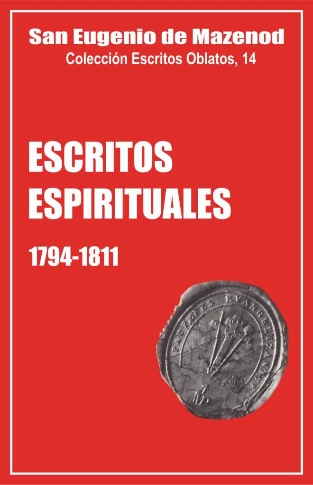
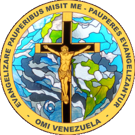

Escritos Oblatos: - 01 - 02 - 03 - 04 - 05 - 06 - 07 - 08 - 09 - 10 - 11 - 12 - 13 - 14 - 15 - 16 - 17 - 18 - 19 - 20 - 21 - 22

San Eugenio de Mazenod
Colección Escritos Oblatos, 14
Versión Española por los pp.
Félix Erviti Acacio Valbuena
y Olegario Domínguez
Postulación General OMI
Roma, 1994
Editado en Asunción,
Paraguay 1997

Palo Gordo
2019
1794–1807 -- 1808-1809 -- 1810-1811 --
Los trece volúmenes ya publicados de cartas de Eugenio de Mazenod no forman ni la cuarta parte de sus escritos. Estos comprenden además las cartas administrativas que escribió como obispo de Marsella, su diario personal, sus escritos espirituales, muchas notas de lectura y estudio, etc.
Contenido de los volúmenes de Escritos espirituales
de San Eugenio.
Los dos volúmenes de ESCRITOS ESPIRITUALES que ahora publicamos no ofrecen más que una parte de los escritos espirituales de Eugenio: aquellos en que habla de sí mismo, del progreso de la gracia en él.
Los otros, que tratan de su doctrina o de su enseñanza, son más numerosos y su publicación, por diversas razones, no se prevé por ahora [1]. Se trata en primer lugar de una doctrina ya obsoleta en varios puntos y expuesta con frecuencia en un estilo que hoy resulta chocante. Además, para cada clase de catecismo o para cada instrucción habría que estudiar las fuentes de su enseñanza, ver si ha explotado a fondo ciertas obras o si solo se ha inspirado en ellas etc. Es un trabajo largo y difícil que hasta ahora no se ha intentado. Las cartas pastorales plantean un problema particular: ¿quién las ha escrito?. Se puede demostrar que Eugenio escribió algunas pastorales de su tío entre 1823 y 1836; pero se sabe también que Mons. Jeancard escribió sus cartas más importantes y, sin duda, también varias cartas pastorales.
Los 192 documentos que aquí se publican, en los que Eugenio habla de sí mismo, son bastante variados. Comprenden sobre todo las notas de 16 retiros realizados entre 1808 y 1837, algunas conferencias espirituales dadas durante su vida en el seminario, reglamentos, propósitos, notas de lectura y, finalmente, cartas a su familia y a sus amigos.
Eugenio habla también de su vida espiritual en las cartas a los oblatos y sobre todo en su Diario que se publicará aparte. La colección de Escritos Oblatos, en efecto, tiene como objetivo poner a disposición de los miembros de la Congregación los principales fondos de los archivos del Fundador y no el ilustrar temas escogidos [2].
N. del T. Se omiten o se abrevian algunas notas del original. También se omiten las ilustraciones y el índice de personas.
Las notas de retiro forman la parte del león de estos dos volúmenes, pero exigen cierta interpretación. Ciertas páginas, en efecto, parecieron tan fuertes a los primeros biógrafos de Mons. de Mazenod, que las pasaron por alto. Pero, escribe el canónigo Leflon: 'si bien no tenemos derecho a descartarlas, con todo, antes de tomarlas al pie de la letra, hay que examinarlas dos veces. En primer lugar, esas meditaciones no tienen la precisión de un examen de conciencia redactado en orden a la confesión. Eugenio no emplea ahí el lenguaje de la teología moral; interpretar sus expresiones con el rigor propio de ésta nos expondría a exagerar y rebasar su contenido. Emplea, en cambio, el lenguaje de una espiritualidad clásica en el seminario, la de la escuela francesa que, por reacción contra el naturalismo y el optimismo del Renacimiento, subraya la miseria del hombre sin Dios para hacer resaltar mejor la grandeza del hombre con Dios. Impresionado por su vocabulario, para él bastante nuevo, el joven alumno de San Sulpicio usa y abusa del mismo con el espíritu un tanto escolar de un novicio que repite escrupulosamente una lección bien aprendida, sin captar a veces el alcance de las palabras. El temperamento radical de Eugenio, su amor a las afirmaciones tajantes y su ardor juvenil se prestaban además a las exageraciones verbales. Y ¿cómo no tener en cuenta las impresiones tan vivas que experimentó?' [3].
Estas notas de retiro tienen, pues, sus límites. Nos dan a conocer a un Eugenio que exagera sus faltas pasadas, idealiza sus proyectos futuros y habla del presente en momentos de fervor cuando el espíritu está caldeado y planea por encima de las contingencias de la vida. Por citar solo un ejemplo, tomemos el texto de su reglamento de vida, compuesto en Aix en diciembre de 1812 (doc. 109). Eugenio dice que la principal ocupación de su vida será amar & Dios y su mayor empeño hacer que sea amado. Con todo, se tiene la impresión de que se trata del reglamento de un monje contemplativo y no de uno que se hizo sacerdote a fin de salvar las almas con la acción. No hay ni una palabra sobre el ministerio y hay treinta páginas sobre sus deberes para con Dios y sobre los medios para mantenerse unido a El por los ejercicios de piedad y el estudio.
Por eso se ha juzgado oportuno completar esas páginas con numerosos extractos de cartas a su familia y a sus amigos en las que Eugenio habla de su vida interior y de su marcha espiritual de modo mucho más concreto y realista que en sus notas de retiro.
Presentaremos aquí, en particular, 21 extractos de cartas al Presidente de Mazenod, escritas sobre todo entre 1804 y 1807, que nos dan a conocer la vida de Eugenio en Aix, y 53 extractos de cartas a la Sra. de Mazenod, escritas las más de ellas entre 1808 y 1812 para convencerla de la seriedad
de su vocación y ponerla al corriente de la vida en el seminario [4]. De ese mismo período aducimos también 8 extractos de cartas a su hermana Eugenia y 6 a su abuela. Hay asimismo unos 40 extractos de cartas a otros 20 corresponsales, total en que se incluyen 6 cartas a Forbin-Janson.
A propósito de la correspondencia con amigos, hay que lamentar la desaparición de varias cartas que existían todavía a finales del siglo pasado; todas ellas eran importantes para darnos a conocer la evolución de la vida espiritual de Eugenio antes de su ingreso en el seminario, en particular, su correspondencia con don Bartolo Zinelli de 1797 a 1802, y luego con el P. Magy, con Manuel Gaultier de Claubry, la señorita Julia de Glandevés, los abates Denis y Beylot, el duque de Rohan-Chabot, etc.( [5]
Las principales etapas de la vida espiritual de Eugenio
La lectura de las páginas de estos dos volúmenes nos permite seguir las principales etapas de la vida interior de Eugenio.
1794 - 1807: búsqueda de un estado de vida.
Sólo publicamos 21 textos de los años 1804-1807 y solo dos anteriores a 1804. Si quitamos la profesión de fe de Venecia (doc. l), los primeros escritos de Eugenio que se conservan todavía, datan de 1799 [6]. Pero en el centenar de cartas escritas entre 1799 y 1804, Eugenio habla muy poco de vida interior y de religión. La piedad y la caridad de la duquesa de Cannízzaro lo edifican en los años de 1799 a 1802, la situación religiosa de Aix y de Francia suscitan su curiosidad y su interés en 1802 y 1803; emite incluso por entonces ciertos juicios despectivos sobre el mal comportamiento de los hijos de la familia Cannizzaro, pero no revela casi nada de su propia práctica religiosa y de su vida espiritual, que, con todo, era muy viva. Explicará el motivo a Francisco de Cannizzaro en 1816: "Desgraciadamente tú nunca has conocido bien a ese Señor lleno de bondad que no ha cesado de colmarte de sus beneficios; ojalá hubiera yo aprovechado el tiempo en que tenía tanto poder sobre tu espíritu como tú lo tenías sobre mi corazón, para darte a conocer lo que yo sabía de sus perfecciones infinitas, para contarte algunas de las maravillas que la gracia había realizado aunque ciertamente apenas lo merecía, para inspirarte hacia la religión el mismo respeto y el mismo afecto que yo sentía en el fondo del corazón, aunque lo ahogaba demasiadas veces; quién sabe, quizás hoy día tendrías tú menos reproches que hacerte y yo tendría un consuelo más, el de haber contribuido a procurarte una dicha más duradera que todos los placeres que te rodean, de los que tendrás que desprenderte; pero a los 17 o 18 años uno no escucha siempre a la razón, ¡qué lástima!" (doc. 136).
La vida espiritual del Presidente de Mazenod, cuya influencia fue tan profunda sobre Eugenio, superaba entonces con mucho la del hijo. En cada una de sus numerosas cartas, conservadas casi todas,-Carlos Antonio encuentra ocasión de hacer consideraciones morales, de atestiguar su adhesión a la Iglesia y sobre todo de afirmar, ocurra lo que ocurra, su entera sumisión a la Providencia divina.
El tío Fortunato, de quien se conservan pocas cartas de los años 1799- 1803, da testimonio del mismo espíritu sobrenatural, y en una carta del 15 de octubre de 1802 nos describe bien el estado espiritual de su sobrino en el momento de dejar Sicilia: "No dejaré tampoco de suplicara Dios cada día que perseveres constantemente en los sentimientos de honor y de religión que siempre han sido la base de todas tus acciones y que te han merecido en países extranjeros la estima general. Conociendo bien la delicadeza de tus costumbres y tu franqueza, no podría recomendarte bastante que moderes tu celo frente a una tropa de jóvenes insensatos y corrompidos, cuyos principios han sido en su totalidad desnaturalizados por doce años de revolución. Persuádete de que a tu edad una conducta ejemplar y a menudo el silencio son la mejor censura del vicio. Sigue siendo una persona honrada y un perfecto cristiano, y no te abandonará la divina Pro videncia. Has sido testigo de todo lo que Ella ha hecho por nosotros en nuestras desgracias, y de la tierna solicitud con que viene en ayuda de quienes ponen en Ella toda su confianza..."
Los dos primeros años pasados en Francia fueron una dura prueba para Eugenio. El recuerdo de sus parientes de Sicilia no le dejaba, mientras que necesitó bastante tiempo para comprender y ser comprendido por su madre y su tío Roze-Joannis, y luego para adaptarse a la vida de Aix. Pero desde 1804 vemos que se integra en su nuevo medio y se va interesando cada vez más por los temas religiosos; habla de ellos gustosamente sobre todo con su padre, que era entonces su principal corresponsal y confidente.
Trata de conocer, en primer lugar, la Iglesia de Aix, de la que pronto se considera un miembro vivo. Hasta llega a sorprendernos el encontrar en sus escritos, desde marzo de 1804, expresiones como: "vamos a fundar un seminario", "el sábado tendremos la ordenación de un sacerdote y de un diácono", etc. (doc. 4 y 5).
Luego asume la defensa del Papa Pío Vil que firmó el concordato de 1802 (doc. 10 y 23); y muestra su admiración ante la catolicidad de la Iglesia y el dogma de la comunión de los santos (doc. 7 y 22). Para defender la doctrina de la Iglesia contra su tío Roze-Joannis, se pone a profundizar sus conocimientos religiosos: "Simple laico, escribe en una nota sobre el jansenismo, me ocupo ...de mi religión porque considero ese estudio como el primero y más esencial de mis deberes ... Saqué de los Concilios y de los escritos de los santos Padres la pura doctrina católica" (doc. 15 y 16) [7]. No puede uno menos de admirar las atinadas observaciones que hace en 1805 acerca del Genio del Cristianismo de Chateaubriand (doc. 8) o en 1806 sobre un sermón del canónigo Blanche que alaba a los ejércitos franceses en lugar de predicar "a Jesucristo crucificado"(doc. 19); son también de admirar sus conocimientos de la Sagrada Escritura y sus convicciones religiosas (doc. 13 y 11) etc.
Se ve además que sufre, en 1805, por la mala fama de los colegios católicos de París (doc. 10) o también por el pensamiento de que algunos amigos pueden morir sin sacramentos; hace todo lo que puede para ayudarles a morir en buenas disposiciones (doc. 9,l) (T; 20, 21). En 1805 escribe con ocasión del fallecimiento de la condesa de Ventimiglia: "No puede usted creer el efecto que en mí produce la muerte de personas de esa generación, aunque ya valga menos que las precedentes. Tengo miedo de que la tradición y el ejemplo de las virtudes desaparezcan del todo. Me estremece la idea de que un día quedaremos reducidos a la nuestra, a esta generación perversa que solo ha libado el veneno de todos los vicios y desprecia la virtud, y que está sumida en una ignorancia tan profunda que es bien de temer que recaigamos en una barbarie todavía más funesta que la que reinaba en el siglo sexto, ya que en aquel tiempo aciago por lo menos se creía en Dios, mientras que hoy se profesa públicamente un espantoso ateísmo" (doc. 9).
A estos buenos principios y a estas sanas reflexiones Eugenio añade las buenas obras. Acepta, a fines de 1806 o comienzos de 1807, ser director de las cárceles (doc. 21) y forma parte de una obra que tiene como objetivo catequizar a los niños campesinos [8].
A la luz de estos hechos, no nos sorprende ver que, desde 1804, Eugenio parezca descartar la idea del matrimonio (doc. 6) y que en 1806 pueda decir: "Por lo que a mí toca, es más que probable que la ausencia de mi padre haya fijado mi destino de un modo muy opuesto a lo que mi corazón antaño tan ansioso de gloria parecía prometerme" (doc. 18); y que en diciembre de 1807 pueda escribir a su amigo Manuel Gaultier de Claubry: "Ahora ¿le hablaré de mí? Sí, pero será para encomendarme a sus oraciones, para encargarle expresamente pida a Dios con perseverancia que cumpla en mí sus adorables designios, cuyo efecto estoy retardando con mis infidelidades; que golpee, que corte, que me reduzca a no querer más que lo que él quiere, que derribe los numerosos obstáculos que se oponen a que yo llegue a un estado más perfecto, al que creo firmemente estar llamado" (doc. 22).
1808-1812: preparación al sacerdocio.
Publicamos 78 documentos escritos de 1808 a 1811. Son especialmente numerosos en 1808 y 1809, cuando el seminarista tiene que luchar contra la nostalgia, sobre todo al pensar que su madre y su abuela le han dejado irse con pena. Encuentra sin cesar nuevos argumentos para convencer a su madre de la realidad del llamamiento de Dios; ella solo se resignará ante el hecho cumplido de la ordenación del hijo en diciembre de 1811.
En esta serie de los escritos de Eugenio se encontrarán páginas muy hermosas que reflejan su amor a la Iglesia, su alegría y su asombro al ir comprendiendo mejor cómo le ha amado Dios y profundizando, en la naturaleza de las órdenes sagradas, su entusiasmo y su celo en todo lo que hace, etc. Siempre edificado por sus maestros y sus condiscípulos, durante esos años va tomando forma en él el tipo de sacerdote y de hombre de Iglesia que será a lo largo de su vida.
1812-1831: formación del hombre apostólico
62 documentos ocupan los años de 1812 a 1831. Las notas de retiro, el reglamento y las cartas de 1812-1815 nos revelan los duros y hasta desgarradores esfuerzos que el abate de Mazenod tiene que hacer para encontrar cierto equilibrio entre la vida de oración y de estudio que se trazó a sí mismo y que querría perfecta y, de otro lado, la vida apostólica cada vez más absorbente que las circunstancias exigen de él empujándole, arrebatado por su celo, a "luchar hasta la muerte por la mayor gloria de Dios" [9].
La grave enfermedad de 1814, la fundación de los Misioneros de Pro venza en 1815-1816, y la opción por la vida religiosa en 1818, le permiten encontrar poco a poco el equilibrio del hombre apostólico. El problema de las dos partes en su vida, si existe todavía después de 1818, aparece con menos frecuencia en las notas de retiro y en las reflexiones del Padre de Mazenod. Por otra parte, sus ocupaciones cada vez más numerosas, como fundador y misionero hasta 1823, y como vicario general de Marsella de 1823 a 1836, le dejan cada vez menos tiempo para hablar de sí mismo en sus cartas, mientras que los retiros, menos los de 1831,1832 y 1837, los hará casi siempre con el clero de Marsella y no le dejaran ya escribir sus impresiones y sus propósitos.
1832-1861: intensa vida apostólica del obispo
Para los años 1832-1861 solo hemos encontrado 29 documentos dignos de ser publicados. La mayoría son de los años 1833-1835 y nos ayudan a comprender un poco el drama interior vivido por Mons. de Mazenod con ocasión del asunto de Icosía y de su nombramiento para el obispado de Marsella.
Después de 1837 parece que no escribió más notas de retiro; en su diario y a veces en sus cartas a los oblatos es donde levanta un poco aquí y allí el velo dejando ver algo de vida interior, en la que nunca faltaron los sufrimientos; pero entonces ya no es él quien elige sus penitencias; le serán impuestas por el Espíritu Santo y los acontecimientos y por los deberes de su doble cargo de obispo y de superior general: ceremonias religiosas, numerosos visitantes, preocupaciones de orden apostólico y económico, correspondencia con los oblatos desperdigados por cuatro continentes, etc.
Por ejemplo, escribe al P. Richard el 18 de enero de 1852: "Jamás se podrá hacer una idea de la esclavitud a ¡a que estoy reducido. Declaro que nadie es menos libre que yo. Tengo que pasar de una ocupación obligada a otra..." El 1 de agosto de 1853 dice igualmente al P. Vincens: "Jóvenes de buena voluntad, no lograréis causarme escrúpulos, por afligido que esté de no poder hacer más. Cuando se levanta uno a las cinco de la mañana y se acuesta cerca de medianoche, cuando uno no se permite un paseo de media hora, cuando uno está de la mañana a la tarde al servicio de todo el mundo y pasa en su despacho, pluma en mano, todo el tiempo que la exigencia o la indiscreción le dejan libre, no puede reprocharse el no cumplir su deber. Hacer más, aunque uno quisiera, es imposible" [10]. Después del período de las grandes purificaciones pasivas de los años 1829-1836 (enfermedad, asunto de Icosía, Véze, etc.) la unión de Mons. de Mazenod con el Señor ,sobre todo en la eucaristía, y ciertos fenómenos místicos extraordinarios como el don de lágrimas, indecibles momentos de alegría y de paz, intuiciones proféticas, permiten afirmar que las purificaciones y sus esfuerzos de vida virtuosa le llevaron a la unión habitual e íntima con Dios [11].
Reflexiones sobre dos temas muy acentuados en estos escritos.
Los escritos espirituales de Mons. de Mazenod son ricos de contenido, y los oblatos conocen ya muchos extractos citados en importantes estudios y tesis sobre la vida espiritual de Eugenio, en general [12] o sobre puntos particulares [13]. Yo quisiera, sin embargo, hacer aquí algunas reflexiones, presentando en cierto modo dos de los principales temas de estas páginas: el sentido del pecado personal y la aspiración a la perfección.
Expresiones que usa:
Leyendo los escritos espirituales de San Eugenio, en particular sus notas de retiro de 1808 a 1837, uno queda impresionado por el número de veces que habla del pecado, de su vida de pecado, y por la fuerza de las expresiones que emplea.
Aunque antes de entrar en el seminario Eugenio hace alguna vez mención del pecado, en su primer retiro de octubre de 1808 es cuando por vez primera habla de su vida de pecado.
He aquí algunas de sus expresiones. En primer lugar, se reconoce indigno de vivir en medio de los santos que habitan en el seminario: "Tengo que humillarme profundamente a la vista de mis iniquidades que habrían debido cerrarme para siempre el ingreso al santuario. Debo tener constantemente presentes en mi espíritu mis extravíos, para no olvidar nunca que soy el último de todos a los ojos del Dios justo ...;si los hombres me vieran tal como soy, por grande que fuera su caridad, yo les resultaría insoportable". Añade que el Señor le ha arrancado "de las manos del demonio", "de la boca del infierno", "le ha sacado del vicio" (doc. 28).
Luego, no habla apenas de sus pecados hasta su retiro de ordenación en diciembre de 1811 (doc. 95). Ahí utiliza términos todavía más explícitos y más fuertes que en 1808: "Por mis iniquidades pasadas... me he entregado al demonio y a sus obras perversas ... Soy, pues, un pecador, ¡o sé, un grande y muy grande pecador..." Meditaré ... sobre el pecado, sobre el horrible, el execrable pecado mortal, en el cual me he complacido tanto tiempo, o mejor dicho, bajo el imperio del cual he gemido durante varios años". "Mancillé vuestra imagen, mirad cómo insulté vuestro amor, antes de comprender lo que era el pecado y quién era Aquel a quien ofendía ... Esta alma que me habíais dado para alabaros, para bendecimos y para amaros, os despreció, insultó vuestras bondades ...se apartó de vos y se sumergió en un sucio lodazal... Vos, Majestad infinita, ofendido, ultrajado por este gusanillo infecto, por esta podredumbre sublevada ... yo, oveja sarnosa, yo, leproso repugnante..." El Señor vino "a sacarme del lodazal en que estaba hundido..." Sin su gracia "seguiría todavía encenagado en mi cloaca, donde tal vez hubiera perecido", etc.
Después, en el importantísimo retiro de diciembre de 1814 (doc. 130) antes de fundar la Congregación, es donde Eugenio habla más de sus pecados pasados y entra en diversos detalles; entre otras cosas, allí es donde Eugenio menciona explícitamente, por primera vez, su gracia de conversión del viernes santo de 1807: "¿Puedo olvidar, aquellas lágrimas amargas que la vista de la cruz hizo brotar de mis ojos un viernes santo?... Yo estaba en estado de pecado mortal, y era eso precisamente lo que ocasionaba mi dolor"."...Yo, sacerdote, yo que he sido por tanto tiempo, durante varios años, conscientemente, voluntariamente obstinadamente el esclavo del demonio, el enemigo de Dios ... Dios se ha servido de un poco de barro, peor todavía, de vil excremento, para realizar una gran obra ... Mi puesto no estaba en el santuario [... sino] fuera de la Iglesia, con los perros, en la última fila de los penitentes; he ahí hasta dónde podía extenderse mi ambición..." etc.
Eugenio seguirá hablando durante toda su vida de sus pecados, pero lo hará en forma menos abultada. Estos pocos extractos bastan para dar a entender al lector de qué se trata: el sentido del pecado personal hondamente percibido y expresado con un realismo que hoy difícilmente se comprende.
-¿Qué pecados?.
¿Será indiscreto preguntarse qué vida de pecado llevó Eugenio, o por lo menos qué sentido hay que dar a sus expresiones?
Ya hemos leído la explicación dada por el canónigo Leflon. En su reglamento de 1812, Eugenio mismo creyó oportuno puntualizar, poniendo cierta sordina a sus expresiones: "Como hoy día está uno expuesto a ver que los papeles más secretos, que deberían ser los más respetados, sean violados, leídos y divulgados por los agentes de la policía [de Napoleón] creo deber añadir esta nota para esos señores, en un escrito que es solo para mí: es que, cuando hablo de mis crímenes, se ha de entender de las faltas graves que reconozco haber tenido la desgracia de cometer contra Dios en lo secreto de mi conciencia; así que, aunque con toda verdad pueda decir que ante Dios soy un grandísimo pecador, podría también jactarme ante aquellos que no entienden este lenguaje, si pensara como ellos, de ser más caballero que ellos, pues no solo nunca he robado, ni matado, ni hecho el menor mal ni el menor perjuicio a nadie en el mundo, no solo nunca he quitado la mujer de nadie, a lo que se limita el catecismo de los más honrados del mundo, sino que además siempre he creído y actuado conforme a este principio: que tanto la razón como la religión prescribe imperiosamente el abstenerse de querer gozar de lo que pertenece a otro, y el jamás consentir en hacer con quien sea acciones que podrían ser ocasión de justos remordimientos; en una palabra, nunca he dado ningún escándalo de ninguna clase ni en ninguna época de mi vida. Apelo a todos los que me han conocido en todos los; países donde he vivido" (doc. 109).
Eugenio habla, pues, aquí sin figuras de estilo: "no ha dado ningún escándalo de ninguna clase en ninguna época" de su vida. Precisa muy especialmente, al menos cuatro veces, que nunca tuvo que reprocharse la menor falta con mujeres [14].
El P. Rambert escribe a este propósito: "A pesar de los peligros y las seducciones a los que estaba expuesto [en Sicilia y a su regreso a Aix] por los atractivos de su persona, por su temperamento de fuego y por su excesiva ternura de corazón, debió a estas gracias privilegiadas y a la generosa correspondencia a ¡as mismas el poderse dar este testimonio de que nunca, a pesar de los lazos tendidos a su inocencia, tuvo que reprocharse la menos falta contra la virtud angélica.
En su obra "Je serai prétre", el P. Morabito hace observar que Rambert va más allá de las afirmaciones del Fundador quien nunca dijo no tener que reprocharse falta alguna contra la virtud angélica. "Pensamos que en realidad, escribe, se trata de algunas debilidades que habría tenido en su juventud en medio del mundo, aun viviendo una vida muy cristiana [15]. El P Morabito recibió entonces varias cartas de protesta de parte de oblatos que le acusaban de haber faltado de discreción y de respeto. Pero no había motivo para extrañarse cuando se sabe hasta qué punto las faltas contra el sexto y noveno mandamientos han sido por tanto tiempo el objeto principal de las confesiones.
Eugenio mismo nunca entró en más detalles. Sin embargo, de hecho, varias expresiones de sus notas de retiro eran de uso corriente entonces, entre los autores espirituales y los predicadores, para hablar de la impureza en general: gusano infecto, podredumbre sublevada, oveja sarnosa, lodazal ... cloaca, repetición ininterrumpida de acciones criminales, este cuerpo que con tanta frecuencia ha arrastrado mi alma a excesos que la habían hecho enemiga irreconciliable de Dios, etc.
Recientemente algunos oblatos se han permitido dar una interpretación mucho más atrevida. Conociendo mal sin duda la psicología del fundador y su estilo, aunque no hablan explícitamente de homosexualidad, dicen que Eugenio habría tenido al menos tendencias de ese tipo.
Hay que alzarse categóricamente contra esa interpretación que carece de fundamentos históricos serios. Las acusaciones de Francisco Véze en 1838 [16] no ofrecen apoyo alguno a esa explicación, ni tampoco el hecho de que Eugenio haya afirmado varias veces que nunca cometió faltas con las mujeres. La homosexualidad era algo impensable en tiempos de Eugenio y en su ambiente todavía fuertemente influenciado por el jansenismo, y sobre todo en él que siempre tuvo una conciencia más bien timorata. Basta leer sus exámenes de conciencia extremadamente detallados (doc. 109, 157 y 169), para pensar que fácilmente hubiera sido escrupuloso si no se supiera por otra parte que su confianza en la infinita misericordia de Dios le permitió siempre conservar un equilibrio perfecto [17].
Oblatos poco al corriente de la sensibilidad de corazón de Eugenio, han podido sorprenderse ante el vivo colorido de ciertas expresiones de sus cartas a algunos oblatos, en especial, al P. Suzanne [18]; o también a causa de algunas de sus propias confesiones de amar tiernamente a sus amigos (doc. 95), a algunos jóvenes de la Asociación de la Juventud de Aix o a algunos oblatos (doc. 130 y 145). El se explica muy claramente sobre ese punto en sus retiros de 1811,1814 y 1818. Pero podemos estar seguros de que no hay que sobrestimarla culpabilidad de que se acusa. Simplemente se daba cuenta de que era propenso a amar más a quienes le manifestaban mayor afecto y gratitud, o bien tenía miedo de sustraer algo en su corazón al amor absoluto de Dios. [19]
Reconoce que su corazón le ha hecho sufrir a menudo, pero él no lo desaprueba. Muchas veces habló de esto, particularmente en su diario el 4 de setiembre de 1837: "Declaro, escribe, que no concibo cómo pueden amar a Dios quienes no saben amar a los hombres dignos de ser amados. Según esto se comprenderá que estoy lejos de querer desaprobar los sentimientos que me animan. Que sepa quien se sienta tentado de censurarme, que temo poco su juicio y que me sentiría con fuerzas para probarle que tengo mucha razón para dar gracias a Dios por haberme dado un alma capaz de comprender mejor la de Jesucristo nuestro Maestro que nos ha formado y que anima, e inspira la mía, que esos fríos y egoístas razonadores que, al parecer, colocan el corazón en el cerebro y no saben amara nadie porque en último análisis solo se aman a sí mismos ... Que se estudie a San Juan, que se profundice sobre todo lo que emana del corazón tan amante de Jesucristo no solo a favor de todos los hombres sino particularmente a favor de sus apóstoles y discípulos, y que luego se atrevan a venir a predicarnos un amor especulativo desprovisto de sentimiento y carente de afecto..." [20].
Pero ¿ es necesario hacer suposiciones para reconocer qué es lo que Eugenio consideró verdaderamente como pecado grave en su vida? No. Son conocidas al menos algunas de sus faltas. Frecuentó el mundo, los bailes y el teatro, en Palermo y sobre todo en Aix tras su regreso. Ese mismo hecho era entonces considerado como un pecado grave. Eugenio lo dice expresamente en unas diez cartas, escritas entre 1808 v 1811, en las cuales suplica a su hermana, ya casada, que no baile, que no vaya al teatro, etc. [21].
En Sicilia, apenas habla del baile, pero escribe en su Diario: "Habría mucho que decir sobre las costumbres depravadas de la alta sociedad de Palermo; no hablaré de ello; quiero solo consignar la infinita bondad de Dios que, con su poderosa gracia, me preservó constantemente, en medio de peligros muy grandes, inspirándome no solo alejamiento sino una especie de horror por toda clase de disipación que acarrea los extravíos que yo deploraba en los otros..." [22].
En Aix, en 1303 y principios de 1804, parece haber participado en la vida mundana con cierto interés. Escribe a su padre el 27 de enero de 1804: "Pero, si no me he divertido en San Lorenzo, ¿cómo dar abasto a los placeres que me ofrece la encantadora ciudad de Aix?. Además del Odeón...donde nos reunimos dos veces por semana para cantar y bailar, tenemos con frecuencia comedias. Pero qué digo comedias, son óperas..." Y añade el 16 de febrero: "Si alguien se aburre en Aix, es por su culpa; así que no acuso a nadie del aburrimiento que yo siento. Hay de todo: conciertos, picnics, bailes de etiqueta, bailes de máscaras, tés, cenas, comedias de sociedad, vodeviles nuevos..." [23].
A Eugenio le gustaba exagerar, aunque fuera sólo para divertir a su padre. Sin duda aquí quiere burlarse de esa vida que conoce sin participar demasiado en ella, ya que el 12 de abril siguiente dirá todavía que a veces se queda "tres semanas sin salir al mundo" (doc. 5). Salió, con todo, en ocasiones; pero con frecuencia afirma que su comportamiento fue siempre correcto. En 1805 se queja de su madre. Esta teme que se disipe y que quiera quedarse demasiado tiempo en París. El comenta entonces: "si el cumplimiento de todos los deberes, si el alejamiento de todas las distracciones, si, finalmente, el comedimiento en todas las ocasiones pueden ser un título para obtener su confianza..." ella no debería preocuparse. [24]
El 14 de abril de 1810, Eugenio hace una confidencia importante a su madre, que le suplica regrese a Aix tras dos años de seminario. Le escribe:
"Aunque viviendo en la sociedad intentase abstenerme de todo lo que crea contrario a la ley de Dios u opuesto a la moral evangélica, ¿cree usted que la gente puede tener mucha confianza en aquel a quien ha visto casi la víspera en reuniones ruidosas, compartiendo al menos pasivamente la disipación que reina entre los mundanos?"(doc. 68)
¿Por qué se considera tan gran pecador?
La confesión es clara: ha compartido, pasivamente, la disipación de las reuniones ruidosas de los mundanos. Pero para Eugenio esta frecuentación del mundo "al menos pasivamente", adquirió posteriormente un carácter especial de gravedad por una razón particular: desde la adolescencia el Señor lo había llamado al sacerdocio. Esta llamada pudo ser apenas perceptible, casi olvidada en algunos momentos de su vida, pero siempre volvió a hacerse oír de nuevo. Eugenio escribe llanamente que había creído reconocer la llamada de Dios desde su adolescencia [25]. Añade en su Diario del destierro: "esta vocación no ha podido llevarse a cabo hasta mucho más tarde; he tenido que pasar por otras pruebas. Si hubiésemos quedado en Venecia un año más... habría seguido a mi santo director... en la Congregación religiosa que él escogió..." [26].
Su deseo de hacerse sacerdote era bien conocido entre los franceses de Venecia, tanto que Mons. Raillon, arzobispo de Aix, escribió al Nuncio de París el 6 de febrero de 1834: "Le he conocido en Italia, muy joven, no llegaba a 20 años. Mostraba ya mucha piedad y el deseo de hacerse eclesiástico" [27].
Don Bartolo Zinelli cultivó luego esa vocación con una correspondencia continuada a Nápoles y a Palermo. A finales del siglo pasado se conservaban todavía algunas de sus cartas, escritas en 1798 y 1801 -1802. El 24 de enero de 1798 decía a Eugenio muy delicadamente: "Está usted en la edad en la que hay que pensar en la elección de un género de vida. Consulte a Dios sobre este punto importante". El 12 de octubre de 1801 añadía: "Su carácter no le dejará hacer nada a medias; hará mucho bien o mucho mal ... Permítame ofrecerle estas dos máximas que trato de inculcar a los jóvenes: nada contra Dios, nada sin Dios" [28]. Uno de los primeros propósitos del seminarista en octubre de 1808 será exactamente éste: "Nada contra Dios" (doc. 28). En la última carta de Don Bartolo, escrita poco antes de su muerte en 1802, éste habla todavía de la vocación :"Desearía de usted algo más grande de lo que está haciendo actualmente, algo más grande todavía por la gloria de Dios y la salvación de las almas" [29].
Es, pues, difícil imaginar que Eugenio haya olvidado por completo la vocación en Sicilia, hasta los 20 años, ya que Don Bartolo le recordaba continuamente la llamada de Dios. En Aix, es seguro que Eugenio empezó a examinar seriamente su vocación a finales de 1806 [30]. Pero ya desde la primavera de 1804 manifiesta gran interés por las cuestiones religiosas y por la Iglesia (doc. 4-20). El P. Morabito puso bien de relieve todas las posibles alusiones a ¡a vocación de Eugenio en sus cartas de 1805 a 1808 [31].
Puede decirse, entonces, que el joven renunció de hecho a su vocación desde la primavera de 1802 hasta 1804, época en que de algún modo consintió en el matrimonio, puesto que volvió a Francia a finales de 1802 precisamente porque su madre le había encontrado una futura esposa, que, sin embargo, murió poco después de que él regresará [32]. Pero parece que nunca olvidó completamente el llamamiento de Dios, aun cuando en vista de otros proyectos ese llamamiento pudo ejercer escaso influjo en él en 1802 o más tarde en 1805 [33]. Pero el pensar en otro estado de vida diferente de aquel hacia el cual uno ya se inclina, no supone necesariamente que éste quede completamente olvidado; así Eugenio en su retiro de 1811 escribe: "Tú nunca has cesado de hablar a mi corazón" (doc. 95) y de nuevo en 1814: "Cuántas veces en mi vida pasada mi corazón desgarrado, atormentado, se lanzaba hacia Dios de quien se había apartado" (doc. 130). Aunque aquí hable de su alejamiento de Dios, se ve también en ello una prueba de la continuidad de la llamada de Dios que con tanta claridad había escuchado en su adolescencia, continuidad afirmada por los primeros biógrafos y por el P. Morabito [34] .
Esa es la razón, a mi entender, de que el Fundador se haya reconocido pecador y gran pecador, puesto que, según la expresión que usa a menudo, ha resistido a las gracias de Dios, siendo infiel durante varios años a los proyectos divinos sobre él. La frecuentación, incluso pasiva, del mundo era entonces considerada pecado grave para todos; y era un acto incalificable para quien había sido y se sentía llamado a una perfección superior.
Ahí está, me parece, lo que explica en parte las expresiones tan fuertes de Eugenio cuando habla de su vida de pecado. Por mucho tiempo luchó por mantenerse fiel a su vocación y sufrió. El recuerdo de esas tempestades se amplificó en el seminario y en los comienzos de su sacerdocio, cuando la delicadeza de su conciencia se afinó todavía más: de ahí sus reacciones y sus expresiones en las que vemos que para él, como por lo demás para todos los santos que tuvieron viva experiencia de Dios, el pecado fue un verdadero drama interior sin precedente porque lo es para Dios.
La tranquilidad en el mal es el peor estado de un alma, y Eugenio reconoce que una de las grandes gracias que ha recibido es ésta: Dios no le ha dejado nunca en paz [35].
Para terminar estas reflexiones sobre el pecado, puede uno preguntarse porqué Mons. de Mazenod, que tenía mucho interés en dejar buena imagen de sí a sus hijos oblatos [36], no destruyó, antes de morir, estas notas de retiros en que es el acusador implacable de sus faltas ante Dios y ante los hombres [37].
Mucho tiempo antes quiso él tal vez darnos la respuesta. En una conferencia espiritual que dio a los seminaristas en 1808 leemos: "Las misericordias de mi Dios son infinitas. Alabemos y publiquemos sus favores, porque, si es bueno tener escondido el secreto del Rey, dice la Escritura, es un honor, digo más, es un deber descubrir y publicar las obras de Dios" (doc. 77). Quiso, pues, hacer un acto de humildad sobre su amor propio, que reconocía que era muy vivo en él en su juventud; sobre todo quiso publicar las bondades y la misericordia de Dios para con él. El P. Morabito escribe muy atinadamente a este propósito: "Cuando uno ha obrado mal, hay dos maneras de reparar: la primera, haciendo olvidar el pecado si es público y cubriéndolo de silencio si es secreto; la segunda es reconocer el pecado, humillarse y darse a conocer como uno es para la humillación propia y para la gloria de Dios. La primera es la de las almas ordinarias, la segunda, la de los santos. El Fundador prefirió la segunda: hacer triunfar, con su humillación, la gloria de Dios y sus misericordias para con él. Por eso dejó a la Congregación todas sus notas íntimas, bien conservadas dentro de sólidas tapas..." [38]
Empeño por la perfección.
Una de las palabras que más a menudo acuden a la pluma de Eugenio, junto con la de pecado es la de santidad. Esta palabra corresponde a una realidad tan profundamente enraizada en él como la existencia del pecado. A partir de 1807-1808, como ya anteriormente en Venecia, tiende con todo su ser hacia la perfección cristiana y la santidad.
El impulso inicial se dio sin duda en su encuentro con Cristo crucificado el viernes santo de 1807, pero Eugenio no hablará claramente de ese acontecimiento hasta 1814 (doc. 130). En sus escritos, el deseo, la aspiración a la santidad aparece por vez primera en una carta de diciembre de 1807 a su amigo Manuel Gaultier: "Que Dios... derribe los numerosos
obstáculos que se oponen a que yo llegue a un estado más perfecto al que fuertemente creo ser llamado ...En una palabra que él me haga digno de la Comunión de los Santos y me haga ocupar entre ellos el lugar que El parece haberme asignado pero que creo estar todavía muy lejos de merecer" (doc. 22).
Ya al ingresar en el seminario, Eugenio se considera "indigno ...de habitar entre los santos que componen esta casa verdaderamente celeste" [39] (doc. 28); siente entonces la necesidad de humillarse [40] , de hacer penitencia y de corresponder en adelante con entera generosidad a todas las gracias que recibe. Desde su encuentro con Cristo crucificado en 1807, el Señor es y será cada vez más el objeto de su amor y de su imitación, pero en una conferencia espiritual que dio el 19 de marzo de 1809 reconoce la inconmensurable distancia que le separa de la santidad de su modelo a quien no ha imitado en su inocencia pero a quien se esforzará por servir en su entrega (doc. 48).
A medida que se va acercando la ordenación, comprende cada vez mejor que el sacerdote debe compartir la santidad de Cristo y de los apóstoles (doc. 66); por eso quiere con la ayuda de Dios, "establecer la obra de su santificación sobre fundamentos sólidos e inconmovibles" a fin de volverse apto "para santificar a los demás trabajando por su propia salvación" (doc. 83). En esta carta a su madre del 31 de marzo de 1811 tenemos dos de los motivos principales que él invoca de continuo para tender hacia la santidad: el sacerdocio y la vida apostólica.
- Por qué aspirar a la santidad.
Debe tender a ella con todas sus fuerzas y por todos los medios (doc. 102) porque "el sacerdocio es un estado de perfección que exige de quienes tienen la dicha de estar revestidos de él, una fidelidad escrupulosa a los menores movimientos del Espíritu Santo", escribe en enero de 1812 (doc. 103) . Ahora bien, está convencido, sobre todo después de la ordenación, que recibe él" más gracias que las que hacen falta para hacer un gran santo" (doc. 98).
Antes de regresar a Aix en 1812, escribe a su madre: "Quiero antes de terminar prevenirla de que, por estado, estoy obligado a tender a la perfección, y por consiguiente a tomar todos los medios para lograrla" (doc. 108). En sus notas de retiro, en diciembre de 1814 se lee igualmente : "Ya que soy sacerdote, mi único cuidado ha de ser honrar mi carácter. El mío es un estado de perfección ¿Lo he comprendido bien?"... (doc. 130) Por el contrario, se reconoce tibio y hasta siempre pecador; añade" ¡extraña cobardía la mía! nadie ha tenido tal vez con más frecuencia deseos de perfección, nadie ha estado tan prendado de los encantos de este venturoso estado, y nadie ha sido sin duda más infiel a los propósitos que se refieren a él".
En el retiro de mayo de 1824 las instrucciones del Padre Enfantin le conmueven poco. "Mis lecturas, escribe, han versado sobre la dignidad, sobre la santidad del sacerdocio, sobre la gravedad de los pecados en los sacerdotes, sobre el peligro de pecar y de perderse si se es infiel a la gracia, descuidando la práctica de las virtudes que deben constantemente adornar el alma de un sacerdote y sobre todo de un sacerdote que debe ser el modelo, el apoyo, el sostén de aquellos que la Providencia ha confiado a su dirección, de un sacerdote al que Dios ha hecho la gracia de sentir que las virtudes comunes son insuficientes para obrar las maravillas que deben acompañar las obras de su ministerio, y que ha buscado acercarse a los consejos para cumplir mejor los preceptos.." (doc. 156).
Durante su retiro de ordenación para el episcopado en 1832, empieza haciendo una triste constatación: era más santo en sus primeros años de vida sacerdotal que actualmente (doc. 166). Y después añade: "Sé que el sacerdocio que me honra desde hace 21 años es un estado de perfección, y que la Iglesia, al elevarme al episcopado, ha debido de creerme provisto abundantemente de esas virtudes que apenas veo en mi alma o de las que tal vez para vergüenza mía estoy enteramente desprovisto, pero qué puedo responder si no las palabras del deudor del Evangelio "patientiam habe in me et omnia reddam tibi" (Mt. 18, 26). Ayudadme Señor, y dadme tiempo e intentaré ser lo que vos queréis que sea".
Por último en 1837, acepta con cierto temor la pesada responsabilidad de la diócesis de Marsella . Anota en su retiro: "Es una necesidad que Dios me impone, tengamos ánimos y contemos con su gracia. Para eso ante todo hace falta trabajar seriamente por ser santo. Esta nueva fase de mi vida ha de ser una época de renovación total. He fracasado ya varias veces en mis buenos propósitos. La circunstancia es demasiado favorable para no aprovecharla. Sin eso ¡qué seria de mi!... Tengo de veras necesidad de revigorizar mi alma. Dios me proporciona la ocasión ya que me impone un gran deber que no podré cumplir convenientemente más que siguiendo las huellas de los santos. Ya es una gracia insigne el comprenderlo; es preciso que corresponda a ella para lograr el complemento" (doc. 185).
Pero, como Cristo y sus discípulos, Eugenio se siente llamado a la vida apostólica, al don total de si mismo por la salvación de las almas. Ya en sus primeros años de ministerio en Aix se convence de que el grado de santidad de las almas que se le han confiado depende en buena parte de su propia santidad. En su retiro de diciembre de 1814 escribe: Para trabajar por la salvación de las almas, tengo que ser santo, muy santo; primero, porque sin eso seria inútil intentar la conversión de nadie: ¿como dar de lo que no se tiene? uno tiene que dar de la sobreabundancia; en segundo lugar, una virtud mediocre no podría sostenerse en medio del mundo, ni siquiera viviendo como yo vivo. Es absolutamente necesario que el brillo de las virtudes de un sacerdote sea tan vivo que disipe todos los vapores que se levantan a su alrededor; que traspase las más espesas nubes" (doc. 130 y 139) [41].
En un breve retiro hecho el 30 de octubre de 1818, la víspera de los primeros votos emitidos en la Congregación, hace la siguiente observación: "... de mi fidelidad en corresponderá las gracias de Dios, porque esta ayuda es siempre proporcionada a las necesidades, depende tal vez la salvación de infinidad de almas. Si soy fervoroso, la comunidad a cuyo frente estoy lo será mas y poblaciones enteras se beneficiarán de ese aumento de celo y de amor..." (doc. 148 y 156).
En 1826, tres años después de haber dejado de ir a misionar para ocuparse de la administración como vicario general, hace esta observación en un examen de conciencia: "Hay una consideración que es preciso cuidarse mucho de olvidar, es la obligación inexcusable de tender a la perfección. Esta consideración me llevará a reconocer un montón de pecados de omisión pues a qué grado de santidad no obliga la vocación apostólica, quiero decir, la que me consagra a trabajar sin descanso en la santificación de las almas con los medios que han sido empleados por los Apóstoles..." (doc. 157).
De nuevo en su retiro de 1837 pasa revista a los diversos grupos de fieles de su diócesis y cae en la cuenta de la extensión de su misión y del celo que deberá desplegar: "Aquí es donde se van a encontrarlas mayores dificultades, escribe, pues si siempre ha resultado difícil a los santos obispos que nos han precedido hacer un poco de bien en sus diócesis ... ¡qué será hoy cuando casi no queda ya fe entre los cristianos!..." (doc. 187).
Finalmente, la decisión que en 1818 tomó junto con sus compañeros, de emitir votos y de hacerse religiosos, añade todavía fuerza a su deseo y a la obligación de hacerse santo: "Es preciso que seamos francamente santos nosotros mismos", escribe en su tercera carta al P. Tempier [42]. En su retiro de mayo de 1818, unos días antes de la invitación a aceptar Ntra. Sra. de Laus y la decisión de componer unas Reglas, hace esta confidencia : "EI pensamiento que me ocupó, que me fascina todo el tiempo de mi acción de gracias, es que debo ser santo, y, cosa sorprendente, me parecía tan fácil, que no ponía en duda pudiera serlo; una ojeada a los santos de nuestros días, como el beato Leonardo de Puerto-Mauricio y el beato Alfonso de Lígorio, parecía animarme y fortalecerme. Los medios que había que tomar para lograrlo, lejos de asustarme, me confirmaban en esa confianza: tan fáciles eran. La vista de la perfección religiosa, la observancia de los consejos evangélicos, se presentaron a mi espíritu desprovistos de las dificultades que había encontrado en ellos hasta ahora. Me preguntaba por qué a los votos de castidad y de obediencia hechos anteriormente no añadiría el de pobreza, y pasando revista a las diferentes obligaciones que esa pobreza evangélica me impondría, no encontré nada que me hiciera volver atrás ... Esta atracción que me ha llevado siempre hacia una perfección, cuyos ejemplos no veo a mi alrededor, en un país que ya no sabe lo que es perfección, que se asusta de todo etc., esta atracción que me hace hallar tanto encanto en los relatos de lo que han hecho los santos, que me infunde deseos tan vivos de imitarlos, que me hace encontrarme confinado, que me hace sentirme tan contrariado porque no puedo hacer todo cuanto el Señor me inspira, esta atracción merece que la considere, que me dedique a examinarla de cerca, que en una palabra la siga sin detenerme más", (doc. 145).
En 1824, siente, a causa de su cargo de vicario general, no poder vivir en una comunidad oblata para edificarse al contacto con los oblatos que "tienen todos incomparablemente más virtudes" que él. Añade: "Viviré, pues, siempre en la unión mas íntima de espíritu con ellos, y hasta que podamos formaren Marsella una casa regular que nos procure parte de las ventajas que se hallan en abundancia en nuestra querida casa de Aix, observaré en cuanto me sea posible ¡a Regla por mi cuenta ..." (doc. 156)
En su retiro de fines de octubre de 1834, medita sobre las Reglas y hace un comentario de ellas. Después de recopiar esta frase del Prefacio: serio sanctitati suae incumbere habent, etc, escribe: "¿Se puede concebir algo más perfecto , en la tierra? Reléase atentamente este parágrafo, y cuando se haya leído, vuélvase a leer: Conforme al juicio de la Iglesia, había que ser eso para abrazar el ministerio al que estamos llamados, y para corresponder con fidelidad a nuestra santa vocación. Por lo menos hay que tender a esa perfección con todas las potencias de nuestra alma. En ello está comprometida nuestra salvación. Nos hemos dedicado, consagrado a ello, ingresando en la Congregación i Feliz necesidad!" (doc. 163). Unas líneas más abajo, hace una reflexión análoga a la de su examen de conciencia de 1826: "La segunda consideración también tomada del fin de nuestro Instituto me pondrá en condiciones de descubrir muchas omisiones para mi gran vergüenza. Es que estamos llamados a reemplazar en cuanto esté en nosotros a las diversas órdenes religiosas que fueron destruidas por la Revolución. A la luz de esto ¿a qué perfección estamos llamados? a la perfección propia de cada orden suprimida. No es posible abarcar la perfección en un sentido más amplio. Este es el fin del Instituto. ¡Qué motivo de confusión para mí el haberlo comprendido tan mal!..." (doc. 157).
Naturaleza de la perfección. Medios empleados por Eugenio.
El deseo de la santidad y los esfuerzos para ser perfecto se presentan en Eugenio como un caminar constante y casi natural. Por otra parte, el ejemplo de los santos lo había seducido (doc. 139 y 146). Siempre intentó imitarlos (doc. 145) y nunca dejó de invocarlos (doc. 85 y 183).
En una carta a su amigo d'Aibertas en 1820 escribe que hacerse santo es fácil: basta querer y poner los medios. El camino más corto, añade, es "servir a Dios con amor y agradecimiento" (doc. 153). Pero llegó a poder dar ese consejo tras muchos años de búsquedas y de sufrimientos.
Eugenio nunca fue amigo de términos medios. Había escrito, por ejemplo, al ingresar en el seminario: "¿Podría poner en duda que tengo grandísima necesidad de penitencia?... Vista la enormidad y el número de mis faltas, esta expiación debe ser el asunto y la ocupación de toda mi vida" (doc. 28). Esta idea de vida penitente reaparece en todos sus retiros, sobre todo durante sus primeros años de sacerdocio. Intentó entonces imitar las penitencias corporales de los monjes, asumiendo al mismo tiempo tas numerosas mortificaciones provenientes de la vida apostólica, hasta tal punto que sobre todo en 1816-1818 su cuerpo se resintió [43]. Las enfermedades, más los prudentes consejos del P. Tempier y luego los de su tío Fortunato, le hicieron comprender que la vida apostólica en unión con Cristo proporcionaba por sí sola innumerables penitencias del cuerpo, de la voluntad y del corazón que permiten a uno ser víctima con Cristo, sin tener que añadir penitencias extraordinarias y artificiales [44].
El mismo dilema se planteó, por más tiempo todavía, acerca de su amor a Dios y del amor al prójimo, e igualmente acerca de los medios que debía emplear para alcanzar la perfección, e, indirectamente, acerca de la naturaleza de la perfección a la que Dios le llamaba personalmente. Por supuesto, él sabía que la santidad consiste en hacerse otro Jesucristo, el Santo por excelencia. Centenares de veces habla Eugenio de Jesús en sus escritos espirituales. Pero vio primeramente y sobre todo a un Jesús unido a su Padre por la oración y la contemplación (doc. 130), hasta el punto que el joven sacerdote se preguntó varias veces, entre 1814 y 1817, si debería ingresar en una orden donde trabajara únicamente en su propia salvación [45]. De ahí que, aun permaneciendo en Aix y trabajando con la gente, naciera en él la decisión de adoptar medios que tendían hacia esa clase de perfección: la frecuencia de los sacramentos, especialmente de la eucaristía, que él aconseja también de continuo a su madre y a su hermana [46], la oración, principal medio de santificación del sacerdote (doc.107), las penitencias (doc. 109), el examen de conciencia para consolidarla obra de la vocación" (iti), la confesión "para perseverar en la virtud" (ib.), los numerosos ejercicios de piedad fijados en un reglamento estricto al que debe atenerse fielmente "para alcanzarla perfección y para mantenerse en ella" (ib.) etc.
Su programa de estudio y de oración estuvo tan cargado en los años 1813- 1816, que no lograba encontrar equilibrio entre el tiempo consagrado á la contemplación y el dedicado a la acción. Se acusaba constantemente unas veces de falta de celo y de amor al prójimo, sobre todo cuando recibía cartas de su superactivo amigo Forbin-Janson; al compararse con él, Eugenio le decía que él mismo no hacía ni la centésima parte (doc. 116); otras veces, más frecuentemente, entre 1813-1816, se reconoce culpable de ser infiel a su reglamento. En su retiro de 1813 hasta piensa que tendrá que llegar a comprometerse con voto a observar estrictamente su reglamento de vida de oración y de estudio (doc. 121).
Fue pues a través de grandes sufrimientos interiores y de serias enfermedades como encontró poco a poco los medios de perfección, descubriendo la naturaleza de la santidad a la que Dios lo llamaba en su propio estado de vida.
Un primer rayo de luz resplandece ante sus ojos, sobre ese particular, en el curso de su retiro de 1814. Contribuye sobre todo a apaciguar su estado de insatisfacción frente a un apostolado que encuentra demasiado limitado y, además, muy obstaculizado: "Nuestra perfección, no sólo consiste en hacer grandes cosas por Dios, escribe, sino sobre todo en cumplir su voluntad: así cuando por su voluntad estamos en la imposibilidad de hacer ciertas obras, etc., esa misma impotencia, bien dirigida, puede ser ante Dios de más valor que esas obras de relumbrón, etc, que largas oraciones, etc.". En 1816 añade en el mismo sentido: "Tengo que convencerme bien que Dios se sirve de los hombres para sus obras, pero que no necesita de ellos. Así haré adelantar mucho más las cosas, cuya dirección se digna confiarme, viviendo infinitamente más bajo su dependencia y preocupándome menos del éxito. Un poco más de oración, mucha menos preocupación y ajetreo..." (doc. 130 y 139).
Durante el retiro de 1816, ve mejor otro aspecto esencial de la perfección de su estado. Ese texto tan importante merece ser citado entero: "Debo ante todo convencerme bien que cumplo la voluntad de Dios dedicándome al servicio del prójimo, ocupándome de los asuntos exteriores de nuestra casa, etc, y luego obrar lo mejor que pueda sin inquietarme si, trabajando de esa forma, no puedo hacer otras cosas por las cuales sentiría tal vez mayor atractivo y que parecerían servir más directamente a mi propia santificación. Si, por ejemplo, en el momento en que mi gusto me lleva a contemplar las misericordias de J.C. en su sacramento, me llaman, para confesar, debo dejar sin quejas y sin pesar a N.S. para cumplir ese deber de caridad que su voluntad me impone. Asimismo, si cansado corporal y espiritualmente, quiero buscar algún descanso en una buena lectura o en la oración, etc. y los asuntos de la casa me obligan a ir a hacer pesadas diligencias o fastidiosas visitas, persuadido de que siempre hay que dar la preferencia a lo que Dios exige sobre lo que uno mismo desearía, etc. no vacilaré y lo haré tan de buena gana que, suponiendo que se me dé elegir, preferiré lo que exige el servicio que Dios me ha confiado, a lo que personalmente me agradaría más. Mejor todavía, intentaré llegar a amar más lo que es conforme a la voluntad del Señor, pues ella sola debe regir no solo mis acciones sino también mis afectos. Si alcanzo este punto, todo está ganado" (doc. 139).
Así, lo que va descubriendo poco a poco es que la perfección a la que Dios le llama es la de un apóstol. Por eso debe imitar a Jesucristo en su vida pública [47] y deberá santificarse en y por el trabajo apostólico. Esa es la voluntad de Dios para él, lo reconoce ya en 1814 (doc. 127 y 128); "este prójimo a quien debo amar y a quien quiero servir en lo espiritual y en lo corporal, me disipa, me molesta; cuando vuelvo de junto a él, no valgo para nada; esto no debería ser así. ¿Cómo hacían los santos?. Dejémonos empapar de su estilo y pongámoslo en práctica, porque, ya que tengo que vivir en medio del mundo y mi posición me obliga a tratar con tantas personas grandes y pequeñas, es esencial para mí que esta clase de ministerio esté bien regulada y me ayude a avanzar en la perfección en lugar de apartarme de ella" ( doc. 130).
Si durante algunos años vaciló entre la vida puramente contemplativa y la vida activa, su opción se precisa en 1816 (doc. 137) y se hace definitiva en 1818. "Es preciso, escribe, que continúe renunciando enteramente a mis gustos que me llevaban a vivir en el retiro..., que me consagre de nuevo y para siempre al servicio del prójimo..." [48].
A pesar de las decepciones y oposiciones que va a encontrar en su ministerio en diversos momentos de su vida [49], se mantendrá firme en esta orientación que la voluntad de Dios volverá más explícita todavía con su nombramiento como vicario general de Marsella en 1823 y como obispo de esa diócesis en 1837. "Cuántas veces he sentido la tentación de dejarlo todo para ocuparme solo de mi alma", gime todavía en mayo de 1824. "Pero no, es preciso, se me dice, que la salve continuando mi dedicación a los otros" (doc. 156). La misma reflexión hace nuevamente en 1837: "Debo realizar mi salvación mediante mis fieles; debo salvarme con ellos" (doc. 185)
Estas luces sobre su estado de vida y sobre el género de santidad al que Dios le llamaba le fueron proporcionando poco a poco la paz interior. Ya en su retiro de 1817 se le veía más sereno: decía que seguiría el reglamento de oraciones de la comunidad lo mejor posible y haría todo el bien que pudiera en el exterior. Lo que importa sobre todo, escribía, es el hacer todas mis acciones ante Dios sin perder un instante su santa presencia, tener gran cuidado de ofrecerle todas las molestias que el servicio del prójimo me ocasiona", (doc. 144)
Para vivir así unido a Dios en la acción, la oración sigue siendo un momento y un medio esencial, pero, también ahí, se propone en adelante meditar principalmente sobre las virtudes de la vida apostólica (doc. 146), o también sobre los medios que debe tomar para realizar su salvación "trabajando por la de los demás".
"Asistir al florecimiento de la vida espiritual de las almas, contemplar la acción vivificante de la gracia que se manifiesta exteriormente con una admirable eclosión de flores y de frutos de virtudes, es uno de los más fortificantes espectáculos que podemos ofrecer a la meditación de nuestro espíritu", escribe el Padre Baffie [50].
Las pocas reflexiones que anteceden sobre el sentido del pecado en San Eugenio de Mazenod, y sobre su empeño por la perfección nos permiten comprender la riqueza de las páginas que siguen. Ojalá puedan ofrecer un "fortificante espectáculo" a los que encuentren el tiempo de leerlas y de meditarlas.
Yvon Beaudoin, O.M.I. 17 de febrero de 1991.
1. Profesión de fe [51]. [Venecia, 1794-1797]
Profesión de fe
[1794-1797].
Creo firmemente todo lo que la Iglesia me manda creer, y detesto los errores jansenistas y otros que se contienen en este libro. Esto se escribe a fin de que se sepa que, aunque poseo este libro, no me adhiero en absoluto a las máximas contrarias a la enseñanza constante de la santa Iglesia católica, apostólica, romana, que es una e indivisible, y que lo será hasta el fin del mundo.
2. Extractos de notas "Sobre el libro titulado Raison folie, chacun son mot" 1802 [52]
Reflexiones críticas de orden religioso y moral sobre una obra en la que Eugenio ve por doquier los errores del espíritu antirreligioso tan próximos a la corrupción del corazón" del filosofismo.
[1802].
...Pollos sagrados
El segundo cuento es apenas más interesante que el primero. Solo tiene de divertido el momento en que los jueces se encuentran cubiertos de plumas sagradas; y uno no puede menos de reír cuando uno de los senadores, queriendo perorar para acallar el alboroto, estuvo a punto de ahogarse con una de sus plumas que le entró en el gaznate y con ello completó el desconcierto de la augusta corporación.
No comprendo bien cómo de su cuento ha sacado la conclusión de que es preferible cambiar de divinidades a cambiar de sacerdotes. No es la única coz que les lanza. Pero eso está de moda. Esto lo explica todo.
El tercero entre el muerto A y el muerto B es de una tontería amarga. Es verdad que encontró el medio de colocar allí poco favorablemente a un jesuita. Era también la moda; nada se puede decir. Se burlaban de los muertos, esperando poder satisfacer su rabia contra los vivos.
Qué día
El cuarto es encantador. Los diálogos entre Fabricio y las seis mujeres que encuentra en París son excelentes, aunque no todos son igualmente logrados. El de la ambición es, a mi parecer, de puro relleno. No es su caso como el de la voluptuosidad, que se insinúa en el corazón del hombre sin que se dé cuenta. La ambición no puede ser, como la voluptuosidad, el castigo del que se entrega sin precauciones a los peligros de una ciudad corrompida. A la voluptuosidad se entrega uno poco a poco casi sin darse cuenta; ambicioso no se hace uno más que por la reflexión y con la firme voluntad de serlo. Así, si es muy natural hacer pagar un tributo a un joven que inconsideradamente se ha entregado en manos de la voluptuosidad, es injusto hacerle dedicar varios años de su vida a la ambición, cuando no ha querido escuchar sus consejos.
La gota, que generalmente se cree ser la consecuencia de una vida muelle y viciosa tampoco llega muy a punto a molestar al pobre joven que nada tenía que reprocharse hasta el día fatal en que cumplió 20 años, que fue, por su atolondramiento y su prodigalidad, el último de su vida.
Criticaré también al autor algunas reflexiones irreligiosas, que brotan como de una fuente de su pluma siempre dirigida por esa manía filosofista de decir a tontas y locas blasfemias contra la religión, e injurias, groserías y calumnias contra los ministros y el culto católico.
Aparte de esos enormes defectos, que no pueden ser compensados por ningún atractivo, el cuento es encantador.
Milord.
Milord Tow Pounder es bastante divertido. El episodio de la diligencia en la que se encuentra una devota, sobre cuya falda el Sr. de Rutamcour deja impresas las huellas distintivas de su sexo, es del peor gusto y solo vale para provocar la risa de un cuerpo de guardia.
Observo, a este propósito, que es raro ver los errores del espíritu antirreligioso tan próximos a la corrupción del corazón, y que el medio preferido del filosofismo para debilitar y hasta destruir la fe, es el de propagar la licencia y el libertinaje...
El capítulo octavo es una verdadera añagaza. ¿Se puede abusar hasta ese punto de la juventud de un desgraciado lector? ¿Cómo? después de haber dedicado toda la mañana al estudio difícil y con frecuencia fastidioso de alguna ciencia diabólica, tomo el libro de la locura para distraerme un instante. ¿No me veo metido en una interminable disertación moral-económica, árida, abstracta y soberanamente aburrida? ¿Podía esperar esa caída, después de los Cortesanos, los Pollos sagrados, Qué día? ¿No nos libraremos alguna vez de las sorpresas en este bajo mundo? todavía si haciendo un esfuerzo se comprendiera lo que el autor quiere decir, se podría tener paciencia. Pero ¿cómo imaginarse que uno no está leyendo un cuento, cuando el autor dice seriamente que un hombre, al que da finamente el nombre de obrero-máquina, solo por el hecho de que hace durante años enteros el mismo trabajo mecánico, queda privado ipso facto de toda inteligencia, como si el trabajo de sus manos prohibiera a su espíritu toda clase de percepción ajena a la cosa de que se ocupa manualmente?.
El hila, devana , luego no piensa. ¡Qué conclusión! Me bastará consultar la experiencia para destruir este absurdo razonamiento. He recorrido en varios países un número prodigioso de fábricas de todas clases. ¿Qué es lo que he visto? Que el obrero, tan acostumbrado a la obra que está haciendo ya por varios años, confía casi por entero a sus manos la realización de su tarea, mientras que su espíritu, ocupado en cualquier otra cosa, se da a la alegría, a la maledicencia y a toda clase de conversaciones con sus compañeros de trabajo, tanto y más que el labrador, ya que este, siempre solo, pasa a veces días enteros ocupado en trazar un surco bien alineado sin decir una palabra a persona viviente.
¿Cómo nos va a convencer el autor de que el obrero está más que el labrador bajo la dependencia servil de un amo? ¿Será porque él se imagina que recibe su paga como un favor? . Pero, ¿qué obrero no ve en la retribución que recibe la justa recompensa de su tiempo y de su trabajo?. ¿Y qué amo podría pretender etc.?. ¿Temería ser despedido y que, mientras que el campesino que cultiva la tierra está asegurado de que ésta no le faltará nunca, él, ignorante de todo menos de esa parte insignificante que, con exclusión de toda otra tarea, se le ha confiado hasta ahora, se vería obligado si deja su primer amo, a morir de hambre en un camastro? Este razonamiento tendría cierta apariencia de solidez si solo existiera una fábrica; pero el obrero que sale de un taller pronto podrá colocarse en otro, donde será empleado en el único trabajo que conoce, etc.
De esto que acabo de decir se deduce que todo lo que el autor dice sobre este asunto carece de sentido común.
El resto del capítulo me parece bastante sensato, pero, una vez más, todas esas hermosas frases económicas, repetidas hasta la saciedad, no conducen a nada. Haced llegar vuestras bellas ideas a los gobiernos; solo ellos pueden llevarlas a la práctica si son razonables; y dejad en paz a la gente que no sabe qué hacer con vuestras reformas, las cuales de ordinario no son más que rapsodias verbales.
Me felicitaba de haber salido por fin del fastidioso capítulo sobre la economía, y quería dejar el libro para buscar distracción en otra parte, cuando, al volver la hoja, vi como título del 8 cuento, capítulo 9: "La verdad, cuento indio". Este enlace de "verdad, cuento" me pareció chocante y quise concederme la fantasía de leerlo. Encontré en él bastante espíritu, aunque el autor no haya sacado de este tema todo el partido que hubiera podido. Nada habría perdido si se hubiera abstenido de las invectivas contra la verdadera verdad en el penúltimo período de su cuento. Ahí es donde el lector cae verdaderamente en la cuenta de que la verdad que conoce el autor es solo un cuento.
Hay en Mes Rognures (Mis Recortes) cosas bonitas mezcladas con fastidiosas disertaciones. El procedimiento del profesor de aritmética, que llamaba a su mujer su mitad, cuando solo tenía un amante, su tercio cuando tenía dos, su cuarto cuando tenía tres, etc., en razón de la porción que le quedaba, es bastante divertida. Francia jugando a la toilette durante la Revolución; los que han arrebatado puestos y no quieren jugar más; los que no han tenido la misma habilidad, condenados a estar de pie o, si están cansados de ese papel, libres para sentarse en cuclillas, es una broma encantadora que nos proporciona una idea exacta de lo ocurrido en esos desgraciados tiempos. No refutaré, en una pequeña nota como ésta, lo que el autor dice acerca del hombre, la obra más bella del Creador. Diré simplemente que su extrema corrupción y sus contradicciones internas serán siempre un problema insoluble para los que olvidan el pecado original, que al hacernos caer de un estado de perfección, nos ha precipitado en un abismo de males, de tal suerte que, deseando siempre el bien que era nuestra porción, estamos inclinados al mal, que ha venido a ser nuestro castigo y del que no podremos salir si no nos dirigimos desde fondo del corazón al Gran Mediador que nos ha rescatado y nos tiende siempre una mano compasiva.
3. A su padre, en Palermo [53]
Asco por todo en Aix. Soledad.
En Aix, 9 de marzo de 1804.
...Estoy avergonzado de haber estado tanto tiempo sin escribir a la princesa de Ventimigliá [54], me estoy haciendo un perezoso increíble. Me hastía todo, menos escribirle a Vd. No acabaría cuando me imagino estar con usted y mis buenos tíos. En mis paseos, con frecuencia solitarios [55], hasta me hago la ilusión de creer que hablo con ustedes porque les dirijo la palabra. Me estoy haciendo misántropo y puedo decir con toda verdad que nada me divierte. Tengo una fuerte dosis de asco hacia este país, pero actúo exactamente al revés que los demás que no se cansan de quejarse de la escasa sociabilidad mientras ellos no piensan en ser educados; de la poca afabilidad y del egoísmo, cuando ellos solo se aman a sí mismos; del espíritu de comadreo, mientras ellos solo saben ocuparse de los asuntos de los demás. Digo sencillamente y en voz alta que todos los países se parecen, pero pienso y digo bajito que no podría acostumbrarme a este. Tal vez si estuviera usted, aquí, acabaría por hacerme a él ...
4. A su padre, en Palermo [56]
Interés de Eugenio por la Iglesia de Aix.
Aix, 29 de marzo de 1804.
...He recibido el papel que había pedido a Fortunato; se lo agradezco. Pensaba en él esta mañana en la misa, cuando veía al gran Florens [57] reclamar el óleo de los catecúmenos, pues en su calidad de jefe del cabildo, dignior; estaba encargado del orden. El abate Martín [58], antiguo preboste de Marsella, asistía al arzobispo [59]. Vamos a establecer un seminario; hemos hecho venir de Aviñón al Sr. Roux, hombre de mérito, que va a ser el director [60]. Que yo sepa, no hay muchos postulantes, aunque no haya más seminario que éste para nosotros y para nuestros sufragáneos. El sábado tendremos la ordenación de un sacerdote y de un diácono; han fallecido durante el año 45 o 50. No sé si le he dicho que el P. Tertian es del número de los muertos; anteayer hemos enterrado a un canónigo honorario llamado Lieutaud. Después de Pascua iré a dar noticias de Fortunato a las Carmelitas [61]. Estoy seguro de que seré bien recibido. Salutem ex inimicis nostris, etc. me dijo el P. Pin, cuando le di la noticia que se refiere a su Sociedad... [62]
Hoy seré yo el único que le escribe; incluso en este momento estoy solo en casa, pues mi hermana, que lleva la batuta, ha hecho salir a todo el mundo inmediatamente después de la comida para ir a visitar iglesias antes del oficio. Yo, que soy un pájaro nocturno, me contentaré con hacer las visitas después de las tinieblas, y vine a encerrarme para terminar la carta que había empezado esta mañana antes de misa. Desde mi cuarto le acompaño en sus ruidosos y brillantes paseos, porque recuerdo que todo Palermo está en la calle a estas horas; y cuando Palermo se pone en movimiento, eso causa un poco más de sensación que cuando nosotros rebullimos. Pues bien, esa es una de mis satisfacciones: pensar que cuando converso con ustedes, estoy seguro de que están haciendo tal o cual cosa; me ilusiono hasta el punto de creer que me encuentro a su lado. Fortunato, me digo, tal vez se ha quedado en casa; vamos a hacerle compañía. Pero llega el momento en que la ilusión se desvanece; ya no me queda espacio para escribirle, y dejo la pluma con indecible pena. Por eso voy en seguida a la Iglesia para pedir a Dios que nos reúna pronto. Mientras llega ese día tan deseado, los abrazo a todos.
5. A su padre, en Palermo [63]
Detalles sobre las carmelitas, sobre las Hermanas de Santo Tomás de Villanueva y sobre el hábito del clero. Aburrimiento. Proyecto para el futuro.
Aix, 12 de abril de 1804.
... Informé a la Madre Julien [64] ) del asunto de su antepenúltima carta que se refería a ella. Quedó encantada de que la recordara su padre [65], y me encargó les transmitiera a todos, sus saludos. Son 12 religiosas y pronto van a ser 15. Están tan contentas que es difícil expresarlo. Disfrutan de una unión perfecta que las hace muy felices. En suma, no desean nada. La Sra. [de] Pinczon [66] me encargó también que la encomendara al recuerdo de Fortunato. Entró en el hospital con 11 de sus religiosas que visten hábito y siguen su regla de Hospitalarias, están sobrecargadas de trabajo. El Sr. Combe, párroco del Espíritu Santo, me encarga también de que testimonie al abate el gran afecto que le sigue teniendo. Como ven, estoy cargado como un burro, por eso me apresuro a soltar la sobrecarga. Todos nuestros capellanes [67] llevan sotana, alzacuello y faja, a veces manteo largo y la mayoría, sombrero redondo, lo cual produce un efecto maravilloso, "pecaire"! [68].
He empezado una carta para la princesa de V [entimiglial], y me propongo ponerle la fecha de hace dos meses. Me siento bien culpable de no haberle escrito en tanto tiempo, pero no se hacen ustedes una idea de la repugnancia que experimento cuando tengo que escribir a otras personas fuera de ustedes... Che seccatura! [¡qué fastidio!] En todo soy de una pereza escandalosa. Questo paese non mi conviene [este país no me conviene] y esa es la razón por la que siento repugnancia por todo. Me quedo a veces tres semanas sin salir al mundo; sólo exceptúo a La Poire [69]. En general, aquí reina un grave defecto, y es que la gente es muy poco sociable y muy egoísta. Repito: Questo paese non mi conviene, y estoy tramando para en adelante un gran divorcio. Además, hay que decirlo todo, esta repugnancia proviene mucho también de que no está en mi carácter vivir para plantar coles. Siento que no estoy en mi lugar y me da rabia ver que pasan mis mejores años en una ociosa oscuridad. Juzgue usted mismo si debo estar muy alegre cuando sabe que esos pensamientos me rondan cada vez que me encuentro solo. Adiós, querido padre. Siento que estoy triste; debo terminar la carta; siempre termino con pena. Les abrazo a todos.
6. A su padre, en Palermo [70]
Eugenio no se casará más que si encuentra una chica "muy rica y buena".
Aix, 10 de mayo de 1804.
...No quiero pasar por alto las delicadas recomendaciones que me hace al final de su carta del 12. ¿Sabe usted que, a pesar de todo el respeto que le profeso, no pude menos de reír?. Es preciso que las repita para meterlas bien en mi memoria: "Te exhortamos a seguir cumpliendo bien todos tus deberes tanto para con [la república como para con tus padres], para que después de haber sido [buen ciudadano y buen hijo] puedas un día", yo iba a leer "ganar la vida eterna", pero nada de eso, lo escrito es: puedas un día "ser buen marido y buen padre". ¡A dónde se mete, querido papá!. Pero ¿se da usted cuenta de que para llegar a ser buen marido y buen padre hace falta ante todo encontrar una mujer conveniente? Ahora bien, en Aix no hay señorita que me convenga, y tal vez yo no gusto a ninguna. Por tanto, no me casaré, y por tanto no seré buen marido y buen padre. No es que yo no desee mucho el tener hijos, pero la moglie [la mujer] ¡ah, es cosa terrible una moglie! Además, es que yo la quiero muy rica, ricchissima e buona, y una así es muy difícil de encontrar. Como ve, mi querido papá, sus deseos corren el riesgo de estar incubando por mucho tiempo. En realidad, si de esos deseos brotaran escudos, la cosa ¡ría; se hace lo que se quiere con esos diablos de escudos. No sé si es porque todo el día se me está predicando que hay que estar desprendido de los bienes de este bajo mundo, pero lo cierto es que desde hace algún tiempo siento en mí un ansia desmesurada de poseerlos en abundancia. Ahí tiene el efecto que producen en mí los sermones de las damas [71]. Yo haría cosas tan hermosas con dinero; nunca les faltaría nada, mis pobres padres. Ma pérfida sorte, tanto favore non mi accordasti!.[Pero, pérfido destinó, no me has concedido tal favor].
7. Extracto de un cuaderno de Misceláneas. [72]
Sentido de la catolicidad
Mayo 1804.
Una de las cosas que más me impresionan en la religión es la catolicidad, esta comunión que existe entre los hijos de un mismo Padre que desde lo alto de los cielos recibe los deseos formulados al mismo tiempo en regiones tan apartadas, y que se digna otorgarles un mérito común.
Cuando entro en una iglesia para poner a los pies del Eterno mis humildes súplicas, el pensamiento de que soy un miembro de esa gran familia cuyo Jefe es Dios mismo, el pensamiento de que en esa circunstancia yo soy, por decirlo así, el representante de mis hermanos, de que hablo en su nombre y por ellos, parece dar a mi alma un vuelo, una elevación que es difícil expresar. Siento que la misión que cumplo es digna de mi origen; experimento, por último, una satisfacción tan dulce y una paz profunda que me hace presentir que mi alma, emanación de la divinidad [73], solo será perfectamente feliz cuando, desprendida de los obstáculos terrestres, pueda ocuparse únicamente en la contemplación de su Creador.
Leyendo el extracto de una carta del Sr Chateaubriand, escrita desde Roma, encontré en ella una oración ferviente que dirige a Dios en una ermita campesina dedicada a la Madonna Quintilanea, donde encontró a un buen cristiano postrado ante el altar. Esa oración coincide con mi pensamiento: "Dios del viajero, dice, que has querido que el peregrino te adorara en este humilde asilo construido sobre las ruinas del palacio de un grande de la tierra; solo estamos aquí dos fieles postrados a los pies de tu altar solitario. Concede a este desconocido que parece tan profundamente humillado ante tu Grandeza, todo lo que te pide; haz que, a su vez, las oraciones de este hombre sirvan para curar mis debilidades, a fin de que estos dos cristianos, desconocidos entre sí, que solo se han encontrado por un instante en la vida y que van a separarse para no verse más aquí abajo, se sorprendan al volverse a encontrar a los pies de tu trono, de que se deben mutuamente una parte de la propia felicidad por los milagros de la caridad".
8. Extractos de las Observaciones sobre el Genio del Cristianismo del Sr de Chateaubriand [74].
Por qué no ha leído este libro hasta 1805. Juicios críticos. Belleza de la obra.
Aix, enero de 1805.
Si he tardado tanto en emprender la lectura de una obra, que, dicen, ha hecho tanto ruido en Francia antes de mi regreso [75], tengo que echar la culpa a mi facilidad para dar fe a un hombre de espíritu, pero que debía haberme sido sospechoso por las opiniones erróneas que profesa [76]. El Genio del Cristianismo era según él una obra bárbara, capaz de estropear el gusto más sólido con el estilo continuamente ampuloso de su autor; obra escrita con parcialidad que no merecía en absoluto los elogios que le prodigaban los literatos que se precian de defender la religión. Ese joven apoyó su juicio con varios pasajes verdaderamente reprensibles. Sin más examen, creí que la obra era como la muestra que me presentaban y dejé la lectura para cuando estuviera menos ocupado.
Unos meses después, un sabio respetable [77] que algunas veces tiene a bien informarse de mis ocupaciones literarias, me preguntó si había leído el Genio del Cristianismo, le contesté sin rodeos que no lo había leído y que tampoco contaba leerlo en mucho tiempo; le expresé al mismo tiempo las razones qué me habían impulsado a dejar de lado la lectura de esa obra. Me respondió simplemente que tenía que leerlo, y que le dijera después si persistía en ese desprecio que tenía derecho a llamar por lo menos imprudente. Me mandó el libro que leí con atención. He aquí las reflexiones que he hecho. No serán extensas, porque en la primera lectura de una obra se escapan demasiadas cosas y uno se ve obligado a releerla si quiere examinar a fondo todo lo que contiene. No será ese mi propósito, por eso me he contentado con anotar brevemente la impresión que me ha causado y la opinión que me merece. Añadiré algunas observaciones sobre los defectos que he observado. Alabaré poco, porque tendría mucho que hacer si debiera alabar todo cuanto merece serlo. Criticaré más, porque estas notas están redactadas para depurar mi gusto y no tengo que descuidar el indicar y rechazar los defectos de un autor que goza de una merecida reputación y que por eso mismo podría servir de pernicioso ejemplo.
El Sr. Chateaubriand intenta convertir a los incrédulos demostrándoles que la religión cristiana es la más poética, la más humana, la más favorable a la libertad, a las artes y a las letras entre todas las religiones que han existido; cree que hay que echar mano de todos los encantos de la imaginación y de todas las aspiraciones del corazón para apoyar a esta misma religión contra la cual se habían empleado esas cosas como armas. Sobre estos fundamentos basa su obra, y espera tener éxito. Sus intenciones son sin discusión, muy loables; pero creo que no saldrá adelante con semejantes materiales; tal vez logre suscitar interés por una religión tan amable, pero siempre hará falta probar que viene de Dios y que Dios quiere ser adorado únicamente en su seno, con exclusión de cualquiera otra, puesto que es la sola verdadera, la sola emanada de él. Cuando se trata de un asunto tan esencial, se requieren pruebas sólidas y no débiles argumentos de conveniencia; de ahí se sigue que podrás así preparar los caminos para el convencimiento, lo que será ya mucho, pero jamás llegarás a convencer con las armas que has escogido ...
[Ahí está la manía del Sr. de Chateaubriand]: quiere que nos adhiramos a la religión porque es poética. Sí, es amable la religión de J.C., pero no lo es porque con las nociones que nos da podamos componer un poema que supere en interés a los de la antigüedad. La gran cantidad de personas que no hacen absolutamente ningún caso de la poesía, no estarían capacitadas para apreciar esta religión con todas las ventajas que nos ofrece; sin embargo, al ser ella indispensablemente necesaria a todos los hombres, es preciso qué todos puedan encontrar en ella ese poderoso atractivo que los impulsa a abrazar ese estado que debe conducirlos a la vida eterna, destino único que la religión nos propone. Entonces, yo digo que la poesía de la religión, al no poder ser verdaderamente apreciada más que por un pequeñísimo número de personas, no es un medio del que Dios se haya querido servir para atraer a los hombres hacia sí. Digo, además, que incluso para las personas que pueden disfrutar de esa ventaja, si de verdad lo es, ello no es ninguna prueba en favor de la religión. Sostengo, pues, que es ridículo escribir libros enteros y hacer tanto hincapié en un argumento que puede ser fácilmente refutado o que, incluso si no es refutado, no tiene validez para determinar a nadie a abrazar la religión. En efecto, qué le importa a un hombre que desea convencerse de la dura verdad y que, por tanto, debe apoyarse solo en pruebas sólidas e indiscutibles, qué le importa, digo, que se puedan escribir hermosos versos cuando se conocen las Escrituras. Yo soy el primero en confesar que los brillantes razonamientos del autor para probar lo que yo combato como falso, no han causado ni la más ligera impresión en mi espíritu; con todo, me gusta infinitamente la poesía, pero veo que esa pretendida nueva prueba no añade nada a mi convencimiento, por el contrario, tengo la sensación de que se podría abusar mucho de las expresiones exageradas que utiliza el Sr. de Chateaubriand, pues sería posible demostrarle la superioridad del politeísmo en la poesía y entonces, retorciendo el argumento, poner en buen aprieto a quien había depositado excesiva confianza en una prueba tan miserable. Por lo demás, ningún Padre de la Iglesia la ha juzgado apropiada para la defensa de la religión, ningún apologista ha recurrido a ella, y eso es para mí una fuerte presunción para no darle mucha importancia. La belleza y la excelencia de la virtud, la paz del corazón, la dicha eterna prometida a los que sean fieles: esos son los verdaderos atractivos de la religión, esos son los beneficios que pueden ser conocidos, aprobados y sentidos indistintamente por todos los hombres. El gusano roedor de la conciencia que atormenta al culpable, la turbación de su espíritu, la inquietud de su alma, las penas que la amenazan si persiste en el crimen, esos son los medios que Dios utiliza para sacar al pecador del cenagal en el que está sumergido; cuando se dé cuenta de que ese desgraciado estado es una consecuencia de su infidelidad, intentará salir de él, sin pensar siquiera que la religión que desea abrazar, porque siente que será feliz en ella, pueda ser poética. Nada más añadiré para probar lo defectuoso que es ese medio de convicción que el autor se felicita de haber encontrado...
Ya llegamos a la cuarta parte del Genio del Cristianismo que se refiere al culto. Es en mi opinión la mejor de la obra ... Se aprecia que el campo era amplio y que había en él muy hermosas cosas que decir sobre los diversos temas. El autor ha sacado bastante buen partido de ello. El libro de las misiones es tal vez el más interesante de esta parte, no he observado en él defectos mezclados con las bellezas que tanto abundan en la obra. En general, se puede decir de esta cuarta parte con relación a la obra lo que digo del libro de las misiones. El autor es mucho más prudente y reservado. Podría haberse extendido más sobre los servicios prestados a la sociedad por los Monjes, porque la historia dice mucho más que él. Trata muy bien la parte de las solemnidades pero no temo que me acusen de excesiva severidad si reprendo al autor una expresión, que se le escapó sin darse cuenta. Nunca se exigirá demasiada precisión en los términos cuando se trata de un dogma que es necesario definir bien, por eso desearía que el Sr. de Chateaubriand no utilizara la siguiente palabra en su descripción de la procesión que se hace en toda la cristiandad el día del Corpus:" Por último, el Pontífice aparece solo en la lejanía, sus manos sostienen temblorosas la imagen de la radiante Eucaristía". Si el autor no se explicara mejor en la página siguiente cuando anuncia que el "Todopoderoso ha franqueado el umbral de su templo" y "cuando se pregunta adonde va ese Dios temible cuya majestad proclaman de tal modo las potencias de la tierra podríamos preguntarle qué es lo que entiende por "imagen de la Eucaristía". Por lo demás solo es la extrema delicadeza del asunto, la que nos hace reparar en esa pequeña falta de conveniencia. Aun así, su descripción es perfectamente bella y nos describe con exactitud la imponente fiesta de ese día de alegría para todos los cristianos.
El siguiente capítulo sobre las Rogativas, es una égloga encantadora, fresca de sentimientos y de imágenes risueñas; el autor no es menos interesante en las escenas lúgubres, tales por ejemplo como la que nos presenta en el capítulo de los funerales, pero es imposible dejar de advertir el defecto de la siguiente frase : "así cuando se ha abierto la urna de los dolores y se ha llenado de las lágrimas de los Monarcas y de las Reinas, grandes cenizas y vastas desgracias han engullido sus dobles vanidades en un estrecho féretro". No es más aceptable decir "grandes cenizas" que "vastas desgracias": lo primero atenta contra la propiedad de los términos, lo segundo contra la rectitud de la idea; ya no hay nada grande en la tumba. El cadáver, y sobre todo las cenizas que nos traen a la mente una disolución todavía más completa; las cenizas, digo, del más poderoso de los monarcas no son mayores que las del último de sus súbditos; puede aplicarse la idea de grandeza y majestad al alma, aun después de su separación del cuerpo, porque es inmortal, pero nunca a la parte material que no ha sido más que el vil instrumento, entregado a los gusanos después que uno se ha servido de él. "Sus dobles vanidades engullidas en un estrecho féretro" nos presenta una antítesis muy defectuosa, que basta indicar, sin más comentario ...
Creo haber mencionado casi todo lo que me ha impresionado en la primera lectura del Genio del Cristianismo. No he señalado todas las bellezas; ciertamente tampoco he sacado a relucir todas las faltas; sin embargo, puede uno hacerse una idea precisa de las que se le escapan al autor leyendo atentamente estas notas, pero reconozco que sería imposible apreciar su mérito simplemente por lo que he dicho hasta ahora. Por eso, para dejar una idea justa de esta obra, voy a expresar, resumiéndome, el juicio que me hago de ella. Si el Sr. de Chateaubriand emprendió su obra para convencer de error a la incredulidad, tal vez no se apoyó bastante en los argumentos perentorios que podemos oponer con profusión a los enemigos de la religión; estas pruebas son conocidas y en todo tiempo se han empleado victoriosamente contra los sofistas; tales armas no se embotan con el uso, al contrario, adquieren nuevo vigor al ser miradas bajo los diferentes puntos de vista.
Pero el autor del Genio del Cristianismo no ha querido, como él mismo dice, seguir el plan que le había sido trazado por los antiguos apologistas; se ha empeñado menos en convencer el espíritu que en mover el corazón, en lo cual tal vez no se equivoque, pues estoy persuadido de que numerosos lectores, los que solo son incrédulos por falta de reflexión, poco acostumbrados a la aridez de las pruebas abstractas, habrían dejado el libro en cuanto se hubieran dado cuenta del menor razonamiento didáctico, mientras que leerán siempre con gusto todo lo que los lleve suavemente al sentimiento. En cuanto a los sofistas, que por sistema son enemigos de Dios y de su Cristo, sería inútil intentar atraerlos a la verdad que traicionan, porque ellos mismos conocen la futilidad de sus sofismas; saben mejor que nadie que centenares y centenares de veces estos han sido aniquilados, sin que por eso disminuya su encarnizamiento en propagarlos, pareciéndose en esto a los demonios que creen en Dios, pero que solo lo conocen para odiarlo. Así, de lo que he dicho se sigue que era inútil que el Sr. de Chateaubriand compusiera una obra para convencer a los sofistas, pero no era indiferente presentar el cristianismo bajo el punto de vista más atractivo, para volver a ganar a las masas engañadas comenzando por hacerles respetar y amar esta religión que es despreciada porque no se la conoce.
En este sentido, ha tenido éxito. Su obra, escrita con ardor, alimentada por uña imaginación viva e ingeniosa, nos presenta las cosas imparcialmente y nos las hace ver én forma atractiva; su estilo tiene cierta brillantez tal que nos lleva a veces a pasar por alto, casi sin advertirlos, defectos muy reprensibles; estos defectos son numerosos, como he indicado en mis notas, pero habría sido fácil al autor eliminarlos de su obra...
9. A su padre, en Palermo [78]
Muerte de la condesa de Ventimiglia. Ignorancia religiosa y ateísmo de la generación presente. Eugenio será prudente para evitar las asechanzas que se tienden a la juventud en París, y escribirá un diario de su viaje.
Aix, 24 de mayo de 1805.
...Como la muerte de la pobre condesa de Ventimiglia, me dio ocasión de escribir al príncipe, pensé que por él se enteraría usted de que sigo en Aix y con buena salud. No puedo decirle cuánto me ha afligido la muerte imprevista de esa excelente mujer. Yo me prometía verla con frecuencia en París [79] y gozar de su amable conversación, pero ¡ay! cuántas veces tiene uno que desengañarse en este pobre mundo. Tal vez conoce usted las circunstancias de su enfermedad, es posible también que no las sepa; helas aquí tal como las han comunicado de París. La condesa, como usted sabe, se sentía a veces oprimida. Sintiéndose un día peor que de ordinario, mandó buscara una Hija de la Caridad, de las llamadas Hermanas Grises, que están establecidas en París y que cuidan perfectamente a los enfermos. La Hermana se disponía a aplicarle las sanguijuelas, pero se asustó de la hinchazón que invadía todo el cuerpo de la pobre condesa y avisó a las personas que estaban a su alrededor que era urgente llamar al médico e incluso al confesor, porque le parecía que la enferma estaba en peligro.
Era hora, ya que unos días después murió, sin que su enfermedad pareciera haber empeorado, y sin duda habría muerto en su sillón, si la Hermana no hubiese dado la alarma. Por lo demás, se le ahorraron los horrores de la muerte y recibió los sacramentos sin creerse en peligro. No puede usted hacerse Idea del efecto que causa en mí la muerte de las personas de esta generación, aunque ya valga menos que las anteriores. Me da miedo pensar que las tradiciones y el ejemplo de las virtudes se borren totalmente. Me estremece la idea de que un día quedaremos reducidos a la nuestra, a esta generación perversa que sólo ha chupado el veneno de todos los vicios y que desprecia la virtud, y que está sumida en una ignorancia tan profunda que es bien de temer que vayamos a recaer en una barbarie todavía más funesta que la que reinaba en el siglo sexto, ya que por lo menos en aquel desgraciado tiempo se creía en Dios, mientras que hoy día se profesa públicamente el horroroso ateísmo.
Estoy ya informado de todos los lazos que se tienden en París a la rectitud de un joven [80]; sé que gran numero de despreciables individuos fundan la esperanza de su miserable salario en las delaciones que provocaron con sus capciosos discursos; pero sé también callarme; y todo el testimonio que esos Señores podrán dar de mí será que solo tengo lengua para tragar helados, pues no creo que me vean permanecer en un café más tiempo que el necesario para refrescarme con un delicioso sorbetto.
Si hubiera tenido la suerte de que el diario de mis viajes [81] que no he vuelto a encontrar, hubiera caído en las manos de usted, no habría creído necesario aconsejarme que tomara nota en mis viajes de lo que me pareciera digno de ser recordado. Y para qué servirían los viajes si uno descuidara la observación atenta de las diversas cosas interesantes que tan a menudo se presentan. No concibo el placer que se encuentra recorriendo el mundo, si uno va como un paquete que se hace rodar de un vehículo a otro. Si así es como hoy se viaja, no es esa mi costumbre ...
10. A su padre, en Palermo
Estado de las casas de educación religiosa en París. Fiesta de la Asunción. Beneficios del Concordato de 1892. Fortunato debería volver a Francia y aceptar un obispado.
París, hoy 16 de agosto de 1805 [82] ... .
Estaba lanzado, pero tengo que interrumpir para ir al final del barrio de San Germán a buscar a mi primo [Emilio] que está en una excelente pensión regentada y dirigida por varios sacerdotes de la Congregación de San Sulpicio, que brindan a sus alumnos una educación perfecta en todos los aspectos. Costó no poco tiempo encontrar este excelente colegio en París. No es que falten, pues yo conozco muchos, pero a cual peor. Varios tienen al frente a sacerdotes casados o que viven escandalosamente en concubinato. Así se puede decir de sus pensiones: a fructibus eorum cognoscetis eos (Mt 7,16). Además de todos los desórdenes que en ellos reinan, los alumnos se nutren de principios tan espantosamente malos que el otro día un joven de uno de esos colegios se saltó la tapa de los sesos, aparentemente porque estaba aburrido de vivir. ¿No es deplorable? Pero más todavía lo es que la inmoralidad, secuela inevitable de esa desdichada revolución que destruyó tantas cosas y hasta la idea de un juez supremo, haya puesto de moda ese crimen horroroso incluso entre el pueblo, y que no pase día en que no se cometan, tres, cuatro, cinco y hasta seis suicidios en la sola ciudad de París. Los que no tienen bastante dinero para comprarse un arma o pólvora, se tiran simplemente al Sena ...
[14 de agosto].
Mañana.... es el día de la Asunción, gran fiesta por varias razones. Empezaré por ir por la mañana al oficio en Notre Dame, donde el cardenal arzobispo oficiará, y luego habrá carrera de caballos; después iluminación y fuegos artificiales, porque además de ser una fiesta que toda la Iglesia solemniza, se celebra el aniversario del nacimiento de Napoleón, se darán también gracias a Dios por el éxito del concordato y no sin buena razón; todo católico un tanto celoso del bien de la religión debe unir sus acciones de gracias á las de la Iglesia de Francia. La religión estaba perdida para siempre en este reino, y si la paz otorgada a la Iglesia no hubiese dado facilidades a los ministros para preservar a la juventud, quiero decir a la generación naciente, del contagio que había invadido a todas las edades, pero sobre todo a los que llamamos los hijos de la revolución, todo individuo de 18 o 20 años ignoraría si existe Dios. Iba a extenderme mucho y contarle las cosas más hermosas del mundo, pero el sol está en las antípodas y acaba el crepúsculo. Adiós.
[16 de agosto].
Fui ayer a la Catedral Metropolitana. Estuve unas 4 horas, el señor cardenal arzobispo ha oficiado como si fuera un prelado joven [83]. Hoy iré a felicitarle a la hora de la comida; es mi día, y soy fiel a mis costumbres. Desde que estoy en París nunca he dejado de ir los viernes a comer su sopa y su pescado. Me habla con frecuencia de usted y siempre de mi tío abuelo. No le contaré la fiestas que hubo ayer...
Dejo eso para responder, antes de que se me acabe el papel, a un punto de su carta, sobre Fortunato [84]. Hay dos clases de opiniones: una política y otra religiosa. Cada cual es libre de pensar como le plazca sobre la primera; uno incluso puede callarse, si no piensa como los demás y es lo que yo hago. Pero no ¿s así en cuanto a la segunda. Si uno es católico, ya no se le permite elegir su propensión. Necesariamente hay que adherirse a las decisiones de quien ha sido puesto para enseñar, y si hay decisión, el partido que no está con Pedro, se equivoca. Ese es mi modo de pensar invariable, no lo cambiaría aunque saliera de ese tribunal alguna decisión que contrariara mis puntos de vista. ¿Qué será cuando veo palpablemente que todo lo que se ha hecho se ha hecho para el bien y ha producido un bien?. Crea que de lejos no se juzgan las cosas tan bien como de cerca. El mal era tan grande y las desgracias que se podían temer no hubieran tenido remedio, si el jefe de la Iglesia no se hubiese apresurado a hacer grandes sacrificios. Más vale perder una pierna que la cabeza y la vida, y puedo asegurarle que existe una exacta paridad entre mi comparación y la realidad Estando así las cosas, es deber de cada uno, y más de un eclesiástico concurrir con todas las fuerzas a secundar los puntos de vista del Sumo Pontífice. ¿Cuál ha sido su objetivo?. Conservar la fe en Francia. Y ¿cómo se habrían realizado sus esperanzas si los obispos y los sacerdotes se hubiesen obstinado en exigir lo que él no había podido lograr? No voy a decidir aquí si hicieron bien o mal los obispos que no dieron su dimisión. Pero sí diré, sin temor de que me contradigan, que si sus compañeros hubiesen hecho como ellos, la incredulidad y el cisma más espantoso habrían reinado en Francia; y la consecuencia de ambos habría sido el olvido general de todos los principios, porque el lobo no da al rebaño la misma atención que el pastor y, además, sabemos lo que enseñaban los cismáticos y cómo la gente se había acostumbrado a no escuchar ni siquiera la escasa porción de moral que hubieran podido enseñar al pueblo. De todo lo que acabo de decir se deduce por tanto que en el espacio de diez años no iba a quedar en Francia ni la idea siquiera de la religión. No insistiré más en este razonamiento que no tiene réplica, y diré en pocas palabras que tuve razón al proponer a Fortunato un puesto en la Iglesia y un puesto eminente; y eso por una razón muy sencilla, y es que cuanto más alto está uno en dignidad y poder, mejor puede hacer el bien, y que, reconociendo en mi tío (como todos los que le conocen) grandes virtudes y cualidades especialmente preciosas para estos tiempos, hube de proporcionar a su celo los medios de realizar mucho bien. Sé que se buscan buenas personas para ocupar las sedes del reino. Sé que el gobierno no quiere dar los puestos más que a hombres libres de collar, como se suele decir [animosos], porque desea seriamente extirpar de raíz todos los cismas y herejías que han pululado desde la Revolución o que se han acrecentado...¿Le asusta a mi tío la dificultad? [85]. ¡Vamos!. Cuando uno lleva la librea de Jesucristo ¿puede temer alguna cosa? ¿no debe esperar en aquel que nos conforta?. Recordemos bien los deberes que nos imponen nuestros caracteres de cristiano y de sacerdote. Luego, consultemos con nuestra conciencia para ver si ella no nos reprocha nuestra excesiva modestia, que degenera en pusilanimidad. ¿Es que teme solicitar un empleo que cree superior a sus fuerzas? Y ¡santo cielo! hace dos años que se obstina en rehusar lo que se le ofrece, lo que ha sido rehusado a muchos que ardientemente lo deseaban.
Es bastante por hoy. Tengo que estar bien imbuido de lo que le digo, para haberme expresado con tanta fuerza en medio del ruido que están haciendo cuatro personas presentes en la habitación donde escribo. Por lo demás, si estuviéramos en la posición que yo quisiera, tendría suficiente crédito para procurar a Fortunato una diócesis parecida a la que se le dio al antiguo obispo de Vence [86], quiero decir una diócesis en que no hubiera grandes problemas a causa del cisma ...
11. A su Padre, en Palermo [87]
Eugenio dejará París con su tía. Se le conoce mal. Es un hijo bueno y afectuoso, por principio, no por cálculo.
París, 3 de septiembre [de 1805] terminada el 4.
...Ya es hora, creo, de contestar a su carta del 11 de julio que recibí al día siguiente de la salida de la última que le he escrito. Lo primero que haré será desengañarle y tranquilizarle sobre el temor que le ha inspirado mi madre de que yo no quisiera volver a casa [88]. No puedo arreglármelas mejor, me parece, que anunciándole que nuestra salida está casi fijada para la semana próxima; no es que no hubiera deseado quedarme en París hasta finales de septiembre, pero no merece la pena dar a conocer ni siquiera mi deseo por tan poco tiempo. ¿Es posible que nadie en el mundo me conozca? [89] ¿se concibe que mi madre no sepa apreciarme? Sí, tengo el orgullo de decirlo o más bien se me obliga a hacerlo. Es verdad que me saca de quicio cuando la oigo gritar antes de que se la toque. Le haría falta (y acabarán por hacerme suficientemente malo para deseárselo), le haría falta, digo, un hijo como veo que hay muchos; entonces tendría de que quejarse. ¿Es preciso que sea yo quien haga aquí mi propio elogio o tal vez mi apología?. Es una desgracia que mi familia no comparta la opinión que tiene de mí el público y que yo merezco, seamos honrados, si el cumplimiento de todos los deberes, si el alejamiento de todas las distracciones, si en fin la compostura en todas las ocasiones pueden ser un título para obtenerla. ¿Qué más se quiere?. A fe mía, no puedo preverlo. Mi madre puede dar gracias a Dios de que mis principios tengan una base demasiado sólida como para que pueda jamás apartarme de ellos, pues puede estar bien segura de que si mi buena conducta no fuera más que un producto de cálculo, no me hubiese resistido a la satisfacción de hacerle ver a ella misma la diferencia entre este hijo que ahora soy y el hijo que me hubieran obligado a ser. Pero puede estar tranquila sobre este punto. No puedo dudar de que mi madre me ama mucho, y con ello no hace más que cumplir el deber que le impone la naturaleza y al mismo tiempo el del agradecimiento ya que no es posible tener para con una madre sentimientos más tiernos que los que yo tengo para con la mía; es tal vez esto lo que se pone en duda porque este amor no excluye a todos los otros (me explico: no pretenden que deba amar solamente a mi madre, pero como amo a otros, se imaginan, en la familia se entiende, que la amo menos vivamente por eso y un individuo de la familia se ha atrevido a echármelo en cara. Tengo que decir, para ser justo con mi madre, que ella no me ha dado jamás motivos para sospechar que pudiera tener semejante idea). Es cierto, sin embargo, que no experimento ninguna satisfacción, en que, lejos de halagar mi amor propio, se me dé a entender de vez en cuando que yo no tendré voz y voto sino tras la muerte de la que manda (a ese precio preferiría no contar para nada en toda mi vida) y por cierto no es pequeña desazón para mí oírle decir a mi madre: "tú harás lo que quieras cuando yo haya muerto".
Conozco de sobra a mi familia para equivocarme en todo esto, comprendiendo sobre todo la amistad que se me tiene. Mamá tiene ciertamente muy buenas intenciones, pero se equivoca al querer aplicar una regla general a un caso particular que merece excepción. Quiere hacerme sentir que estoy en dependencia suya y que por eso es preciso que me comporte bien. Usted que me conoce un poco ¿piensa que es necesaria esa precaución, piensa que es siquiera prudente valerse demasiado de ese medio? Honradamente, si mi corazón fuera menos bueno, si yo no calculara ante todo el placer o la pena que puede ocasionar a mi familia el partido o la determinación que fuera a tomar, fácilmente podría en muy poco tiempo independizarme. ¡Ay, Dios mío! lo repito: ¡qué poco se me conoce! Confían en armas que no me costaría nada desafiar, cuando su seguridad está a salvo en mi propio corazón.
Por lo demás, no vaya a imaginarse que soy desgraciado. No puedo serlo porque en medio de todo esto descubro el verdadero sentimiento de mi madre, que es el de un tierno afecto para conmigo, aunque está despojado de debilidad, porque mi abuela me ama como a su hijo y además se encarga de las pequeñas atenciones que no caben en el carácter de su hija para con los propios hijos, aunque, repito, los ama tanto como es posible amarlos, y porque, finalmente, estoy seguro de ser querido por usted así como por sus hermanos, a los que amo como a usted, es decir, con toda la capacidad de mi corazón, de mi alma y de todas mis facultades. Solo falta a mi felicidad el estar reunido con ustedes.
Me doy cuenta de haberme extendido demasiado sobre este último punto; ocupa el lugar de varias otras cosas que tenía que decirle, pero no me pesa haber tenido la ocasión de explotar de ese modo; esto me deja a gusto; le pido que no hable a nadie de ello porque se podrían interpretar mal mis sentimientos, que tal vez no he desarrollado muy bien en el calor de la primera reacción...
12. A su padre, en Palermo [90]
Fortunato debería escribir a la superiora de las Carmelitas. Noticias religiosas de Aix.
Aix, 1 de noviembre de 1805.
....¿Por que no escribe mi tío a la Madre San Hilarión?. Yo no apruebo su silencio. In hoc non laudo. Estas buenas y santas hijas de Santa Teresa han comprado lo que quedaba del Oratorio, donde se han juntado 17. Otras ocho solicitan ingresar; la superiora no desearía más que eso, pero no tiene sitio, a lo que entiendo. Cada vez que voy a verla, me habla de su
querido padre y, dicho sea entre nosotros, su querido padre merece muy poco que ella se acuerde tanto de él, pues me parece que la ha olvidado por completo; esto no impide que ella rece al Señor cada día por él.
Por otra parte, se han reunido un número considerable de ursulinas; han vuelto a tomar su antiguo oficio de maestras de escuela, pero, para vergüenza de la gente de Aix, creo que son todas forasteras. Mi tía [91] está al frente de esa comunidad. He visto pocas mujeres de tanta virtud y modestia. ¿Le he dicho que el santo abate Miollis había sido nombrado obispo de Digne? A estas horas debe de estar consagrado [92]. Estoy encantado de tener en San Lorenzo un pastor como él, es un verdadero apóstol. El viejo abate de Callian [93] ) ha regresado de París y les manda muchos saludos a todos. Nuestro seminario se mantiene; hay actualmente unos 50 buenos sujetos. ¿Qué hacen los jesuítas? Deme noticias de ellos, yo soy su gran admirador y su todavía más ardiente defensor...
13. A Manuel Gaultier de Claubry [94]
Alientos para seguir manifestando su fe con valentía a pesar de los sarcasmos de lós oficiales del regimiento.
Aix, noviembre de 1805.
... Su carta del 13 de octubre, mi querido y buen amigo, me llenó de amargura el corazón. Sentí vivamente las afrentas que recibió en esa desdichada comida, y quisiera anunciarle que ahí terminaría todo, pero a estas primeras pruebas a las que someten a todo recién llegado, quienquiera que sea, seguirán otras a las que no serán sometidos los que no profesen la fe de Jesucristo. Cuando hayan descubierto que usted es cristiano, será cuando se le colme de sarcasmos, insultos y desprecios; entonces será cuando los hijos de las tinieblas hagan todos sus esfuerzos para pervertir al hijo de la luz; y entonces será también, mi querido amigo, cuando va a tener necesidad de acudir a toda la fuerza que recibió con el sello de la regeneración y con la imposición de manos. Pero, como todo lo que yo pudiera decirle para afianzar su fe y despertar su esperanza produciría poco efecto saliendo de mi boca, he reunido aquí abajo unas palabras de consuelo que cuidé de sacar de la fuente pura, del libro de la vida, de ese código admirable donde se han previsto todas nuestras necesidades y se han preparado los remedios. No es pues Eugenio es Jesucristo es Pedro.
Pablo, Juan etc. quien le envía ese alimento saludable que, recibido con ese espíritu de fe de que usted es capaz, no quedará ciertamente sin efecto... [95]
14. A su padre, en Palermo [96]
Cualidades y virtudes de su madre y de su tío Roze-Joannis
Aix, 26 de diciembre de 1805.
... Lo que usted me dice en respuesta a la carta explosiva y desconsiderada que le escribí desde París acerca de ciertos ligeros reproches de mi madre, me cubre de vergüenza y confusión [97]. Intento buscar en mi mente lo que el mal humor me hizo decir entonces, pero no puedo recordarlo, y esto no me extraña porque mi corazón nada tenía que ver en aquellas quejas mal fundadas y tan exageradas. ¿Cómo he podido un solo instante dejar de reconocer el amor que me tiene esa excelente madre?. De verdad, estoy tentado a creer que algún espíritu maligno se había apoderado de mi pluma. Mi madre es un ser adorable, posee todas las virtudes, no se le puede reprochar ningún defecto, a no ser una extrema franqueza que, cuando ella está imbuida de una idea que enfoca con apasionamiento, le impide medir las palabras que muchas veces expresan más de lo que ella quiere decir. Dotada de un corazón perfecto, adora a sus hijos, a su madre, a su marido, y a toda su familia; solo se olvida de sí misma y desgraciadamente se cuida demasiado poco. En una palabra, mi madre es la mujer más perfecta que conozco. No atribuya a la ternura filial el retrato que acabo de hacerle; podría usted pensar que, sin darme cuenta, me haya dejado llevar por una parcialidad que después de todo sería muy perdonable, pero apreciará mejor mi testimonio cuando sepa que concuerda con la opinión de todas las personas que conocen de verdad a mi madre [98].
La reserva que ella tuvo conmigo durante cierto tiempo acerca de los asuntos económicos se explica muy naturalmente. Veía a su alrededor a gran número de jóvenes muy alborotados; conocía a algunos que habían usado tretas para sorprender a sus padres; no me conocía todavía a mí y se ponía en guardia; le ha sido preciso más tiempo que el que usted hubiera necesitado para fiarse de mí, pero ahora me rinde privadamente esa justicia que nunca me había rehusado en público, pero que hasta ahora no había creído prudente manifestarme del todo. Este comportamiento para conmigo se comprende y no tiene nada de reprensible.
Comprenderá usted igualmente cómo ella ha puesto su confianza en su primo, cuando sepa que él es el único hombre que ha ganado la mía, y en verdad la merece, y es preciso que yo tenga fuertes pruebas de su adhesión a mí para haberle otorgado mi amistad a pesar de la extrema diferencia de nuestras opiniones religiosas, pues usted sabrá que mi querido tío es, desgraciadamente para él, el jansenista más empedernido que existe en la cristiandad. Espero que la vida austera que ha adoptado y las limosnas que hace a los pobres de todas clases le alcanzarán la gracia de volver al redil, del cual pretende, como sus socios, no haber salido nunca. Y en verdad es una lástima grande que profese ese error, pues, aparte de este punto, es el cristiano más perfecto y más ilustrado que yo conozco [99]. No le diré a usted nada acerca de las obligaciones que tenemos con él, porque tengo muchas más cosas que comunicarle...
15. Profesión de fe [100]
Gravedad de los errores jansenistas.
[Aix], 1806.
Este libro es precioso. El solo basta para dar a conocer el espíritu de los peligrosos sectarios que han trastornado a Francia desde hace más de siglo y medio, y que han acabado por ser una de las principales causas y un poderoso instrumento de la última revolución, que ha afligido más todavía a la Iglesia que al Estado.
Todos los hechos son desnaturalizados y falsificados. Las verdades más recomendables son destruidas. Se preconiza el error con una audacia y una desfachatez de las que no hay ejemplo más que entre los herejes que los han precedido, a quienes han aventajado. La enormidad de los principios contenidos en este libro (que es un resumen de la obra del Sr. Abate Racine, más voluminoso e igual de heterodoxo), la enormidad, digo, de esos principios y las horribles consecuencias que no se pueden eludir, lo hacen poco peligroso para cualquiera que esté algo instruido. Pienso, por el contrario, que puede ser útil en cuanto que el autor (en contra de la costumbre de la secta jansenista) muestra abiertamente los principios enormes que la secta profesa, aunque de ordinario los oculta bajo ropajes católicos o que por lo menos aparecen como tales a las personas poco enteradas que se fían de las apariencias.
La Iglesia caída en el error y enseñándolo como principio de fe, es una de las fruslerías que se hallan en este libro de verdad. Porque ¿a qué llamaremos nosotros la iglesia, si no es al Sumo Pontífice unido a la inmensísima mayoría de los obispos católicos o, por decir mejor, a todos los obispos del mundo menos cuatro?.
Ahora bien, tanto el Papa como todos los demás primeros pastores, adhiriéndose al juicio pontificio, han condenado los errores de Bayo, de Jansenio y de Quesnel, que el autor sostiene ser verdades. Por consiguiente, la Iglesia ha caído en error.
Por consiguiente, Jesucristo ha faltado a la promesa que nos había hecho de estar con ella hasta la consumación de los siglos, a no ser que se quiera pensar que la iglesia subsiste en los cuatro obispos refractarios y el pequeño número de adheridos. ¡Qué barbaridad!. No diré más.
En testimonio de mi fe.
Eugenio de Mazenod.
16. Jansenismo [101]
Historia del jansenismo. Condenación por la Iglesia. Por qué Eugenio estudia esa doctrina.
Aix, 1806.
[p.1] En espera de demostrar con más amplitud que los nuevos sectarios llamados jansenistas llevan consigo los caracteres que siempre han distinguido a los herejes de todos los tiempos, que se apoyan en parte en las mismas razones, que ostentan las mismas apariencias de virtud, rigorismo, y perfección, que tienen la misma osadía de presentarse como los únicos defensores de la verdad, la cual ya no es, según dicen, el atributo necesario de la Iglesia tomada en sentido católico, es decir como la reunión del Papa con la mayoría de los principales pastores, y que, por último mantienen su desobediencia a los decretos de ella con la misma o mayor obstinación, sutilezas, insolencia e hipocresía, y la desprestigian con un ensañamiento por lo menos igual de violento [102], voy a considerar a esta
secta bajo un punto de vista particular que no ha sido suficientemente destacado, aunque también en esto se parezca perfectamente a todas las demás sectas: se trata de su novedad y del pequeño número de sus seguidores [103].
Y en esto seguiré las huellas de la Iglesia que siempre ha utilizado estas armas para imponer silencio a sus hijos rebeldes...
[p. 6] Y que nadie se imagine que exageró sus errores. Desgraciadamente, su doctrina es ya bastante monstruosa en sí misma sin que se añada nada a su enormidad. Expongo hechos, y hechos confirmados y reconocidos por todo el grupo. Por otra parte ¿qué motivo me impulsaría a denigrar a esa gente? La verdad es el único objetivo de todas mis investigaciones, y esa verdad solo se halla en la Iglesia católica. La imparcialidad más completa ha dirigido siempre mi pluma. Ajeno a cualquier espíritu de partido, mis ojos no están fascinados. Siendo simple laico, me ocupo, es verdad, de mi religión porque considero este estudio como el primero y más esencial de mis deberes; pero ¿quién me acusará de pertenecer de cerca o de lejos a algún grupo o a alguna sociedad que les sea contraria? Llegado al mundo veinte años después de la destrucción de los jesuítas, de esos religiosos a quienes ellos miraron siempre como sus más temibles adversarios, y contra quienes dirigieron todos los golpes que no asestaron contra la Iglesia, no los he conocido, por decirlo así, más que a través de sus obras, que he leído, como he leído las de los jansenistas, sin poder encontrar en aquéllas esa moral relajada y esos dogmas erróneos que se les atribuyen; hablo de los libros que están en manos de todos y no de ciertas obras antiguas de teología en las que se deslizaron algunas opiniones que, no por haber sido recibidas en el tiempo en que se escribieron dichas obras, dejan de ser censurables y que serían tan desconocidas como lo son las defendidas en esa misma época y con mucho mayor obstinación por numerosos teólogos de todas las órdenes e incluso por universidades enteras sin exceptuar la Sorbona, si los jansenistas y los otros enemigos de los jesuítas no las hubiesen traducido con cuidado especial con el riesgo de que muchos se enteraran de lo que siempre habrían debido ignorar y que ciertamente en ningún caso había sido escrito para ellos.
Pero antes de adentrarme en esas lecturas con frecuencia fastidiosas, aunque algunas veces útiles, quise ponerme en condiciones de juzgar, bebí pues en los Concilios y en los escritos de los santos Padres la pura doctrina católica, y conforme a ella las he juzgado y me he visto obligado a condenar las opiniones jansenistas y quesnelistas, así que no puedo ser acusado, en absoluto, de prevención ni de animosidad. Solo el interés por la verdad, el deseo de darme cuenta a mí mismo de mi fe, y de los juicios que hago, basados en esa inmutable fe católica, apostólica y romana, ha podido decidirme, a poner por escrito estas cosas, que probablemente sólo me servirán a mi. Debo añadir que, unido por lazos de sangre y de amistad con uno de los jansenistas más esclarecidos y al mismo tiempo de los más obstinados [104], tengo ocasión, de hablar con frecuencia con él sobre esas materias, y bien se puede pensar que no ha descuidado nada para presentarme la doctrina de su secta bajo el aspecto más favorable que era posible para intentar atraerme a ella, conociendo mi carácter inflexible en cuanto a todo lo que es deber, acerca de lo cual no tolero ninguna clase de modificación [105]. Estoy pues en condiciones de conocer mejor que nadie si se les atribuyen sentimientos que no tienen; ahora bien, puedo certificar que su doctrina es la misma que la que leemos en sus libros con la diferencia de que en las conversaciones se les obliga a confesar algunas consecuencias que ocultan con mucho cuidado en la mayor parte de sus obras, pero que se deducen fácilmente de sus principios, consignados en todas las producciones con las que han inundado al público..."
[p. 9] "¡Cuánto podría decir, si ahondando más en su sistema, os expusiera sus errores acerca del sacramento de la penitencia, de la eucaristía y del orden, sobre la disciplina de la Iglesia, etc.! ¿Hace falta más para probar los atentados inauditos de los jansenistas? ¿Os dejaréis en adelante seducir por las hermosas palabras que siempre tienen en la boca? Mi paciencia se acaba y me es imposible seguir exponiendo sus blasfemias..."
17. A su padre, en Palermo. [106]
El Sr. de Mazenod y sus hermanos deben volver a Francia.
[Aix] 4 de julio de 1806.
Mi muy querido y buen amigo: Intentaré una vez más hacerle llegar mis noticias por este medio; sospecho que varias de mis cartas están en camino ¿es posible que ninguna le haya llegado?
De las suyas no he recibido ninguna después de la que me escribió con fecha del 2 de mayo, y mi impaciencia va a la par con la inquietud que no puedo menos de sentir, por hermosos razonamientos que me haga para intentar tranquilizarme [107]. No puedo ocultarle que me faltan los ánimos para afrontar esta nueva privación y que la valentía y la resignación con las que he soportado hasta ahora las pérdidas de todas clases, se desmienten en esta ocasión. Separado de las personas que forman parte de mí mismo, la dicha de corresponder con ellas mediante un gratísimo intercambio epistolar me ayudaba a aguardar con paciencia el feliz momento de volver a encontrarnos por el que continuamente suspiro. No es vivir, mis queridos amigos, el ver pasar los días estando a trescientas leguas unos de otros. Pensemos en ello ¿podemos a sangre fría formar el cruel proyecto de no volvernos a ver hasta el día de la Resurrección?. Estamos destruyendo en cuanto está en nosotros el orden establecido por el Autor de la naturaleza que no pudo querer, al formarnos de una misma sangre, que nos obstináramos en vivir separados. Comprendo perfectamente que los lazos de una adhesión respetable y el agradecimiento les haga pensar con cierta pena en el momento en que vayan a dejar un país y unas personas que por tantos motivos ustedes tienen que amar. Yo alabo esos sentimientos, es más, los comparto, pero después de todo ¿se deben sacrificar por esos deberes, que reconozco igual que ustedes, otros deberes no menos esenciales? o, mejor dicho ¿no se puede, mientras se atiende a estos últimos, conservar en el fondo del alma amor y gratitud eterna para con todos aquellos que se han adquirido derechos sobre sus nobles corazones? Por mi parte, no dejaré de hablarles así. Mientras conservé la esperanza de ir a encontrarme con ustedes, he podido hablar débilmente, pero hoy que se han desvanecido todos mis proyectos, repetiré constantemente la misma cosa hasta que ustedes se rindan a mis razonamientos; me he hecho yo las objeciones que ustedes podrían hacerme, las antiguas y otras más, y las resuelvo victoriosamente todas. En resumen, solo hay una decisión que tomar: la de acceder a los deseos y acudir al seno de una familia que les tiende los brazos ...
18. A su padre en Palermo [108]
La ausencia del Sr. de Mazenod determinó el destino de Eugenio de un modo opuesto al que había soñado anteriormente.
Aix, 15 de setiembre de 1806.
...Si no estuviera demasiado preocupado por la pérdida que hemos sufrido [109] intentaría, mi querido amigo, tomar de nuevo el tema de mi carta del 4 de julio que usted cree haber refutado victoriosamente, pero haría falta que mi espíritu estuviese más tranquilo de lo que está. Me contentaré con hacerle observar que pareció quererme dar a entender que usted nunca se volvería a juntar con su familia, ya que parece exigir como condición previa que ésta le resarza del sacrificio de tres mil francos anuales que se vería obligado a dejar. Ahora bien, como nunca ni su hijo ni nadie de la familia estará en condiciones de ofrecerle ese servicio, por muy buena voluntad que tengan, se sigue que usted se quedará donde está.
Ese es un razonamiento al que mi ternura tendría algo que replicar, pero no voy a refutarlo por ahora ... [110]
En cuanto a mí, es más que probable que la ausencia de mi padre haya fijado mi destino en una trayectoria bien opuesta a lo que mi corazón, antaño tan ávido de gloria, parecía prometerme. Con eso tal vez seré más feliz, si acierto a sacar provecho para el cielo de una inactividad poco voluntaria pero que yo nunca habría activado sin los avisos y consejos de un padre tan ilustrado como el mío...
19. Breves reflexiones sobre el discurso del Sr. Blanche, vicario general de Aix [111]
Severo juicio sobre un discurso del Vicario general que, en vez de predicar a Jesucristo crucificado, propuso a la meditación de los fieles el restablecimiento de la monarquía y alabó a los ejércitos franceses.
Aix, 2 de diciembre de 1806.
....Quizás no haya otro ejemplo desde el principio del cristianismo de un sacerdote católico, de un ministro del Dios de la paz, encargado por vocación de instruir y edificar, en una palabra, de predicar únicamente a Jesucristo, y a Jesucristo crucificado, quizás no haya otro ejemplo, digo, de que un hombre, encargado de una misión tan alta, haya hecho oír su voz en la asamblea de los fieles, frente al altar, desde la cátedra de la Verdad, para proponer a la meditación de sus hermanos el restablecimiento de la monarquía y las victorias de los ejércitos franceses y nada más que eso ...
El orador habría sido sin duda digno de elogio si hubiera desarrollado en una academia los loables sentimientos de un buen francés que se alegra del éxito de los ejércitos de su nación. Pero en el templo de nuestro Dios que es también el Dios del austríaco y del prusiano, hermanos nuestros todos ellos, y que nos ha ordenado severamente amarlos como a hijos que son del mismo Padre, ante quien, como dice el Apóstol, no hay acepción alguna de persona ni de nación una vez que se profesa la misma creencia; dudo, digo, que esté en conformidad con la excelencia del precepto de la caridad cristiana el reunirnos en ese templo para regocijarnos de los desastres de ellos, porque, no nos engañemos, una cosa es dar gracias a Dios por las victorias que le plugo conceder a nuestros ejércitos, lo cual es deber de un cristiano agradecido, y otra bien distinta es exponer ante nuestros ojos el cuadro detallado de nuestros diversos éxitos, hacer, por así decirlo, la enumeración exacta de los golpes mortales que hemos infligido a nuestros hermanos, saborear detenidamente el placer de haber derramado raudales de sangre. ¡Ah, qué difícil es no alimentar algún sentimiento de venganza, cuando al recordar lo que nosotros hemos hecho, no intentamos olvidar lo que aquellos a quienes hemos vencido habrían querido hacernos sufrir!. Ahora pregunto: ¿no es contrario al espíritu del cristianismo el exponernos a semejante prueba?. Así sucede que lo que es legítimo en su principio, como combatir a los enemigos del Estado, se vuelve criminal en sus consecuencias por la excesiva extensión que damos a esa excepción, a esa dispensa de las reglas ordinarias de la caridad.
No diré más sobre este tema; no es que no se presenten muchas otras reflexiones que hacer, pero las pocas líneas que he trazado bastan para dar a conocer mi desaprobación y el dolor que siento al ver el escándalo que resultare esa profanación del ministerio evangélico...
20. A su padre, en Palermo [112]
Reflexiones con ocasión de la muerte de la princesa de Ventimiglia. Bondad de Dios, creador y conservador.
[Aix], 3 de diciembre de 1806.
...Si por su carta del 24 de setiembre me enteré con muchísimo consuelo de que están todos disfrutando de buena salud, al mismo tiempo no pude menos de sentirme inmensamente afligido por el estado en que todavía se encuentran el príncipe de Ventimiglia y la Sra. de Vérac [113]; el desgarramiento continuo de sus almas no puede dejar de ser muy perjudicial para la salud, y no dudo de que, si uno y otro no consiguen moderar su bien comprensible dolor, acabarán por sucumbir. Pero ¿a qué pueden servir los mejores razonamientos en la situación en que ellos se encuentran?. Uno puede convencer el espíritu, pero el corazón siempre se dejará arrastrar a los sentimientos que lo invaden, y si no fuera porque es conforme a la naturaleza que las situaciones excesivamente violentas no sean muy duraderas, sino que vayan insensiblemente volviendo a un justo equilibrio con el tiempo, habría a que renunciar a la esperanza de volver a ver a nuestros amigos en un estado razonable. Dios sabe cuánto les compadezco pero por otro lado de qué alabanzas son dignos y cómo debo felicitarles porque en un siglo en que los vínculos mas sagrados son valorados por la mayoría solo como un título más seguro para heredar se encuentren dos personas que saben dignamente llorar un tesoro que ya no es posible remplazar. Experimento una especie de satisfacción al encontrar corazones hechos como el mío, y me complace ver en los otros una energía de sentimientos que siento en mí mismo. En vista de esto no me extraña que una imaginación impresionada crea ver realizarse en el silencio de la noche los sueños en que se había concentrado del todo durante el día [114], y aunque yo sepa que se han dado casos en que espíritus puros hayan parecido tomar el aspecto de nuestra humanidad, como por ejemplo el ángel que guió al joven Tobías, sin embargo, me resisto a creer que Dios permita semejantes prodigios para la simple satisfacción de una persona. Me gustaría más bien creer que el Supremo Conservador de los seres, queriendo, por un efecto de su misericordia, no dejar perecer de dolor a una de sus criaturas, sobre la cual tiene tal vez designios para su gloria, decidió enviarle uno o varios sueños que aliviaran un poco las punzantes penas en que está sumergida.
Esta suposición autorizada por la Escritura no sería, lo sé, del gusto de esos hombres que querrían convencerse de que no existe ninguna clase de relación entre su Dios extraño, sin actividad y sin poder, y unas miserables criaturas, pero no repugna en absoluto a las opiniones que profeso, o mejor dicho, a mi creencia y a la idea que ella me da de la bondad de un Dios que no solo es nuestro Creador sino también nuestro Conservador. Pero, aunque la posibilidad de las visiones en general esté para mí demostrada ¿por qué recurrir al prodigio en este caso en que la cosa se explica por sí misma?. ¡Toma!. Me detengo a tiempo. Ve usted qué lejos se va casi sin darse uno cuenta. Estaba a punto de enredarme en un tratado de teología. Con todo, antes de terminar lo concerniente a los Ventimiglia, quiero pedirle ante todo que no se olvide de hablar de mí, sea al príncipe a quien amo más que nunca, sea a la excelente señora de Vérac, y de pedir a ésta de mi parte, si usted cree que se le puede hablar todavía de estas cosas, que no me rehúse una gracia que le pido con insistencia, y es que le entregue a usted para mí algo que haya pertenecido a su hermana y que ésta haya usado; ciertamente no es que tenga necesidad de buscar fuera de mi corazón la imagen y el recuerdo de una mujer que me ha contado siempre en el número de sus amigos más queridos y a quien amé con toda la ternura de un hermano, pero encontraría una satisfacción especial poseyendo alguna cosa de ella, por pequeña que sea...
21. A su padre, en Palermo [115]
Nombrado rector dé prisiones por el alcalde de Aix. Muerte de la señora de La Poire. Eugenio conoce las deudas de su padre y le excusa de buen grado; le suplica que vuelva a Francia.
Aix, 19 de enero de 1807.
Mi querido amigo, ya ha pasado más de un mes desde que le escribí, y aunque acaso le parezca difícil creerlo, este es el primer momento libre que puedo dedicar a mis propios asuntos. Hace tres semanas que el señor Fortis alcalde de la ciudad, se ha dignado honrarme con el cargo de rector de las cárceles [116]; no he tenido lo que se dice un minuto de tiempo para mí.
Como los nuevos nombramientos en esta obra se han hecho solo para regenerar un establecimiento tan precioso para la humanidad sufriente que había caído como tantas otras instituciones bajo la guadaña de una revolución destructora de todo bien, ha sido preciso que dedicara mi tiempo y mis cuidados entera y únicamente a esa restauración, más aún porque al entrar fui escogido para hacer el servicio de la primera semana. No le diré cuánto le cuesta a un corazón como el mío vivir, por decirlo así, en medio de todas las miserias y los sufrimientos de todas clases, y especialmente cuando considero el endurecimiento y la perseverancia en el mal de las personas sometidas a todos los rigores de la justicia y que, en su mayoría, no pueden esperar gracias más que de Aquel que borra el crimen perdonándolo; cualquiera que sea la disposición de la inmensa mayoría de los desgraciados confiados en parte a mis cuidados, trato de procurarles todos los alivios que dependen de mí, ya sea velando para que el pan que el gobierno les provee sea de buena calidad, ya haciendo que se les distribuya mediante el servicio de nuestras Damas de las prisiones la sopa diaria que es fruto de nuestras colectas, ya preservándoles de los rigores de la estación con buenos capotes y salvándoles de la suciedad con las camisas que les cambiamos cada semana, y dándoles sábanas cuando están enfermos, todo eso con el dinero de las colectas, ya por último, oyendo sus quejas para poder informar y acudir a sus jueces, tarea la más penosa para mí, y que mis colegas me han endosado principalmente. Lo puede creer, querido amigo, el hombre que realiza este ministerio de caridad, no ve ya en esos criminales, de los que es de algún modo el defensor, sino unos desgraciados a los que hay que ayudar. A la equitativa y severa justicia toca descubrir al culpable, nuestro deber en cambio es el de aliviar sus penas con todos los medios a nuestro alcance, pero sobre todo con los consuelos que la religión nos ofrece. ¿Cumplen ese deber tan esencial todos mis colegas?. No lo sé; en cuanto a mí me satisface haber provisto no solo a que el pan fuese mejor que el anterior, sino también a que una clase de prisioneros más interesante y más abandonada que las otras, cuya edad se aproxima a la mía, fuese mejor atendida, y haber corregido algunos abusos; pero sobre todo haber hecho que decidiera la junta basándose en mi informe [117], que sería castigado el católico que no asistiera al oficio divino, los domingos y fiestas. Este castigo no puede extenderse mucho porque no tenemos policía de las cárceles, pero la privación de la sopa será suficiente para mantener a todos estos señores en el deber.
El segundo impedimento para escribirle procede también del cumplimiento de un deber, ciertamente menos sagrado, pero igualmente indispensable y asimismo bien doloroso. El pobre La Poire ha tenido la desgracia de perder a su mujer en un ataque fulminante de apoplejía. Fui a su casa un cuarto de hora después del ataque y no la abandoné hasta el cementerio; puedo decirle a Ud. , confidente de todos mis sentimientos, que su amigo tiene algunas obligaciones para conmigo y le he probado en esta ocasión que sabía prestarme a todo cuando se trataba dé servir a mis amigos. Sería muy largo detallarle todas las señales precursoras de esa catástrofe y todas sus circunstancias, no obstante le diré lo más brevemente posible que había tenido hace cuatro meses dos ligeros ataques, y que yo era tal vez el único, no sé por qué presentimiento en prever un fin muy próximo. En resumen el 11 de este mes, no sé por qué inspiración, fui a la casa de esa infeliz mujer más de una hora antes de lo que acostumbraba para hacerle compañía. Llamo a su puerta y me sorprende mucho que Cariolis (cuyo padre acaba de morir) me abra la puerta; me recibe con los brazos abiertos diciéndome que Dios me enviaba en su ayuda, que se encontraba en un terrible apuro, que la Sra. de Périer acababa de sufrir un ataque de apoplejía y que él no sabia qué hacer; entro precipitadamente y en efecto encuentro a la pobre mujer sin movimiento y creo que hasta sin sentido; pregunto si han mandado a buscar un medico, a nadie se le había ocurrido; envío a un criado tras otro en busca de un doctor y el ayudante de cámara corre en persecución de su señor... El cirujano tardaba en llegar, el criado no lo había encontrado en casa, como sucede siempre en esas ocasiones, por fin entra, ve a la enferma y no se atreve a responsabilizarse de nada antes de haber consultado al buen Joubert que dio real prueba de su afecto a la familia de La Poire acudiendo sin titubear aunque eran las ocho de la tarde y aunque su salud no le permite salir de noche. El doctor tras un examen detenido de la enferma, me hace señas indicando que no hay nada que hacer, sin embargo ordena la sangría que era indicada. La llevamos entonces a su dormitorio que está en el primer piso, donde yo le corté su ropa y su corsé. Tras esta operación, transporté aquella enorme masa de carne sin movimiento a su cama, y como casi todo el peso era sostenido por mí, que la asía por la parte superior del cuerpo, al deslizaría en la cama me retorcí un nervio del brazo (ya no me resiento). Se la sangró sin que diera la menor señal de conocimiento; para intentarlo todo, se le metieron los pies en agua con fuerte dosis de mostaza, y luego subí a su cama, aun con las botas puestas, para tenerla sentada. Nada surtió efecto, ni los vejigatorios en la nuca, ni el baño de las piernas, ni la sangría, todo fue en vano ¡ay! Se puede decir que solo tenía vida en los pulmones que aspiraban y respiraban con fuerza. No se olvidó, con todo, administrarle los últimos auxilios de la Iglesia. Siguió a esto una gran calma durante varias horas; se hubiera pensado que dormía; pero no tardaron en volver a producirse movimientos convulsivos que me anunciaban su fin próximo. Entonces hice salir a La Poire y a su hijo y quedé junto a la agonizante yo solo con dos mujeres; le tomaba continuamente el pulso que no cesó de latir con prodigiosa rapidez y con gran fuerza; las mujeres de rodillas imploraban la misericordia del Señor para aquella desgraciada que, tras dos avisos tan fuertes como sus ataques, había dejado para la cuaresma el reconciliarse con Dios; mientras tanto yo gritaba a sus oídos las expresiones del arrepentimiento que deseaba brotara en su corazón para merecer gracia ante el tribunal del Juez temible a quien yo veía ya dispuesto a sentenciar su destinó. Dios es grande. Tal vez le habrá tomado en cuenta algunos deseos lejanos que, se dice, había manifestado. No es que ella no fuera una mujer muy buena a los ojos del mundo, pero nosotros iluminados con la luz de la fe sabemos que eso no basta. Tal vez también ella habrá podido seguir y rumiar en la amargura de su corazón las palabras que el párroco le dijo en voz alta antes de darle la absolución, y las que yo me creí obligado a sugerirle en el momento de su tránsito. Puede ser así y hasta lo espero, aunque el debilitamiento de su cerebro que le ha producido la apoplejía no me permite creerlo. Sin embargo, lo repito, desde hacia algún tiempo ella mostraba buena voluntad y estaba cargada de reliquias y de rosarios, lo que en verdad no salva pero me lleva a pensar bien de sus sentimientos. Eran las 4,30 de la mañana cuando expiró; yo le cerré los ojos e impresionado por el horrible cuadro que me ofrecía una muerte tan deplorable, tuve que pasar al cuarto de La Poire para contener los primeros arrebatos que fueron vivos pero no demasiado violentos...
Sí, efectivamente, es demasiado cierto que a menudo no es posible entenderse por carta, pues desde que yo le hablo de reunión, nunca he quedado satisfecho de ninguna de sus respuestas; parece que al leer la primera palabra relacionada con el asunto, su inteligencia y perspicacia habituales se esfuman y que solo le queda espíritu para urdir sofismas; haría falta que en cada respuesta mía yo redujera a silogismos sus razonamientos, pará negar unas veces la premisa mayor, otras la menor, y siempre la consecuencia. Para entendernos en adelante, hablemos sin rodeos. Recuerde que soy su mejor amigo y que en este momento, haciendo abstracción de los otros títulos que me unen tan entrañablemente a Ud., me acojo solamente a esa cualidad para poder hablarle con mas libertad. No tema asustarme; ya sé que se superan los 140.000 francos. Debe conocerme bastante bien para poder tratarme con la máxima confianza. Recuerdo haberle dicho cómo yo consideraba ciertas deudas contraídas en un tiempo de prosperidad, tiempo en que las pasiones nos hacen la guerra con tanta ventaja; porque yo no haya hecho nunca tonterías ¿se sigue de ahí que deba extrañarme de las que han hecho los otros?. Y si yo me hubiera encontrado en las mismas circunstancias que Ud. en su juventud ¿no habría hecho quizás peor?. El amor, el respeto, la lealtad más absoluta y, añado, hasta la consideración que le profeso, están de tal modo arraigados en mi corazón, que el recuerdo de algunas ligerezas sería bien débil para disminuir un ápice esos sentimientos, todos ellos indelebles en mí, si puedo emplear ese término; la menor sospecha de su parte acerca de eso seria el ultraje más sangriento para mí, jamás le habría hablado de estas cosas si no fuera porque, teniendo la firme voluntad de saldarlas, creía necesario estar minuciosamente informado de sus deudas. Tal vez ignora Ud. que tengo en mi poder la copia exacta del estado de sus deudas que se halla en su cartera [118]...
Me detengo y antes de terminar protesto ante Ud. que si en el curso de esta carta escrita con ardor, pues me resulta imposible estar con sangre fría cuando trato este asunto, se encontrara alguna expresión que pudiera disgustarle, la retiró recordándole que debe serle conocida mi intención y que por eso estaría fuera de lugar el querer medir las palabras, el servirse de perífrasis, en suma, el hacerse ininteligible cuando uno quiere ser entendido.
Mientras tanto, obligado a la triste necesidad de abrazarle con la punta de la pluma, le ruego acepte mis mejores deseos tanto para Ud. como para sus queridos hermanos a quienes amo tanto como a mí mismo; los llevo a todos en mi corazón, pero !ay! no los puedo estrechar en mis brazos. Adiós. Toda la familia me encarga les dé un millón de saludos. Adiós.
22. A Manuel Gaultier de Claubry, en Italia [119]
Eugenio queda edificado por la conducta cristiana de Manuel en medio de los sarcasmo de los soldados. Pide oraciones para conocer y cumplir la voluntad de Dios, a fin de llegar a "un estado mas perfecto" al que se cree llamado
[Aix], 23 de Diciembre de 1807.
...Solo me queda este camino por intentar, mi querido Manuel, para tratar de hacerle llegar noticias mías; pues, al no ver llegar cartas suyas, supongo que Ud. no recibe las mías; y si juzgo por lo que yo siento, debo pensar que tampoco usted es insensible a esa privación.
Pero ¿por dónde empezar cuando uno tiene tantas cosas que decir?. Debo saber ante todo si usted se acuerda de mí, si no ha olvidado aquellas felices circunstancias que la Providencia parecía habernos deparado para que nos conociéramos y para que yo pudiera apreciarle, aquel viaje que se me hizo tan corto y que, al acercarnos a cada uno a nuestra meta, tendía a separarnos a uno del otro quizás para siempre, en una palabra, si se acuerda de aquel Eugenio al que encontró en sintonía con su corazón y que le amó como le ama todavía.
Tengo de usted una opinión demasiado alta para temer que todo aquello haya desaparecido de su memoria, o mejor dicho de su corazón, donde debía quedar profundamente grabado, si las apariencias no eran engañosas, y no podían serlo entre los hijos de la luz, los adoradores sinceros de la verdad.
Después de eso, quiero que me informe de todos los detalles de su combate, quiero decir, de la vida que lleva en medio de los enemigos de su salvación, lo que está haciendo por Dios y sobre todo lo que Dios esta haciendo por usted, pues no quiero ocultarle que, a falta de otra cosa, releo a menudo con edificación, con alegría indescriptible, las cartas que me escribió a su llegada al ejército, en las que me contaba los milagros que la gracia del Todopoderoso había obrado en usted y las victorias que usted había obtenido sobre el mundo y sus voluptuosidades, la noble valentía con que había enarbolado el estandarte de la Cruz superando el respeto humano y desafiando los sarcasmos y la injurias que su fidelidad a ese Dios, hoy desconocido hasta entre los mismos cristianos, le han procurado. Mi querido amigo, le repetiré lo que le decía en una de mis cartas anteriores que probablemente no ha recibido: derramé lágrimas al leer el relato de aquella desdichada comida en que usted fue tan indignamente ridiculizado. Yo le veía desde aquí en medio de esos hombres de los que habla San Pedro: "como bestias sin razón, hechas por naturaleza para presa y para perdición, blasfemando de las cosas que no saben...reputando por placer las delicias del día, que son las contaminaciones y manchas, entregándose con exceso a los placeres..." [2 Pe 2, 12-13].
Pero aquellas lágrimas de compasión y de dolor se cambiaron en seguida en transportes de alegría cuando vi que usted, recordando que a quien servía era al Señor, se condujo de un modo digno del Evangelio de Jesucristo y permaneció intrépido frente a todos los esfuerzos de sus adversarios, lo cual es para ellos motivo de perdición y para usted lo es de salvación, y esa victoria le viene de Dios, pues es una gracia que él le ha hecho no solo el que crea en Jesucristo sino también el que sufra por él. Dulces efectos de la caridad entre los cristianos que hace que todos los miembros de ese cuerpo místico de los que Jesucristo es la cabeza, caput, experimenten y tomen parte en los sufrimientos igual que en la victoria que cada miembro soporta o gana. Si esta maravillosa comunión no es suficientemente sentida, es porque no se reflexiona en su excelencia porque tiene su fuente en el seno mismo de la divinidad.
Compartía, pues, sus penas, mi querido amigo, pero también bendecía a Dios por su victoria, así como le pido que le conserve en esos sentimientos que constituyen su gloria, la mía y la de toda la Iglesia. No se deje, pues, quebrantar por las persecuciones que le llegan, pues sabe que a eso estamos destinados, ya que el Maestro nos anunció que "seriamos odiados de todos por causa de su nombre" [Le 21, 17]. Por eso debemos estimar como la mayor felicidad el soportar las diversas aflicciones que nos ocurren y las persecuciones a las que estamos expuestos, sabiendo que la prueba de nuestra fe produce la paciencia [cf St 1,2-3]. Recurramos a Dios con fervor y no quedaremos defraudados, porque el Señor tiene los ojos abiertos sobre los justos y los oídos atentos a sus oraciones.
Ahora ¿le hablaré de mí?. Sí, pero será para encomendarme a sus oraciones, para encargarle expresamente que pida a Dios con perseverancia que cumpla en mí sus adorables designios cuyo efecto estoy retrasando con mis infidelidades; que golpee, que corte, que me reduzca a querer únicamente lo que él quiere, y que vuelque los numerosos obstáculos que me dificultan el llegar a un estado más perfecto al que creo fuertemente estar llamado. Que él me dé la gracia de conocer cada vez más las vanidades de esta miserable tierra, para que mire solamente a aquellos bienes celestiales que la polilla no puede corroer. En una palabra, que me haga digno de la Comunión de los Santos y me haga ocupar entre ellos el lugar que parece haberme destinado, pero que creo estoy muy lejos aún de merecer.
¡Cómo desearía estar en condición de hablarle más claramente! Usted me ayudaría no solo con sus oraciones sino también con sus ejemplos y junto a usted me encontraría más fuerte para combatir y más seguro de la victoria. Pero ya que por desgracia ese acercamiento es* imposible, suavicemos al menos este alejamiento con una correspondencia más frecuente; démonos cita espiritual en el Sagrado Corazón de Jesucristo todos los domingos a las 10,30 de la mañana, hora en que el santo sacrificio se celebra solemnemente en todas las iglesias. Ahí rezaremos al mismo tiempo por nuestras mutuas necesidades y con nuestra unión forzaremos de algún modo al tierno corazón de nuestro Redentor a aplicarnos en forma especial los méritos de su Pasión y de su Muerte.
Adiós, mi querido amigo, respóndame pronto y ámeme siempre tanto como yo le amo.
Eugenio de Mazenod.
23. A su padre, en Palermo [120]
Profesión de Fe
[Aix] 26 de diciembre de 1807.
....No tengo mucho tiempo para escribirle, pues los oficios del día son muy largos y los de ayer me ocuparon hasta muy entrada la noche. Porque, prescindiendo de lo que pueda pensar no sé quién, nosotros somos católicos y, lo que es más, apostólicos y romanos, y estamos más fuertemente ligados a la comunión con el Sumo Pontífice que la mayoría de los que nos calumnian. Nuestro país no es una tierra de perdición para quienes quieren labrar su salvación, y aquí se adora a Dios en espíritu y en verdad in congregatione sanctorum...
24- Oraciones [121]
a) al levantarse, b) al vestirse; c) para lograr una perfecta conversión ; d) contra la recaída en el pecado; e) actos interiores; f) para lograr el espíritu de vigilancia; g) verdades importantes para vivir bien en el mundo; h) para ofrecer a Dios el sueño, i) al acostarse.
[1808; 1812; 1816] [122].
a) Por la mañana al levantarse.
Nox praecessit, dies appropinquavit. Abjiciamus opera tenebrarum (Rom. 13, 12).
Abrid, Dios mío, mi corazón a vuestro amor al mismo tiempo que mis ojos se abren a la luz; por vuestra gracia empiezo esta jornada, no permitáis que la pase en vanas diversiones. ¡Ay! el tiempo que me concedéis es el precio de la sangre de vuestro hijo, ¿sería tan desgraciado como para no consagrarlo por entero a vuestro servicio?. Mane astabo tibí, mane exaudies vocem meam (Sal. 5,5)
b) Al vestirse
Induimini Dominum nostrum Jesum Christum (Rom. 13,14) Que estos vestidos sean aptos para recordarme, oh Dios mío, la pérdida que he hecho de mi inocencia... Lo que me debe llenar de vergüenza, ¿será para mí motivo de orgullo y de vanidad?.
c) Para lograr una perfecta conversión
Mi conversión, oh Dios mío, es todavía muy imperfecta; la raíz del pecado sigue viviendo en mí; los pensamientos y el recuerdo del mundo ocupan todavía fuertemente mi espíritu; los objetos a los que he renunciado siguen impresionando mi imaginación y reproducen imágenes funestas. Mi corazón, todavía débil, está muy agitado, por ellas y en medio de esa turbación, siente renacer todas sus pasiones; poco falta para que sea arrastrado por ellas. ¿Es eso pertenecer perfectamente a Dios?; mi inconstancia en el escaso bien que hago, Dios mío, no es menos humillante para mí; rico en buenos deseos, me limito con frecuencia a formularlos; casi todo mi celo se consume en proyectos; cedo a ratos a la gracia y a ratos mis inclinaciones, sin embargo pasa el tiempo, voy rápidamente hacia la eternidad, y sigo siendo el mismo ¿seguiré siendo toda mi vida el juguete del enemigo de mi salvación?. Dad estabilidad, Dios mío, a mi inconstancia, cambiad enteramente mi corazón, infundid dentro de mí, para salvarme, el mismo celo que yo he puesto para perderme. Sicutenim exhibuistis membra vestra serviré...iniquitati...ita nunc exhíbete...serviré justitiae. (Rom. 6,19).
d) Oración contra la recaída en el pecado
¿Habré vuelto a vos, Dios mío, solo para cargarme con un crimen más enorme, recayendo en el pecado? ¡Cómo! ¿Será la magnitud de vuestro amor la medida de mi ingratitud? ¿No responderé a todas vuestras bondades más que con una nueva sarta de pecados? ¡Ah, Dios mío! abreviad el curso de mi vida antes de permitir que el demonio vuelva a entrar en mi corazón.
¿Puedo disimularme a mí mismo, Dios mío, lo funesto que ese estado sería, después de lo que vos mismo nos dais a entender en el Evangelio? Un pecador que todavía no se ha convertido está solo bajo el poder de un demonio; pero un pecador que recae, da entrada en su alma a una legión de espíritus impuros.
Sin embargo, Dios mío, siento en mi mismo una funesta inclinación, que, al alertarme sobre mi debilidad, me da gran motivo de temor; siento que llevo en un vaso de arcilla el tesoro de la gracia con que vos me enriquecéis; a la vista de tal peligro ¿puedo no estar asustado?. Recurro a vos, Dios mío, Dios de bondad, Padre de misericordia, alejad de mí todas las perniciosas ocasiones que tan fatales fueron para mí en el pasado; dadme la fuerza de sacrificaros todo aquello que podría hacer revivir en mí las pasiones, cerrad mis ojos a todas las vanidades del mundo, volvedme insensible a aquellas que tendré que presenciar a pesar mío; defended mi corazón de todas las malas impresiones que puede recibir de los diferentes objetos que lo rodean, en una palabra, inspiradme desprecio, repugnancia y hasta odio, si es preciso, para todo cuanto podría dividir un corazón que os debo a vos por entero. ¡Qué pena! me he puesto a vuestro servicio tan tarde, casi he esperado a la última hora; por lo menos, Dios mío, que nada pueda ya separarme de vos, ni apartarme de vuestro servicio. Ñeque mors, neque vita, neque...nulla creatura...poterit nos separare a caritate Dei (Rom 8,39).
e) Actos interiores.
1. Yo creo, Dios mío, fortaleced mi fe; espero, asegurad mi esperanza; os amo, acrecentad mi amor; detesto mis pecados, aumentad mi arrepentimiento.
2. Guiadme en mis acciones con vuestra sabiduría; acabad de convertir mi corazón con vuestra bondad, sostenedme en las tentaciones con el poder de vuestra gracia.
3. Hacedme, Dios mío, atento en mis oraciones, sobrio en mis comidas, exacto en mis deberes.
4. Hacedme caminar sin cesar en vuestra presencia; sois vos, Dios mío, quien dirige todos mis pasos ¿podré perderos de vista ?. Y si siempre estáis presente, Dios mío ¿cómo os podré ofender?
5. Convencedme bien de la nada de las criaturas, de la brevedad del tiempo, de la duración de la eternidad; con este medio, me prepararé a la muerte, temeré vuestros juicios; evitaré el infierno y ganaré el cielo. Así sea.
f) Hermosa oración para obtener el espíritu de vigilancia.
Demasiado he comprendido, Dios mío, por una amarga experiencia, que la disipación ha sido para mi una fuente de pecados: ¡cuántas veces, arrastrado por esa disipación, os he perdido de vista, Dios mío! ¡Cuántas veces he olvidado mis deberes más esenciales y me he dejado arrastrar por el amor de las criaturas! Prevenido ahora por vuestra gracia, cuando más indigno era de ella, he vuelto a vos, Dios mío, he abandonado finalmente el sendero de la iniquidad, para entrar en el camino de la justicia ¡qué dicha para mí! ¡qué motivo de agradecimiento!
Pero no puedo ocultármelo, Dios mío, sigo siempre en el pecado; mis pasiones siguen siempre vivas o por lo menos siempre prontas para levantarse, me hablan sin cesar contra mis deberes, y mi corazón, todavía cobarde, las escucha. Si se presentan las mismas ocasiones, siento el peligro en que me pondrán de abandonar vuestro servicio.
Sin embargo, con el pretexto de un reposo que me es necesario, cedo demasiado a mis sentidos, al placer y a la disipación; me dejo arrastrar demasiado por mi vivacidad, no tomo bastante precaución contra mi concupiscencia, contra las impresiones del mundo, contra las asechanzas del demonio; no vigilo bastante sobre mí mismo y sobre los peligros a los que estoy expuesto. Funesto estado para la salvación. Abridme los ojos sobre ese peligro, Dios mío; reanimad mi celo, fortaleced mi fe; asustado del peligro al que estoy expuesto, sostenido por el poder de vuestra gracia, deploraré mi estado; rezaré con más ardor; redoblaré mi vigilancia para trabajar eficazmente en mi salvación. Spiritu meo in praecordiis meis de mane vigilado ad te (Is 26, 9).
g) Verdades importantes que hay que profundizar de vez en cuando para vivir bien [123]
1. ¿qué precauciones hay que tomar para salvarse en el mundo?
2. ¿qué elección quiere la religión que hagamos de los propios amigos?
3. ¿cuáles son los caracteres que debe tener la fe para justificarnos?
4. ¿cuán peligrosa es la pasión dominante y cómo desarraigarla?
5. ¿en qué disposiciones hay que asistir al santo sacrificio de la misa?
6. progresos necesarios en la virtud ¿en qué consisten?
7. ¿en qué sentido todo cristiano debe llevar una vida retirada?
8. medios para conservar una piedad sincera.
9. inutilidad de los apoyos humanos; buscarlos solo en Jesucristo.
10. ¿qué es la vida muelle? ¿cuán criminal y cuán común es? intellectum da mihi et vivam.
Cortas reflexiones sobre estas verdades:
1. Para salvarse en el mundo, no hay que frecuentarlo sino por necesidad, y cuando se ve uno obligado a estar en él, uno debe juzgar por las normas de la fe sobre todo lo que pasa allí; bajo ese punto de vista qué horroroso es el mundo! Mundus totus in maligno positus est (1 Jn 1,19).
2. Hay que elegir siempre como amigos a verdaderos cristianos, y a esos amigos amarlos cristianamente en Dios y por Dios; uno los encuentra cuando tiene un corazón recto. Amico fideli nulla est comparatio... qui metuunt Dominum invenient illum (Si 6,15).
3. Se tiene solo una fe inútil para la salvación, cuando esa fe no es esclarecida, sumisa y actuante; por poco que se examine uno a sí mismo, sentirá que su fe tiene alguno de esos defectos. Y esto ¿no es para entristecernos? Tu fidem hades...ostende...ex operibus. (Stg 2,18).
4. La pasión dominante es peligrosa por las tinieblas con que se rodea, y más peligrosa todavía por los pretextos que nos proporciona para dejarla subsistir. Combatirla vivamente y sin descanso es el único medio para triunfar de ella. Tolle...unigenitum quem diligis (Gen 22,2).
5. Hay que dedicar a la santa misa una atención llena de respeto y un doble espíritu de santidad y de sacrificio.
Nos ofrecemos en ella con Jesucristo. ¿Podríamos dejar de entraren esas santas disposiciones? In omni loco sacrificatur mihi oblatio munda (Mal 1,11).
6. ¿Puede uno dejar de avanzar continuamente en la virtud cuando uno piensa que es discípulo de Jesucristo y que debe servir de ejemplo a los otros? Las señales de este progreso son una fe cada vez más viva, un verdadero deseo de no perder nunca de vista a Dios, y un perfecto desprendimiento de las criaturas. Ascensiones in corde suo disposuit (Sal 83,6).
7. Dios nos habla de diferentes modos para reanimar nuestra piedad; pero no oímos su voz más que en la medida en que cuidamos de entrar en nosotros mismos; y no entramos en nosotros mismos más que en la medida en que nos apartamos del mundo y acallamos nuestras pasiones. Non in commotione Dominus (1 Cr 19,11).
8. Para conservar una verdadera piedad, hace falta: 1) tomar precauciones contra la disipación; 2) reflexionar contra la disminución insensible de la piedad; 3) temer los menores relajamientos; 4) rezara menudo y preferir la oración pública a cualquier otra. Videte, vigilate et orate (Me 13,33).
9. No hay otros apoyos sólidos sino los que llegan al corazón; ninguna criatura nos los proporciona de esa clase. Dios suple esta falta; pero es preciso que nos volvamos sinceramente a él. Vana salus hominis, in Deo faciemus virtutem (Sal 107,13-14).
10. La vida muelle excluye todas las virtudes y lleva a todos los vicios; no preguntemos en qué consiste. Caemos en la molicie desde el momento en que nos amamos demasiado a nosotros mismos. La inmortificación y la sensualidad son los principios de este vicio; la condenación eterna será su fin. Ñeque adulteri, ñeque molles... regnum Dei possidedunt (1 Co 6,9).
h) Para ofrecer a Dios el sueño.
Dios mío, que consagrasteis el descanso de los hombres al descansar vos mismo en el curso de vuestra vida mortal, os ofrezco el sueño que voy a tomar para honrar vuestro descanso; haced que, al tomarlo, no busque satisfacer mi pereza, sino que ceda solamente a la necesidad y a vuestra orden y que así yo viva en todo tiempo en vuestra presencia y como bajo vuestra mirada. Sive vigilemus, sive dormiamus, simulcum illo vivamus. (1 Tes 5,10).
i) Al acostarse
Advierto, Dios mío, en el descanso que voy a tomar, la imagen dé la muerte a la que estoy condenado; recuerdo triste, pero muy necesario para amortiguar mis pasiones; yo acepto, Dios mío, con resignación, esa sentencia pronunciada contra mi pecado; espero el sueño con este pensamiento, que ojalá aparte el pecado de mi corazón. Memorare novissima tua et in aeternum non peccabis (Si. 7,40).
25. Extracto de "Conversaciones con un jansenista, sobre las convulsiones [124].)
Eugenio no espera convertir a su tío Roze-Joannis; este cuenta, por el contrario, llevar a Eugenio a sus opiniones sobre el jansenismo.
Aix, 17 de febrero de 1808.
...Ayer, martes 16 de febrero de 1808, iba como hago con frecuencia a la casa del Sr. Roze-Joannis, jansenista de los más celosos, título del que se enorgullece y que se atribuye públicamente. Es por otra parte pariente mío, tío lejano, tal vez es amigo mío, por lo menos así me lo hace creer, y por mi parte siento afecto por él por varias razones [125].
Siempre en nuestras conversaciones tocamos algún punto de dogma o moral, y con frecuencia, me atrevo a decir casi siempre, hace recaer la conversación sobre el jansenismo, porque pone tanto afán por llegar a ese punto como yo tengo ganas de evitarlo, y eso por una razón muy sencilla, ya que me he dado cuenta de la imposibilidad de recuperar a un hombre de 50 años, de una imaginación viva y ardiente, educado en el Oratorio, ingresado en esa Congregación en la que estuvo muchos años, y en la que por consiguiente aspiró todo el veneno de la doctrina que esos Señores intentaban inculcar a los que juzgaban aptos para hacer progresar la obra, un hombre que no puede contar entre sus cualidades la de la humildad cristiana y que, una vez ha profesado públicamente esas opiniones que lo han hecho recomendable a toda la secta, no abandonará nunca sus errores a no ser que ocurra un milagro.
El, por el contrario, ve en mi a un joven (calma, no pretendo hacer aquí mi retrato), me limitaré decir que hace bastante caso de mí para dejar de intentar convertirme, aunque para ello necesite años de fatigas que no consideraría perdidos si lo lograra; el conocimiento de mi carácter le hace ver en mí un prosélito que sería una verdadera conquista, son sus términos, y no hay medio que no emplee para llevarme al conocimiento de la Verdad, pero hasta ahora me ha faltado la gracia y hasta tanto que ésta me derrumbe con su eficacia, mi tío no desespera de mi salvación, suponiendo que yo pida ardientemente a Dios que quiera iluminarme y que escuche con una sumisión de espíritu igual a la tranquilidad de cuerpo en que me mantengo para oír los argumentos con los cuales quiere destruir los prejuicios de los que estoy imbuido.
Hacía tiempo que deseaba saber a qué atenerme sobre las convulsiones de las que oía hablar con frecuencia de diversos modos; llevé, pues, suavemente a mi pariente a confesarme que había asistido a una de esas sesiones sobre las cuales, imitando a de Soanen, obispo de Senez, se abstiene de pronunciarse. Este es el relato que él no inicia sino después de haber protestado ante Dios que no añadiría ni quitaría nada...
26. A la Srta. de Mazenod, en Aix [126]
Eugenio ingresará en el seminario. Que Eugenia ayude a su madre a aceptar esta decisión. Pena por no estar en su familia, cuando deberá alejarse de ella por 8 meses
St-Julien, 21 de junio de 1808.
....Tú has visto la consagración [127] y sin duda has asistido a la procesión del Corpus; solo para ti hay fiestas; nosotros, pobres solitarios, no vemos aquí más que el cielo y las rocas; me dirás que es bastante ya que nuestra conversación debe estar en el cielo; pero antes de dejar la tierra yo habría querido pasar una temporada con vosotros, y las circunstancias parecen oponerse a ello, pues no veo posibilidad de ira Aix mientras no haya pasado el Emperador; comprendes que me vería obligado a unirme a la tropa [128] al no tener ninguna razón que me dispensara, si estuviera presente ahí. Por otra parte, el tiempo de la cosecha os impide venir a pasar aquí algún tiempo, ya que es preciso que vigiléis las labores de la propiedad del Are; todo esto me contraría*un poco, o hablando con más precisión, mucho [129].
No me atrevo todavía a escribir a mamá acerca de lo que le pedí a mi tío que le comunicara, hasta que sepa que él le ha hablado [130]. Suponiendo, como lo presumo, que ella haya sido informada cuando recibas mi carta, te encargo que suavices todo lo que ella puede ver de demasiado riguroso en esta determinación que no es ni prematura ni precipitada; en primer lugar recordándole que todos estamos obligados a someternos a la voluntad del Señor y a obedecer a su voz, y luego, haciéndole ver que no se trata aquí de una separación sino simplemente de una ausencia de 8 o 9 meses; insiste mucho en esta reflexión, que es exactamente verdadera, y que disipa de un solo golpe el monstruo que uno elabora cuando lo abarca todo desde un solo punto de vista. Yo había recomendado a mi tío que no hablara de este asunto más que a mamá y a ti. Te hago la misma recomendación; por favor, qué en la casa no se enteren de nada. Cuando se hayan tomado todas las medidas y haya llegado el momento, entonces será el tiempo de
hablar. Entre tanto, no conversemos de ello más que entre nosotros y con Dios. No te digo más sobre el tema, hablaremos de ello con más amplitud y mejor de viva voz.
Me enteré en Marsella que Montaigu se casa con la Srta. Píerrevost, la misma señorita que me habían presentado y que vi en una casa adonde llegó estando yo allí. No es tan horriblemente fea como decían, pero nadie tendría la tentación de decir que es hermosa. En cuanto a nosotros, mi querida Eugenia, nos volveremos, pienso, un poco más difíciles, y dentro de un par de meses, si Dios quiere, alguno o varios van morderse los nudillos. Cuando yo te decía que no era necesario apresurarnos tanto, debías entrever por qué lo decía, si no habías olvidado una conversación que tuve contigo hace cerca de seis meses [131]. Veremos venir las cosas con tranquilidad, y tú tendrás siempre a mano una excusa para ganar tiempo, diciendo que no conviene que decidas nada sin hablarme. No te haces idea del placer que siento cuando pienso que, cumpliendo por mi parte la voluntad de Dios, cambio mucho tu posición [132].
Adiós, querida hermana, te abrazo de todo corazón y me encomiendo a tus oraciones.
Eugenio.
27. A la Sra. de Mazenod, en Aix [133]
Motivos de su decisión de entrar en el seminario. Eugenio se quedará siempre en Provenza y más unido a su madre que si estuviera casado.
San Julián, 29 de junio de 1808.
Mi querida mamá: Antes de darle a conocer los designios que la misericordia del Señor tiene sobre mí, quise pedir a mi tío que le hablara para hacerle ver las cosas en su verdadera luz y para evitar que usted, cuya ternura me es conocida, se alarmara sin motivo. Por mucho cuidado que se ponga para explicar bien una idea por escrito, es difícil que se puedan prever todas las objeciones o incluso las diferentes maneras de captar un objeto. Por eso había encomendado a mi tío, que es digno de apreciar los caminos de Dios, que la informara de los designios del Señor a quien todos tenemos que obedecer so pena de condenación, que respondiera a las objeciones que usted pudiera hacerle, y que, en una palabra, exponiéndole mis razones, la llevara a aprobar un proyecto que viene ciertamente de Dios, puesto que ha pasado por las pruebas que él exige de toda inspiración que parece extraordinaria, y ha sido sancionado por todas las personas que son representantes suyos para conmigo. Ahora me queda, mi querida y buena mamá, tranquilizarla sobre el punto que puede parecer más duro a la naturaleza. Dios no exige aquí sacrificios por encima de nuestras fuerzas. No se trata de separaciones desgarradoras, de alejamientos sin retorno. No, pongo al Señor por testigo, lo que él quiere de mí es que renuncie a un mundo en el que es casi imposible salvarse, dada la apostasía que en él reina; es que me entregue más especialmente a su servicio para tratar de reavivar la fe que se extingue entre los pobres; es, en una palabra, que me disponga a ejecutar todas las órdenes que quiera darme para su gloria y para la salvación de las almas que él rescató con su preciosa sangre. Por esto que le digo, ve, querida mamá, que todas estas cosas pueden realizarse dentro de nuestro propio país y que, lejos de renunciar a mi familia, cuento permanecer mucho más unido a ella que si, quedando en el mundo, me estableciera, me casara, tuviera un hogar y unos hijos; todas estas cosas, lejos de estrechar los lazos que nos unen, podrían aflojarlos; por lo menos, es seguro que todos esos nuevos afectos, que serían del mismo orden que el que a usted le profeso, es decir, igualmente reclamados por la naturaleza, no podrían menos a perjudicar al amor único que quiero reservarle a usted.
No creo que usted dé mucha importancia a ver perpetuado mi apellido en este valle de lágrimas. Esta vanidad se había deslizado un tiempo en mi corazón y había estado-a punto de hacerme perder todas las gracias que el Señor me reservaba. En este momento, yo no veo, y sin duda usted conmigo tampoco ve, otra necesidad que la de ver inscritos nuestros nombres en el libro de la vida.
¿De qué se trata, pues, y qué es lo que os queda ofrecer al Señor? Una ausencia de algunos meses. Es decir que vamos a sufrir por Dios y por conformarnos a su santa voluntad, la misma pena que mil circunstancias siempre reiteradas nos obligan a soportar todos los años sin el menor fruto para nuestras almas [134].
No la entretengo más sobre el tema; hablaremos más ampliamente cuando yo esté en Aix. Cuento ir ahí cuando venga acá Emilio. Después volveremos todos juntos en agosto para dejar lo menos posible abandonada a sí misma a nuestra buena madre. Entre tanto, pidamos todos juntos al Señor que se digne darle a conocer hasta dónde se extiende la sumisión que debemos a sus soberanos, pero siempre paternales, decretos... [135].
28. Resoluciones tomadas en el retiro hecho al entrar en el seminario a primeros de octubre de 1808 [136]
Eugenio es indigno de vivir entre los santos que habitan en el seminario. Dolor de sus pecados, pero confianza en la misericordia de Dios y gratitud. Resoluciones: nada contra Dios, fidelidad en las cosas pequeñas, obediencia, regularidad, caridad fraterna, respeto a los sacerdotes, humildad, penitencias y mortificaciones, lucha para dominar su carácter y su amor propio, pobreza y sencillez.
París, entre el 12 y el 19 de octubre de 1808 [137].
No pudiendo ocultarme que soy indigno y muy indigno de habitar entre los santos que componen esta casa verdaderamente celestial, debo humillarme profundamente a la vista de las iniquidades que habrían debido cerrarme para siempre el ingreso en el santuario. Debo tener continuamente presentes en mi espíritu mis extravíos para no olvidar nunca que soy el último de todos a los ojos del Dios justo que pone a cada uno en su lugar independientemente del nacimiento, que también nos viene de él, y de la educación que hemos podido recibir. Así, debo soportar con amabilidad y alegría las pequeñas groserías, las faltas de consideración etc., que pueda experimentar, estimando que el alma de quien me falta es a los ojos de Dios infinitamente más preciosa y más bella que la mía, y que si los hombres me vieran tal como soy, por grande que fuera su caridad, yo les resultaría insoportable.
Pero no será suficiente que tenga mis pecados ante mí de la mañana a la tarde y de la tarde la mañana; esa visión sería estéril si no estuviera acompañada de un sincero, constante y profundo dolor por haber podido ser tan espantosamente ingrato para con un Dios, un Padre, un Salvador, que me ha prevenido con tantos dones desde mi más tierna infancia; sí, contaré a mi Dios y repasaré en mi mente todos los excesos de mi vida, pero lo haré con la amargura de mi corazón, con los ojos bañados en lágrimas, con el alma inundada de dolor, recogitabo omnes annos meos in amaritudine animae meae (Is 38,15).
Sin embargo, estos sentimientos tan justos no deben llenar enteramente mi corazón; el terror de los juicios formidables del Dios justo no debe
impregnarlo de tal modo que no pueda penetrar en él la confianza que debo tener en su misericordia. ¡Ah, Señor! qué sería de mí si no me atreviera a acercarme a vuestro corazón adorable para consumir ahí en medio de las llamas de vuestro amor todo lo que tiene que pasar por ese horno para no ser materia de los malditos fuegos del infierno. No, no, mi dolor no será semejante al del traidor Judas; después de reconocer que he traicionado, vendido, abandonado y crucificado al Justo, no seré tan enemigo de mí mismo que huya de su santa y bendita presencia, correré a él, me postraré a sus pies, le confesaré mi ingratitud, y él me perdonará: Dixi: Confitebor adversum me injustitiam meam Domino, et tu remisisti impietatem peccati mei (Sal 31,5).
Este Dios de las misericordias vino entre nosotros solo para llamara los pecadores; a ellos justamente les dirige sus palabras más suaves, corre tras ellos, los estrecha contra su corazón, los lleva sobre sus hombros. Ah, Señor, yo no pido tanto, me estimaré muy feliz si me concedéis poder seguir vuestras huellas, pero ante todo, perdonadme, libradme de esa hueste innumerable de enemigos que están continuamente tramando mi perdición, fortalecedme al menos contra sus ataques, solo tengo confianza en vos. Señor, vos escucharéis mi oración quoniam in te Domine speravi, tu exaudies me Domine Deus meus (Sal 37,16).
El alma es grande, puede abarcar multitud de objetos, puede ser conmovida a la vez por varios sentimientos. Así sin rechazar los sentimientos de dolor y al mismo tiempo los de la más completa confianza en las misericordias de su Dios, debe también emplearse en el agradecimiento que debe a ese buen Padre por los señalados favores que se ha dignado concederle. Debe bendecirle en todos los instantes del día porque quiso echar sobre ella una mirada de misericordia, una de esas miradas poderosas que producen cosas tan grandes; debe ofrecerse todos los días en holocausto para agradecerle que la haya arrancado de las manos, del demonio y de las fauces del infierno; debe confundirse y anonadarse pensando que este Señor excelente, rico y generoso, no solo ha manifestado su poder a favor de ella para apartarla del vicio, sino que quiso también escogerle una morada y llamarla a un estado que, acercándola a Jesucristo, la pondrá en la feliz necesidad de pensar únicamente en ese divino Salvador, de servirle con más ardor, y de amarle sin interrupción, pues todo nos lleva hacia él en la compañía de los santos que quieren rebajarse hasta llamarme su hermano.
Todavía no es bastante reconocer los beneficios de Dios y sentirse colmado de sus bondades, hace falta además que yo me disponga concienzudamente a conservar la gracia y que intente con mi fidelidad merecer nuevos favores.
He aquí las resoluciones que tomo y que cumpliré con la ayuda de Dios.
No se trata aquí de hablar de lo que es contrario a la ley de Dios; el simple hecho de cruzar el umbral del seminario prueba la resolución que uno ha tomado de no pecar jamás mortalmente y el horror que uno siente hacia todo lo que puede herir esencialmente a la Majestad divina. Nada contra Dios es la divisa indispensable de todo cristiano por poco fervoroso que sea; un hombre que aspira al estado eclesiástico debe ir infinitamente más lejos. Así, pues, horror, el mayor horror hacia todo lo que puede ofender a Dios. Pero además debo obligarme a la más escrupulosa fidelidad en las cosas pequeñas.
Dedicación absoluta a las órdenes de los superiores, perfecta sumisión a las menores indicaciones de su voluntad, por pueriles que parezcan y por duras que puedan resultar para un hombre que ha vivido hasta los 26 años de edad en la más completa independencia, incluso en lo referente a la piedad.
Observancia escrupulosa de la regla, aun cuando llegue a parecer meticuloso a los ojos de algunos compañeros.
Caridad amistosa y solícita con todos mis hermanos, respeto para todos mis superiores y confianza para con algunos de ellos. Me acercaré más y trataré de imitar a aquellos de mis hermanos que son más fervorosos, más exactos y más interiores. Tendré especial consideración, al menos en mi interior, para aquellos que ya han sido honrados con el sacerdocio, y en general mostraré el más profundo respeto a ese sublime carácter, haciendo interiormente un acto de humildad cuando encuentre a un sacerdote, es decir, reconociendo y confesando humildemente ante Dios que yo soy indigno de verme algún día revestido de un carácter tan temible especialmente para un hombre que ha vivido tanto tiempo en el olvido de Dios.
La humildad, sobre todo la humildad, debe ser la base del edificio de mi salvación. Me miraré como el último del seminario y me diré a menudo que esto no es una simple suposición, sino que al contrario hay una distancia inmensa entre mis hermanos y yo, pues en efecto es imposible que ninguno de ellos tenga que reprocharse tantas faltas como yo y además soy de todos ellos el que menos penitencia hace, aunque tengo tanta necesidad de ella.
¿Podría poner en duda que tengo grandísima necesidad de penitencia?. Quiero esperar (y es lo que me sostiene) que N.S.J.C. me ha restablecido en su gracia ratificando la sentencia de absolución que se me dio cuando, contrito y humillado, confesé los extravíos de mi vida entera; pero bien sé que, aun en esa suposición, absuelto de la culpa, me queda expiar y cancelar la pena, y debo estar bien convencido de que, vista la enormidad y el número de mis faltas, esa expiación debe ser asunto y ocupación de toda mi vida.
Pero ¿cómo debo hacer penitencia?. Sin duda, me convendría imitar a esos felices y santos penitentes que maceraban su carne en proporción a las concesiones que habían tenido para ella. Siendo tan culpable y más culpable aún que ellos, después de haberles imitado y aun superado en sus extravíos, sería de desear que yo siguiese su ejemplo, empleando los mismos medios que ellos para calmar la ira de Dios y satisfacer a su justicia.
Pero aquí es donde abiertamente se muestra mi cobardía: este cuerpo indigno, instrumento de pecado, este cuerpo que con tanta frecuencia ha arrastrado a mi alma a excesos que la habían hecho enemiga irreconciliable de Dios, este cuerpo que gime en secreto por el dominio que el alma ha recobrado sobre él por la gracia de Dios, se niega rotundamente a ser él mismo el instrumento de su propio suplicio. Al contrario, hace todo lo posible para sacudir el yugo saludable que le mantiene en una dependencia que le será beneficiosa en el gran día de la resurrección; de acuerdo con el espíritu maligno, parece que se han conjurado ambos para mi perdición. Todo, les sirve para dañarme, no hay medio que no empleen para hacerme recaer. Lo que yo empleo para ir a Dios, les sirve a menudo como arma para combatirme: la sociedad de los santos, el templo del Altísimo, la lectura espiritual, la oración, nada es sagrado para ellos, todo les sirve como campo de batalla, en una palabra, es un asalto continuo. Uno tiene que combatir de la mañana a la noche.
Siendo tan grande el mal, necesariamente hay que emplear algún remedio, y como soy todavía demasiado cobarde para atreverme a golpear este vil montón de polvo, habrá que encontrar algún otro medio de castigarlo, a falta de la disciplina a la que se resiste. He aquí, pues, lo que me propongo hasta tanto que una permanencia más larga en el seminario me haga descubrir algún nuevo medio de mortificarme.
Por la mañana, apenas el eclesiástico encargado de despertarme haya salido de mi cuarto, saltaré de la cama, para no iniciar la jornada con un acto de pereza, acariciando las sábanas, como se suele decir.
Durante la oración, permaneceré de rodillas los dos cuartos de hora, por incómoda que me resulte esa postura; si necesito sentarme, no me permitiré esa mitigación más que cuando los otros estén de pie [138].
Nunca me permitiré en las comidas repetir de un mismo plato, aunque las raciones sean poco abundantes; en este caso, que es muy raro, supliré con otro trozo de pan [139].
Los viernes, por ser para mí días de ayuno, no me presentaré a desayunar, pero como el orden de la casa se opone a que me ausente de la cena y como, contra mi costumbre, me veré obligado a tomar algo por la tarde, sustraeré algo del almuerzo a fin de que mi cuerpo sienta el castigo que se le inflige.
Por ligeras que sean estas penitencias, me contentaré con ellas de momento, pero, para seguir el consejo de san Francisco de Sales, que dice en algún lugar que no hay que insistir tanto en el castigo del cuerpo, miserable asnillo que no es el único culpable, sino que hay que acordarse de reprimir la voluntad, me empeñaré sobre todo en mortificar mi espíritu, en sofocar los deseos desordenados de mi corazón, en someter esta voluntad; haré lo posible por domar mi carácter, y aprovecharé para ello de todas las ocasiones que se presenten, que seguramente no han de faltar. No olvidaré que , siendo orgulloso, enérgico y absoluto, mi único cuidado debe ser el de dominar ese genio. Así daré gracias a Dios por que, habiéndome acostumbrado mientras estaba en el mundo a verme aprobado, halagado, festejado y considerado por todos los que me rodeaban, daré gracias a Dios, digo, por encontrarme aquí confundido con una multitud de personas que, más virtuosas que yo, van a llamar la atención, o, aun cuando no alcancen más notoriedad que yo, me alegraré de esa igualdad que me deja a mí mismo en el olvido.
Independiente hasta mi ingreso en esta santa casa, es inevitable que la sumisión y la obediencia me van a parecer duras, sobre todo en lo que toca a la elección y a los métodos de estudio; así procuraré hacer mérito de todas esas contrariedades; me alegraré sobre todo de que, gozando en el mundo de fama de inteligencia y de instrucción, aquí voy a perder esa ventaja al ocuparme de un estudio que va a serme, espero, muy provechoso, pero en el cual será imposible que brille o que incluso no parezca inferior a otros que en el fondo sabrán menos que yo, por mi nula o escasa práctica del latín, por no haberme sujetado a la forma escolástica en mis estudios y porque ya tengo demasiada edad para esperar adquirir un nuevo hábito. Esta humillación me será muy saludable porque el amor propio no es lo que más muerto está mí. Para contrarrestar cada vez más este amor propio, no dejaré escapar ocasión alguna para someterlo, incluso indirectamente.
Así, no solo debo congratularme por haberme dado a conocer a mi director tal como soy, e incluso tal como he sido, lo que ha sido una gran victoria que la gracia de Dios me hizo lograr sobre mí mismo (a la cual mi amor propio se oponía, presentándome varias razones especiosas), sino que además debo estar dispuesto a hacer todas las confesiones, aún las más humillantes, supuesto que mi director las juzgue, no digo necesarias, sino simplemente útiles.
Finalmente, para castigarme por los gustos que me he procurado en el mundo con excesiva indulgencia, y por la especie de apego que tenía a ciertas vanidades, seré pobre en mi celda y sencillo en el porte. Me privaré del fuego mientras ello no me incomode notablemente, me arreglaré yo solo, barreré mi cuarto, etc.
En una palabra, al no haber imitado, desgraciadamente para mí, a San Luis Gonzaga (a quien he tomado como patrono particular desde que me propuse entrar en el estado eclesiástico), al no haberlo imitado, digo, en su inocencia, siendo demasiado cobarde para imitarlo en su gran penitencia, trataré por lo menos de acercarme lo más que pueda a su espíritu de mortificación y de abnegación, rogándole que se digne interceder por mi ante N.S. para que, a una con la Santísima Virgen a quien me he entregado de manera especial, obtengan a su pobre servidor el don de una verdadera penitencia, un gran amor a Dios, un horror del pecado a toda prueba, una santa vocación y la perseverancia en los buenos propósitos que el Señor se digna inspirarme. Amén, amén, amén.
29. Para su abuela [140]
El seminario es un paraíso. Eugenio siente en él un santa y casi continua alegría, pero no olvida a su familia a cada momento del día. Significado de la fiesta de la vida interior de la Santísima Virgen. Reglamento durante el retiro.
Seminario de San Sulpicio, 18 de octubre de 1808.
Si Ud. estuviera en París, mi buena mamá, con la parte escogida de la familia, yo sería el más feliz de los hombres. ¡Qué vida la que llevamos aquí! Pasan los días con la rapidez de un instante, y a pesar de su brevedad están Henos ante el Señor. Aquí todo nos lleva hacia él. No hay ni un minuto en el día que no sea para él. Las acciones, hasta las más indiferentes, se nos toman en cuenta, porque están hechas con miras a la obediencia que le debemos. En una palabra, el seminario, cuando uno está en él con el espíritu que deberían tener todos los que están destinados al estado eclesiástico, es un verdadero paraíso en la tierra. Yo gozaría verdaderamente de todas sus delicias y sería en extremo feliz, si el recuerdo frecuente de la distancia que me separa de las personas tan tiernamente queridas para mi corazón no viniera a mezclar cierta amargura con esta santa y casi continua alegría que experimento. No vaya a creer por eso que rechazo este pensamiento. Al contrario, como este sacrificio de los afectos de mi corazón es el único que puedo ofrecer al Señor, pues todos los demás son nada, me complace seguirla a Ud. en sus variadas ocupaciones. Las acompaño a menudo con mi pequeña oración. Por ejemplo, estamos en la santa misa cuando Ud. se levanta. Pues bien, ¿cree que su hijo no pide a Jesucristo, quien durante su santa vida fue él más excelente de los hijos, que la jornada y la vida entera de Ud. se vea colmada de gracias y bendiciones?. Y cuando tengo la dicha de recibir a este Dios de amor, lo que es muy frecuente en esta santa casa, ¿le costará creer que, al entregarme del todo a él para recibirlo todo de él a cambio, la ofrezco también a Ud. para que tenga parte en mi ventajoso intercambio?.
Por este medio me encuentro habitualmente con mis buenas madres. Y para que también ustedes puedan seguirme y gustar en este ejercicio el consuelo que yo mismo experimento, cuidaré de enviarle la distribución de nuestra jornada cuando la conozca. Hasta ahora no puedo hablarles más que de la vida que llevamos durante el retiro, que lamentablemente toca a su fin. Lo terminamos mañana con una fiesta encantadora y propia del seminario, la fiesta de la vida interior de la Santísima Virgen, es decir, la fiesta de todas las virtudes y de las mayores maravillas del Todopoderoso. ¡Qué deliciosa fiesta! y ¡cómo me voy a regocijar con la Santísima Virgen por todas las grandes cosas que Dios ha obrado en ella! ¡Oh, qué abogada ante Dios! Seámosle devotos, es la gloria del sexo femenino. Nosotros hacemos profesión de no querer ir hacia su hijo mas que por ella, y lo esperamos todo de su poderosa intercesión.
Pero se va a enfadar Ud. si no le hablo de mi salud. Es excelente; y desde el primer día me he acostumbrado al seminario, como si hubiera pasado la vida en él. Me es imposible comer todo lo que nos dan, sobre todo por la noche. Nuestras raciones son enormes, tanto que nunca he tenido que volver a pedir del mismo plato.
He aquí nuestro horario durante el retiro: nos levantamos a las 5; de 5,30 a 6,30 oración; se hace un cuarto de hora de rodillas y otro cuarto de hora de pie, alternando; los que lo deseen pueden sentarse. A las 6,30 bajamos a la misa. A las 7 volvemos al cuarto; los que han comulgado, asisten a otra misa, si quieren. A las 8, desayuno. A las 8,15, horas menores de la S. Virgen. Se está en la habitación o en la iglesia hasta las 9,15, en que se asiste a un sermón familiar llamado plática; después 15 minutos de meditación sobre la plática. Se vuelve luego al cuarto hasta las 11,45. Salimos para hacer todos juntos el examen particular, que va precedido de la lectura de dos capítulos del Nuevo Testamento, de rodillas; cada día se indican los capítulos del Antiguo y del Nuevo Testamento que se han de leer en la habitación. A las 12 en punto se baja al refectorio, donde se nos da una buena sopa, una entrada con carne abundante, un hermoso trozo de carne vacuna hervida, y el postre; durante la comida se lee un capitulo del Antiguo Testamento, algún libro de piedad y el martirologio. Después de comer, recreo hasta la 1,45. Vísperas y completas de la Santísima Virgen. Vuelta al cuarto. A las 3,15, plática como por la mañana, y un cuarto de hora de meditación sobre la misma. Maitines y Laudes de la Virgen (los que están ordenados rezan el Oficio mayor, a las mismas horas en que nosotros rezamos el Oficio parvo, en otra sala). Después del oficio, visita al Santísimo Sacramento (voluntaria). Volvemos al cuarto hasta las 6, en que vamos a una de las salas para rezar el rosario. Después del rosario, media hora de lectura espiritual hecha en voz alta por uno de nosotros, después de la lectura, algunas reflexiones hechas por el primer director que, entre paréntesis, es mi confesor y por encima de todo un santo de primera clase [141]. Toca la campana para la cena, cortándole la palabra, con gran pesar nuestro. A las 7 pasamos al refectorio, donde, mientras comemos una buena entrada de legumbres o verduras y un enorme trozo de carne (la primera porción me basta; no me queda hambre para la carne) y el postre, se nos lee un capitulo del Nuevo Testamento y algún otro libro. Después de la cena, recreo hasta que toquen a la oración. Después de la oración, un corto saludo de unos minutos al buen Maestro. A las 9 hay que estar en la cama. Si estos detalles la entretienen, no habré perdido el tiempo; por lo menos, he tenido mucho gusto en charlar todo este rato con una tan buena mamá como es Ud. La abrazo.
30. Retrato de Eugenio, para el Sr. Duclaux [142]
Carácter vivo e impetuoso, pero generoso y justo, a menudo hasta el exceso; severidad; odio de la envidia; franqueza. Rasgos de su infancia. Corazón sensible e idólatra de su familia , agradecido. Nunca ha tenido un verdadero amigo.
Octubre de 1808 [143].
Conocerá usted mejor mi interior por las pocas líneas que voy a escribir que por las palabras que pudiera decirle.
Soy de carácter vivo e impetuoso. Los deseos que formo son siempre muy ardientes, sufro por el menor retraso y las dilaciones me resultan insoportables. Firme en mis resoluciones, me irrito contra los obstáculos que impiden la ejecución de las mismas, y nada me arredraría para superar los mas difíciles. Tesonero en mis deseos y en mis sentimientos, me sublevo ante la sola apariencia de una oposición; si esta persiste y yo no estoy firmemente convencido de que se oponen a mis designios solo por un bien mayor, me inflamo y mi alma parece entonces encontrar nuevos resortes que me eran desconocidos, es decir que adquiero súbitamente un singular facilidad para expresar mis ideas que se presentan en tromba, mientras que en mi estado habitual me veo a menudo obligado a buscarlas y las expreso con lentitud. Experimento esa misma facilidad cuando estoy vivamente impresionado por alguna cosa y desearía comunicar a los otros mis sentimientos.
Por extraño contraste, si en lugar de oponerme resistencia, mi contrario cede, ya me veo desarmado, y si me doy cuenta de que queda algo avergonzado quien sostuvo contra mí una posición irrazonable, lejos de sentirme triunfador, dejo de esgrimir las razones que podrían dejar al adversario en peor lugar; al contrario, me las ingenio para buscarle excusas.
En uno y otro caso, si se me escapa alguna palabra ofensiva, quedo torturado por el remordimiento, como si hubiera cometido un gran crimen.
Por lo que se ve que mi carácter es generoso, es incluso justo, pero a veces hasta el exceso , porque soy naturalmente inclinado a rebajara quien es demasiado presuntuoso, y no hay cosa que no haga para exaltar el mérito de quien se humilla.
Si yo me equivoco y se me reprende con aires de superioridad o de triunfo, no lo reconoceré, y no me faltarán razones especiosas para paliar mi falta.
Pero si se me corrige con aire y tono de bondad y de amistad, no diré ni una palabra para excusarme, y confesaré sin rodeos que hubiera podido actuar mejor, pensar mejor o hablar mejor.
Soy naturalmente inclinado a la severidad, bien resuelto a no permitirme jamás el menor relajamiento, pero también muy propenso a no aguantarlo en los demás. No puedo tolerar ningún tipo de acomodamiento en lo que se refiere al deber. La muerte, es de veras exacto, la muerte me parece preferible a la transgresión de un deber esencial.
Odio la envidia y la considero un vicio indigno de un corazón generoso. Así, me encanta que los demás tengan mérito y hasta un mérito prominente. Si brillan en algo de que yo carezco, procuro estimularme a imitarlos. Si preveo que va a ser inútil el intento, me encolerizo contra mí mismo por no haber empleado bien el tiempo de mi juventud y por haberme limitado tontamente a solo cierta clase de conocimientos.
Siempre he tenido un franqueza muy destacada que me ha llevado a alejar de mi toda clase de cumplidos halagadores que hubieran podido en lo mas mínimo empañar mi sinceridad. En el mundo la gente se ha habituado a mi modo de ser [144].
Nunca he podido contentarme con explicar la acción de los otros basándome en su supuesta intención. La experiencia me demuestra que un medio seguro de equivocarse es suponer buenas intenciones en quien obra mal; prefiero suspender el juicio, es decir, no aceptar las conclusiones que mi espíritu quiere sacar de las apariencias. Se ha advertido desde mi infancia que captaba con facilidad ciertos matices que escapan a la mayoría de la gente que suele ver sin observar, y con la ayuda de estas observaciones casi involuntarias he conseguido no equivocarme acerca del carácter, los gustos, las disposiciones y la sinceridad de las personas con quienes vivo.
La naturaleza se observa mejor en los primeros años porque entonces se desenvuelve sin fingimiento. Así se puede juzgar del temple de mi carácter absoluto, decidido y voluntarioso por los siguientes rasgos. Cuando yo quería algo, no lo pedía con ruegos, con halagos o zalamerías. Exigía lo que deseaba con tono imperativo como si tuviera derecho a ello, y si me lo negaban no lloraba. El llorar era mí tan raro como el reír, pero golpeaba y trataba de arrebatar a la fuerza lo que no me querían dar.
Cuando yo tenía 4 años, uno de mis tíos me llevó a un espectáculo; me indigné por el ruido que se hacía en la platea. Me han contado que levantándome sobre la punta de los pies para ver de dónde procedía el desorden, apostrofé al patio entero con estas palabras pronunciadas en un tono que hizo estallaren carcajadas a cuantos estaban en el palco: toutare se descendí ¡Ay, si yo bajo allá!.
Nunca se pudo lograr nada de mí con el castigo; tenían que picar mi amor propio o tocar mi corazón.
Es difícilmente comprensible que, a pesar de un carácter como el mío que acabo de describir, mi corazón sea tan sensible: lo es en exceso. Sería demasiado largo citar aquí todos los rasgos de mi infancia que me han contado: son de verdad sorprendentes. Era corriente que diera mi desayuno, aun cuando sentía mucha hambre, para aliviar la de los pobres; llevaba leña a la gente que se quejaba de frío y de no tener con que comprarla; hasta llegué un día a despojarme de mi ropa para vestir a un pobre, y otras mil cosas parecidas.
Cuando había ofendido a alguien, aunque fuera un criado, no quedaba en paz hasta el momento en que tuviera la posibilidad de reparar la falta haciendo algún regalo o algún gesto de amistad o incluso alguna caricia a aquellos que tenían motivo de queja contra mí.
Mi corazón no ha cambiado con la edad. Idolatro a la familia. Me dejaría cortar en pedazos por ciertos miembros de mi familia, y esto lo hago bastante extensivo, porque daría sin vacilar la vida por mi padre, mi madre, mi abuela, mi hermana y los dos hermanos de mi padre. Amo en general apasionadamente a todos aquellos por quienes me creo amado, pero es preciso también que ellos me quieran con apasionamiento. Así la gratitud lleva al colmo la vehemencia de mi corazón.
Este sentimiento es tan exquisito en mi que nunca se ha dejado engañar. Siempre he suspirado por un amigo, pero nunca lo he encontrado, al menos tal como lo deseo; es verdad que soy difícil porque como estoy dispuesto a dar mucho, exijo también mucho.
Por lo demás, no rechazo ciertas amistades ordinarias menos excelentes, aunque no sean de mi gusto. En esos casos, doy en proporción de lo que creo poder recibir. San Agustín es uno de los hombres(no lo considero aquí como un santo doctor de la Iglesia) que yo más quiero porque tenía un corazón del temple del mío: sabía amar. Leyendo sus Confesiones, donde habla de su amistad con Alipio, yo creía que estaba hablando en mi nombre.
San Basilio y San Gregorio me encantan. Todos los relatos de historia que cuentan algún ejemplo semejante de amistad heroica me entusiasman; mi corazón reclama al instante encontrar un tesoro tan grande. En una palabra, tiene necesidad de amar, y como tiene el sentimiento íntimo de lo que es el amor más perfecto, nunca se sentirá satisfecho con esas amistades ordinarias con las que se contenta la mayoría de los hombres; anhela una amistad que, por decirlo de una vez, de dos seres haga uno solo.
Sin embargo, nada carnal se mezcla con estos deseos que brotan de la parte más noble de mi corazón. Tan cierto es esto, que siempre he desdeñado todo relacionamiento con las mujeres, porque esta clase de amistad entre diferentes sexos es más cosa de los sentidos que del corazón. La categoría de la persona no influye para nada en el sentimiento que me lleva a amar a quien me quiere de verdad. La prueba está en el cariño increíble que siento para con los criados que me tienen verdadero afecto; me cuesta separarme de ellos, experimento un desgarro al despedirlos, me intereso por su bienestar y no omito nada para procurárselo, y esto no por magnanimidad o por grandeza del alma, que por ese motivo sólo actúo con los indiferentes, sino por sentimiento, por ternura y, tengo que decirlo, por amistad. No hay que creer por esto que solo me siento impulsado a complacer a quienes me aman. Lejos de ello, todo el que sufre o me necesita tiene derecho a mis servicios.
El agradecimiento, lejos de ser para mí como para tantos otros un peso insoportable, es una de las cosas que me encantan, porque me lleva amar a la persona con la que me siento obligado. Me encuentro feliz cuando alguien me ha hecho un favor por afecto, y si se trata de un afecto de predilección y de complacencia para conmigo, todo me parece poco para mostrar mi gratitud .más aún por la amistad que por el servicio.
Si se me ofrecen solo sentimientos ordinarios y comunes, si me hacen favores que se harían a cualquiera, entonces no puedo corresponder más que como lo haría la mayoría de los hombres bien nacidos en tales ocasiones, es decir, con signos externos de gratitud, quiero decir .que no brotan del corazón, y con la disposición de prestar servicio, pero con el fin de cumplir un deber; mientras que en el otro caso siento placer en seguir obligado. Así aprecio infinitamente más un servicio insignificante que brota del corazón de quien me lo hace, que uno infinitamente mayor que se me brinda solo porque resulta cómodo complacer.
31. Días de ayuno, de comunión y de eterno recuerdo [145]
Propósitos
[octubre - diciembre 1808] [146].
MIS DÍAS DE AYUNO, APROBADOS POR MI DIRECTOR, CON ALGUNA MODIFICACIÓN
1. Todos los ayunos prescritos por la Iglesia. Esos días haré una sola comida y, a no ser por una necesidad apremiante, no comeré nada por la tarde; eso debe entenderse solo para días aislados, como los de Témporas y vigilias, porque durante la cuaresma, podré tomar la colación de pan, excepto el viernes santo.
2. Ayunaré todos los viernes del año. Suavizo de momento este ayuno y me permito un trozo de pan y una pera o manzana o un racimo pequeño de uvas o cualquier otra fruta fresca o seca, pero quede claro que debo contentarme con una de esas cosas.
3. La víspera de ciertas fiestas de devoción o ciertos días particulares, mi ayuno será como el de los viernes que acabo de señalar. Esas vigilias y esos días son:
en enero : el 28, vigilia de san Francisco de Sales
en febrero: día 1, vigilia de la Purificación de la Virgen día 23, vigilia de san Mateo, apóstol
en marzo: día 18, vigilia de san José, mi patrono (única comida) día 24, vigilia de la Anunciación de la Sma. Virgen
en abril: el 30, vigilia de los ss. Santiago y Felipe, apóstoles
en mayo: el 25, fiesta de san Felipe de Neri
en junio: el 10, vigilia de san Bernabé, apóstol
el 20, vigilia de S. Luis Gonzaga, mi patrono de elección (única comida) el 23, vigilia de la natividad de San Juan Bautista el 28, vigilia de san Pedro y san Pablo, apóstoles
en julio: el 1 vigilia de la Visitación de la Sma. Virgen el 24, vigilia de Santiago el mayor, apóstol
el 30, vigilia de san Ignacio de Loyola
en agosto: el 1, vigilia de mi nacimiento, víspera del aniversario de mi bautismo
el 23, víspera de san Bartolomé
en setiembre: el 7, vigilia de la Natividad de la Sma. Virgen el 28, vigilia de san Miguel arcángel
en octubre: el 14, vigilia de santa Teresa el 27, vigilia de los ss. Simón y Judas, apóstoles -en noviembre: el 3, vigilia de san Carlos, mi patrono, vigilia del día aniversario de mi toma del hábito eclesiástico (ayuno con pan) el 20, vigilia de la Presentación de la Sma. Virgen el 29, vigilia de San Andrés, apóstol - en diciembre: el 2, vigilia de san Francisco Javier el 7, vigilia de la Inmaculada Concepción de la Sma. Virgen el 20, vigilia de santo Tomás apóstol, aniversario de mi sacerdocio (ayuno con pan) - el 26, vigilia de san Juan evangelista
4. Todos los miércoles, viernes y sábados de Adviento
Nota; los días de ayuno de devoción podré comer carne al mediodía, a no ser que esté solo y perfectamente libre de hacer lo que guste.
5. Cuando coincidan algunos de esos ayunos me privaré del postre del mediodía.
POR LO QUE SE REFIERE A LAS COMUNIONES: estas dependerán absolutamente de la voluntad de mi Director. Por eso, los días que yo señalo aquí están sujetos a su aprobación.
Además de las comuniones fijadas por mi Director habitualmente para cada semana del año, comulgaré todos los primeros viernes de mes y los días en que la Iglesia celebra fiestas de los santos en cuyo honor he ayunado la víspera. Por supuesto, sin perjuicio de las fiestas mayores y aun de las de segunda clase que la Iglesia celebra. En una palabra, tengo que tratar de llegar cuanto antes a poder comulgar diariamente según el espíritu de la santa Iglesia, y para disponerme y prepararme a los tiempos por los que suspiro con tanto ardor, en que me será dado celebrar cada día el Misterio de la muerte de N.S. ofreciendo el santo sacrificio.
Nota
Los tres últimos días de carnaval y el miércoles de ceniza así como el último día del año serán días de comunión y de ayuno...Recibiré el Cuerpo de Jesucristo, primero, en reparación de todos los ultrajes que la divina Majestad soporta de parte de los hombres en esos días de locura, dedicados al demonio. En segundo lugar, para suplicar al Señor que me mire con ojos de compasión, que se digne aceptar la penitencia (ay, demasiado escasa) que voy a hacer en unión con toda la Iglesia, y que derrame sobre mí cada vez más los efectos de su inmensa misericordia. En tercer lugar, para dar gracias a Dios por medio de su hijo Jesucristo de todas las gracias que se ha dignado concederme a lo largo del año, ofreciéndole esta hostia de expiación para obtener el perdón de todas las faltas cometidas durante este año y desde que existo, conjurándole que no me retire sus gracias a la vista del mal uso que he hecho de las que ya me ha otorgado con tanta liberalidad.
DÍAS DE FIESTA PARA MI Y DE ETERNO RECUERDO [147]
1782, 1 agosto: día de mi nacimiento, y 2 de agosto, día de mi bautismo.
1808, 4 noviembre : aniversario de mi toma de hábito eclesiástico.
1808,17 diciembre : aniversario de mi ingreso en el estado eclesiástico.
1809, 27 mayo; aniversario de la recepción de las órdenes de Portero, Lector, Exorcista y Acólito.
1809, 23 diciembre: aniversario de la recepción del Subdiaconado.
1810, 16 junio : aniversario de la recepción de la Orden del Diaconado.
1811, 21 diciembre: aniversario de la recepción del Sacerdocio.
32. A la Señora de Mazenod, en Aix [148]
Oraciones por Eugenia. Alegría por su matrimonio, y pesar por no estar presente. Consejos espirituales a la futura esposa.
Seminario de S. Sulpicio, 19 de noviembre 1808.
... Será pues el martes [22 de nov.] cuando Eugenia comience la nueva carrera que será para ella una fuente de bendiciones si es fiel a las gracias que Dios le ha otorgado desde la infancia y que le seguirá otorgando abundantemente. No solo yo he rezado, rezo y rezaré, lo que en total no le servirá de gran provecho, sino que también he hecho rezar a otros para que el Señor la sostenga y la ayude a caminar por ese nuevo camino. Varios compañeros míos han comulgado ya con esa intención, y el martes por la tarde a las ocho y cuarto será encomendada personalmente a las oraciones de la comunidad congregada para la oración de la noche. Le aseguro que entre nosotros hay buen número de poderosos intercesores. Así, mientras ustedes estarán ocupadas con los preparativos de la boda, etc. nosotros nos ocuparemos durante ese tiempo en rogar a N.S. Jesucristo que se digne asistir él mismo a esa boda y derramar en ella todas las gracias que siempre brinda su santa presencia. Yo también me trasladaré ahí en espíritu y no necesito decirles que compartiré plenamente su alegría. Luego, en lo referente a la pena que siento y que sentiré sobre todo en ese momento, por no poder testimoniarles mis sentimientos de viva voz, etc. me arreglaré con Dios; y cuando considere que él dejó el cielo para hacerse hombre y morir en un patíbulo, no tendré la tentación de quejarme porque haya querido hacerme compartir un poco las amarguras de su cruz. Por otra parte, yo no les dispenso de que, unos u otros, me den algunos detalles de todo lo que ocurra ese día.
Termino recomendando a Eugenia que se mantenga firme en el tema del teatro. La cuñada se lo propondrá y las amigas de la cuñada usarán todas sus artes para pervertirla sobre este punto. Sin entrar en discusiones demasiado grandes, que ella se pronuncie con tanta fortaleza que el primer
intento se disipe la esperanza de hacerla cambiar al respecto. Es más esencial de lo que se piensa. En la posición de Eugenia eso sería la señal evidente de que todo el edificio de su piedad va a derrumbarse por completo. Sería el escándalo de todas las personas de bien y el objeto de las burlas de los maliciosos; en una palabra sería un mal terrible. Le recomiendo que lea el libro de Tobías, donde encontrará excelentes preceptos para vivir santamente en el matrimonio.
Que reciba con frecuencia los Sacramentos, esto es un medio seguro para evitar gran número de faltas en el matrimonio. Por último, que mire ese estado, no como un estado de mayor independencia incompatible con una piedad muy profunda, sino, por el contrario, como un camino por el que debe marchar con mayor rapidez a la perfección, puesto que es el camino que Dios le ha trazado y por el que debe llegar a él. Pero me paro aquí, porque no me queda tiempo. Reciba, pues, mi querida mamá, mis felicitaciones. Escribiré a Eugenia para hacerlo personalmente con ella; ruego a la abuela que las acepte también y los estrecho a todos contra mi corazón, que está repleto de ustedes, mis queridas y tiernas madres, que por tantos títulos merecen todo mi amor...
33. Para mamá
Ceremonia de renovación de las promesas clericales. Boda de su hermana.
París, 21 de noviembre de 1808 [149].
Ya he enviado a abuela un pequeño saludo y le he anunciado la descripción de la ceremonia que se realizará hoy, día de la Presentación de la Sma. Virgen en el templo. El cardenal, o para hablar más respetuosamente, Su Alteza Imperial y Eminentísimo Sr. Cardenal arzobispo de Lyón [J. Fesch], capellán mayor de Francia, etc. vendrá a oficiar y a renovar, al pie del altar junto con varios obispos, párrocos, sacerdotes y toda la comunidad, su promesa clerical; es decir, que todos los ministros del Señor, aunque pertenezcan a distintos órdenes, van a consagrar nuevamente al Señor su libertad y su vida, y a reiterar la solemne promesa de elegirlo como su lote y su único bien. ¡Oh! cuánto me prometo gozar, aunque experimente alguna pena por no poder presentarme como ellos para prometer en alta voz lo que secretamente voy a prometer mil y mil veces, pero el año que viene llegará mi turno, y si hubiera previsto esto, habría solicitado insistentemente recibir la tonsura antes de esta fiesta [150]. Adioucias [adiós, en provenzal].
No olvido lo que se prepara en Aix para mañana [151] y lo tendré más presente todavía a las 9, momento en que tendré la dicha de poseer al Señor del mundo y soberano dispensador de las gracias. Y también mañana comulgaré expresamente para atraer más y más sobre nuestra querida Eugenia las bendiciones del Señor y para que ella sea siempre fiel a las grandes gracias que Dios bondadoso le ha hecho desde que existe.
34. A la Señora de Mazenod, calle Papassaudy, isla 56, n.21, cerca de la plaza St. Honoré, en Aix [152].
Eugenio recibirá la tonsura en las témporas de Adviento.
Del seminario, 3 de diciembre de 1808.
Ya que estoy tratando de ornamentos de iglesia, no me voy a apartar del tema notificándole que tengo ya mis dimisorias para recibir la santa Tonsura [153]. Será el sábado de témporas de este mes cuando tendré la dicha de ser admitido entre los ministros inferiores del santuario, pero el último lugar en la casa del Señor vale más que el puesto más alto en los tabernáculos de los pecadores. No necesito recordarle que, puesto que el ayuno de las cuatro témporas ha sido establecido principalmente para rogar a Dios que se digne dar a su Iglesia ministros según su corazón, la penitencia de usted y la de todos nuestros amigos debe dirigirse muy especialmente a atraer sobre mí las gracias del Todopoderoso. Me encomiendo en esta ocasión a las oraciones de la familia, a las de las hermanas Grises y Carmelitas, a las de la tía y de su comunidad [154], en suma, a las de todos nuestros santos sacerdotes, y también de otros que usted pueda atraparme. No se hace usted una idea de lo poderosas que son las oraciones de los justos; he obtenido más gracias por la intercesión de éstos que por la de los santos que gozan ya de la gloria a la que todos aspiramos.
No sé todavía quién será el obispo que va a hacer la ceremonia. Le daré a usted cuenta de todo esto. No creo que haya más que dos diáconos para ser promovidos al sacerdocio; es como para llorar...
35. A la Señora de Boisgelin, nacida Mazenod, en su residencia, plaza Fontaine des Quatre Dauphins, en Aix, D. des B. du Rhóne [155]
Felicitaciones por la boda de Eugenia. Agradecimiento por los beneficios recibidos y obligación de ser fiel al Señor. Evitar ir al teatro y al baile. El matrimonio se alía bien con la piedad. Comulgar más a menudo. Rezar, leer buenos libros de piedad, huir de las ocasiones. Modo de comportarse en sociedad: gran reserva. Petición de oraciones antes de la tonsura.
Seminario de San Sulpicio, 4 de diciembre de 1808, salida el 8.
Mi querida Eugenia: Es hora de que te dirija personalmente mi felicitación, que será ciertamente la más sincera de todas las que habrás recibido; como tú no lo pones en duda, no me detendré a demostrártelo, ni a expresarte cuánto me apenó el verme a 150 leguas de ti cuando hubiera querido estar en tus brazos; confieso que en esa circunstancia era el mayor sacrificio que pudiera hacer; tú conoces los dos motivos que me han inducido a ello, y cuando considero el buen resultado del que realmente era solo secundario pero, no obstante, formaba parte del conjunto de mis proyectos, me alegro y me consuelo un poco por haber preferido tu bien a mi satisfacción personal [156].
Ya eres, pues, la Señora de Boisgelin. Es decir, que Dios nos ha concedido lo que era tema y objeto de nuestros deseos desde hace mucho tiempo. Destinada al estado del matrimonio, tú deseabas, y nosotros también, encontrar un hombre honrado cuyo carácter pudiera prometerte una dicha segura; que gozara de suficiente fortuna que te pusiera a ti y a tus hijos a cubierto de esa penosa ansiedad en que gimen con tanta frecuencia quienes querrían dar una educación esmerada a los frutos de su amor conyugal y no tienen medios para ello; me debes tal vez a mí la decisión de quererlo de una clase social y de un apellido que casa con el nuestro; finalmente, deseábamos encontrarlo en la misma ciudad donde vivimos. Por encima de todo esto y en primer lugar, que fuera cristiano o por lo menos no te impidiera a ti seguir siéndolo. Pues bien, todo esto se ha encontrado a medida de nuestros deseos; te he recordado todas estas cosas solo con el fin de hacerte reconocer la acción admirable de la divina providencia y de ponerte ante los ojos los motivos de agradecimiento que te obligan con los lazos más dulces, los del corazón, a serle fiel toda la vida; la ingratitud de que te harías culpable si llegaras a contristar en lo más mínimo a un Dios que hizo tanto por ti, la sola idea de esa negra ingratitud te hará retroceder horrorizada cada vez que se trate de someter a deliberación si las costumbres o los prejuicios del mundo deben prevalecer sobre las leyes inmutables de Dios, de ese Dios que se ha mostrado tan generoso contigo.
Quizás te sorprenda verme plantear un tema sobre el cual podría hablar ocho días seguidos sin llegar a decirlo todo, pero tú conoces de sobra mi ternura para contigo para dejar de percibir el motivo que me impulsa, y eres demasiado inteligente para no percibir su importancia.
Piensa que de tu conducta depende la gloria de Dios y el honor de la virtud. Tú no eres una niña que entra en el estado del matrimonio desconocida, a la que se puede ver con indiferencia abrazar las vanidades del mundo y entregarse a sus placeres engañosos y envenenados. Tú te casas después de haber pasado 22 años en la práctica de todas las virtudes. Todas las miradas se clavan en ti, para juzgar si se deben atribuir a la coacción y a la hipocresía las obras que has realizado bajo la influencia de una madre sólidamente cristiana. Tú misma vas a decidir ese problema. Si te muestras fácil a escuchar los falsos e inconsistentes razonamientos que no dejarán de hacerte para probarte que no es necesario para ser cristiana hacer esto o aquello, o abstenerte de esto o de aquello; si tontamente Complaciente te dejas persuadir de que hay que obedecer al marido incluso cuando exige cosas que no parecen y que realmente no son conformes a la conciencia, y de que por tanto es conveniente, por ejemplo, aparecer en el teatro, para no disgustarle en una cosa que le gusta tanto, si, digo, te haces ilusiones hasta ceder en un punto tan importante, estás perdida, estás juzgada, es la señal de la victoria del infierno sobre la gracia, tu virtud está minada en sus cimientos, el edificio de tu salvación que la Misericordia de Dios se había complacido en construir poco a poco, y siempre con nuevos incrementos de gracia y santidad, queda derrumbado del todo; tú podrías pensar que aún subsiste, pero solo quedaría la apariencia. Los mismos que hubieran contribuido a tu pérdida, se reirían abiertamente de ti, felicitándose como verdaderos agentes del demonio por haber dado un mentís a esa virtud que parecía inatacable. Y aun cuando tu quisieras luego volverte atrás de ese primer desvío, tu ejemplo no sería de ninguna utilidad, porque se desconfiaría de esos actos de virtud y habría razón para suponerlos ficticios.
Parecería tal vez a alguien que no tuviera un conocimiento exacto, de la economía de la Salvación, que soy un tanto severo al hacer así depender de una asistencia al teatro, de un vals o de otra cosa parecida igualmente ajena al espíritu del cristianismo, la salvación de una persona por otro lado virtuosa; pero tú tienes ideas demasiado claras sobre la santidad de nuestra vocación y sobre la pureza de la ley de Jesucristo, para ignorar que el abandonar cobardemente un solo punto de esta celestial doctrinales consentir que se nos vuelva inútil la práctica de los demás, es renunciar a las recompensas prometidas únicamente a los que hayan combatido con lealtad. En una palabra, es formar banda aparte, volver la espalda a Jesucristo y tender la mano a Satán.
Por eso, querida Eugenia, no te dejes nunca seducir bajo ningún pretexto, porque el primer paso que dieras así hacia el mundo sería seguido infaliblemente de una notable disminución de gracias y el resultado de ambos males sería una funesta caída que te arrastraría tan bajo y aún más que a la generalidad de los mundanos. Y cuando te encontraras metida en esa horrible compañía, quién sabe si Dios justamente airado porque al despreciar sus gracias hayas hecho que se blasfemara su nombre, quién sabe, tiemblo al pronunciar esta palabra, si no te condenara a tener el mismo fin al que según todas apariencias ellos están destinados.
Bien comprendes, mi querido corazón, que al hacer estas suposiciones, estoy lejos de prever que vayan a ocurrir; tengo mucho mayor fundamento para verte resistir con valentía a todos los incentivos del mundo, honrar la virtud de la que siempre has hecho profesión, mostrar a los hombres el modelo de la perfección cristiana en medio del campo enemigo de Jesucristo. Para vivir en esa perfección, tendrás que observar varias cosas: mi doble titulo de hermano y eclesiástico me autoriza a proponértelas. No dudo que estés del todo dispuesta a seguirlas exactamente; practicándolas con fidelidad es como vas a obtener cada día nuevos favores de Dios que te ayudaran a superar todos los obstáculos que con demasiada frecuencia se van a presentar para detenerte en tu marcha.
En primer lugar, debes decirte mil veces al día que te encuentras en una situación muy especial. La vida que has llevado antes de tu matrimonio es un poderoso compromiso que has asumido con Dios de serle fiel toda la vida; el nuevo estado, lejos de ser motivo para disminuir en nada tu primer fervor, debe animarte a servir a Dios todavía con más celo, si es posible, pues los peligros han aumentado y las obligaciones se han multiplicado prodigiosamente. El Matrimonio es santo, por eso no puede ser un obstáculo para la santidad; así pues, todo lo que pudiera alegarse a este propósito para disminuir tu piedad sería enteramente falso; además, tienes millares de ejemplos de personas que han conjugado perfectamente ambas cosas: el matrimonio y el ejercicio de la más alta piedad, y sin ira descubrir nuestros altares ni bucear en la historia, me limitaré a recordarte a la difunta Sra. de Sannes, a quien puedes tomar como modelo. Al cambiar de estado, necesariamente te ves metida en el mundo y obligada a vivir en medio de ese corruptor, por eso tienes necesidad de abrazarte a la cruz de Jesucristo más fuertemente que lo harías en una vida retirada, es preciso que acudas con más frecuencia a sacar las gracias del Salvador de la fuente inagotable de sus adorables sacramentos. Te lo he dicho muchas veces y te lo repito con mucha más razón hoy, no frecuentas bastante la sagrada comunión. San Francisco de Sales, ese gran autor de la vida espiritual, dice claramente que quien no comulga más que una vez al mes solo hace lo justamente imprescindible para no formar parte del pelotón de los que descuidan y no hacen ningún caso de su salvación. Avila, Rodríguez, Scupoli, el autor de la Imitación de Cristo, en suma, todos los que mejor han escrito sobre esta materia y conforme al sentido de la Iglesia, coinciden en hacer depender la perfección, de la recepción frecuente de los sacramentos y no ya la frecuencia de los sacramentos, de la perfección. No me extiendo sobre este punto porque lo conoces bastante bien y no ignoras que solo los jansenistas han podido poner en duda esta verdad. Así pues, te lo repito, frecuenta los sacramentos, una comunión te servirá de preparación para otra , y recuerda que no aprenderás nunca a amar dignamente a Jesucristo si no es en el sacramento de su amor; al salir de este banquete celestial uno se encuentra dispuesto a combatir contra todo el infierno y no teme ningún peligro, pero es el pan cotidiano que hay renovar con mucha frecuencia en el alma. Lee y no ceses de leer la Introducción a la vida devota de San Francisco de Sales; ahí encontrarás sobre este tema todo cuanto puedes desear, y además óptimas reglas de conducta para todas las circunstancias de tu vida. Ese libro siempre me había parecido admirable, pero me parece mucho más excelente desde que lo oigo leer en el seminario con la explicación que nos da uno de nuestros santos directores. No te digo más al respecto, simplemente te recordaré que estamos viviendo en malos tiempos, que es visible que Dios ha permitido al infierno un poder muy dilatado, y que no podremos preservarnos de sus ataques mortales si no acercándonos más y más a la cruz de Jesucristo y uniéndonos tan frecuentemente con él que lleguemos a ser uno con él; solo por este medio viviremos de su Espíritu y veremos caer a nuestros pies los dardos que los enemigos de nuestra salvación lanzan contra nosotros.
Me doy cuenta de que me he extendido demasiado sobre todas estas cosas, pero te confieso que son tantas las cosas que se presentan a mi mente que me parece no haber dicho nada todavía. La prisa con la que me veo obligado a escribirte me fuerza a transmitirte lo que se presenta a mi pluma o más bien lo que mi corazón me dicta, sin prestar mucha atención al orden en que te lo digo y sin escoger tampoco los términos convenientes, pero entre hermanos uno no tiene porqué fijarse tanto en detalles. Resumiré, pues, todo lo que te he dicho en estas pocas palabras: constancia y perseverancia en los buenos propósitos formulados antes de tu matrimonio, firmeza inquebrantable para no ceder en lo más mínimo cuando se trate de algún punto que concierna a la religión aunque sea en forma muy leve e incluso solo exterior, huida de todas las ocasiones que podrían debilitar tu fervor. Así, no se te ocurra nunca bailar y ten la persuasión de que, en tu posición, seria difícil no considerar como pecado mortal tu presencia en los espectáculos a causa del horrible escándalo, etc. Asiduidad en la oración y en la lectura de buenos libros de piedad, entre los cuales escogerás preferentemente los que hablan al corazón, releyendo entre otros a San Francisco de Sales hasta aprenderlo de memoria, es decir durante toda tu vida. Por último, frecuentación de los sacramentos, una vez más, frecuentación de los sacramentos. Dios mío, cuántas cosas querría decirte sobre esto. Pero te he dicho bastante para hacerte comprender que en estos calamitosos tiempos, más que nunca, los cristianos no podrán resistir a la persecución solapada a la que están sometidos, la mayoría sin darse cuenta, si no identificándose de algún modo con aquel que quiso ocultarse bajo las especies de pan para mostrarnos que nuestra alma tiene tanta necesidad de su precioso cuerpo, para no morir, como nuestro cuerpo tiene necesidad de pan, y que así como es preciso acudir a menudo al pan material para rehacer nuestra maquinaria, asimismo hay que reiterar corí mucha frecuencia la participación en su Santísimo Sacramento par dar fuerzas a nuestra alma que debe enfrentarse con tantos enemigos a la vez. Si crees que mi carta se puede leer y entender, muéstrasela a tu confesor, dándole a conocer tu deseo de conformarte a ella (pues Jesucristo, celoso de nuestro amor, quiere ser deseado); si se opone a tus deseos, el confesor quiero decir, le compadezco a él y a ti también.
Me viene a la mente en este momento que el santo Concilio de Trento, dice en alguna parte que hay que usar a menudo de este celestial alimento y que desearía que todos los fieles pudieran comulgar en todas las misas que oyen, etc., llama en otro lugar a este divino sacramento una medicina que nos libra de los pecados veniales y nos preserva de los mortales. No es preciso, pues, ser tan perfecto como algunas personas suponen, para acercarse a él, ya que el Concilio, que es infalible, enseña que los pecados veniales no son un obstáculo para la gracia del sacramento; yo añado que uno tiene que estar loco para no acercarse a él con frecuencia, ya que es un poderoso antídoto (contraveneno) para preservarnos del único mal que hemos de temer en el mundo, quiero decir, del pecado mortal.
Pero hablemos de otras cosas. Hace falta nada menos que la ocasión de un cambio de estado y la vista de los numerosos peligros que alarman mi ternura fraterna para hacerme perdonar tan larga exhortación moral. Quisiera decirte algo sobre el modo de comportarte en la Sociedad en la que, desde aquí, mi pobre hija, te veo tan fuera de ambiente, pero no me queda espacio. Como regla general, sé muy reservada en tus palabras, habla poco mientras no hayas adquirido algo de experiencia; los hijos de la luz son sencillos y no tienen malicia, pero los hijos de las tinieblas lo interpretan todo según la corrupción de su corazón y la mala disposición de su mente. Hay que tener cuidado hasta de la sonrisa, pues en el mundo se la toma con frecuencia en mal sentido. No hay nada de malo en que te crees la fama de seria y poco habladora, siempre se está a tiempo para cambiar en eso, mientras que resulta bien difícil borrar las malas impresiones que dejan ciertas palabras inoportunas que pueden hacerle pasar a uno por menos inteligente de lo que es o incluso a veces por idiota; en general, no emitas juicio alguno sin estar segura, nunca confieses claramente que ignoras esto o aquello, no des la impresión de que te estás enterando de algo o que lo escuchas por primera vez, acostúmbrate a adoptar cierto aire que deje suponer que estás al corriente de lo que ignoras, quiero decir, en materia de historia o de otras cosas que conciernen a la educación, pues en lo que está mal, conversaciones inconvenientes o palabras de doble sentido, debes actuar en forma del todo opuesta ya que a menudo debes aparentar no oír lo que estas oyendo muy bien, abstenerte siempre de sonreír, pues a veces la sonrisa puede ser un pecado en cuanto que puede ser tomada como una adhesión; cambiar de conversación o si tú no puedes hacerlo, mostrar con tu actitud que ese género te disgusta profundamente. No puedo expresarte cuánto me aflige el no poder encontrarme a tu lado en tus primeras presentaciones en el mundo; pero esa es la voluntad de Dios; he escrito a la Sra. de Jouques recomendándote a ella; sé reservada incluso con ella, pero sobre todo desconfía de los hombres, y especialmente de Carlos [de Périer] el hijo mayor del amigo de papá. Acudirán todos a husmear a tu alrededor y te irán persiguiendo hasta que hayas soltado alguna palabra que pueda servirles para burlarse de ti, por eso, te repito, mucha reserva. Me disgusta verme obligado a darte una idea tan mala del mundo, pero tengo que decirte que debes desconfiar de todos aquellos con quienes trates, como de otros tantos enemigos; lo mejor es frecuentarles lo menos que puedas. Conversaremos mejor sobre todo esto en las vacaciones próximas; arreglaos de forma que podáis estar todos en Aix, porque tendré poco tiempo para correr de un lugar a otro...
P.D.
Acabo de recibir la carta que tu marido tuvo la bondad de escribirme. Te ruego que le agradezcas todas las cosas amistosas que me dice; yo querría poderle testimoniar directamente mis sentimientos, pero estoy agobiado de quehaceres, en vísperas de iniciar el retiro para disponerme a recibir lo menos indignamente posible la santa Tonsura, primer paso en la carrera eclesiástica que importa hacer convenientemente. Me encomiendo, pues, a vuestras oraciones ya las de todos los que se interesan por el bien de la Iglesia; todos comprendéis cuánto importa en las circunstancias actuales atraer una sobreabundancia de gracias sobre los ministros de la religión....
Corro a San Sulpicio. Son casi las 8 de la tarde; cierro la carta en el momento en que se quita la sobrepelliz para ir a cenar. Adiós, te abrazo y te recomiendo la devoción a la Santísima Virgen concebida sin mancha de pecado. Adiós, adiós, todo el mundo está en el vestíbulo.
36. A la Sra. de Mazenod, nacida Joannis, en Aix. D. des Bouches du Rhóne [157].
Agradecimiento y reflexiones sobre el sentido de tonsura y de la sotana.
18 de dic. de 1808.
Mi querida, buena y excelente madre: El retiro que hemos hecho antes de la ordenación de ayer, me ha impedido responder a su carta del 3 del corriente, salida el 5. Me apresuro a aprovechar el primer momento que tengo libre para testimoniarle cuánta alegría me hizo sentir...
No pienso entretenerla con la ceremonia de mi admisión en el santuario. Esto me llevaría muy lejos, puesto que uno habla mucho cuando trata de un asunto del que está imbuido. Me limitaré a decirle que el Señor es muy rico y sobre todo muy generoso, que paga con gran largueza las pobres naderías que le ofrecen. Porque ¿qué es el mundo? A la verdad, lejos de ponderar el sacrificio que del mismo hacemos a Dios, ¿no deberíamos estimarnos muy felices de que él se digne aceptar que nos despojemos de todo lo que es despreciable, abyecto y peligroso, para recibir a cambio lo que hay de más grande y consolador, a él mismo, en una palabra?.
¡Ah, si los hombres conocieran el don de Dios! Pero ¿cómo podrían elevarse a tan altos pensamientos sus mentes embrutecidas en el fango del vicio? Agradezcamos, pues, al Señor que haya querido echar una mirada de misericordia sobre nosotros, y tratemos de merecer la continuación de sus finezas con la humilde conformidad de nuestra voluntad a la suya y con el ardor que pongamos en servirle más y más y en hacer que otros le sirvan.
Espero que usted esté bien unida a toda la Iglesia para pedir a Dios que le dé ministros idóneos para su servicio en estos tiempos calamitosos. Si juzgo por los consuelos que Dios se dignó hacerme sentir en el feliz momento en que le he escogido como mi herencia, tengo que creer que las oraciones de los buenos cristianos han sido muy fervorosas. ¡Oh, qué verdad es que un momento pasado con fe en la tienda del Señor es preferible a los años de la falsa alegría que se disfruta o se cree disfrutar en las tiendas de los pecadores! Pobres mundanos, qué dignos de lástima son cuando fijan sus ojos en cosas tan fútiles como son todas las que este mundo engañoso, ayudado por su príncipe, el demonio, les ofrece para perderlos. Una sola mirada, fijada con valentía en Dios y en todo lo que Dios contiene, los desengañaría para gran ventaja de ellos. Desafortunadamente, no se atreven a levantar los ojos para ver la luz que brilla en todas direcciones. Qué dignos de lástima son, y cómo nos debe impulsar la caridad a rogar a Dios que se digne concederles una gracia de la que tal vez han sido menos indignos que nosotros.
Pero paro aquí, paro, pues no terminaría nunca si quisiera dar cuenta de los diversos sentimientos que se despiertan en mí cuando hablo de estas cosas. Tenía razón al no querer meterme en este tema, ya ve hasta dónde me ha llevado, y aunque corra mucho al escribirle, no puedo evitar que haya llegado la hora de echar la carta al correo. Veo con pena que queda papel en blanco ¿sería posible qué no lo aprovechara para entretenerme un momento más con mi buena madre? Mire cómo ya han pasado tres meses; el mes de agosto se acerca otro tanto. ¡Oh, qué alegría vamos a tener al abrazarnos! A todo esto, tengo que hacerla reír. Imagínese que se le ocurre a la gente felicitarme por la sotana; se obstinan en decir que me cae bien; van a terminar por convencerme. Bromeamos a veces sobre ello con el Sr. Director que me contó riendo lo que la Sra. Portalis no se había atrevido a decirme. Me siento encariñado con esta sotana; pero no es porque me cae bien, es porque en ella veo la librea de la Iglesia de Jesucristo, porque ella me recuerda con su color que debo estar muerto al mundo y a todo lo que vive del espíritu del mundo; es porque ella es como una especie de mortaja, bajo la cual, si Dios quiere como lo espero, quedan enterrados todos mis pecados, y por otras muchas razones todavía. Por lo demás, usted misma va a juzgar si tiene fundamento la opinión de las damas de París, pues me propongo no llevar otro hábito en nuestra poco cristiana ciudad.
37. A la Sra. de Mazenod, en Aix [158]
Reflexiones sobre el misterio de Navidad. Afecto de Eugenio a su madre; el alejamiento de ella le hace sufrir. La tonsura no compromete a nada, pero él mantiene su decisión de proseguir la "santa carrera".
Del seminario de San Sulpicio, 25 de diciembre 1808.
...Queridísima mamá, ¿piensa que no me he encontrado con usted anoche? ¿Cómo, al meditar en la santa Madre de nuestro Dios, que acababa de ser colmada de consolación dando al mundo al Salvador, y que a la vez tenía que experimentarían vivamente la pobreza, la debilitad y la miseria a la que veía reducido a su divino Señor por amor de los hombres, cómo estos tiernos sentimientos podían dejar de acercarme a usted?. Sí, de veras, mi querida madre, hemos pasado juntos la noche al pie del altar que me representaba el pesebre de Belén; juntos hemos ofrecido nuestros dones a nuestro Salvador y le hemos pedido que nazca en nuestros corazones y que fortalezca en ellos todo lo que es débil, etc. ¡Ay! Usted conoce de sobra mi corazón, ya que ha sido formado del suyo, por eso debe estar bien persuadida de que el sentimiento natural es tan vivo y se hace sentir tanto en mi corazón como en el suyo. Debemos, pues, esforzarnos uno y otro , no por destruirlo, no lo quiera Dios, sino por mantenerlo con respeto, si puedo usar este término. No he pasado tal vez ni un día, desde que me separé de usted, en que no haya tenido que reprocharme el haber escuchado demasiado ese sentimiento; es evidente que se convierte en una verdadera tentación, puesto que aflige y entristece excesivamente al alma que debería gozar de una paz inalterable. Por lo demás, es un mal que tengo que soportar con paciencia, pues no hay visos de que vaya a terminar nunca. Por otro lado, me es tan querido que me temo que el médico esté de acuerdo con el enfermo. Ofrezcamos, pues, a Dios todos estos desgarramientos; y considerando que Jesucristo dejó el seno de su Padre para revestirse de nuestros despojos y se exilió en cierto modo del cielo para habitar entre nosotros, aguantemos todavía por algún tiempo con paciencia una separación que tanto nos cuesta a los dos.
Busquémonos más a menudo en el corazón de nuestro adorable Señor, pero sobre todo participe con frecuencia de su Cuerpo adorable; es el mejor modo de encontrarnos juntos, pues, al identificarnos cada uno por nuestra parte con Jesucristo, seremos solo una cosa con él, y por él y en él seremos solo una cosa entre nosotros. He pensado que esta noche usted habrá querido, honrar la venida de este Niño bendito que nos ha nacido, depositándolo en su corazón. Como yo he tenido la misma dicha a la misma hora aproximadamente, me uní a usted con toda mi alma. ¿No le parece admirable la grandeza de nuestra alma? ¡Cuántas cosas abarca a la vez! ¡Qué inmensa extensión recorre en un mismo momento!. Es encantador. Yo adoraba a Jesucristo en mi corazón y lo adoraba en el corazón de usted, lo adoraba en el altar y en el pesebre, y lo adoraba en lo más alto de los cielos. ¡Oh, mundanos, qué dignos sois de lástima por cerrar el corazón a tan sublimes pensamientos!
En el intervalo de un oficio a otro, el sobrino del Arzobispo de Aix [Mons. Champion de Cice] me entregó su paquete del 11 de diciembre. Puede imaginar la alegría que me dio tras lo que acaba de leer, que yo había escrito poco antes. ¡Cómo le agradezco, mi buena mamá, la molestia que se toma de escribirme tan extensamente, pero también que alegría experimento al recibir una larga carta! ¿Cómo podría expresárselo? Usted no me habla de ninguna carta mía. ¿Es que no ha recibido nada desde aquella carta que fe entrego el Arzobispo? Esto me apena. También me contraría mucho que usted no haya preguntado a ese prelado qué clase de dimisorias me había enviado.
Una sola palabra hubiera disipado todas las alarmas de usted; habría visto que solo se trataba de recibir la tonsura, y usted sabe que esta santa ceremonia no compromete a nada. No puedo decirle cuánto me apena ese malentendido; a usted le habrá causado mucha molestia inútilmente. En nombre de Dios, mi buena madre, no se inquiete tan fácilmente; eso le causa un mal horroroso y a mí mismo me deja en un estado de continua aflicción. Si usted hubiera reflexionado un instante, se hubiera dado cuenta de que yo habría tenido que volverme loco por completo para comprometerme en las órdenes sagradas sin prevenirla. No soy más, entonces, que simple tonsurado, como le he comunicado en varias cartas, y en el curso del año lo más que pueda ocurrir es que reciba las ordenes menores que tampoco comprometen. Respecto a lo que dice de mi padre, no quiero simplemente escribirle sobre el asunto, pero será con usted con quien me entenderé siempre sobre estos temas. Así me verá usted en las próximas vacaciones tan libre como lo era antes de salir, pero tan decidido a proseguir esta santa carrera a la que me llama la misericordia de Dios...
38. Pensamientos sobre la fiesta de todos los santos [159]
Reflexiones sobre la catolicidad de la Iglesia "admirable ... comunión que hace del universo entero una sola e inmensa familia".
(1808 - 1812).
Uno de los pensamientos que más me impresionan en nuestra santa religión es el pensamiento de su catolicidad; mi espíritu abarca la inmensa extensión de la tierra y en todas partes cuenta con hermanos; apenas podría indicarse un solo lugar habitado donde la cualidad de hijo de Jesucristo y de su Iglesia no asegure al cristiano el ser acogido como un enviado del Señor y donde no le sean prodigados los cuidados de la más ardiente caridad, en nombre de Aquel en quien están unidos todos los corazones que han visto la luz. De todas las partes del mundo se elevan al cielo anhelos y súplicas que, hechas en nombre de todos, valen a cada fiel un tesoro inagotable de gracias y favores. El humilde cristiano que extrae de la tierra el metal precioso que no podría satisfacer la cruel e insaciable avaricia de su amos, debe tal vez al salvaje pero ferviente habitante del Paraguay la fortaleza y la constancia que le son necesarias para soportar con alegría los pesados trabajos que....
Qué admirable es esta comunión que hace del universo entero una sola y grande familia en que los intereses son comunes, las necesidades son semejantes, y las ayudas son mutuas. Cómo me gusta representarme ese concierto de ardientes plegarias dirigidas al cielo donde reside el Padre, que es el lazo, el objeto y el centro de...
39. Avisos generales para llegar a la perfección [160]
Doce consejos para alcanzar la perfección
[1809].
1 - Poner toda la confianza en Dios y no contar para nada con las propias fuerzas, ni fiarse de los propios buenos propósitos. Tomar la resolución generosa de vencerse a sí mismo y de hacerse violencia en las ocasiones.
2 - Abstenerse de toda falta deliberada, por ligera que pueda
parecer.
3 - No desanimarse cuando uno ha caído en algún defecto, sino humillarse inmediatamente, sin pesadumbre, y recurrir a Dios con un acto de contrición, renovando el buen propósito de no ofenderle más; recobrar luego la paz del alma; y hacer lo mismo cada vez que uno cae, aunque fuese cien veces al día.
No comunicar nunca las tentaciones que uno siente a personas que no están adelantadas en la perfección.
4 - Guardar el corazón de manera que no tenga ningún afectó desordenado a los prójimos, al propio bien, a los placeres de la vida, etc. Evitar toda familiaridad con las personas del otro sexo, por piadosas que sean.
Pero, ante todo, hay que renunciar a la propia voluntad y a la buena opinión que uno estaría tentado de tener de sí mismo; incluso, uno tiene que estar dispuesto a no buscar su propia voluntad en las cosas espirituales, como la oración, la sagrada comunión y las mortificaciones, y someterse en esto como en todo lo demás a la obediencia. En una palabra, hay que expulsar del corazón todo lo que no es conforme al beneplácito de Dios, todo lo que no es de Dios.
5 - Alegrarse interiormente cuando uno se da cuenta de que es despreciado, escarnecido, tenido como el desecho de los hombres. ¡Oh, qué bien reza el alma que se complace en ese desprecio de los hombres! Esta virtud es sobre todo necesaria en las comunidades; es preciso además fomentar en el corazón el más tierno afecto hacia los propios enemigos y perseguidores, tomando la firme resolución de prestarles servicio y hasta de darles muestras de estima personal honrándoles, etc.; por lo menos, hay que rezar mucho por ellos y desearles toda clase de bendiciones, a imitación de los santos que devolvieron así bien por mal.
6- Excitar continuamente dentro de sí los más vivos deseos de amar a Dios y de agradarle. Sin este deseo el alma no puede avanzar en los caminos de la perfección, y Dios le rehusará esas gracias especiales que solo concede a quienes suspiran por su amor.
Este deseo sincero de nuestro corazón debe estar unido inseparablemente a la firme determinación de hacer siempre todo lo que de nosotros dependa para agradar a Dios. El Demonio, dice Santa Teresa, ha gran miedo a ánimas determinadas.
También hay que tener gran estima de la oración que es el horno donde uno va a abrasarse en el amor divino. Los santos , porque amaban a Dios únicamente, amaban también por encima de todo la oración. Además hay que anhelar ardientemente el cielo porque solo allí se ama a Dios sin límite y sin medida; por eso Dios quiere que suspiremos con todo el ardor de que somos capaces por el Reino eterno que N.S. Jesucristo nos adquirió con su sangre.
7 - Conformarse en todo y sin reservas a la voluntad de Dios, principalmente en las cosas que contrarían nuestros gustos, ofrecer al
Señor varias veces al día esta sumisión. Santa Teresa no dejaba de hacerlo (cincuenta veces al día).
8 - Obedecer con la mas escrupulosa exactitud las órdenes de nuestros superiores y de nuestro Padre espiritual. La obediencia es la reina de las virtudes, decía el ven. P. Caraffa, y santa Teresa decía que Dios no quiere otra cosa que la obediencia de las almas que se han propuesto amarlo. La perfecta obediencia consiste en hacer lo que se nos manda sin demora, con fidelidad, alegremente, sin juzgar, sin exigir nunca razones o motivos, siempre que no tengamos la certeza de que lo que se nos manda es pecado. Tal es la opinión de san Bernardo, de san Francisco de Sales, de san Ignacio de Loyola y de todos los Padres de la vida espiritual. En las cosas dudosas tomar el partido que se presume nos hubiera prescrito la obediencia, y cuando no se puede presumir lo que ésta nos hubiera exigido, escoger el partido que más contraría nuestros gustos e inclinaciones. En eso consiste el Vince te ipsum tan frecuentemente inculcado y recomendado por san Francisco Javier y san Ignacio.
9 - Tener siempre ante los ojos la presencia de Dios. El que ama verdaderamente, nunca olvida el objeto amado. Para traer a la mente esta divina presencia, es bueno llevar consigo o tener en la habitación alguna cosa apta para recordárnoslo, o bien pensar en ello cuando el reloj da las horas, etc. El mejor medio es repetir a menudo durante el día actos de amor a Dios y peticiones para obtener ese amor divino, por ejemplo: Mi Dios y mí todo, os amo de todo corazón. - Me entrego enteramente a Vos - Haced de mí lo que queráis - No deseo otra cosa que a Vos, Dios mío - Dadme vuestro amor y me basta. Pero es preciso producir estos actos sin esfuerzo y sin pretender consuelos sensibles, mirando únicamente a complacer a Dios al hacerlos.
10 - Dirigirla intención a agradara Dios en cada una de las acciones diarias, espirituales o corporales, diciendo: "Señor, hago tal o tal cosa solo por complaceros": ese es el secreto que transforma nuestras acciones, aun las más comunes y las más indiferentes en obras muy meritorias.
11 - Hacer cada año un retiro espiritual de 8 o 10 días, separándose y aislándose enteramente del mundo, para darse exclusivamente a los ejercicios del retiro, absteniéndose de toda conversación y de todo asunto que pudieran distraer y apartar de Dios con quien únicamente hay que tratar durante ese tiempo dedicado al recogimiento.
Asimismo, escoger un día al mes para recogerse en retiro.
Hacer con devoción las novenas de Navidad, de Pentecostés, de las siete principales fiestas de la Santísima Virgen, de San José, del Ángel de la guarda y del santo Patrono.
Durante estas novenas podrá uno acercarse cada día a la Sagrada Mesa y dedicar a la oración una hora, o al menos media hora, a más de lo ordinario. Se podrán rezar algunas oraciones vocales, pero no tienen que ser muy numerosas; vale infinitamente más ejercitarse cierto número de veces en actos de amor u otros semejantes.
12 - Tener especial devoción a San José, al Ángel de la guarda, al propio santo Patrono, pero principalmente a San Miguel, patrono y protector universal de todos los fieles. Pero la devoción a la Santísima Virgen debe pasar sobre todas las demás; pues esta gloriosa Madre de Dios es llamada por la Iglesia: vida y esperanza nuestra. Es moralmente imposible que un alma pueda hacer algún progreso en los caminos de la perfección si está desprovista de esta tierna y sincera devoción a la Santísima Madre de Dios.
40. Eugenio a su madre, en Aix [161]
Felicitaciones de Año Nuevo. Cómo rezar el oficio. Eugenio se pasea en sotana y sin respeto humano por el centro de París: risas y burlas de los libertinos
Del seminario, 4 de enero de 1809.
.... Antes de pasar adelante, permítame, mi querida y excelente madre, que la abrace de todo corazón. Es esta la primera carta que le escribo este año. ¡Ojalá lo pasemos felizmente! Yo me incluyo ahí porque sé bien que mi felicidad influirá siempre en la de usted, lo mismo que la suya influirá siempre en la mía. Pero, ¿qué es lo que usted puede hacer para que yo sea feliz?. No preocuparse nunca, cuidarse a sí misma como conviene a la parte más preciosa de nosotros mismos, es decir de la familia, pues ya sabe que no somos más que una cosa; por eso el que está alejado sufre tanto con la ausencia de los otros. Cuídese, pues, mucho, y no vaya a salir con el mal tiempo. Haga una buena lumbre en esa nevera que es su cuarto. Cuando rece el oficio, récelo junto a la lumbre y sentada. Sabe que nada le sienta peor que estar de pie, debe comprender que la postura, siempre que sea decente, no perjudica al respeto interior del que debe estar impregnado uno cuando dirige sus preces a Dios. Por lo demás, la Iglesia le da ejemplo, ya que en su liturgia manda sentarse durante la recitación de los salmos y las lecturas; me parece que la práctica de la Iglesia es muy preferible a cualquier práctica particular, sobre todo cuando ésta va a resultar incómoda...
A las 5 de la tarde
Hoy era día de excursión. Obtuve permiso para no ir y empleé el tiempo en terminar un montón de asuntos. Como el tiempo era pasable, tuve el gusto de hacer las diligencias a pie, cuidando sin embargo de arremangar mi sotana hasta media pierna. Salí a la una del seminario...
Pero vuelvo a mi itinerario. De la casa de la Sra. Duelos bajé a la calle de los Santos Padres, donde hay ordinariamente una parada de cabriolés.
Tenía intención de tomar uno para ir a la casa del banquero, corresponsal del Sr. Suchet, que vive en la calle de Choiseuil que está cerca y casi tocando las avenidas de Montmartre. No era tanto por ahorrar trabajo a mis piernas como por...razón de cierta repugnancia que tenemos a atravesar el centro de París, la verdadera Babilonia.
Como no encontré cabriolé, quedé a gusto y, para evitar acercarme al Palacio Real, atravesé las Tullerias como un hombre bajo el látigo. De allí caí en la calle de saint Honoré, de donde no sé bien cómo y casi por instinto llegué a la calle de Choiseuil a la casa del Sr. Dupasquier, quien me pago mis 400 francos que embolsé. Después, como si me sintiera fuerte con mi dinero, recorrí valientemente los bulevares, recitando misereres una y otra vez, según nuestra laudable costumbre cuando atravesamos las zonas más escandalosas de París, lo cual tal vez me valió las reverencias de dos o tres devotas que imaginaban quizás que yo llevaba el Santísimo. Estas reverencias servían de contrapeso a las risas burlonas de la mayoría de los libertinos y las libertinas que encontraba a mi paso. Estas risas no me divierten tanto como las tonterías que habitualmente nos gritan a voz en cuello. Anteayer, por ejemplo, en la calle de Grenelle me gritaron varias veces: "Holgazán, holgazán", me vino tal gana de reír que a duras penas pude reprimir la carcajada. Otra vez: "piedra negra que rueda", eran unos canteros. Otra vez: "¡Oh, qué despreciable casta!", y también "cuervo" y qué sé yo qué más. A decir verdad, eso nos hace reír y por mi parte me molesta mucho tomar así esas tonterías porque no puedo en conciencia ofrecérselas a Dios. Así pues, hoy no me dijeron nada. (¡Ah! olvidaba decirle que a veces me hacen cumplidos por mi buen aspecto, diciendo en voz alta: ¡Qué lástima!, etc.) Total, llegué por fin a la casa de la Sra. Simeón, donde encontré a las damas Portalis...Finalmente, tras otras dos pausas, al empezar a anochecer, saqué sin más mi rosario y me dispuse a rezarlo, porque los días de excursión no se reza en el seminario, sino que la comunidad lo reza al volver del campo en grupos de tres o de cuatro. Aunque comenzaba a anochecer, se veía aún bastante para que la gente se diera cuenta de lo que yo estaba haciendo. Creo que esto no produjo mala impresión, y qué menos que, en una ciudad donde reina el vicio con tanta audacia, algunos servidores de Jesucristo hagan profesión pública de la confianza que ponen en la poderosa intercesión de la Santísima Virgen...
41. Para la querida abuela [162]
Felicitaciones de Año Nuevo, Eugenio tiene un corazón "tal vez demasiado sensible", que le causa "amarguras", "preocupaciones" e "inquietudes"
12 de enero de 1809.
Voy a escribir también unas palabritas a la querida buena mamá, e intentaré por un instante olvidar que llevo un mes sin noticias de la familia, para no estar demasiado triste al felicitarla por el año nuevo. ¡Oh, cuántas cosas se incluyen en esta felicitación de año nuevo!. El corazón de nuestra querida abuelita las adivina todas; cuando los corazones son inteligentes, con media palabra se entienden.
Tierna madre, permítame al menos expresarle desde lejos que la amo más que a mí mismo y más que a diez mil "mí mismos", ya que daría diez mil veces la vida por usted. El consuelo que siento al expresarle mis tiernos sentimientos me compensa en cierto modo de todas las amarguras que me ocasiona mi corazón tal vez demasiado sensible. Ciertamente, nunca lo cambiaria por la estoica firmeza de la inmensa mayoría de los hombres que presumen estar por encima de ciertos sentimientos delicados y exquisitos que su corazón es incapaz de producir. Aunque se me cortaran los brazos y piernas, no se me lograría arrancar una sola lágrima, y en cambio las derramaría en abundancia al solo recuerdo de las personas que me son queridas. Pero también, qué indecible dicha sentirse correspondido, poder contar con la*s personas por las que uno se sacrificaría. Muy lejos de estar descontento con mi suerte, doy gracias frecuentemente a Dios por haberme hecho capaz de amar como amo, más aún cuando veo que no ha dado ese don a mucha gente. Es muy común ver a una madre y a una abuela amar a sus hijos o nietos con pasión, pero es raro encontrar una correspondencia tan enérgica de parte de estos. La mayoría se dejan querer porque encuentran en ello su propia ventaja, y luego se acabó; o si devuelven algún gesto de amistad, es bien frío y glacial, aunque quienes no están hechos como yo, estén sometidos a muchas menos preocupaciones e inquietudes, y quizás un día tengan menos purgatorio.
Yo decía recomendando a mamá que cuidara su salud, que ese era mi aguinaldo. Haciéndole a usted el mismo ruego, le diré que el aguinaldo que le pido es que no se considere siempre como un cero a la izquierda, que se cuide y que acepte los cuidados que sus hijos quieran brindarle. En nombre de Dios, un poco de docilidad sobre este particular.
Solo me queda tiempo para cerrar mi paquete, para aprovechar la ocasión del Sr. d’Oppéde que va a salir. Al menos esta carta les llegará con cierta rapidez, aunque sea de ocasión. ¡Oh, si mis cartas pudieran llegar tan pronto y tan a menudo como mi pensamiento va junto a usted, usted no podría hacer otra cosa que leerme! A falta de ello, espero que no cese de amarme; por otra parte, esto no es más que corresponder.
Adiós, adiós, mi buena mamá, la estrecho tiernamente contra mi corazón, la abrazo mil veces y soy su Eugenio.
P.D. Llegó el cartero; todavía no hay cartas para mi. Es de veras desolador. Estamos a 12, y la última carta de mamá estaba fechada el 11 de diciembre.
42 A la Sra. de Mazenod, rué Papassaudy, isla 56, n. 21, junto a la plaza St-Honoré, en Aix [163]
Pide se le escriba cada quince días. Ansiedades y temores de Eugenio cuando no recibe noticias de la familia.
Del seminario de San Sulpicio, 18 de enero [1809].
¿Qué ha ocurrido? Mi querida mamá, cómo ha podido pasar un mes entero sin escribirme? ¿Qué ha ocurrido? No puedo disimularle que estoy con una pena espantosa. Hace ya varios días que estoy esperando una carta, pero siempre en. vano. A no ser por algún accidente, no es normal pensar que usted me deje tanto tiempo sin noticias acerca de la única cosa que me interesa en este mundo: la salud de mi querida familia.
¿Cómo concebir que nadie me escriba? Tengo más tiempo para leer cincuenta cartas que para escribir una. No es que no encuentre el medio de hacerlo, y espero que hasta ahora usted no haya podido notar que he dejado emplear medio alguno para hacerle llegar noticias mías....Un mes sin recibir ninguna noticia, no lo aguanto. Por eso no espero a que salga el Sr. d’Oppéde para reprochárselo, si es que usted merece reproches, porque, ¿quién sabe lo que le ha ocurrido?
No exijo que sea siempre usted quien me escriba, si eso la cansa demasiado; pero sírvase entonces de la mano de otro añadiendo únicamente dos renglones de su mano. En una palabra, encuentre el medio de asegurar que, sin molestarse usted, nunca pasen quince días sin que se me escriba. Usted no ignora que sus cartas son mi vida; yo caigo en la tristeza y el abatimiento cuando me veo privado ellas, porque mi espíritu se forja mil horribles fantasmas que me oprimen. En nombre de Dios, que no le suceda nunca más olvidarme de ese modo.
La abrazo de todo corazón, mi tierna y demasiado querida madre. Abrazo a abuela y a Eugenia, pero ¡qué ansiedad y qué temor se mezclan con esta dulce expansión de mi alma!
43. Eugenio a su madre, en Aix [164]
Alegría al saber que Eugenia sigue fervorosa; se la pone como ejemplo en el Catecismo de perseverancia. Consejos a su primo Emilio Dedons.
Del seminario de San Sulpicio, 21 de enero [1809].
...El trocito de carta de Eugenia me dio la mayor alegría. No me han sorprendido los sentimientos que expresa; a su edad y después de haber recibido gracias tan abundantes de N.S., uno no puede dejarse deslumbrar por esa miserable figura del mundo que pasa. Por poco que reflexione, la infeliz situación de la mayoría de pobres mundanos que ve a su alrededor, le hará apreciar mucho más intensamente la sabiduría del partido que ha tomado. Lejos de dejarse enfriar por el ejemplo de los otros, es preciso que se excite a ser cada día más fervorosa. Que vaya al mundo, está hecha para eso, pero que allí sea cristiana y cristiana en alto grado. Es menester que se sepa que ella no va al teatro porque es discípula de Jesucristo, que no baila porque es discípula de JC., que no come carne en las cenas que se dan quizás en días de abstinencia porque es discípula de JC. En una palabra, tiene que demostrar que Nuestro Señor tiene sus elegidos en todas las clases de la sociedad, que le son fieles en todas las circunstancias de la vida. Sobre todo, que no deje-de frecuentar los Sacramentos; ahí encontrará su fuerza. Los primeros cristianos estaban expuestos a una persecución menos peligrosa que la que el mundo de hoy presenta a quienes, viviendo en medio de él, quieren sin embargo servir al Señor que nos ha rescatado. Hace falta ,pues, que usemos el mismo remedio, tanto más cuanto que no hay otros.
Nuestros fervorosos amigos del seminario, a quienes leí los pasajes que interesan a cuantos son amantes de la gloria de Dios, van a rezar mucho para que esa querida hija persevere en el bien. Hasta le diré, confidencialmente, que uno de nuestros catequistas cuenta citar a su pequeño grupo que pronto, espero, será también el mío, ese ejemplo, de una persona joven que resiste a las instigaciones y malos ejemplos del mundo, aun dejando de lado el poder entregarse libremente a la disipación que comúnmente se cree permitida a quienes no son monjes ni religiosas. Así, el ejemplo de nuestra querida Eugenia no solo será útil a aquellos que sean dignos de experimentar el valor de su actitud reservada en su ciudad natal, sino que producirá el mejor efecto en el alma de las 400 o 500 jóvenes que asisten al segundo catecismo de San Sulpicio. Imagine las gracias que eso le va a procurar. Adelante , fervor y perseverancia, esa es la divisa que le doy...
... Me parece que el señor Emilio lo pasa bien. ¡Que tenga cuidado!. El teatro perjudicará mucho a su alma, y el baile perjudicará a su alma y a su cuerpo. Le recomiendo que se modere en todos esos ejercicios que cansan y disipan. Si se extravía ¿quién podrá hacerle volver? No lo sé. Entre tanto, trátele con miramiento, aunque sin dejarle salirse con la suya; sería un mal hábito, del que resultaría difícil hacerle desprenderse. Así, sin pretender sermonearle, cosa que la agrada muy poco, no renuncie a hablarle con franqueza...
44. A la Sra. de Mazenod, en Aix [165]
Eugenio es nombrado catequista de un grupo de muchachos. Alegría al enterarse que Eugenia persevera en la piedad. Visita del joven Magalon. El cardenal Fesch es nombrado arzobispo de París.
Del seminario de San Sulpicio, 4 de febrero de 1809.
....No podré escribirle tan largamente como lo desearía, porque entro mañana en una nueva función que me va a dar trabajo. Tenemos en San Sulpicio seis y hasta siete catequesis que funcionan de maravilla y que están establecidas en forma verdaderamente admirable. En estas catequesis uno no se contenta con enseñar a los niños la letra, se les dan asiduamente instrucciones para inculcarles el espíritu de la religión, y se intenta que en esas instrucciones los niños se dispongan a ser interlocutores. Este método es excelente, en primer lugar para los niños que se ven obligados a reflexionar para encontrar en su cabeza respuestas adecuadas, sin hablar de otras ventajas que sacan. Es también muy útil para los catequistas porque los prepara para dar instrucciones familiares sobre todos los puntos de la religión. El conjunto entero es tan satisfactorio que numerosas personas mayores asisten, no por mera curiosidad, sino para sacar provecho. Una sola de las catequesis no funcionaba a gusto del Sr. Director de las mismas, menos tal vez por culpa de los encargados que por las malas disposiciones de los miembros de la clase; son los mas pobres de la parroquia, hijos de taberneros, en una palabra, gente con piojos. Se ha pensado que acaso yo podría dar algo de alma a ese cuerpo enfermizo y, en consecuencia, me han elegido para ser el jefe. Se dice que es para hacerme pasar luego a otro grupo, pero no me preocupo de eso y estoy muy contento de hallarme en medio de estos pobres piojosos, a quienes intentaré atraer junto a nosotros. Mañana nos conoceremos y, si Dios quiere, seremos buenos amigos. Hablando de esto, tengo que pedir a Emilio que haga para mí un trabajo inmenso: copiar del catecismo de Aix el titulo de las historias indicadas al final de cada capítulo; me escribirá esto en una hoja con letra muy pequeña, del modo siguiente, por ejemplo: Bautismo; historia de... Orgullo: historia de... y así de todos los capítulos, empezando por el primero. Me enviará ese trabajo poco a poco, a medida que vaya avanzando. Si veo que no me va a ser muy útil, suspenderé su tarea; pero me parece que la lista de esas historias me será muy útil para encontrar fácilmente y aplicar
atinadamente las historias con las que quiero sazonar mis instrucciones para hacerlas más interesantes. Hay que atraer a los niños con toda clase de medios. Yo tendré en mi catequesis buen número de chicos mayores que todavía no han hecho la primera comunión. No me disgusta encargarme de ellos, porque, con la ayuda de Dios, no haremos mal trabajo. Sin duda, es necesario que la hagan bien. Le ruego que anuncie a mi tío que me encontraré tal vez en la precisión de pedirle limosna para que riñe ayude a proveerme de pequeños alicientes como buenos libros de piedad que se suelen regalar a los que se comportan mejor, a los más fervorosos, a los más puntuales, etc. Por lo demás, para aplacar los temores que usted podría tener si cree que yo solo me voy a hacer cargo de esa chiquillería, le diré que voy a tener por lo menos dos colaboradores, si no tres. Emprendo con tanto mayor agrado esta obra que desde hace 150 años en que se inició está obteniendo toda clase de éxitos, cuanto que deseo conocer a fondo sus procedimientos prácticos, sus estatutos, etc. para establecerla en Aix donde las catequesis van del peor modo posible y por eso no se ve a un niño que persevere después de la primera comunión, mientras que aquí ocurre todo lo contrario.
Lo que usted me dice sobre la conducta de Eugenia me encanta; no esperaba menos de su piedad. Toma el buen camino para ser feliz toda su vida. Lo repito, nada malo hay en que se sepa que no va al teatro y no baila justamente por sus principios religiosos. Esas pretendidas devotas que se extrañan de eso, se mienten a sí mismas; interiormente están molestas porque la conducta prudente, cristiana y generosa de Eugenia pone en evidencia la cobardía de ellas y la de sus hijas. Hay que preguntarles a esas necias si habrían tenido el coraje de invitara Jesucristo o a la Santísima Virgen a un baile; ahora bien, lo que no hubieran hecho J.C. y la Santísima Virgen, no podemos hacerlo nosotros. Nuestro Señor es el modelo de todas las edades y de todos los estados; él santificó con sus ejemplos todas las diferentes situaciones en que puede hallarse lícitamente un cristiano. Los detalles sobre el particular serían demasiado largos, pero basta reflexionar un instante sobre su vida y sus preceptos para ahondar en el tema más de lo que yo pudiera expresar. Desgraciados los que se hacen ilusiones hasta el punto de ponerse almohadillas bajo los codos; es el medio de perder la propia alma; ese es el sentido de un pasaje del profeta Ezequiel que se puede aplicar a todos esos "acomodadores" del Evangelio.
He visto varias veces al joven Magalon [166]. De nuestros compatriotas es a él, indiscutiblemente, a quien veo con mas gusto. Estoy encantado de sus buenos sentimientos y tan apenado como manifiesta estarlo él porque tardó tanto en venir a conocerme. Ha venido tres veces en cuatro días, y no hay cosa que yo no deje de lado para conversar con él, porque hablamos solo de Dios y espero que esto no sea sin fruto para él. Eugenia puede decir a la Sra. de Magalon y a Amelia que yo le quiero mucho por las buenas cualidades que he reconocido en él; esto agrada siempre a una madre...
... El Emperador acaba de nombrar arzobispo de París al cardenal Fesch. Usted se enterará de ello antes de que le llegue esta carta; pero lo que no le dirán es que todos los buenos católicos están encantados porque su Eminencia es muy adicto al Papa y a la religión.
45. A la Sra. de Mazenod, en Aix [167]
Eugenio prepara a 50 niños para la primera comunión. Toma la iniciativa de formar un grupo de seminaristas que ayunan durante el carnaval. Santificación de esos días. Que la Sra. de Mazenod sepa moderarse en el ayuno. Eugenio pagará el 2° semestre en el seminario con el dinero enviado de Aix. Irá de vacaciones a su familia.
Del seminario de San Sulpicio, 13 de febrero de 1809.
.... Aquí me tiene encargado de una catequesis suplementaria para la primera comunión. Solo tenemos unos 50, pero nos dan tanto trabajo como los 430 que forman el conjunto de la catequesis de la que la nuestra es una sección. Ayer, domingo de carnaval, estuve encargado de darles la instrucción que dura como una hora, no es más que el desarrollo del catecismo, pero este desarrollo es bastante trabajoso, porque hace falta poner estas materias abstractas al alcance de los niños, a quienes se toma por turno como interlocutores. Encuentro una ventaja para mí en estos ejercicios. En primer lugar, adquiero una idea más precisa y profunda de las materias que tengo que exponer, las mastico bien yo mismo para poder luego pasarlas rumiadas a los niños, me acostumbro a hablar en público, pues 50 niños y una veintena de curiosos, algunos de la casa, constituyen realmente un público, además me hago con el método del manejo de las catequesis, que desde hace más de cien años tienen mucho éxito en San Sulpicio, para poder, si Dios quiere, implantarlo en Aix donde no se tiene idea de lo que es una catequesis. El próximo domingo, hará la instrucción uno de mis compañeros, yo estoy encargado de la explicación del Evangelio que solo dura 5 o 6 minutos. Es un discursito que nuestros socios tienen la costumbre de escribir y aprender de memoria; yo me someteré a este uso las primeras veces, pero acabaré por tratar a nuestros niños con menos ceremonia.
¿Sabe usted cómo pasamos nuestro jueves, lunes y martes de carnaval en el seminario?. En primer lugar, solo salimos para ir a la Iglesia, esto lo hacemos todos; pero, además, nos hemos reunido unos diez que, para entrar en el espíritu de la Iglesia y reparar, en cuanto está en nosotros, por todos lo excesos contrarios a la santa virtud de la templanza y otros, durante estos días de locura, hemos tomado la resolución, que cumplimos, de ayunar esos tres días y de hacer una pequeña oración expiatoria ante el Santísimo. Dios bondadoso me ha inspirado esta idea que ha tenido el éxito que esperaba. Nadie en el seminario sabe nada de la pequeña mortificación que nuestra pequeña asociación se ha impuesto, ni los mismos miembros de ésta saben que fui yo quien tomó la iniciativa. Observo que muchas cosas buenas no se hacen porque falta alguien que las proponga; buen número de cristianos están de suyo dispuestos para toda clase de buenas obras, que tal vez no realizarán nunca, si no se halla un hombre que, aun siendo frecuentemente mucho más imperfecto que ellos, los invita a ponerlas por obra, sin tomarse para ello más molestia que la de proponérselas.
¡Oh, qué dicha en estos días de disolución, vivir en el retiro; qué consuelo poder pasar algún tiempo a los pies de Jesucristo, para desagraviarle por tantos ultrajes como recibe en todas las partes del mundo! Hoy, lunes, me toca a mí hacer la adoración en nombre de la comunidad de 4,30 a 5. Vengo ahora de junto a nuestro buen Maestro. Me ha costado mucho arrancarme de su presencia. Me parecía que ese tierno amigo debía estar satisfecho de que en el mismo instante en que la mayoría de sus hijos, de estos ingratos por los cuales él derramó toda su sangre, le están ofendiendo y ultrajando cruelmente, me parecía, digo, que ese adorable Salvador debía estar satisfecho de ver a sus pies a un miserable pecador, arrepentido de sus faltas, gemir por sus extravíos, detestarlos con el dolor de su alma y confiar en la misericordia divina hasta el punto de osar ofrecerse como víctima a Jesucristo y conjuntamente con él al Padre celestial, no solo en expiación por sus propias culpas, sino también por las de todos esos infelices ciegos que son aun así sus hermanos. Ya no veo para escribir. Y la campana nos esta llamando para ir a San Sulpicio para la Bendición. Tengo el honor de llevar la cruz en la procesión, lo que ocurre con frecuencia; en esas ocasiones asisto al altar con capa.
Día 14.
No me cabe en la cabeza que sean tan pocas las personas que acuden a las iglesias; teniendo en cuenta la población de esta inmensa ciudad, se puede decir que la asistencia es casi nula. Es verdad que los pocos cristianos que acuden están con devoción. Hoy es el último día de las locuras del carnaval. ¡Ojalá con él terminan todos los pecados! Pero, en el desdichado siglo en que vivimos, todos los tiempos son buenos para ofender a Dios. Así la cuaresma no va a poner fin a ese desbordamiento. Nos toca a nosotros tratar de apaciguar la cólera de Dios, pero advierta, querida mamá, que hay varios modos de cumplir este deber. Así, le suplico que se modere en el ayuno, el cual, si se toma con excesivo rigor en la situación de usted podría serle muy perjudicial. No tenga, pues, reparo en beber entre las comidas; los alimentos de vigilia obligan con frecuencia al estómago a pedir ese alivio. ¿Por qué no se permitiría usted por la tarde algunas ciruelas cocidas, que son muy buenas para el pecho. Una madre de familia y una madre como usted, hace obra meritoria cuidando su salud, pues así provee al bienestar de varias personas.
Nosotros estamos muy agradecidos por las atenciones que ha tenido con nosotros y por las molestias que se ha tomado para hacernos el envío. Con ello habrá ganado mérito ante Dios, pues es una obra de caridad proveer a las necesidades de los servidores de Dios y yo le aseguro que hay algunos muy fervorosos en nuestra comunidad. Sin embargo, me disgustaría que eso le hubiera ocasionado mucha molestia. En cuanto al dinero, la mayor parte la dejaré en manos del Sr. Ecónomo para el pago del segundo semestre. Ya hace cinco meses que estoy en el seminario y por tanto dentro de otros cinco iré a abrazarla. No hay gasto que lamente menos que el de ese viaje. Mucho me temo que deberé pagar en el purgatorio por mi manera de amar a mi familia. No quiero detenerme demasiado en este tema...
Magalon viene a verme casi todos los días y le dedico sin dificultad mis recreos porque resulta un bien de nuestras conversaciones. La primera que tuvimos juntos le causó una singular impresión, que yo no había ni previsto ni deseado, porque no me gusta la efervescencia, ni aun en el bien, cuando no va a producir frutos duraderos. Imagínese que se ilusionó tanto, que escribió inmediatamente a su madre que, conforme a una conversación que había tenido conmigo, veía demasiados peligros en volver a la carrera militar (había casi logrado una plaza de teniente), que sentía renacer en su corazón poderosos sentimientos religiosos y un fuerte deseo de ingresar en el estado eclesiástico. Juzgue Vd. del efecto que debió de causar esa carta en la familia, que tiene puestas grandes esperanzas en el éxito de ese joven en el estado militar. Comprenderá que estaban dispuestas a crucificarme. Todo eso me ha divertido mucho, porque veía desde aquí reunirse a los amigos, tener consejo para buscar los medios de alejar a ese joven de un fanático como yo. Por lo demás, no necesitaban darse mucha molestia. Una noche disipó todos esos vapores, y nuestro joven volvió a lo que había de más practicable para él, es decir a servir a Dios en el estado militar. La felicidad de la que me veía gozar le había tentado un momento y tal vez la vivacidad que ponía yo en decidir lo que sentía muy vivamente lo había arrastrado a su pesar y sin que yo tuviese mayor parte en ello . Así que sin razón su familia se había imaginado que yo había intentado quitárselo . La gracia de la vocación al estado eclesiástico no se da a todos y es lo que debe hacérnosla apreciar más a nosotros a quienes la misericordia del Señor llama a compartir sus sufrimientos y el sublime ministerio del hombre-Dios. Le digo todo esto porque es posible que los Magalon hablen de ello a Eugenia; ésta, haciendo como que no sabe nada, podría insinuarles que yo he escrito que me alegraba de ver a un joven que tomaba el firme propósito de servir valientemente a Dios en el ejército. De otra parte, tal vez sea mejor no decir nada, que crean lo que quieran, me resulta igual que lo que hayan podido decir de mí cuando se enteraron que estaba en el seminario. A la sombras de los altares, adquirimos una impasibilidad sorprendente sobre todas esas cosas. Que el mundo hable, que desapruebe, que calumnie, todo eso solo nos roza la piel y no nos desviaremos por ello de nuestro camino. Siendo el mundo enemigo de Jesucristo debe odiarnos y nosotros debemos alegrarnos de ser odiados por causa de Jesucristo...
46. A la Sra. de Mazenod, en Aix [168]
Eugenio irá a Aix en verano pero se hará sacerdote. Respuesta a las objeciones de su madre. El apellido de los Mazenod se extinguirá con él. Consuelos que sentirá la Sra. de Mazenod cuando asista al sacrificio ofrecido por su hijo. Fallecimiento de dos sacerdotes en Aix. Eugenia debe vivir en el mundo sin aficionarse a las disipaciones. Eugenio aguanta bien el ayuno de la cuaresma.
Seminario de San Sulpicio, 28 de febrero de 1809.
Al marchar le prometí que haría un noviciado de un año. Confíe en mi palabra, y no tema sobre eso; pero durante este año, piense seriamente sobre el asunto, para llenarse de alegría el día en que me comprometa definitivamente en el servicio del Señor. Levantemos pues nuestro corazón a Dios y consideremos si existe una dicha comparable a la de participar en la misión divina del Hijo de Dios. ¿Qué quiere, entonces, que yo haga de esta tierra y de todas sus vanidades que van a desaparecer en el momento de la muerte para dejarnos solos con nuestras obras? ¿No he estado ya demasiado tiempo ocupado de este mundo, al que siempre hubiera debido hacer la guerra porque es el enemigo de Jesucristo? Y cuando este divino Maestro me llama a Sí para servir a su Iglesia, en un tiempo en que ella está abandonada .de todos, ¿puedo resistir a su voz para languidecer miserablemente fuera de mi esfera? Crea, mi querida mamá, que la inquietud que la afecta sobre este punto, es una verdadera tentación del espíritu infernal. Mire, el corazón me dice que voy a hacer bien. Las gracias que Dios me ha concedido en el pasado y las que me concede cada día me dan garantía de las gracias todavía mayores que me reserva para cuando esté en el ministerio. Siendo esto así ¿puede sorprendernos que el demonio haga todos los esfuerzos por obstaculizar la realización de un proyecto que le va a perjudicar? Pero ¿tenemos que hacerle caso? Se lo pregunto. Después de todo, nos entristecemos porque nos fabricamos fantasmas para combatirlos. Siendo eclesiástico ¿no seré, como se lo he hecho notar en otras ocasiones, mucho más suyo que si estuviera casado (casado, ciertamente eso es un buen medio para ir al diablo hoy día)? El afecto que uno esta obligado a tener a su mujer y a sus hijos es algo que se sustraería al que yo quiero conservar íntegro para usted. Estaba diciéndole cosas muy hermosas, cuando la campana me dejó cortado. No continúo con el tema porque, después de todo, reflexionando un poco, usted encontrará todo lo que yo pudiera decirle sobre ello. Solo me permitiré añadirle una palabra recordándole que somos cristianos, que la tierra a la que estamos tan apegados es únicamente un lugar de tránsito y de destierro, que es preciso haber perdido el espíritu para apegarse a lo que nada puede servirnos para la Patria celestial, y, por último para decirlo todo de una vez, que no tenemos que tener otro objetivo que el de hacer la voluntad de Dios. Ahora bien, cuando esta voluntad nos es suficientemente conocida, hay que seguirla, tenemos que estimarnos muy afortunados, y ofrecerle incluso sin cesar férvidas acciones de gracias, cuando nos llama a lo más grande que hay en la tierra y en el cielo. ¡Ah, si miráramos siempre las cosas en su verdadera realidad! Convenzámonos bien de la excelencia de la dignidad del sacerdote, dispensador de los misterios de Dios, mediador entre Dios y los hombres, etc. Todas las acciones de su vida, el empleo de todos los minutos de su jornada, le llevan directamente a Dios. Pero me detengo, porque no acabaría nunca. En cuanto a los peligros que puedan objetarnos, respondo que no hay peligro alguno que temer para quien, conociendo a fondo su debilidad, se confía enteramente a Dios y marcha con ese apoyo por la vía que él le ha trazado.
Hay personas que no pueden concebir cómo he podido decidirme a dejar que se extinga conmigo mi apellido en la oscuridad del santuario. Eso me da pena hoy, y estoy avergonzado de haberme detenido tanto tiempo en una tan fútil vanidad. Es el caso de aplicar lo que yo decía a la edad de los 14 años y que usted me recordó un día. ¡Qué familia, incluso de sangre real, no se sentiría honrada acabando en la persona de un sacerdote, investido de todos los poderes de Jesucristo, ejerciendo en la tierra su real sacerdocio, para ser elevado en el cielo a un grado de gloria y de felicidad proporcionado a la excelencia del carácter con el que su alma ha quedado marcada por la misericordia de Dios!
Usted no se da cuenta del consuelo que experimentará cuando asista al Sacrificio ofrecido por el ministerio de su hijo. No cabrá en sí de gozo y estoy seguro de que las lágrimas brotarán de sus ojos cuando reciba el precioso cuerpo de Jesucristo de manos de su hijo que...lo habrá consagrado en presencia de usted a pesar de su indignidad. ¿Podemos hacernos id4a de lo que nos pasará el día de mi primera misa, en la que, espero, comulgará toda la familia? Créame, mi querida mamá, lejos de preocuparse y de dejarse llevar por temores imaginarios, rece a Dios de todo corazón, para que abrevie el tiempo de la prueba, y se digne admitirme pronto en el número de sus ministros. No tengo ninguna dificultad en diferir algo más el comprometerme con esos suaves lazos que me unirán a Jesucristo para la eternidad, en primer lugar para poner un intervalo entre el estado seglar y las santas órdenes, para probarme más y para darle a usted satisfacción. Por eso, una vez que sea subdiácono, espero en Dios que seré pronto sacerdote ya que todo me invita y me lleva a hacerme dispensar de los intersticios; pero de eso ya hablaremos en las vacaciones, y le repito que en esa época tendré cuando más las órdenes menores.
Mucho he sentido la muerte del buen Padre Philippe y de Trophime. El primero sobretodo prestaba gran ayuda a nuestra diócesis. ¡Dichoso él, que ha muerto en la brecha! Le aseguro que tengo dificultad para rezar por él, porque estoy convencido de que los soldados de Jesucristo, que mueren combatiendo, logran la recompensa sin la menor demora. Ya lo ve, las filas disminuyen cada día más; pronto la Iglesia no sabrá ya a quién confiar el cuidado de sus hijos y seríamos tan cobardes que no ardiéramos en el deseo de acudir en ayuda de esta buena madre que está en situación casi desesperada! Este solo deseo vivamente sentido y profundamente enraizado en el corazón, en estos tiempos calamitosos en que la fe solo produce frutos marchitos ¿no es ya prueba cierta de la voluntad del soberano motor de los corazones? Pero no nos toca ahora probar esto.
No tiene que alarmarse por el hecho de que Eugenia haya estado con tanta frecuencia y por tanto tiempo en el mundo. Los primeros meses del matrimonio no podía negarse a los deseos de su marido, y exponerse a contrariar a su cuñada. El año próximo, Dios mediante, no será así, tendrá mil medios, que no tiene hoy día, para excusarse y para hacer en eso como en otras muchas cosas su voluntad. No convendrá incluso nunca que se aísle del mundo, entiendo por mundo las sociedades en las que las personas de su estado se reúnen, con tal de que no se aficione a todas esas disipaciones y que manifieste allí y mantenga su carácter de cristiana. Nunca dejaré de recomendarle que lea todos los días algún capitulo de la Introducción a la vida devota de san Francisco de Sales, es el mejor libro que se puede leer en su posición. Le ruego a usted se lo recuerde de mi parte. Me gustaría que todas las frases de esa obra maestra de devoción quedaran grabadas en su memoria en caracteres imborrables; en opinión de los mayores maestros de la vida espiritual, es el tratado más perfecto de perfección cristiana después del Evangelio.
He visto a la Sra. Pinczon. Vive con las Damas de Santo Tomás por consiguiente a dos pasos de nosotros; no hay más distancia que de la casa al Enclos. Volverá a Aix poco después de Pascua. Devuelvo al Sr. Beylot sus felicitaciones, o mejor dicho le envío otras a cambio, así como al pequeño número de personas que se interesan por mí. Rezo por los que no tienen bastante fe para juzgar rectamente mi decisión, que a algunos les ha parecido poco pensada, porque ignoraban cuánto tiempo hacía que el Señor me inspiraba tomarla, por otra parte, la mayoría de ellos ¿saben simplemente lo que es el Señor? No se preocupe en absoluto por mi cuaresma. Ya ha pasado buena parte de ella sin que me diera cuenta. Nos dan un plato más en la comida, así ve que nos cuidan. La abstinencia no me crea problema ninguno; tenemos con frecuencia pescado y el pan que nos dan para la colación equivale por lo menos a dos gruesos panes de cuarterón de Aix. Usted sabe que mi refección de la noche no era muy abundante en casa, por eso debe creer que no me cuesta ver solo tres platos de postre en nuestra mesa. Al parecer, las verduras no entran en la colación en París; nos sirven primero habitualmente, queso, y luego, a veces uvas o nueces, a veces ciruelas cocidas y mermelada de manzanas o de peras, u otra cosa semejante. Mi confesor me ha obligado a comer al menos una de esas cosas junto con el pan. Ahí tiene más de lo que precisa para estar enteramente tranquila...
47. A la Señora de Mazenod, en Aix [169]
Eugenio ha renunciado al mundo y a los bienes del mundo; desea, sin embargo, que su madre no venda la propiedad del Enclos cerca de Aix. Desea que su tío Roze-Joannis al que la familia está muy apegada se quede en Aix. Los afectos de Eugenio llevan la marca de su carácter: fuerza y sensibilidad.
Del seminario, 6 de marzo de 1809.
Me apresuro, pues, a decirle que cuando decidí vestir la sotana, pretendí morir al mundo y a sus tontas vanidades; y ya que por la gracia de Dios pude resolverme a ver extinguido mi apellido conmigo en el santuario, con mayor razón me he desprendido de algunos pequeños apegos, menos razonables todavía que aquel. Así, yo le aseguro que no tengo más interés por San Lorenzo que por cualquier otro bien. Si manifesté el deseo de que usted no vendiera el Enclos, es porque ese lugar retirado conviene perfectamente a mis proyectos para cuando esté en el ministerio; pero por lo que atañe a San Lorenzo, le repito que lo puede vender sin temor a causarme la menor pena....
¿Qué hay de ese viaje que mi tío se propone hacer a París? ¿Es para establecerse allí o solo cuenta pasar una temporada? ¿A qué responde ese desplazamiento? Hace solo cuatro días quería comprar una casa en Aix y ahora deja esa ciudad para meterse en una Babilonia, de donde habría que huir a escape si se estuviera allí. ¿Es posible que los hombres conozcan tan poco lo que les conviene? ¿Dónde va a encontrar las atracciones que tiene en Aix? ¿Hallará en otra parte personas que le estén tan adheridas y que se interesen tanto por su salud? ¿Qué es lo que puede reemplazar los encantos que uno gusta en esa sociedad familiar, donde los corazones descansan en las recíprocas muestras del afecto más tierno y más sincero? Fácilmente se pueden encontrar en otras partes aduladores, pretendidos amigos, pero qué engañoso es todo eso; el egoísmo o el espíritu de partido es el verdadero móvil de esas falaces apariencias; el corazón no entra ahí para nada, y sin corazón ¿de qué sirve lo demás? Por otra parte, no tengo nada que comentar sobre eso, aparte de expresarle la pena que semejante proyecto me ha causado, primero, porque siento que esa salida le va a resultar dolorosa a usted, y luego, porque a pesar de la diferencia de opinión sobre ciertos puntos y antiguos altercados, bien olvidados, al menos por mi parte, siento realmente cariño por mi tío y veo con pena que se separe de nosotros. Es llamativo que todos mis afectos lleven la marca de mi carácter, fuerza y sensibilidad. Cuando yo amo, lo hago con firmeza, pero la ternura se mezcla siempre con ella y me causa a menudo mucha pena porque me hace sentir muy vivamente todo !o que se opone a los sentimientos y a los afectos de mi corazón. Deme algún detalle sobre ese triste proyecto del tío. Quiero todavía convencerme de que su ausencia será solo momentánea y que después de una corta ausencia, volverá a disfrutar de ese querido retiro que tantos encantos tenía para él, aunque solo fuera para recibir las visitas amistosas e informales de esa buena prima "que no tiene par" y de sus hijos. Mi querida mamá, repitiéndole que "no tiene par", la abrazo de todo corazón, sin dejar de suplicarle que cuide bien de su preciosa salud...
48. Conferencia espiritual [170]
Eugenio es indigno de anunciar la palabra de Dios. Agradecimiento por las gracias recibidas, en particular la del llamamiento al sacerdocio. Comentario de una página del Evangelio según san Juan. Comparación entre la santidad de Jesús y ¡a vida pecadora de Eugenio. Confianza. Armado con la cruz, combatirá a los enemigos de la salvación.
[19 de marzo de 1809].
Apenas liberado de los obstáculos del mundo, apenas introducido en el santuario, admitido desde hace tan poco tiempo en la sociedad de los Santos, ¿cómo me atreveré, señor, a levantar la voz ante mis hermanos, en presencia de mis Padres y de mis Maestros para anunciar la palabra sagrada de nuestro divino Salvador? ¿Seré tan audaz que intente romper los sellos misteriosos que apenas me es dado admirar en silencio? Locamente orgulloso de la preciosa dignidad que la santa Iglesia acaba de conferirme recientemente admitiéndome en el numero de los levitas, ¿querré imitar a esos sacerdotes demasiado célebres de la Antigua Ley, que se atrajeron la maldición de Dios y el más horrible castigo arrogándose un derecho que era ajeno a sus funciones?. No, señor, no esperéis de mí sino la expresión, demasiado imperfeta sin duda, de los sentimientos de agradecimiento que llenan mi corazón ante las grandes misericordias que el Señor ha desplegado sobre mí. Cualquier otro discurso estaría fuera de lugar en mi boca, y no sin razón temería me dijeran esas formidables palabras inspiradas antaño al profeta real: "Pecador, ¿quién eres tú para anunciar mi palabra?, pecador, tiembla porque mancillas mis justicias al publicarlas". Pecatori... dixit Deus quare tu enarras justitias meas, et assumis testamentum meum per os tuum [Sal. 49,26]
Son pues las misericordias de mi Dios las que debo publicar: Confitebor tibí, Domine Deus meus, in toto corde meo, et glorificabo nomen tuam in aeternum quia misericordia tua magna est superme [Sal 85,12-13]; porque ha agotado los tesoros de su gracia en mi favor. Misericors et miserator Dominus, patiens et multum misericors (Sal 144,8). Sí, las publicaré todos los días de mi vida, y en todos los instantes del día. Vespere et mane, et meridie narrabo et annuntiabo (Sal 54, 18)
Desde el feliz momento en que, regenerado en las aguas saludables del bautismo, fui elevado a la augusta dignidad de hijo de Dios, colmado de los dones de mi Salvador, podría contar mejor los movimientos sucesivos y precipitados de mi respiración que el número de los inestimables beneficios que ese adorable Maestro derramó sobre mí a manos llenas. Pero indudablemente no hay ninguno más digno de fijar mi atención que aquel en el que, por una misericordia siempre memorable para mí, ese Dios poderoso me arrancó con la más suave de las violencias de en medio de un mundo corruptor, en el que tristemente sentado con los pecadores, y habitando por una fatal necesidad entre ellos, corría el peligro en cada instante de sucumbir bajo la multitud de dardos envenenados con los que me acosaban. Desde entonces, (Señor, vos sois mi testigo) mis ojos volvían hacia el santuario de vuestro Hijo, y si no me atrevía aún a mirarlo fijamente como si hubiera de ser un día mi porción, ya suspiraba por el feliz instante en que os pluguiera hacer oír vuestra voz a vuestro servidor. Sin duda mis deseos llegaron hasta vos, pues os dignasteis escucharlos. Levantasteis mi ánimo abatido y me ayudasteis a superar los obstáculos que se multiplicaban cada día más. Ayudado por vuestra poderosa gracia, superé sin dificultad, pisoteé con alegría las barreras que la vanidad, los falsos prejuicios del mundo y todavía más una ternura mal entendida hacia personas que nos mandáis honrar y amar pero a quienes queréis ser preferido, parecían poner para siempre entre el altar y yo.
¡Ah, Señor! Una boca no basta para expresar ni un corazón sería capaz de producir las acciones de gracias que os son debidas por tan gran favor. ¡Un corazón! Pero no puedo dudar de que en este instante estáis recibiendo el tributo de tantos corazones como hermanos cuento aquí. Dulces efectos de esta íntima caridad que une a los discípulos de un mismo Maestro, hace comunes los intereses y así satisface mediante este admirable concierto la deuda contraída por uno solo, quien, dejado a sus propios medios, nunca hubiera podido satisfacerla.
¿Por qué, señor, no puedo limitarme a publicar los favores y misericordias de mi Dios para con esta su pobre criatura? ¿Por qué es preciso que la obediencia me prescriba interrumpir este relato y me ordene levantar del polvo la cabeza para tomar en las manos el Evangelio de Jesucristo, a fin de hacerles partícipes de los sentimientos que esa lectura me haya inspirado y de los afectos que haya hecho nacer en mi corazón?
Pero ¡ay! las primeras palabras que encuentro al abrir el Evangelio de este día, al darme una idea exacta de las perfecciones de nuestro divino Maestro ¿no son aptas para hacerme volver a la nada de mi miseria?.
¿Que aproximación, en efecto, me invitan a hacer? Veo al modelo a quien debo imitar, al ejemplo viviente que debo seguir, desafiando a sus más encarnizados enemigos a que le reprochen un solo pecado, a que descubran en él la menor falta quis ex vobis, les dice, arguet me de peccato? (Jn 8,46). Le veo haciendo presentes ante los príncipes de los sacerdotes, los escribas y los fariseos, todas las circunstancias de su vida inocente, los rasgos heroicos de su tierna caridad para con los hombres, los milagros deslumbrantes multiplicados hasta lo infinito para beneficio de tantos ingratos, descubriéndoles, tal vez, todo el amor que aún conservaba en su corazón y lo que estaba en vísperas de realizar para salvar a aquellos mismos que atentaban contra su vida, y añadiendo amorosamente a cada rasgo de ese cuadro encantador esas palabras solo aplicables a el entre los hijos de los hombres: Quis ex vobis arguet me de peccato?, le veo obligar a esos empedernidos perseguidores a confesar con su silencio que él era en efecto irreprochable.
Ahí están los rasgos que caracterizan a mi modelo.
¿Puedo no quedar deslumbrado por una luz tan pura y tan brillante? y ¿no están fundados mis temores cuando considero que , lejos de tener el menor parecido con aquel a quien sin embargo tengo que imitar, no hay parte alguna de mi vida que no esté en oposición con tantas virtudes?.
Jesús desafía a sus enemigos implacables a que descubran en él un solo pecado.
Mis amigos más queridos, por prevenidos que estén a mi favor, no podrán menos de coincidir en que soy el mayor de los pecadores.
La vida entera del Salvador está totalmente consagrada a la gloria de su Padre. La mía ¡ay! apenas ofrecería unos instantes en que yo no haya resistido a su gracia.
El Corazón de Jesús ardía de amor por nosotros. El mío es insensible a su dedicación.
En el momento mismo en que ese cordero sin mancha acaba de arrancar a sus perseguidores la confesión de que está sin pecado, se humilla, y lejos de prevalecerse de las ventajas que una confesión como esa le daba sobre sus despreciables adversarios, añade inmediatamente estas palabras notables: Si me glorifico a mi mismo, mi gloria no es nada [Jn. 8,54]
Y yo, de quien , tal vez, ninguna acción ha sido todavía aceptada por el justo apreciador de los méritos, apenas he realizado el acto más ordinario de la virtud más común, me imagino haber llenado el cielo y la tierra de consuelo y alegría.
Pero ¿para qué seguir con esa comparación que, dejando al descubierto toda mi pobreza, solo serviría para hundirme más en un pernicioso desaliento?.
Después de todo ¿.es el pasado mi único recurso? ¿Es que no puedo basar sobre el presente unas esperanzas para el futuro? Si Jesús, a su ingreso en Jerusalén, cuando anuncia claramente la clase de muerte que le harán sufrir, cree deber establecer incontestablemente su inocencia ¿debo olvidar yo que nuestro Dios borra las manchas de los que vuelven a él de todo corazón, y voy a renunciar a la carrera que él mismo me ha trazado, porque no aporto todos los bienes con los que él me había enriquecido?.
No, Señor, al iniciar el ejercicio del ministerio sublime al que os habéis dignado llamarme, no diré ciertamente como vos: Quis ex vobis arguet me de peccato?, pero confesaré abiertamente mis iniquidades pasadas, ellas estarán siempre presentes en mi espíritu, pero transfiguradas por la penitencia, no podrán ser en adelante el objeto odioso sobre el cual deban ejercerse vuestras venganzas.
¡Cómo! no habiendo imitado a mi modelo en su inocencia, ¿me será negado imitarte en su entrega por la gloria de su Padre y la salvación de los hombres?
¡Ah! si he podido traicionar los primeros juramentos que le había hecho en el bautismo, ¿no podré seguir a mi Maestro al Calvario para ofrecerle de nuevo el homenaje de mi fidelidad a los pies de su cruz y lavar mi vestidura en su sangre después de haberla teñido con la mía?
Semejante a esos soldados cobardes que en el primer combate abandonaron vergonzosamente sus banderas, ¿no puedo como ellos reparar mi infamia precipitándome a cuerpo limpio en medio de las falanges enemigas?
Si, Señor, vos me daréis la fuerza para ello, ya que os dignáis inspirar ese deseo en mi corazón. Armado con el signo sagrado, símbolo de la victoria que habéis logrado sobre el infierno, abrasado interiormente en ese fuego ardiente que habéis venido a encender en la tierra, caeré sobre vuestros enemigos como león rugiente, para recuperarla presa que os han arrebatado, les perseguiré hasta en sus últimos reductos. Y nunca creeré haber terminado mi tarea hasta que haya enarbolado vuestra cruz sobre la frente del más soberbio de ellos, o bien hasta que, avasallado por su número y traspasado por mil dardos, dé el último suspiro, diciendo más justamente que nunca: Miserator et misericors Dominus, patiens et multum Misericors.
49. A la Sra. de Mazenod, en Aix [171]
Después de su ordenación Eugenio no quiere inmiscuirse en los intereses temporales. Estudiante a los 28 años. Historia de su vocación y de los directores a quienes ha consultado. Eugenio no será nunca Hermano Gris y no siente atracción por el Retiro. Exámenes. Semana Santa.
Del seminario de San Sulpicio, 23 de marzo (1809).
... No pierda de vista la venta de San Lorenzo, la cual, creo la dejará mucho más tranquila. Hay que estimular bajo mano el deseo del Sr. de Barras, aunque sin darle a conocer que hay ganas de desprenderse de esa propiedad. Hay que actuar con habilidad en ese asunto. Después de todo, si siempre hay que trepar a la montaña para sacar provecho de esa tierra, no puede convenirnos ya, pues a usted ni su sexo ni su salud le permiten hacerse cargo de esa tarea, y mi estado me prescribe no ocuparme de todas esas cosas, pues no me hice eclesiástico para sacar provecho de las tierras de este mundo sino para cultivar la viña del Padre de familia. Estos cuidados son incompatibles y yo tengo el firme propósito de contentarme con un trozo de pan moreno antes que inmiscuirme ni por asomo en los intereses temporales, cualesquiera que sean...Pero ya es bastante sobre este punto, y es bastante también para este momento, pues es tiempo de que prepare mi clase. Parece chocante ir a clase a los 28 años, el ejemplo de san Ignacio de Loyola que se puso a aprender latín a los 30 me anima, tanto más cuanto que eso no le impidió hacer después cosas muy grandes por Dios. Ojalá yo le imite en su dedicación por la gloria de Dios y la salvación de mi alma.
día 24.
Sus conjeturas son falsas y su fina intuición de buena mamá no ha acertado cuando pensó que el Padre Carlos [172] tenía algo que ver en la resolución que el Señor y solo el Señor me ha hecho la gracia de inspirarme. Vuelva, pues, a congraciarse con ese santo varón, nunca tendrá mejor intercesor ante Dios. La única parte que tiene en la decisión que yo he tomado es el haber rezado mucho a Dios por mí; en efecto , mi confesor en estos últimos tiempos era el Sr. Beylot, pero lo que dio pie a la equivocación fue verosímilmente la inquietud que yo le había manifestado a usted sobre una carta incluida en el paquete del que era portador el Sr. de Rafelis, en la que yo le decía que daba allí cuenta de mi interior. Luego, usted vio llegar una cartita para el P. Carlos, y cotejando ambas cosas, usted pensó que era a él quien yo había dado mi confianza; usted se ha equivocado en eso, pues aunque seguramente el P. Carlos merece la confianza de cualquier persona que quiera ir a Dios sinceramente, sin embargo nunca tuve la inspiración de dirigirme a él. Ahora voy a darle a usted la explicación del enigma. Cuando fui apremiado más vivamente que nunca por la gracia para dedicarme por entero al servicio de Dios, no quise decidir nada a la ligera, y usted debió de darse cuenta de que yo empezaba a dejar el estado de tibieza en el que había caído, el cual me hubiera llevado infaliblemente a la muerte, e intenté con un aumento de fervor merecer nuevas gracias del Señor, y, como este buen Maestro es generoso, no dejó de concedérmelas. Recé, hice rezar, consulté, rumié así durante un año los designios que la Providencia me inspiraba; finalmente, al acercarse el momento en que convenía que me decidiera, antes de tomar la resolución definitiva y para no tener que reprocharme nunca el no haber empleado todos los medios posibles para conocer la voluntad de Dios, no contento con haber consultado en París a uno de los mejores directores que existen en el mundo [el Sr. Duclaux] en cuyas manos estoy en este momento, fui expresamente a Marsella para descubrir todo mi interior a un santo y experimentado personaje [173], y tuve varias conversaciones de varias horas con este ángel de paz, tras las cuales ya no me fue posible dudar de que Dios me quería en el estado eclesiástico, hacia el cual, a pesar de las circunstancias y tal vez a causa de las circunstancias, me daba una atracción determinada.
A ese santo sacerdote era a quien escribía con detalle, dándole cuenta de mi interior, pero usted no pudo ver la carta que le escribía porque iba incluida en la de la Srta. de Niozelles [174] a quien encargué que se la remitiera. Ya está usted al tanto de todo. Devuelva, pues ,al P. Carlos su amistad y sobre todo encomiéndese en sus oraciones. Las conversiones que el Señor obra todos los días por su ministerio son una garantía segura de que le es grato. Mi carta para él era solo un billetito recordándole que pidiera por mí en el momento en que yo ingresaba en la santa milicia.
No pude menos de sonreír al leer la recomendación que usted me hace de no acercarme demasiado a esos buenos Hermanos [Grises] y de recordarme que nuestra misión debe ser diferente. Creí entrever en esa solicitud maternal cierto temor de que yo sintiera tanto atractivo por el estado de esos buenos hermanos como es la veneración que tengo por sus virtudes. Jamás he pensado, ni por un instante, tomar un partido que está tan por encima de mis fuerzas y que es tan poco conforme a mi gusto. Hace falta poseer una virtud muy distinta de la que tengo para abrazar el mas alto grado de la perfección evangélica, y Dios nunca me ha inspirado el menor atractivo por el retiro [175] y por una excesiva dependencia. Si un día estoy en situación de favorecer ese establecimiento, lo haré con toda el alma, pues estoy convencido de que hacen un bien inmenso, pero todo se reduce a eso...
Agradezco a mi tío la carlita que tuvo la bondad de escribirme, le contestaré después de pascua, pues hasta entonces ya no tendré tiempo para nada. Los exámenes comienzan mañana viernes siguen un poco el sábado, todo el lunes y el martes y una parte del miércoles; estaremos en los bancos desde las 8 de la mañana a las 5 de la tarde. Puede usted imaginar lo divertido que es. Pero los días santos van a componerlo todo, especialmente porque yo me las he arreglado para ayudar en el altar el jueves y el viernes santo. Me gusta mucho más eso que el estar encajado en una silla de coro, de donde no se ve ninguna ceremonia; habría que tener el fervor de un serafín para no encontrar extremadamente largo el oficio desde ese lugar, según como se canta en París.
Adiós, queridísima y buenísima mamá, le deseo a usted y a toda la familia la abundancia de todas las gracias que Nuestro Señor nos ha merecido con su muerte, y la abrazo con todo el afecto de mi alma. Rece por mi.
50. A la Señora de Mazenod, en Aix [176]
Reflexiones sobre las ceremonias de Semana Santa y de Pascua. Orden y detalles de los ejercicios. Fiestas suprimidas. Los hijos de familias principales llamados al ejército. Respuesta a las objeciones de su madre sobre su vocación que va examinado durante tres años.
Del seminario de San Sulpicio, 4 de abril de 1809, salida el 7.
Estamos en el martes de Pascua y hiela en el aire; aunque hizo menos frío el día de Pascua, era todavía bastante penetrante. Yo lo sentí menos que los otros porque tuve todo el día la capa sobre los hombros y a veces una cruz de dos quintales en las manos. ¡Oh, qué encantadora solemnidad para los cristianos! ¡cómo se dilata el corazón! ¡con qué alegría uno se congrega con toda la Iglesia del cielo y de la tierra para celebrar la gloriosa Resurrección de Nuestro Salvador! Después de haberle acompañado en todas las dolorosas circunstancias de su pasión, después de haber llorado por los tormentos que le hicieron soportar, qué consolador es verle resucitar triunfador de la muerte y del infierno, y qué agradecimiento debe henchir nuestros corazones al pensar que este buen Maestro ha querido hacernos partícipes de su Resurrección destruyendo en nosotros el pecado y dándonos una nueva vida. Ese día pasamos 12 horas bien contadas en la iglesia, y no me hubiera gustado que se sustrajera ni un minuto. Me parecía estar en el cielo ¿cómo será entonces la alegría y la dicha que experimentaremos en esa patria bienaventurada? Pero, estoy escribiéndole una carta y no un tema de meditación, por eso le ahorro mis reflexiones.
Yo había pedido que me emplearan en las ceremonias durante la Semana Santa, y me fue concedido; así estuve en el altar el jueves, el viernes y el sábado santo, y el día de Pascua mañana y tarde. Mi función es llevar la cruz y sostener la patena durante el Sacrificio; este ministerio debería ser propio de un subdiácono, así comprenderá usted que al cumplirlo, tengo ocasión de hacer actos de humildad, reconociéndome indigno de acercarme tanto al altar y de tener en mis manos el receptáculo en el que es depositado Nuestro Señor durante una parte del Sacrificio.
Como sé que le interesan todos los detalles, voy a describirle el orden de nuestros ejercicios durante el santo día de Pascua, pero antes quiero decirle que una de las cosas mas emocionantes y que atrae a una gran concurrencia de gente piadosa es que el viernes santo a las 4 de la mañana el seminario va en procesión al sepulcro, también llamado monumento, para hacer la oración de rodillas ante el Santísimo; usted sabe que nuestra oración dura una hora; imagine el buen efecto que deben producir 80 eclesiásticos con sobrepelliz y esclavina, presididos por venerables ancianos conocidos por sus virtudes y sus méritos, todos arrodillados y absortos durante una hora en la meditación de la Pasión de N.S. Me sorprendió al entrar encontrar ya en la capilla a gran número de señoras y a algunos hombres piadosos en sus lugares y ya rezando.
El día de Pascua nos encontramos en la iglesia a las 4 de la mañana para cantar maitines, laudes y prima. Después de prima se cantó la primera Misa Mayor en la que el seminario comulgó (hay algunas fiestas en el año en que el seminario comulga así en la parroquia: la noche de Navidad, el día de la ceniza, el jueves santo y el día de Pascua)...Es un espectáculo soberbio, pero cuánto más hermoso es todavía a los ojos de la fe. En primer lugar reciben el cuerpo de Jesucristo el diácono y el subdiácono; luego se presentan en la misma fila los cantores con capa, los revestidos de túnicas, que son seis, el crucífero (es el nombre de mi función, es decir el que lleva la Cruz), el crucífero con capa en medio. Después de que han comulgado, se separan y van a colocarse en línea recta a cada lado del altar, de modo que el sacerdote asistente con capa está en la primera grada del altar del lado de la epístola, el crucífero sobre la misma del lado del evangelio, tres revestidos de cada lado en las gradas siguientes, todos vueltos hacia el pueblo y con las manos juntas. Los seminaristas suben de cuatro en cuatro y reciben todos sucesivamente la comunión, después vuelven recogidos uno tras otro, al coro de donde habían salido, para colocarse en círculo alrededor del altar. Eran las nueve cuando salimos de la iglesia. Volvimos a las 10,45 para la segunda Misa Mayor en la que fui de nuevo crucífero. La ceremonia no acabó hasta la una y media. Las Vísperas empezaron a las cuatro, luego el sermón y después la bendición; en resumen no volvimos al seminario hasta las 8,30. Calculando todas esas horas son doce y algo más pasadas en la iglesia, pero difícilmente podrá usted calcular la dicha que he sentido durante ese tiempo que me pareció pasar como un minuto. Gozaba en el soberbio Templo donde me encontraba con los acentos de alegría que resonaban en mis oídos y penetraban hasta el fondo de mi corazón; recorría en espíritu la iglesias de toda la tierra, donde en el mismo momento resonaban en las bóvedas las alabanzas al Salvador resucitado. Estaba en Aix, estaba en Roma, estaba en China, en todas partes hallaba los mismos transportes de alegría por el mismo motivo. No contento con ese concierto de todos los cristianos dispersos por la redondez de la tierra, me atreví a penetrar hasta en el cielo. ¡Ah! me convencí muy pronto que todo cuanto me encantaba aquí abajo no era sino el débil eco de los cantos de alegría, de indecible felicidad que animaba a todos los bienaventurados en este día que ha hecho el Señor. ¡Oh! ¡qué grande es el corazón de un cristiano! ¡cuántas cosas abarca a la vez! parece en un primer momento que el menor consuelo lo llena y que por momentos se va a desbordar; en absoluto, es siempre capaz de contener más, en el colmo de la alegría desea más todavía, pero esa insaciable sed solo quedará satisfecha en el cielo.
La dejo con ese pensamiento consolador para ir a la parroquia. Menos tímidos que en las provincias, celebramos aquí las antiguas y siempre queridas fiestas con misma, solemnidad de antaño. Está perfectamente de acuerdo con el Concordato y nos atenemos a ello. No deje de ir estos días de fiestas suprimidas a la Metropolitana, donde se siguen celebrando , para unirse a toda la iglesia, eso no impide que antes o después del oficio pueda dedicarse a los trabajos manuales, pero la Iglesia suprimiendo en su sabiduría el precepto, ha dejado subsistir el oficio. El Papa incluso había mandado en el Concordato que se celebrara siempre con la misma solemnidad en el interior de los templos; acomodémonos pues a las circunstancias pero no abandonemos la tradición de nuestros padres. Aconsejo a Eugenia haga otro tanto, es decir que no se haga problemas por el trabajo, pero que ponga a la cabeza de sus devociones ir al oficio de la Metropolitana, los días de fiestas suprimidas que no se celebran ya en las parroquias. Desearía se llenara San Salvador esos días.
Tarda en tocar la campana, puedo pues decirle que he salido de mi cuaresma con tan buena salud como la inicié, me había acostumbrado tanto a no pensar en la carne que no he sentido ningún placer al verla reaparecer en la mesa; me comprometería con facilidad a no comerla más en mi vida. Estoy impaciente por saber cómo está usted, mi buena mamá, después de ese ayuno de cuarenta días. Tendría necesidad de tomar mañana y tarde buenas sopas muy nutritivas, y la abuela debería recordar que Jaubert le había ordenado tomar caldos; ya que no quiere tomar alimentos en cantidad, tiene que suplirlo con la calidad de los mismos. Adiós. Salgo para agarrar mi cruz y para llevarla en triunfo, puesto que Aquel que quiso dejarse clavar en ella ha vencido y se ha resucitado a sí mismo.
Día 5
Aunque no le dé a menudo noticias, hoy sin embargo quiero decirle algo que ignoran probablemente en la provincia y que va a consolarla sin duda acerca del partido que el Señor me inspiró que tomara, si es que usted necesita todavía ser consolada al respecto. El Ministro de Policía ha convocado estos últimos días a gran número de jóvenes, se dice que 200, pertenecientes a las familias principales de Francia; les ha preguntado en qué se ocupaban. El sabía bien que no podían contestar otra cosa sino que no hacían nada, para el público al menos. El Ministro les ha probado luego que no convenía vivir así solo para sí mismos, y en consecuencia les ha rogado, como se ordena otras partes, que tomen inmediatamente plazas de subtenientes y que vayan a Fontainebleau a las escuelas militares para aprender allí el oficio. Ahí tiene, pues a esos señores, algunos de ellos hijos únicos y casados, obligados a dejar a sus madres, esposas y niños para servir en los ejércitos; conozco a algunos que están en ese caso y que ya están en Fontainebleau. La misma suerte aguarda a muchos jóvenes de provincias que nada sospechan menos que eso. Me han asegurado que se ha cursado ya la orden para 800. Si yo hubiera quedado en el mundo, que tanto me felicito de haber dejado, quién sabe si no me hubiese visto afectado por una orden semejante, a la que tendría forzosamente que obedecer. Entonces sí que tendría usted razón de afligirse, pero ahora, lejos de quejarse, dé gracias a Dios porque me ha llamado a una milicia que no hace profesión de matar a los hombres sino que se empeña en salvarlos. Creo que no hay que difundir la segunda parte de la noticia que le doy porque eso podría alarmar a muchas familias. Pienso solamente que Emilio no debe alardear demasiado de su buena salud, y que deje pensar, cosa que resulta fácil de creer, que tiene una complexión delicada. Me vence el sueño, voy a acostarme. Adiós, hasta mañana.
6 de abril.
Acaban de entregarme, mi querida y buenísima mamá, su envío del 28 de marzo, que ha sido recibido con el gusto que esa clase de regalos me causa siempre; pero, mientras me ha dado mucha alegría saber que tanto usted como la abuela han llegado al final de la cuaresma sin que su salud haya sufrido demasiado, por otro lado me ha entristecido ver que usted se inquieta tanto por verme entrar en el estado al que Dios me llama y por considerar como una calamidad lo que debería serle motivo de alegría. Es una gran ilusión pensar que uno puede salvarse más fácilmente en un estado en el que hay menos deberes que cumplir, cuando Dios nos destina a otro. Las gracias que él otorga están en proporción de la fidelidad con que uno corresponde; y si todos hicieran el mismo razonamiento que usted me sugiere, se haría un miserable trabajo. ¿Cree usted que un hombre que se sintiera fuertemente empujado por el Espíritu de Dios a imitar la vida activa de J.C., quien enseñando su divina doctrina a pueblos que no estaban más dispuestos a recibirla que los de nuestros días, y tal vez lo estaban menos todavía, ya que a pesar de los milagros con que acompañaba su palabra, etc. no logró en tres años de predicación más que un reducido número de discípulos, cree usted, digo, que ese hombre que viera claramente las necesidades de la Iglesia y que a pesar de los atractivos que Dios le da para trabajar por socorrerla, y las otras señales de su voluntad, prefiriera quedarse con los brazos cruzados, gimiendo mansamente y a escondidas sobre estos males sin dar un paso para sacudir un poco los corazones endurecidos de los hombres, podría estar con la conciencia tranquila?. Todo eso es una ilusión. Una vez más, no puede uno santificarse sino allí donde Dios nos quiere. "Pero hay pocas esperanzas de éxito"; en primer lugar, no es tan cierto como lo cree usted porque es segurísimo que hay todavía mucho bien que hacer, y luego, aunque uno, en toda su vida no facilitara más que a una sola alma el medio de salvarse, quedaría más que pagado de todas sus penas. En una palabra, ante todo hay que obedecer a la voz de Dios, contar con sus gracias y con ellas hacer todo lo posible, plantar, regar, como dice san Pablo, y dejar al Padre de familia el cuidado de dar el crecimiento.
Me dice usted que hay que pensar mucho antes de tomar una determinación tan seria. Sin duda alguna, hay que reflexionar y probarse, pero ¿ha de durar ese examen toda la vida?. Nunca una resolución ha sido discutida con más madurez y más tiempo que la que yo tomo. En las próximas Navidades, en las que probablemente recibiré el subdiaconado; hará tres años que examino este asunto; más de un año de prueba en el seminario, después de haber consultado todos los mejores directores, y eso para saber si una vocación que viene de tan lejos como mi uso de razón, que me hace pisotear cuanto la vanidad tiene de más seductor, renunciar a todas las ventajas que hubiese podido encontrar en otra parte, pasar por encima de algunas consideraciones que hubiesen conmovido a los más firmes, y dominar por último todos los movimientos de un corazón tan fácil de conmoverse y acostumbrado al mando, para saber, digo, si esa vocación viene de Dios. ¡Ah, Dios mío! si el Señor no me inspirara esa resolución ¿hubiese resistido a la sola idea de hacerla derramar a usted una lágrima? Responda, usted que conoce bien mi corazón.
Así pues, mi querida mamá, no se inquiete más sobre ese particular y recuerde, así como la abuela, lo que le he dicho varias veces, que seré incomparablemente más suyo siendo eclesiástico que estando casado, porque se lo repito, es en Aix y en la diócesis donde trabajaré, y como estoy decidido a no hacer nunca, ni directa ni indirectamente, la menor gestión para ser obispo, no me moveré en toda mi vida de ese lugar, a no ser para ir a pasar unos meses dando misiones por los pueblos. Ese será mi veraneo. Ya verá cómo todos estaremos contentos, empiece a estarlo hoy mismo...
51. A la Sra. de Boisgelin, nacida de Mazenod, en su residencia, en Aix [177]
Gracias por los detalles sobre su marido y su suegra. Preguntas sobre el género de vida cristiana que lleva Eugenia. Comunión frecuente. Eugenio no sabe todavía si irá de vacaciones a Provenza; pero la elección de su vocación es irreversible.
Del seminario, [mitad de abril de] 1809.
Todo cuanto me dices de tu suegra, de tu cuñada y sobre todo de tu marido me alegra mucho porque, mi querida pequeña, ¿no estaré yo en el colmo de la felicidad cuando te sepa perfectamente feliz? No olvides nunca el agradecimiento que debes al Señor por los milagros que ha hecho para asegurar tu dicha. El alejó, disipó, rompió los proyectos y los planes mejor concertados según la pobre sabiduría humana, porque preveía que los esposos que se te destinaban iban a resultar mal o porque veía que el fondo no correspondía a las apariencias. Recuerda esto, mi buena y querida hermana, para ser fiel toda la vida a ese Dios bondadoso que ha tenido tanto cuidado de ti justamente porque tú tratabas de complacerle.
Has respondido con detalle a la mayor parte de las cosas que yo te preguntaba, espero con la misma ansia la respuesta a las demás cuestiones, especialmente a las que se refieren a la vida cristiana que estás llevando. ¿Cuál es tu método? ¿Has añadido o quitado algo a lo que hacías de soltera? Haces mal en no comunicarme tu pequeño reglamento de vida. Yo podría desde aquí, no con mis propias luces, sino con la ayuda de las de los santos que nos dirigen a nosotros, rectificar lo que hubiera de defectuoso y proponerte lo que fuera más conveniente. Todos debemos tender a la perfección en cualquier estado en que estemos. Pero hay que advertir que la perfección de una mujer casada no es la de una señorita o la de una religiosa; tiene obligaciones especiales y diferentes. Cierta acción que en una religiosa sería justamente considerada como una disipación intolerable, es a menudo un deber indispensable para una mujer casada que vive en el mundo, de modo que lo que debería alejar a la primera de los sacramentos, es un motivo más para que la segunda se acerque a ellos.
Así, mi querida pequeña, no vayas a creer que porque te mueves en medio de la sociedad bulliciosa, debes acercarte con menos frecuencia a la santa Mesa; te voy a hacer la guerra en este punto hasta que te rindas a los verdaderos principios; por el momento, solo te reprocho el que no sigas los consejos de tu director que te exhortaba a hacerlo cada mes. Recuerda lo que decía san Francisco de Sales, que es indudablemente, entre todos los santos, quien más lejos llevó la ciencia de la dirección y quien mejor la poseía. Leemos en sus obras que el que no comulga, al menos una vez al mes, se engaña mucho si se imagina tener una pizca de piedad cristiana.
¡Ah! la Iglesia de Dios no estaría en el estado de languidez en que la vemos si sus hijos no estuvieran tan inapetentes de esa carne celestial, la sola que pude dar la Vida y la Salud.
Pero dejemos esto, pues me llevaría demasiado lejos, y tengo todavía muchas cosas que decirte.
Por lo que me dices, me parece que en la época de las vacaciones estaréis todas dispersas. Tu estarás en San Martín, la abuela en San Julián y mamá quizás en San Lorenzo. ¿Cómo, contando con el poco tiempo que voy a pasar en Provenza, podría recorrer todos ésos lugares diferentes? Deduzco también de tus palabras que mamá casi desearía que dejara para el año próximo mi viaje a Provenza, sea a causa del gasto, sea para evitarme la molestia de recorrer trescientas leguas. La primera de esas razones puede tener algún valor, la segunda no puede entrar en cuenta. En cuanto a lo que añades: que mamá teme que si aparezco en Aix con hábito eclesiástico, no tendré luego valor para echarme atrás, me parece completamente ridículo. ¿Cómo es posible imaginar que ninguna consideración humana pueda determinarme a entrar contra la voluntad de Dios en un estado y sobre todo en el estado eclesiástico? ¿Es posible que alguien tenga una opinión tan pobre de mi? El respeto humano ¿ha tenido nunca el menor peso en mi espíritu? ¿no he demostrado que la opinión de los hombres era para mí como una pizca de polvo que disipo con un soplo?.
Pero no se trata de eso, ya que gracias a Dios no estoy indeciso acerca de lo que tengo que hacer; y por más que se me quiera sugerir que prolongue mis reflexiones, no pienso, después de todo, que haya que esperar a la muerte para decidirse a tomar un partido. Cuando vine al seminario, no era para cambiar de opinión, sino más bien para afianzarme en la santa vocación que plugo al Señor inspirarme. Un año de seminario, a mi edad, es más que suficiente para saber a qué atenerse, y cuando se supera esa prueba puede uno quedar tranquilo. Así pues, irrevocablemente decidido en cuanto a eso, queda por determinar cuándo recibiré el subdiaconado. Según todas las apariencias será para Navidad, a fin de ser promovido al diaconado para la Trinidad del próximo año dejando luego un intersticio algo más largo entre esa orden y el sacerdocio.
Por lo que acabo de decirte comprenderás que importa muy poco que aparezca en Aix con sotana o sin ella...
52. [A la Sra. de Mazenod, en Aix] [178]
La única petición dé Eugenio en su oración, es que se cumpla la voluntad de Dios. Petición de oraciones.
23 de abril de 1809.
...Que el buen Dios reciba el alma del Sr. de Sannes. Su muerte no me hará ciertamente echar de menos a su hijo [179]. Por el contrario, rezaré un De Profundis como agradecimiento por haber sido él la causa o pretexto de que no se celebrara ese matrimonio. Cada vez que pienso en todo cuanto ha sucedido referente a Eugenia desde hace unos años , no puedo menos de bendecir mil veces a Dios. Ya que hablo de esa buena pequeña, desearía que recordándole cuánto se ha cuidado Dios de ella, le recomendase usted que descanse enteramente en El en cuanto a los hijos que tan ardientemente desea tener. He llegado al punto de no poder ya pedir otra cosa sino que se cumpla la santa voluntad de Dios en todas las cosas; creo que es la mejor oración que un cristiano pueda hacer. Dios sabe mejor que nosotros lo que necesitamos; limitémonos pues a suplicarle que su santa y paternal voluntad se cumpla en nosotros. He olvidado hablar de esto con Eugenia...
Agradezco mucho el recuerdo de todas las personas que se acuerdan de mi. Como usted me comunica sus saludos, in globo, les hago llegar de la misma manera mi agradecimiento. Solo le pido que me encomiende especialmente a las oraciones de los que saben lo que es rezar, y que se limite a devolver los cumplidos a los demás. Espero que mi familia no olvide mis necesidades ante Dios. Si mis deseos fuesen oídos, ninguno de ustedes podría quejarse de escasez de gracias, porque las pido con todas mis fuerzas para todos tanto como para mí.
53. A la Sra. de Mazenod, calle Papassaudy, Isla 56,n.21, en Aix [180]
Envío de estampas. Devoción a los Sagrados Corazones de Jesús y de María.
Del seminario, [fin de abril de 1809].
... Siento que no me hayan encargado nada; [el joven Martín] lo hubiese hecho con mucho gusto. Creo que me limitaré a darle trescientas estampas, que solo me cuestan el gasto de imprenta y que más tarde me serán muy útiles en Aix cuando dé, si Dios quiere, el catecismo. El comerciante las vende a tres soles pieza, y yo las he conseguido por 50 soles el ciento. Le ruego me las guarde en deposito y no las dé absolutamente a nadie. Tres
pongo sobre papel vitela, una para usted otra para la abuela, la tercera para Eugenia. Las recortaran es decir, las separarán, cada una sus dos estampas, que colocarán si quieren en sus libros de oraciones, recordando que honrar al Sagrado Corazón de Jesús es sacar el amor de Dios de su fuente y que rendir homenaje al Corazón de María es recordarle toda la ternura que ella nos mostró en el Calvario, cuando su Hijo divino nos entregó a ella en condición de hijos...
54. A la Sra. de Mazenod, en Aix [181]
Petición de oraciones para que Eugenio no ponga obstáculos a las gracias que el Señor quiere otorgarle mediante las órdenes menores. Sentido de cada una de esas órdenes.
Del seminario de San Sulpicio, 10 de mayo de 1809.
Iba a olvidar encomendarme a las oraciones de usted, a las de la familia y a las de todos los santos de nuestra iglesia de Aix, como los buenos Isnardon, Denis, las Hermanas Grises y las religiosas de todas clases, etc., etc. Solo con la ayuda de las oraciones de nuestros hermanos podemos llegar a realizar algo, y debemos recurrir a ellas sobre todo en las circunstancias en que el Señor está para darnos mayores gracias y por eso nos exige también ponernos en mejores disposiciones. Rece, pues, y haga rezar con insistencia a fin de que yo no ponga ningún obstáculo a los favores que el Señor va a derramar pronto sobre mí a manos llenas. Vamos a entrar pronto en retiro para prepararnos a la recepción de las sagradas órdenes. Yo no voy a recibir más que las órdenes menores, así llamadas no porque la Iglesia las estime en poco, sino por relación a las órdenes sagradas que se llaman mayores; pues a los ojos de la fe ¡qué grande es la dignidad de la que, por indigno que sea, voy a quedar revestido! No terminaría nunca si empezara a hablar del tema. Por la orden de Portero uno queda encargado, en virtud de su oficio, de abrir la puerta del templo del Rey del cielo y de la tierra a los fieles que acuden a adorarle y de expulsar a los indignos que la Iglesia compara con razón a los perros, de mantener el orden en el lugar santo y de proveer a la limpieza y la decencia de la casa de Dios. Cada escobada le vale al portero una corona de gloria, y uno queda confundido cuando piensa que santos muy grandes ejercieron durante toda su vida esta función que hoy nos sirve solo como escalón para acceder a los cargos mas altos del santuario. El mismo Jesucristo santificó este oficio cuando expulsó a latigazos a ¡os profanadores del Templo de Jerusalén.
Por el orden de Lector, se recibe el poder de leer las Sagradas Escrituras y los otros libros eclesiásticos en la iglesia, junto con la gracia del
Espíritu Santo para hacerlo bien. "Toma, dice el Pontífice presentando el libro al lector, toma y sé lector de la palabra de Dios, para tener parte, si cumples fiel y provechosamente este oficio, con aquellos que administraron bien la palabra de Dios desde el principio". ¡Qué disposiciones reclama la orden de Exorcista por la que la Iglesia destina a uno a expulsar los demonios del cuerpo de los posesos! ¡Qué pura e inocente debe ser la vida de los exorcistas para no dar pie al demonio y huir de todo aquello que pudiera acercarnos a aquel a quien estamos encargados de combatir y vencer! ¡Qué celo, qué confianza, qué humildad hay que tener!
[12 de mayo].
He tenido que interrumpir mi carta y solo ahora la puedo reanudar. Estaba anteayer dándole una ligera idea de la importancia y la dignidad de las órdenes menores. Me faltaba hablarle de la que se recibe la última y es la mayor de ellas, la orden de Acólito, que da el poder de llevar los cirios encendidos en la Iglesia y de presentar el pan y el vino para el sacrificio. Esta orden le sitúa a uno cerca del altar y le autoriza a entrar con los ministros superiores en el presbiterio, lo que no debería permitirse a los otros ministros inferiores. Se encarga también de oficio de presentar el incienso y se le confía especialmente el ayudar en las misas rezadas. Es verdad que todas esas funciones son a veces realizadas por laicos o por simples clérigos, pero eso es una tolerancia de la Iglesia impuesta por la necesidad. Los que cumplen esos servicios sin estar comisionados para ello, hacen en verdad una obra buena, pero no reciben la gracia sacramental que solo se otorga a quienes ejercen el ministerio que se les ha confiado mediante el rito prescrito. Pero estas gracias no se reciben más que en proporción a las disposiciones que uno lleva. Es demasiado cierto que algunos no reciben incluso absolutamente nada porque descuidan reavivar su fe al respecto y rectificar su intención. Precisamente para evitar semejante desgracia le pido la ayuda de sus oraciones y las de todas las almas buenas; para obtener del Señor que yo nunca actúe sin estar imbuido de la importancia de mis funciones, de la santidad de las mismas y del espíritu de fe con que debo ejercerlas, le pido que rece por mí sin cesar. Cuando pienso que grandes santos se sentían demasiado honrados con la simple orden de porteros y que se santificaron en el ejercicio de esa orden sin querer nunca pasar de ahí, tengo motivos para sentirme confundido, pero no para desanimarse, pues quien solo cuenta con Dios no puede ser defraudado y no debe temer salir mal en nada....
55. A la Sra. de Mazenod, en Aix [182]
La Sra. de Mazenod puede venderla residencia de Mazenod en el Paseo. Gracias por el reloj regalado. Eugenio queda en París durante las vacaciones. Se propone ser ordenado sacerdote en Aix. Relato de la ordenación del 27 de mayo y reflexiones al respecto.
De San Sulpicio, 29 de mayó de 1809.
Me conmueven mucho las muestras de confianza que me da con ocasión de las propuestas que le hacen acerca de la casa situada en el Paseo. Mi primera respuesta es decirle que es usted dueña de hacer lo que más le convenga, y que, si tengo que decirle lo que pienso, no vacilaré en adherirme a la opinión de usted, por varias razones: en primer lugar, el Señor me ha hecho la gracia de llamarme a su servicio, y de desprenderme de tal modo de todos los bienes de la tierra que me da igual tener un chamizo que tener una mansión. En otro tiempo habría sentido alguna pena al ver salir de nuestras manos la casa paterna, ya porque era la casa paterna en la que vi la luz por vez primera, ya por su situación que siempre me ha parecido una de las mas cómodas de la ciudad; hoy día me da igual, y no tengo mas interés por ese montón de piedras que por la tierra misma de San Lorenzo, que desearía que usted hubiera vendido ya....
... Agradezco a la tía el reloj que me manda. Por anticuada que sea su forma, me servirá igual que si estuviera de moda; suponiendo que es bueno, como le ha dicho Bermond, es todo lo que hace falta. En cuanto a la cadena de oro, creo que sería para mí un trasto inútil. Normalmente se lleva esa clase de adorno para que la gente lo vea; ahora bien , como yo no pienso llevar otro hábito que ja sotana, a no ser que viaje, una cinta me va prestar el mismo servicio. Cuando estaba en el mundo, me habría gustado mucho tener una cadena de oro; hoy me estorbaría. En realidad, es preciso que los gustos de un eclesiástico sean diferentes de los de un mundano, y sobre este punto Dios me ha dado abundante gracia...
30 de mayo.
... Siempre me había entretenido con el pensamiento de ir a abrazarles en las vacaciones, y ahora veo que Dios me había llenado de esa idea solamente para que pudiera acostumbrarme al seminario y soportar con paciencia el vivir alejado de las personas que me son tan queridas, pues las reflexiones que usted me sugiere hoy me persuaden de que es prudente que permanezca aquí, y ciertamente no habría podido aceptarlas hace tres o cuatro meses. No dejo de ver que será para mí una gran privación; pero todo bien considerado, es mejor que me quede, tanto más que en la forma en que ustedes van a estar desperdigadas en el mes de agosto, yo no tendría más que una docena de días para quedarme con cada una de ustedes. Dejaremos, pues , nuestra entrevista para agosto del año próximo.
Yo seré entonces subdiácono y le daré el consuelo de oírme cantar el Evangelio en la misa mayor. Tendría curiosidad de saber por qué el Sr. Beylot piensa que debo salir del seminario después de dos años de teología [183]. ¿Tendrían algo en vista para mí? De hecho , tengo mucho gusto en decirles que, de vuelta en Aix, quiero seguir estudiando antes de ejercer el ministerio. Si usted tiene algún indicio acerca de su proyecto, me gustaría que me lo diera a conocer. El Sr. Arzobispo ha debido de hablarle de mí y usted habría podido entrever cuál es su plan. Pero cuídese de dar a conocer al Sr. Beylot que yo le he planteado a usted esa cuestión, pues podría interpretar mal el motivo que me impulsó a ello. Mi proyecto y mi deseo sería recibir el sacerdocio en Aix, para tener el consuelo de celebrar la primera misa rodeado de mi familia; tendremos ocasión de volver a conversar sobre esto. No creo que esto sea del agrado de nuestros Superiores, pero me parece que sería preciso que yo viera en ello verdaderos inconvenientes para abandonar el proyecto.
Tuvimos el domingo seis primeras misas. Estos sacerdotes fueron ordenados el sábado por el Sr. Cardenal Fesch, quien me confirió también a mí las órdenes menores. La ceremonia ha sido espléndida para los espectadores, pero ¿cómo darle a conocer los sentimientos de aquellos que eran el objeto de la admiración, del asombro o del desprecio de las diferentes personas que la curiosidad o la piedad había congregado en la iglesia de San Sulpicio? ¡Lástima que no haya estado usted, querida mamá, con la abuela y con Eugenia! Habría visto a su hijo promovido a unas dignidades que lo elevan infinitamente por encima de todos los potentados de la tierra. Me ha sido confiada la custodia del templo del Señor, la misma sagrada Eucaristía se puso bajo mi custodia; la Iglesia me ha dado el poder de expulsar los demonios del cuerpo de los posesos y el de preparar la materia que debe servir para el santo Sacrificio. ¡Lástima que no estaba usted, querida mamá!
De haber estado, sin duda, habría rezado con mucho fervor al Señor para que me concediera la gracia de corresponder dignamente a tantos favores y la de merecer otros nuevos para lo que todavía me está reservado. He de confesar que siento una confianza que me asombra; como esta confianza no se apoya en mis propias fuerzas y se funda únicamente en los méritos y en la misericordia de Nuestro Salvador, nada es capaz de alterarla. Me parece que no pienso en mis pecados más que para intentar repararlos, entregándome por entero al servicio de Aquel a quien yo tanto ofendí y que me amó aún más. Espero todavía, como le he dicho, hasta la próxima Navidad para recibir el subdiaconado, y para la Trinidad seré diácono, para el sacerdocio esperaré más o menos, según lo que acordemos con el Sr. Arzobispo.
Si va a San Lorenzo, creo que haría bien en sacar el cáliz y los ornamentos, que van a ser inútiles allí, ya que no cuento permanecer allí. Su vestido amaranto y negro podrá servir para confeccionar un bellísimo ornamento, y otros vestidos que sé que usted conserva valdrán también para ornamentos muy hermosos. No se podrá poner demasiado esplendor en todo lo que se refiere al santo Sacrificio, y en ese campo no pienso economizar...
56. A la Sra. de Mazenod, en Aix [184]
0 Presidente de Mazenod se ha enterado, por Alejandro Amyot, de la entrada de Eugenio en e seminario y del matrimonio de Eugenia. Ventaja de encargar las sobrepellices en París. Sufrimientos de la Iglesia.
Del seminario de San Sulpicio, junio de 1809.
...No entiendo cómo se arreglan para hacer llegar las cartas al país en que viven Víctor y Alejandro [185]. Comprendo todavía menos cómo este último se encargó por su cuenta de hacer saber a mi padre el estado que estoy decidido a tomar, sin que yo se lo hubiera pedido. No me hacía falta este nuevo incidente para convencerme de su indiscreción y de su ignorancia de las conveniencias más elementales. ¿Debía enterarse mi padre por otros que por mí mismo de la gracia que el Señor me ha hecho? ¿Y no hubiera sido necesario tomar algunas precauciones para anunciarle una noticia que humanamente no puede resultarle muy agradable? ¿No da la impresión de que yo he eludido voluntariamente el darle a conocer mis sentimientos? Porque, dirá él, si se le pudo confiar el proyecto a Alejandro ¿cómo ocurre que yo soy el único que lo ignora? Por los mismos medios con que se pudo escribir a un indiferente ¿no se podía escribir a un padre? Todo esto resulta muy desagradable.. Pero también ¿qué necesidad había de que la buena tía se fuera de la lengua tan inoportunamente?. Digo lo mismo acerca del matrimonio de Eugenia, aunque esta segunda indiscreción sea menos molesta porque no anuncia nada que no sea agradable. Con todo, mucho mejor hubiera sido que este enredador nos hubiera dejado o a usted o a mí el cuidado y el consuelo de dar la primera noticia. Pero la cosa está hecha, no hay que pensar más que en ponerle remedio y para ello hace falta algo más que una cuartilla de papel, pero voy a intentar dorar la píldora lo mejor que pueda en pocas palabras. Todavía si tuviera que hablar solo de mí, pero necesariamente tengo que hablar también del matrimonio de Eugenia, para que no se vaya a pensar en Palermo que he dejado la casa materna solo porque usted me sacrificó en beneficio de mi hermana para instalarla mejor. Apuesto que esta idea se les ha ocurrido, y me interesa desmentirla; a esto me obliga, no obstante, la indiscreción de ese Alejandro a quien Dios bendiga por la molestia que me causa...
....Dígame cuál es el precio del linón mas fino en los comercios de ahí, para que calculemos si no convendría mandarlo aquí para hacer dos o tres sobrepellices antes de marchar, pues en París las hacen mejor y la modista del seminario es especialmente famosa. Al escribirle esto, me viene a la cabeza que sería muy posible que el Sr. Arzobispo se propusiera hacerme canónigo honorario cuando sea sacerdote. Si eso fuera así, yo no tendría que proveerme de sobrepellices, porque los canónigos no las llevan. Por lo demás, no hay que hacer proyectos a tan largo plazo, pues quién sabe lo que sucederá antes de que yo regrese a Aix. Recemos, y recemos con tanto mayor ardor cuanto que somos mejores hijos de la Iglesia y más unidos al centro de la catolicidad. No dejemos pasar un día ni hagamos una oración sin suplicar al Pontífice Supremo que vele por su Iglesia y que fortalezca cada día más a su representante en la tierra y lo sostenga en las penosas coyunturas en que se encuentra [186].
...Como no me dice quiénes son los que se interesan por mí, no puedo mandarle saludos para nadie, excepto para los señores Beylot y Denis y la buena religiosa a cuyas oraciones me encomiendo. En cuanto a todos los que piensan en mí, hago mención general de ellos en mí memento, y los que me censuran no pierden nada porque también rezo a Dios por ellos, aunque no sea más que para que les conceda tener una idea más justa de la religión y de los generosos propósitos que solo ella puede inspirar. Cuanto más sufre una buena Madre, más deben esforzarse sus hijos por aliviarla; estos son por lo menos los sentimientos que Dios pone en el corazón de aquellos cuyo servicio quiere aceptar.
57. [A su hermana Eugenia, en San Martín~des-Pal!iéres] [187]
Libros de espiritualidad y reglamento aconsejados a Eugenia. Es preciso que comulgue más a menudo.
Issy, salida el 12 de julio de 1809.
...No habría que descuidar por eso las lecturas piadosas, pero pienso que se podrían abreviar un poco, y en mi opinión Nicole tendría que ser sacrificado de momento, no porque sea malo, sino porque, al tener que hacer una opción, hay que dar la preferencia sin vacilara los libros que encienden el corazón en amor de Dios, que nos inspiran el deseo y nos sugieren los medios de practicar las virtudes más propias para nuestro estado, etc., sobre otros que satisfacen ciertamente a un espíritu cultivado, pero que, con su árida y científica contextura nunca han podido conmover el corazón de nadie. Ahora bien, te pregunto si en tu situación es tu espíritu el que necesita ser convencido, o es más bien tu corazón el que necesita ser excitado, sacudido y caldeado. Así, un capítulo del Nuevo Testamento, un capítulo de la Imitación de J.C., sobre todo el libro IV, y luego San Francisco de Sales: ahí tienes los libros en los que debes hacer tus lecturas piadosas. Puedes alternar San Francisco de Sales con Rodríguez y el Combate Espiritual, es decir, puedes tomar un día uno y otro día otro, pero en conjunto tu lectura espiritual nunca debe pasar de media hora, y harás bien dividiéndola, quiero decir, leyendo a tal hora el capítulo de la Imitación, a tal otra, el capítulo del Nuevo Testamento, y a tal otra un cuarto de hora de uno de los libros que te indiqué. Comprendes que para hallar tiempo para todas esas lecturas (pues te haría falta diariamente una hora para la literatura y otra para la historia, y esto todos los días, todos los días) tendrías, digo, que renunciar a tu pasión por las labores de punto, renunciar por completo...
No basta con hacer las cosas un día, hay que continuar, solo perseverando tiene uno éxito. Y para ser fiel a los propósitos, no conozco medio mejor que hacer el propio reglamento por escrito y obligarse a leerlo cada semana, en los comienzos, y luego cada mes. Este reglamento de vida debe abarcarlo todo: los ejercicios de piedad, el estudios, los deberes de sociedad, la hora de levantarse, la hora del paseo y la hora de hacer visitas, que deben ser cortas en lo posible, porque es un tiempo perdido...
Hasta ahora, mi querida Eugenia, te he dado los consejos que la prudencia humana puede sugerir; me queda por hacer lo más importante, pues todas las ventajas que cabe conseguir conformándose a aquellos no pueden compararse con las que puede procurarnos la práctica fiel de la religión y una vida piadosa y devota. No podemos descuidar lo primero, ya que teniendo que vivir en medio del mundo, hay que conocer sus armas y servirnos de ellas para cautivarlo, pero, después de todo, Dios exige todavía otra cosa de nosotros. ¡Oh querida mía! cómo siento no poder expresarte los sentimientos diversos que tu carta produjo en mi alma; sentimientos del más hondo dolor al ver hasta qué punto has descuidado los sacramentos, es decir, te has alejado del manantial de las gracias en el momento en que más las necesitabas; has rehusado el pan cuando este viático te era más imprescindible; has rechazado el bastón cuando tus piernas flaqueaban. [Vamos, hija mía! Te pasas tres meses largos sin alimentarte de la carne de J.C. y sin beber su preciosa sangre, cuando jamás deberías dejar pasar una semana sin vivificarte con ese celestial alimento. ¿Desde cuándo se deja desarmada una plaza al acercarse el enemigo? ¿Has olvidado el anatema lanzado por J.C. mismo contra quienes, o por un desprecio insultante o por una humildad mal entendida, no participan de su cuerpo con la frecuencia que parecen sugerir los símbolos bajo los que se esconde?
"Si no coméis la carne del Hijo del hombre, no tendréis vida en vosotros", es decir, vuestra alma desfalleciente por falta de alimento, perderá toda la fuerza y el vigor que solo puede sacar del autor de la vida, e insensiblemente caerá en una languidez incurable que la llevará a la muerte, abriendo la puerta al pecado. Pero dices para excusarte que el carnaval este año incitaba a la disipación; justamente por eso debías acercarte a tu Salvador ¿Crees que no hubieras estado mucho más recogida interiormente al encontrarte en el mundo después de haber comulgado por la mañana? Yo te respondo que si: habrías elevado tu corazón diez veces y veinte veces hacia aquel a quien habías tenido la dicha de recibir por la mañana, y mientras que la disipación te hubiera rodeado por todas partes, sin que tu exterior revelara nada de especial, tu corazón habría estado/en la soledad y el buen Jesús te habría respondido incluso en medio de los violines porque habría visto que tú no los escuchabas más que a la fuerza, con repugnancia y solo para cumplir uno de los más penosos deberes que te impone el estado en el que el Señor quiso colocarte. "Cuando más estáis en el mundo, más necesidad tenéis de ayuda" dice el venerable Ligorio, que entre paréntesis iba a ser beatificado en el momento de la desolación de Roma; "más necesidad tenéis de ayuda, porque tenéis mayores tentaciones. Por eso, determinaos a recibir la santa comunión cada ocho días (esto está en el reglamento de vida que da a las personas obligadas a vivir en el mundo) con la firme resolución de no dejarla nunca, por cualquier asunto que sea, puesto que no hay asunto más importante para vosotros que vuestra salvación eterna", es decir, este santo obispo, que escribió sus obras solo después de haber empleado 28 años en el ministerio, parece vincular la salvación eterna a esa frecuencia de la sagrada comunión, y tiene razón, pues ese es el pensamiento de todos los santos que mejor ha escrito sobre esta materia; y la costumbre de los primeros cristianos (que tenían sus imperfecciones igual que nosotros) prueba con evidencia que tal era la intención de N.S. que les fue transmitida por los Apóstoles. Tú sabes que los primeros fieles comulgaban todos los días, lo cual no impedía, o mejor dicho, a pesar de que se dieran entre ellos algunas pequeñas desavenencias, envidias, imperfecciones en una palabra, como vemos por los Hechos y las cartas de San Pablo y también por lo que nos cuentan los santos Padres. Con esto me estoy adelantando a lo que tu podrías decirme a propósito de tus faltas, etc. y aunque todavía tendría cincuenta mil millones de cosas que decirte al respecto, terminaré refiriéndote las palabras del Concilio de Trento, que, lejos de darnos a entender que las faltas veniales que cometemos a consecuencia de la fragilidad de nuestra miserable naturaleza, deban alejarnos del sacramento de JC., nos invitan, por el contrario, a ir a consumir esas faltas en este sacramento de amor, y nos enseñan que la comunión es un antídoto que nos libra de las faltas veniales y que nos preserva de las mortales.
Quiera Dios acompañar mis palabras con su poderosa gracia a fin de que puedan producir en ti el mismo efecto que produjeron las cartas de uno
de nuestros seminaristas en su padre a quien quería mucho y a quien veía con dolor persistir en el calvinismo. Las cartas hicieron volver al calvinista al regazo de la Iglesia. Yo no pido tanto a Dios, sino solamente que te haga sentir la necesidad de rendirte a las razones que mi celo por tu salvación me hace exponerte, o más bien que te inspire la santa resolución de poner en práctica mis consejos, pues veo por tu carta que las razones ya han producido su efecto. No terminaré sin decirte que me ha conmovido extraordinariamente la confesión que me haces de haber pasado 3 meses sin comulgar. Esa sinceridad me ha encantado. Sigue dándome cuenta de tu conducta. Espero que Dios sea glorificado por nuestra correspondencia, y que tu alma saque provecho de ella con tal que estés decidida a poner en práctica lo que el Espíritu Santo te haga conocer por mi boca. Adiós, te abrazo con todo mi corazón...
58. A la Señora de Mazenod, en Aix [188]
Viaje a Ruán. Eugenio desenmascara falsas revelaciones. El Papa pasa por Aix. Misa en la Iglesia de las carmelitas.
Issy, 1 de setiembre de 1809.
Heme aquí de regreso de mi gran viaje, mi queridísima y buenísima mamá. Había salido de París la víspera de la Santísima Virgen, con el compañero de quien le había hablado [Carlos de Forbin-Janson] y hemos celebrado en Ruán la fiesta de la Asunción.
El objetivo de nuestro viaje era ir a conocer a unos pretendidos santos que vivían en un pueblo a 14 o 15 leguas de la capital de Normandía. Todo lo que nos habían contado de ellos era tan extraordinario que realmente valía la pena ir para ver de cerca lo que había. Dios, que solo me ha dado una dosis muy ordinaria de inteligencia, me ha dotado, gracias le sean dadas, de bastante buen juicio; hice uso de él en esta circunstancia para descubrir la impostura más odiosa que jamás haya existido; es de verdad una gran pena, porque estos santos de nuevo cuño que tienen cada noche conferencias y coloquios con sus ángeles custodios, me habían preconizado ya, por inspiración y siguiendo las órdenes de éstos, como un beato de primera clase, hasta habían visto a los ángeles sostenerme el codo mientras yo alzaba la casulla del sacerdote en la misa a la que ayudé el día siguiente de mi llegada, y en la que comulgué, rodeado de tales espíritus bienaventurados, ángeles, arcángeles, tronos, dominaciones. ¿Qué más le puedo decir? Le hablaré ampliamente sobre esto cuando tengamos nuestro primer encuentro. Por ahora, me limitaré a decirle que fue preciso que yo fuera, como por inspiración, sin habérmelo propuesto de antemano, al lugar donde se realizaban todas esas supuestas revelaciones, para desengañar a un buen párroco y a un número considerable de personas, entre las cuales había dos sacerdotes que probablemente no habrían sido desengañados en mucho tiempo y quizás nunca, de no haber estado yo en el lugar. Mi joven compañero de viaje que quería a todo trance creer, y que hubiera creído como los otros si hubiese estado solo, me preocupó un poco el primer día; pero luego cuando le hice palpar la insulsa impostura, se volvió atrás y me ayudó a desengañar a los otros, cosa que no ha sido muy fácil a la verdad, pues como habían creído sin demasiado examen, las preocupaciones que yo había tomado para no ser engañado les demostraron con evidencia la trapacería, La piedad y la religión quedaban verdaderamente mal paradas en todas esas artimañas.
Le agradezco los detalles que me da sobre el Sumo Pontífice. Siento que usted no haya tenido la dicha de besarle la mano y de recibir su bendición, pero no la eximo de decirme todo lo que aún puede añadir sobre él.
He quedado plenamente satisfecho con la carta pastoral de nuestro Arzobispo, y le agradezco a usted que me haya procurado el gusto de leerla; ahora me falta por saber si los señores párrocos han leído la carta que iba aneja, de la que no se hace mención en la pastoral. La mayoría de los párrocos de París, mejor dicho, todos a excepción de dos o tres, juzgaron inoportuno leerla.... [189]
[3 de setiembre].
Si yo hubiera tenido un poco más de memoria, usted habría recibido esta carta unos días antes. Ayer fui a París con varios de mis compañeros para comulgar en la iglesia de los carmelitas en los lugares mismos donde, tal día como ayer, numerosos mártires derramaron su sangre por la fe católica...
P.D. Lo que me cuenta acerca del paso del Papa por Aix nos ha interesado mucho, pero los detalles que tenemos del resto de su itinerario son más circunstanciados; dígame, pues, algo mas sobre su estadía en Aix. Los habitantes ¿dieron muestras entusiasmo como en otras partes? ¿Qué dijo el Santo Padre? etc., etc. Todas sus palabras deben ser conservadas y sus acciones imitadas.
59. Para la abuela [190]
Peregrinación al Calvario del Monte Valeriano. Apremiante invitación a la comunión frecuente.
Issy, 15 de setiembre de 1809.
Estoy de vuelta de la peregrinación más agradable y edificante que he hecho en mi vida, y quiero darle el gusto de contarle algunos pormenores, seguro de que con ello quedará satisfecha su piedad.
A dos leguas escasas de París hay una colina llamada el Monte Valeriano, en cuya cima se ve el resto de un monasterio antiguamente habitado por ermitaños. La propiedad del agradable lugar, después de haber pasado por diferentes manos de privados durante la revolución, fue comprada por los párrocos de París que querían restablecer allí la representación del Calvario que existía en el pasado. No sé como hicieron, pero tomaron tan mal las precauciones que no tuvieron con que pagar y fueron obligados a desembolsar una indemnización y a desprenderse de esa propiedad. Los fieles veían con pena cómo la meta religiosa de sus piadosas peregrinaciones se convertía en lugar de cita de los borrachines del contorno.
En esa circunstancia llegó el abad de la Trapa y contando todavía más con la Providencia que con los fondos que podía tener, adquirió ese santo lugar para devolverlo a su antiguo destino; confiándolo a la custodia de algunos de sus hermanos, encargados de hacer revivir el primer fervor de los desaparecidos ermitaños.
Este piadoso proyecto ha tenido un éxito superior a toda esperanza, las estaciones de Jerusalén, es decir, del Vía Crucis, se restablecieron, y de nuevo se enarboló la Cruz en la plataforma de la colina, donde se ve hoy a Nuestro Señor crucificado, de tamaño más que natural, y de un lado a Longino a caballo al frente de un grupo de soldados romanos, hiriéndole con la lanza, y del otro a la Santísima Virgen acompañada por las santas mujeres en actitud de dolor, todos estos personajes de tamaño natural en terracota colorada.
Los párrocos de París, viendo esta restauración consoladora, asumieron el empeño de restablecer el antiguo uso que obligaba a cada parroquia a acudir para hacer por turno la peregrinación al Calvario un día de la octava de la Santa Cruz.
La parroquia de San Sulpicio tiene su día como las demás y ese día se ha fijado en el martes de la octava de la Exaltación. El Sr. párroco invita ese día a 14 seminaristas, a los cuales como es natural da de comer en la montaña, igual que al clero de su iglesia. Yo fui del número de los 14 elegidos, sin haberlo solicitado, porque no sospechaba los consuelos que me esperaban en ese santo lugar.
El encuentro general se hace en el pueblo de Suresne, situado al pie de la montaña. Los piadosos parroquianos, avisados el domingo anterior, acuden cada uno de su lado, así como los miembros del catecismo y de la asociación de las jóvenes, las cofradías del Santísimo Sacramento y el clero de la parroquia. Los seminaristas acuden también, pero por otro camino, pues usted sabe que estamos en el campo. Salimos, pues, de Issy a las 5 de la mañana, pasamos por Sévres donde se fabrica la hermosa porcelana que lleva su nombre, atravesamos el parque de Saint Cloud, propiedad imperial, y llegamos a Suresne a las 7. Estando todo dispuesto, al llegar la hora de la salida, nos pusimos en marcha procesionalmente, con el signo de nuestra redención al frente, mientras el pueblo cantaba cánticos y nosotros el Miserere y luego el Vexilla Regis que nos conmovía cantar al subir la montaña, la cual nos recordaba aquella en que nuestro divino Salvador consumó entre los más horribles tormentos la obra de la redención de los hombres. Llegados a la cima, adoramos el Smo. Sacramento expuesto en la iglesia, (gran parte de ésta no es más que una tienda) y luego volvimos a salir para hacer procesionalmente las estaciones. En cada estación teníamos unas palabras de edificación relacionadas con la circunstancia de la pasión que debíamos meditar, lo cual era escuchado con el silencio más profundo por 3 o 4 millares de personas colocadas en forma de anfiteatro en la colina, que ofrecía la vista más pintoresca y más edificante que se pueda imaginar. Nada más encantador, en efecto, que ver a lo más selecto de los buenos cristianos de la capital arrastrándose con fe y compunción por las huellas dolorosas del Salvador, recibiendo a cambio, de su generoso Maestro, una dosis tan abundante de consuelos, que tal vez ninguno de nosotros habría querido aceptar una corona a cambio de la cruz que abrazábamos y deseábamos abrazar más estrechamente todavía, mientras veíamos bajo nuestros pies y hollábamos en espíritu a París, esa horrible sentina de todos los vicios, donde triunfan los enemigos jurados de ese Dios crucificado a quien veníamos a ofrecer nuestros homenajes en reparación por los ultrajes que de ellos recibe diariamente.
Terminado el santo viaje de la Cruz, volvimos a la iglesia para cantar la misa mayor y oír un sermón. Comulgamos todos para obtener la indulgencia plenaria (hubo más de 600 comuniones) y le aseguro, mi querida abuela, que usted no fue olvidada. Es para mí un gran consuelo acordarme de mis queridos parientes cuando rindo al buen Dios el tributo de mis pobres homenajes; me parece imposible que no sea escuchado cuando pido a Aquel que fue el mejor de los hijos, la santificación y la felicidad de mis buenas madres, de mi padre y de mi hermana, en esos momentos de arrebato en los que el alma está anonadada en un abismo de alegría contemplando a su amable Salvador en medio de ella, adonde ha venido para identificarse de algún modo con ella, y para colmarla de sus dones y de sus gracias. ¡Oh Dios mío! digo siempre, haced sentir a estos queridos objetos de mi ternura los efectos encantadores de vuestra santa presencia, pero para eso infundidles un hambre insaciable de ese celestial alimento único capaz de producirían poderosos efectos. ¿Cómo pasar un mes entero sin abrevarse de esa preciosa sangre que está en nuestros altares solo para ser nuestro alimento casi diario? ¿Cómo unas almas que temen a Dios, a las que horroriza el pecado mortal y que preferirían la muerte a la ofensa a su Dios que daría la muerte a su alma, cómo esas almas, digo, se mantienen a una distancia tan injuriosa para nuestro Señor que les grita desde el altar donde les espera: venid a mí, no temáis, ¿estoy armado con el rayo? ¿no veis en mí el médico de vuestras almas, oculto bajo las especies de pan para probaros que necesitáis alimentaros de mi carne, para reponer vuestras fuerzas agotadas, manteneros en la virtud y reparar las faltas inseparables de vuestra naturaleza, como necesitáis para el cuerpo alimentaros a diario con pan material? !Oh! qué terrible cuenta tendremos que dar el día del juicio cuando Nuestro Señor Jesucristo nos reproche nuestra poca diligencia para rendirnos a sus apremiantes invitaciones y cuando veamos con evidencia que habríamos evitado un número prodigioso de faltas, de haber empleado el remedio que el Salvador nos había proporcionado en su inmensa caridad. Ojalá nos penetrásemos bien de esta verdad que el santo Concilio de Trento nos enseña: que la comunión es una saludable medicina que nos libra de los pecados veniales y nos preserva de los mortales.
Pero me doy cuenta de que me he apartado un poco de mi asunto. Después de nuestra acción de gracias, era la una de la tarde y fuimos a comer. Sopa, buey, cordero y un pastel frío, ancho como la mano y tan largo como la mesa, fue nuestra comida. A las 3, vísperas y bendición del Santísimo, luego un pequeño discurso del párroco a sus feligreses peregrinos que fue pronunciado al pie de la Cruz y que fue escuchado con piedad y recogimiento, sentimientos que habían reinado todo el día entre ese grupo selecto. Después que se dio satisfacción a nuestra devoción y a la de los fieles, dándonos a besar la reliquia de la verdadera cruz, volvimos a bajar a Suresne procesionalmente como por la mañana cantando las completas con alegría ; por los, campos resonaban así las alabanzas del Salvador, y la Cruz, flameando sobre París, triunfaba de sus encarnizados enemigos. Cerca de Suresne, entonamos las letanías de la Santísima Virgen para darle gracias y el homenaje de nuestra devoción filial y hacer así partícipe del triunfo del Hijo, a aquella que tanto había participado en s.us dolores y en los tormentos de su pasión. En Suresne, nos separamos, y cada cual fue a su casa, bendiciendo a Dios por las gracias y los consuelos que había querido derramar sobre nosotros y repitiendo con alegría íntima que un día pasado en los tabernáculos del Señor en medio de sus santas solemnidades era incomparablemente preferible a mil días, qué digo, a mil millones de días pasados entre las falsas alegrías de los insensatos hijos del siglo.
Como mi pequeño relato me ha llevado hasta el final del papel, aprovecho este espacio para abrazarla mil veces con toda mi alma.
60. [A la Sra. de Mazenod, en Aix] [191]
Respuesta a las objeciones de la madre a la vocación de Eugenio. Su estado va a permitirle quedar cerca de ella. De haberse quedado en el mundo, en la diplomacia o en el ejército, habría estado siempre alejado. Uno se puede santificar solamente siguiendo la voluntad de Dios.
Issy [fines de setiembre de 1809].
....¿Cuál es el pensamiento que la agita, querida mamá? ¿cómo, después de todo lo que hemos dicho, sigue haciendo caso a las perversas insinuaciones que el espíritu maligno intenta introducir en su corazón acerca de mi vocación al estado eclesiástico? ¡Santo Dios! ¿no es el Señor el dueño de sus criaturas? ¿quiénes somos nosotros para atrevernos a resistirle? [192] Si alguna vez una vocación ha sido probada, ha sido ciertamente la mía. Le he dado tantas y tan buenas razones que creo totalmente inútil volver sobre ello. Yo pensaba que usted había hecho su sacrificio, impulsada por sus sentimientos religiosos; pero ¿qué digo sacrificio? Le he demostrado como dos y dos son cuatro que, lejos de hacer el menor sacrificio, su ternura maternal gana prodigiosamente con mi entrada en el estado eclesiástico. ¡La conjuro que no se fabrique monstruos para tener el gusto de combatirlos! ¡Qué ilusión pensar que yo pueda santificarme en un estado en el que Dios visiblemente no me quiere! ¡De una vez para siempre vea las cosas como son! Usted no puede sacarse de la cabeza la idea de que yo podría tranquilamente santificarme en el estado laico. Eso es falso porque, lo repito, uno no se santifica más que en el estado en que Dios le quiere. Pero, aun cuando yo le concediera eso ¿qué ganaría con ello su ternura? ¿Cree usted que, si Dios no me hubiera inspirado, por una misericordia que nunca bendeciré bastante y que usted debería bendecir conmigo, el propósito de entrar en el estado eclesiástico, cree usted, digo, que yo habría sido un hombre para llegara viejo encerrado en un rincón plantando rábanos y coles? Habría tomado otra carrera, más brillante si usted quiere a los ojos del mundo, pero que me hubiera colocado a veces a 300, a veces a 400,500 o 600 leguas de usted, según le agradara al Gobierno, o según mi ambición o la de mis amigos juzgara conveniente solicitar puestos ministeriales. Habría podido un buen día ser secretario de embajada en Petersburgo, o ministro en algún rincón retirado de Alemania, o tal vez habría encontrado un partido más ventajoso que los que se me pudieran ofrecer en Provenza, que me hubiera apartado para siempre de su regazo. Pero supongamos que, abandonándome a una vergonzosa inacción, hubiera querido gastar mis días en una ociosa inutilidad ¿cree que con eso habría logrado usted su deseo? Justamente podemos hoy soñar con eso: ¿no sabe usted que acaban de reclutar en las tres cuartas partes de Francia una numerosa guardia nacional en la que todos quedan comprendidos, y que además se designa como oficiales precisamente a aquellos que quieren vivir del modo más tranquilo? Lo que se hizo en todos esos departamentos, se hará tal vez mañana en el nuestro, pues la ley es general. Pues bien, le pregunto: ¿qué diría usted si me viera forzado a tomar el fusil al hombro (no se reciben reemplazantes) para ir a combatir y probablemente para ser batido y muerto, ya que hoy no hay cuidado de las vidas humanas, le pregunto, qué diría usted? ¿De qué servirían sus lágrimas? ¿Tendría usted ánimo para ofrecerle a Dios lo que no se habría emprendido por él, y estaría usted más contenta con un hijo en el ejército?
¡Ah! si hay que recibir golpes ¿no vale más recibirlos en el servicio de Dios y por ese Dios bueno que no regateó su vida por salvarnos?...Si no fueran las 11 de la noche, le hablaría tres horas sobre eso, y no necesitaría tanto para cerrar la boca a quienquiera que intentara discutir sobre mi vocación. Me limito, pues, a repetir que no solo debe impulsarla a desear que yo entre cuanto antes en el estado eclesiástico el interés que debe tener por mi santificación, sino también el interés de su ternura maternal. Puede usted leer la carta que mando a la abuela; la descripción de nuestra peregrinación la edificará...
61. A la Sra. de Mazenod, en Aix [193]
Seminaristas numerosos. Pocos hijos de familias principales dan su vida por el servicio de la Iglesia "horriblemente abandonada ". La Sra. de Mazenod será feliz el día del juicio por haber dado su hijo a Dios para salvar almas; debe pues dejar de lamentar la salida de Eugenio que simplemente cumple la voluntad de Dios. Retiro anual. Subdiaconado para Navidad. Pide oraciones.
París, 11 de octubre de 1809.
... El número de seminaristas ha aumentado este año considerablemente; creo que nos acercamos al centenar. Entre los candidatos que nos preciamos de poseer, contamos con un señor polaco de mi misma edad, hijo mayor de una familia inmensamente rica; su padre tiene 24.000 vasallos o esclavos [José Szadurski]. La religión queda un poco consolada del abandono o, para hablar con más exactitud, del horror con que lo que se llama la buena sociedad huye de su santuario, cuando ve acudir a alistarse bajo sus banderas abandonadas a algunos individuos que, prescindiendo del carácter de ministros de J.C., son capaces de infundir respeto por su educación y su alcurnia. No envidie, pues, mi querida mamá, no envidie a esta pobre Iglesia, tan horriblemente abandonada, despreciada y pisoteada, a pesar de habernos engendrado a todos para Jesucristo, por el homenaje que quieren hacerle de su libertad y de su vida dos o tres individuos en toda Francia (entre los cuales tengo la dicha de contarme). Y ¿por qué querría usted que yo retrasase más el comprometerme, el consagrar a la Esposa de J.C. que este divino Maestro formó con la efusión de toda su sangre, todos los instantes de una vida que solo he recibido para emplearla por la mayor gloria de Dios? [194].
¡Ah! mi querida mamá, si se imbuyera bien de esta gran verdad, de que las almas rescatadas por la sangre del Hombre-Dios son tan preciosas que, aun cuando todos los hombres pasados, presentes y futuros emplearan cuanto tienen de talento, de recursos y de vida, para salvar una sola, todo ello quedaría bien, admirablemente bien empleado, lejos de gemir por que su hijo se consagre a ese divino ministerio, no cesaría de bendecir a Dios porque, en su misericordia, quiso llamarme a tan alto favor por una vocación que tan obviamente viene de El. Así, pues, deseche todos los pensamientos y ansiedades que invaden su espíritu, como verdaderas tentaciones del espíritu maligno, ese enemigo implacable de todo bien que no puede aguantar que la santa religión de J.C., que él intenta siempre con nuevo encarnizamiento volver mas odiosa y despreciable, sea enaltecida un día en la apreciación de algunos por la calidad del individuo que se consagra a su servicio. Sometiéndose con alegría a los designios de la Providencia sobre mí, participará en todo el bien que espero hacer un día por gracia de Dios; y en el día del juicio podrá decir con confianza al Juez Supremo: es verdad, os he ofendido, pero os he dado un hijo, de! que habéis querido serviros para salvar gran número de almas que sin él os maldecirían eternamente en el infierno; poned , poned en la balanza de mis buenas obras, el sacrificio que os he hecho de mi hijo único, sacrificio voluntario o al menos hecho con verdadera resignación cristiana y que, por tanto, debe serme tomado en cuenta.
En lugar de eso, si sigue obstinándose en mirar como una desgracia la gracia más grande que Dios pudo hacerme, y no quiere hollar conmigo todas las repugnancias de la naturaleza rebelde, perderá alegremente una cantidad incalculable de méritos, sin conseguir siquiera el flaco consuelo humano que el demonio le hace desear, porque, una vez que me es conocida la voluntad de Dios, dueño soberano de todas sus criaturas, debo sin más demora someterme a ella y obedecerle. Y cuando considero que mi elección por parte de él es una elección de misericordia y de especial predilección, no puedo deplorar bastante que toda mi familia, empezando por mi buena mamá, no se una a mí para dar gracias a Dios con arrebatos de gratitud y de verdadera alegría.
El motivo parece loable y edificante, pero no justificaría a quien, sin ser llamado por Dios, fuera a meterse en el ministerio. Ozia veía el arca de la alianza a punto de caer del carro y en peligro de romperse; le echa mano para sostenerla y su temeridad es herida de muerte. Dios es bastante poderoso para conservar su obra..."
Al recibir el subdiaconado en Navidad, voy a ser diácono por la Trinidad, a más tardar, y sacerdote tal vez durante las vacaciones en Aix; pero como hay tiempo desde ahora hasta que reciba el sacerdocio, nos concertaremos de aquí hasta entonces, todo para la mayor consolación de todos.
[día 12].
Estamos en retiro desde ayer tarde; termino, sin embargo, mi carta, para poderla mandar esta mañana al que se la va a llevar. Usted se dará cuenta por la forma en que la he trazado, de la precipitación con que la he escrito; pero con tal que usted pueda leerla, no hace falta más.
El P. Charles parte pasado mañana con un joven de Marsella que estaba en nuestro seminario al que la enfermedad de su padre obliga a ira Marsella. Es el hijo de un relojero. Le dará noticias mías a su paso por Aix; le encargué también que viera a Eugenia.
Adiós, querida y excelente mamá. Me encomiendo en sus oraciones y sobre todo en sus comuniones que yo desearía fuesen más numerosas. Encomiéndeme también a las oraciones de todas las almas buenas que usted conoce, a fin de que Dios me dé todas las gracias que necesito y que tan poco merezco. Pienso en este momento en la buena Magdalena, que debe estar muy contenta de verme eclesiástico. Almas sencillas como ella son las que hacen violencia a Dios. La abrazo, querida mamá, lo mismo que a nuestra Eugenia. Quiérame como yo la quiero y rece por mi. Por mi parte no la olvido. Adiós.
62. [Retiro Anual] [195]
No hay progreso en la piedad porque falta recogimiento. Resistencia a la gracia. Propósitos.
11 -16 de octubre de 1809.
No es difícil darse cuenta de que no he hecho absolutamente ningún progreso en la piedad desde que entré en el seminario; tampoco será difícil descubrir la fuente de tan deplorable desorden. Proviene incontestablemente de la falta de espíritu de recogimiento interior. Ahí esta el vicio radical, la caries que roe el poco bien de todas mis acciones de suerte que se puede en verdad decir que me hallo en este momento enteramente desprovisto de buenas obras y que no debo estimar en nada cuanto he hecho hasta el presente porque lo he hecho mal.
¡Ay, qué triste reflexión! Hace 27 años que estoy en este mundo, y no tengo nada ahorrado para la otra vida. Con todo, no puedo ocultarme que he sido creado y puesto en esta tierra solo para servir a Dios y adquirir con mis obras los méritos suficientes para ganar el cielo.
Si echo una ojeada a mi vida pasada, no veo más que desorden e iniquidad de mi parte y profusión de gracias de parte de Dios. La más señalada de todas es la de haberme sacado del abismo para situarme al pie de su trono en su santuario.
Después de eso ¿no parece que debería correr por el camino de la salvación? Sin embargo, nada de eso, porque me arrastro más bien que camino. ¿Que tenéis que hacer, Dios mío, para obtener algo de mí?
Tratemos al menos de aprovechar este santo retiro para renovarme un poco en el espíritu de mi estado. Y puesto que conozco la fuente del mal, que ponga remedio.
¿Qué cuenta tendré que dar de todos los medios de salvación que el Señor me procura en esta casa?
1a. resolución. En la medida de lo posible, no perder un solo minuto; el tiempo es precioso para todos los hombres, pero es incomparablemente más precioso para un eclesiástico. Inútil dar las razones.
2a. resolución. No perder nunca la santa presencia de Dios; elevar a menudo el corazón hacia él y cumplir todos mis actos de religión con la máxima atención y con grandes sentimientos de dolor, de amor, de fe, de agradecimiento.
3a. resolución. Recordar en cada instante la sublimidad de mi vocación. Los motivos que me condujeron al seminario y que me mantienen en él, la repugnancia que Dios siente hacia los tibios y hacia aquellos que hacen la obra de Dios negligentemente, y por último, desechar con prontitud todo pensamiento que pudiera distraerme de mis buenos propósitos o retardarme en la marcha, con más razón los que pudieran producirme después alguna inquietud; no hacer nada pueril o demasiado jocoso, que huela por poco que sea a disipación de la que debo huir como del veneno de toda obra buena.
4a. resolución. Vigilarme sobre la facilidad que tengo para hablar indiferentemente de cualquier cosa, ser sobrio en palabras, y sobre todo evitar con muy especial atención hablar de ciertos temas que se refieren muy de cerca a la corrupción de los mundanos: nec nominetur in nobis.
5a. resolución. Como yo no puedo responder a las grandes gracias que el Señor ha querido hacerme...
63. [A la Sra. de Mazenod, en Aix] [196]
Estudio de la teología. Amigas de Eugenia y espíritu del mundo. Consejos a su hermana sobre las relaciones sociales. Sacar fuerza de los sacramentos.
París, 11-14 de noviembre de 1809.
Mi buenísima mamá: Ha tenido que sucederle algún accidente, ya que estoy desde hace mucho tiempo sin noticias... Tenga en cuenta, por favor, que no tiene las mismas razones que yo para diferir el escribir. Con frecuencia yo tendría el deseo e incluso el mayor deseo de conversar con usted, y no puedo. La parte de la teología que vemos en este momento trata de Dios, de la religión y por consiguiente, de las pruebas innumerables de su existencia, y del prodigioso número de adversarios que combaten esas dos verdades fundamentales; quienes como yo quieren estudiar a fondo la materia, se ven obligados a consultar al mismo tiempo a varios autores que traten bien esos temas, y en consecuencia, resulta demasiado corto el día de 24 horas. Además hay que estudiar la moral para preparar la clase de la mañana. No queda tiempo para uno, excepto los recreos que son tan cortos y en mi opinión tan necesarios que me he impuesto la regla de aprovecharlos siempre. Así pues, querida mamá, del hecho de que yo escriba raramente, no hay que concluir que usted debe hacer lo mismo...
Me encanta que haya quedado contenta del pequeño Icard. Yo había previsto que esa visita le daría gusto y que le llevaría todos los informes sobre mí que usted deseara; por eso le había encomendado que fuera a visitarla a usted y también a Eugenia. Parece que las amigas de esta hija, no le han sido muy útiles mientras ella guardaba cama, ya que le dejaban tiempo para aburrirse. Por lo demás, no me parece mal que se haya relacionado con pocas personas; veo que difícilmente se encuentran algunas que puedan convenirle del todo. Todas las jóvenes tontas de nuestros días tienen el espíritu del mundo tan metido hasta los tuétanos, que lo difunden en todas partes y lo insinúan en todo. Se dan aires de expertas en cosas que no conocen y son a este respecto tan ridículas que harían reír si no inspiraran compasión. Nuestra Eugenia no se parece a todo eso, conserva los buenos principios que Dios le dio la gracia de mamar con la leche materna, y cuando digo que su conducta es apta para consolar a toda la Iglesia, no causaré asombro más que entre quienes ignoran cuáles son las íntimas relaciones y los lazos divinos que unen en un mismo espíritu a todos los miembros de Jesucristo.
Por mi parte, confieso quedar encantado al pensar que, por gracia de Dios, ella dio un desmentido a todos los que pensaban que, una vez libre de la vigilancia materna, haría como las demás. La felicito, querida mamá, por tener ante los ojos un espectáculo tan consolador. Sin baile y sin teatro, esos son los dos puntos a los que hay que atenerse como a la fe; no que yo ponga esas cosas precisamente en el mismo rango, pero quiero destacar la alta importancia de esos dos puntos, a los que van conectadas muchas otras cosas. No quiero con eso decir que Eugenia no deba ir a los lugares en que se baila. No está obligada a alejarse de los círculos sociales en los que se permite ese placer peligroso y poco cristiano, eso es incontestable; digo más, en la posición en que vive, haría mal si tuviera semejante idea, y creo que usted sería reprochable si le aconsejara que no fuera en absoluto a esas reuniones. Pero ella debe aplicar aquí la doctrina de San Pablo, que es disfrutar de las cosas del mundo como si no se disfrutase, y lamentar la necesidad en que la coloca su estado de hallarse en medio de insensatos que juegan sus almas por tan mezquino interés, unirse interiormente de vez en cuando a todas las almas santas que sirven a Dios y le alaban en el retiro, a los santos ángeles y a toda la corte celestial, y sobre todo a nuestra querida y tierna Madre María, que por sí sola da más gloria a Dios que todos los bienaventurados juntos. Con semejantes precauciones, el mundo será para ella una ocasión constante de mérito y así es como ella santificará los deberes de su estado. ¡Ah! si Dios le enviara una amiga que pensara como ella, es decir, como hay que pensar, qué agradable sería que se intercambiaran de vez en cuando al oído algunas palabras de edificación, cuyo tema se tomaría justamente de los objetos repugnantes para corazones cristianos, que tienen ante sus ojos. Los ángeles quedarían más satisfechos de esas pequeñas y cortas elevaciones a Dios, que de las largas oraciones que pudiera hacer un monje. A falta de esa ayuda, que ella converse, un minuto o dos cada cuarto de hora, o incluso cada media hora, con su ángel de la guarda, con estas o parecidas palabras: "Mi buen ángel, aunque mi cuerpo esta aquí, mi corazón está en Dios. Vos que estáis continuamente al pie del trono de Dios, ofrecedle mis deseos, decidle que le amo por encima de todas las cosas". Otras veces podrá dirigirse a los ángeles custodios de las personas que más vemos que olvidan al buen Dios; u ofrecer algunas jaculatorias breves, que no es necesario pronunciar, por la conversión de los pecadores, etc. Finalmente, debe perder lo menos posible la santa presencia de Dios, pero esto sin ansiedad, sin esfuerzo y de manera que nadie se dé cuenta. Dios mío, Dios mío, persuadámonos bien de una vez de que uno se puede y se debe santificar en cualquier estado, y de que este buen Padre nos da a cada uno las gracias que nos son necesarias para obrar nuestra salvación en el estado en que nos ha colocado, pero hace falta que nos sirvamos de todos los medios que su bondad nos sugiere, y sobre todo hace falta que vayamos a sacar fuerzas en las fuentes que se nos dan para eso, es decir en los sacramentos de la penitencia y la eucaristía, y esto con frecuencia, muy frecuentemente, sí, muy frecuentemente, lo oye bien, muy frecuentemente. Rechace cualquier doctrina contraria como diametralmente opuesta a la intención de la Iglesia y a la de nuestro adorable Salvador. Cuantos más enemigos hay que combatir, mejor hay que acorazarse; cuanto más escabroso es el camino que uno tiene que tomar, más hay que alimentarse para aguantar las fatigas. No quedaré contento mientras no vea una reforma en este asunto. Es el único punto que me apena en mi querida familia: N.S. Jesucristo no es honrado en ella en la forma en que él quiere serlo: madre, abuela y hermana me afligen sobre este tema. Pero he vuelto la página y aunque le escribo a puñetazos, de modo que acaso no pueda usted llegar a descifrarme, el tiempo se ha ido. Cuando tomé la pluma, no tenía la intención de decirle tantas cosas. Es Dios quien me las ha inspirado, acéptelas como tales, pues es la pura doctrina de la Iglesia católica, y en la boca de un hijo y de un hermano, tienen tal vez un poco más de peso, pues es evidente que nadie en el mundo puede interesarse más por su salvación. Pero tocan para el examen particular, y me veo obligado a terminar, aun más a faltar 3I mismo, porque es preciso que prepare los acostumbrados sobres inmediatamente, a no ser que quiera quedarme sin comer, a lo que no estoy obligado....
64. [A la Sra. de Mazenod, en Aix] [197]
Méritos de la Sra. de Mazenod, que se ocupa de encargos del ecónomo del seminario. Dimisorias. Sentido y obligaciones del subdiaconado. Eugenio se compromete libremente en el estado eclesiástico para toda la vida. Pide que se rece y se ayune por él el sábado de témporas. Que la Sra. de Mazenod ponga en práctica los consejos de su hijo sobre la comunión frecuente.
París, 29 de setiembre de 1809.
... Pienso que los higos de que se trata son tan buenos como los marselleses del año pasado. No olvide sobre todo, al prestarse gustosa a hacer esos encargos [del ecónomo], dirigir su intención de forma que eso sea un acto de caridad meritorio. Recuerde que si, como es muy cierto, las acciones más indiferentes hechas en nombre de N.S. Jesucristo, nos serán tenidas en cuenta, cuánto más lo serán los servicios que se brindan a comunidades entregadas al servicio de Dios y que se creen en la obligación de rezar cada día por sus bienhechores. Usted sabe que San Pablo dice estas mismas palabras: ya comáis, ya bebáis, o hagáis cualquier otra cosa, hacedlo todo para la gloria de Dios [1 Co 10,31].
... El Señor Superior ha pedido [al arzobispo] las dimisorias para el subdiaconado, a fin de que, recibiendo esta orden en Navidad, pueda ser diácono para la Trinidad y cantarles el Evangelio en las vacaciones. Si Eugenia hubiera dado a luz para entonces, yo podría con dispensa administrar el bautismo a su hijo. El diaconado es una orden sublime, un segundo sacerdocio; según la opinión común, es incluso un sacramento. El subdiaconado es solo un grado por el que hay que pasar para llegar a aquel, y yo estoy ardiendo en deseos de pasarlo. Hay personas que miran como un monstruo ese primer paso; se le teme sobre todo en el mundo. Por mi parte, es el paso que menos temo. El sacerdocio, sí, es una orden ante la cual hay que detenerse con un santo temblor. Pero el subdiaconado ¿qué tiene para asustar tanto? ¿Es el voto de castidad, que ahí se hace? Pero, sinceramente ¿se piensa en ello? ¿No es preciso ser casto en todos los estados so pena de condenación? Y esa castidad es mucho más difícil de guardar en otras formas de vida que en el estado eclesiástico, donde está uno rodeado y continuamente acompañado de las ayudas más poderosas. Pero el matrimonio, dicen...Muchas gracias por el matrimonio, hacia el cual siento una aversión y una repugnancia tales que la sola idea me pone enfermo; preferiría navegar toda la vida en una galera. Pero ha sido instituido por Dios y santificado por N.S. que hizo de él un sacramento. San Pablo dice que quien se casa hace algo bueno... ¿Quién lo niega? El matrimonio es una cosa buena para aquellos que son llamados a él, y esos mismos tienen que reconocer que esa cosa buena genera a menudo algunas bien malas. Pero, después de todo, también hay que ser casto en el matrimonio, y siempre he oído decir que es más difícil ser casto a medias, como hay que serlo en el matrimonio, que serlo del todo.
Por lo demás, ese no es mi problema, pues el matrimonio y yo estamos en las antípodas. ¿Qué tiene, pues, de temible el subdiaconado? No es el voto de castidad; al contrario, me sería muy fácil mostrar sus grandes ventajas. Pero es que por el subdiaconado uno queda irrevocablemente comprometido en el estado eclesiástico. Y eso es justamente lo que a usted la engaña. No es el subdiáconado lo que me compromete en el estado eclesiástico; es mi plena, entera, voluntaria y bien pensada decisión. Esto es lo que me compromete propiamente hablando; el subdiaconado es solo un medio del que me sirvo para llegar al cumplimiento de esa decisión. Dios me llama al estado eclesiástico. Yo quiero ser eclesiástico y lo quiero de verdad. Y note que no quiero ser eclesiástico por ocho días, o por seis meses, o por un año o incluso por diez años; quiero serlo toda la vida. Ahora bien, para eso es preciso que sea tonsurado, portero, lector, exorcista, acólito, subdiácono, diácono y sacerdote; son las condiciones necesarias para alcanzar mi objetivo. Entonces ¡qué loco sería el hombre que llamado al primer piso donde le espera la felicidad, quisiera llegar, pero en vez de subir la escalera, se quedara tranquilamente sentado en los primeros peldaños! Si el Emperador me ordenara ir a Versalles para asegurar mi fortuna, y no pudiera ir más que en carroza, y yo dijera: Todo mi deseo es llegar a Versalles para gozar de la felicidad que allí me espera y para obedecer a las órdenes del príncipe, pero no puedo decidirme a subir a esa carroza, usted me respondería con razón: quieres y no quieres, porque quieres ir pero te niegas a montar en la carroza, único medio para llegar al destino; es como si dijeras: quiero ir y quiero quedarme.
¡Ah! si se conociera en el mundo lo suave que es el servicio del Señor, no se temblaría tanto por quienes se comprometen a servirle toda la vida. Rece, pues, mi querida mamá, para que yo sirva como es debido a ese buen Señor tan rico en misericordias, tan poderoso para recompensar. Pídalo sobre todo en las próximas témporas, ayuno establecido, como sabe, para pedir a Dios buenos ministros para su Iglesia. Acompañe ese ayuno con una santa comunión el sábado de la ordenación, para que Dios me conceda todas las gracias que.me son necesarias; claro está que esa comunión no perjudique a la que hace el día de Navidad. Recuerde de mi parte a la Hermana San Hilarión nuestra comunión de oraciones, y pídale haga una novena con sus Hermanas y comulgue por mí el día de la ordenación. Que el abate Denis me recuerde de modo especial, y todas las buenas almas que se interesan por la gloria de Dios.
Me he alegrado mucho al saber que Eugenia está mejor. Le agradezco a usted cuanto me dice de amable sobre mis sermones; pero el mejor medio de elogiarlos, es ponerlos en práctica; para eso le basta rectificar algunas ideas. Vive usted de un modo tan conforme al Evangelio que solo le falta arreglarse para aprovechar todas las ventajas que le ofrece. Ese es el deseo de mi corazón para los queridos objetos de mi ternura. La abrazo y la amo desde el fondo de mi alma...
65. Conferencia para ei día de la ordenación [al subdiaconado] [198]
Emoción de la gente del mundo, y sobre todo de los ordenandos, en la ceremonia de las ordenaciones. Tristeza viendo a la Iglesia reducida a la esclavitud. Pocas vocaciones porque la Iglesia es perseguida. Los que tienen la gracia de ser ordenados se comprometen a defenderla hasta la muerte.
París, 23 de diciembre de 1809.
Si era encantador para los espectadores indiferentes que la curiosidad atrae este día al Templo, el ver acudir de todos los puntos de este amplio imperio a una multitud de levitas que se apresuraban a porfía a solicitar con insistencia unos su admisión , otros su ascenso en la santa milicia; si algunos corazones hastiados, cuya sensibilidad está embotada por el frío egoísmo que reina en el mundo no han podido ocultar sus lágrimas a la vista de tantos alumnos del santuario postrados rostro en tierra, esperando en esa humilde actitud que el Pontífice sagrado los introduzca en una carrera que entrega a una especie de ignominia a los que tienen la valentía de hacerse iniciar en ella; si en el asombro en que les sumía una entrega en la que apenas se atrevían a creer siendo testigos de ella, no se cansaban de admirar que se corriera a abrazar a la cruz del Salvador con más alegría hoy día en que ese leño sagrado solo destila amargura y dolor, que la que se sentía antes cuando al aceptarla como suerte se participaba mucho más en la gloria que en los sufrimientos de Jesús; si, en una palabra, en un primer movimiento de encanto y de sorpresa, esas almas insensibles para todo cuanto no lleva el sello de la carne, no han podido negar al Dios, desconocido para la mayor parte de ellos, un tributo espontáneo de alabanza y de bendición ¡cuáles no debían ser los sentimientos que embargaban a quienes en aquel momento eran objeto de las complacencias del Señor y se veían como inundados por el celestial rocío de los dones más abundantes del Espíritu santificador; a quienes iluminados por un rayo de esta luz sobrenatural que el Señor hace brillar, en su misericordia, ante quien le place, con una opción sabia y voluntaria dejaban al mundo sus vanidades y sus honores para adherirse inviolablemente al solo santo, al solo justo, al solo digno de ser amado; a quienes pisoteaban y rechazaban con desdén las más seductoras promesas de este mundo corruptor para no contar más que con la palabra inviolable de aquel que, siempre fiel, sabe recompensar tan ampliamente los menores sacrificios; a quienes, por último, despreciando radicalmente las amenazas reiteradas del infierno irritado, con ello se sentían más animados aún a ofrecer al Señor, con toda la sinceridad de sus corazones, los dones más preciados recibidos de su liberal mano, lo que él les había dado de más precioso: su libertad y su vida!.
¿Quién podría, señor, expresar lo que pasaba en nosotros en esos felices instantes? Ese cúmulo de santos pensamientos que se sucedían con la rapidez del relámpago, esa multitud de afectos diversos que agitaban y colmaban al mismo tiempo nuestras almas; nuestros corazones parecían dilatarse y en los transportes de agradecimiento que les inspiraba una profusión tan grande de gracias, olvidando la tierra, se elevaban con ímpetus de amor hasta el trono del Eterno para confundir sus acciones de gracias con los cánticos de alabanza de los coros angélicos y de toda la corte celestial.
¡Qué dicha habría sido la nuestra si esa alegría hubiera sido sin mezcla! Pero ¡ay! En el momento en que la Iglesia nuestra Madre, nos abría bondadosamente su seno para poner a nuestra disposición todas las riquezas de las que ella es depositada y fiel dispensadora ¿cómo no dirigir hacia ella una mirada aflictiva al considerar sus dolores y sus penas? ¿cómo a la vista de esta Reina de las naciones caída del trono del universo a la más dura esclavitud, despojada de todo lo que contribuía a su gloria y a su esplendor, reducida a llorar en silencio al Esposo, que hacía sus más gratas delicias, habríamos podido dejar de mezclar nuestras lágrimas con las suyas?
No, no. Han penetrado hasta el fondo de nuestras almas esos dardos que desgarran a nuestra Madre, y hemos exclamado con acentos de dolor: Pacta est quasi vidua domina gentium, facta est sub tributo: doblegada bajo el yugo de las naciones, sus propios hijos se han vuelto sus enemigos mas crueles, facti sunt ei inimici. Apremiada por todas partes, se le tienden asechanzas, se la cerca con lazos para hacerla caer, omnes persecutores eius apprehenderunt eam inter angustias. Despojada de todos sus atractivos, mancillada por quienes la rodeaban, ve todavía en regiones lejanas a los Príncipes que eran el más hermoso adorno de su trono: Egressus omnis decor; sordes in pedibus ejus, facti sunt principes eius velut arietes non invenientes pascua; et abierunt ante faciem persequentis.
¡Ah, Señor, Señor! Mirad su tristeza y acordaos de vuestras misericordias. Recordare, Domine, quid acciderit nobis: intuere et réspice opprobrium nostrum: innova, innova dies nostros sicut a principio.
¡Ay! Ya no son aquellos días felices en los que, por una especie de encantamiento divino, en un mismo instante, varias veces durante el mismo año, salían de todos los puntos de universo católico como otros tantos ejércitos dispuestos en orden de batalla para combatir al enemigo, en los que se contaban por millares los valientes soldados que en cada cambio de estaciones la Iglesia daba a luz para su divino Esposo. Ese seno, antes tan fecundo, parece hoy aquejado de una vergonzosa esterilidad. Las filas se han enralecido y nadie reemplaza a los que nos han precedido en la gloria. ¿Osaré decirlo?. Nadie los reemplaza porque la Iglesia en su pobreza ya no ofrece a quienes se consagran a su servicio más que lo que fue la herencia, la gloria, la riqueza y la dicha de los primeros discípulos del Evangelio.
¡Eh! ¿qué ha sido de los corazones generosos? ¿Será preciso que la sórdida avaricia sea siempre el gran motor de las acciones de los hombres? La Iglesia sumida en la aflicción llama con fuertes gritos a sus hijos para que la ayuden en su desamparo ¿y nadie responde?
No, no, Madre tierna y amada, no todos vuestros hijos se alejan en los días de vuestra aflicción; un grupo, pequeño a la verdad, pero precioso por los sentimientos que lo animan, se presenta a vuestro alrededor para enjugar esas lágrimas que la ingratitud de los hombres os hace derramar en la amargura de vuestro dolor. Aquí nos tenéis, fijad en nosotros vuestra mirada. Engendrados hace unos instantes, pero por una generación enteramente divina, sentimos en nuestros corazones la plenitud de la vida, toda la fuerza de la virilidad. Mandad, no hay nada que la vista de vuestras necesidades no nos haga emprender. Sabemos, y si pudiéramos ignorarlo, nos lo enseñarían muy bien nuestras faltas y el ejemplo de nuestros antepasados en la fe, que la fuerza no consiste en el número, sino en la unión. Sí, unidos por los lazos de la misma caridad, animados por el mismo espíritu, tendiendo hacia la misma meta, formaremos esta legión sagrada, esta mística falange que el mundo y el infierno juntos no podrán aplastar; marcharemos de frente llevando en alto el estandarte de la cruz, ese signo divino de nuestra reunión que saldrá siempre victorioso de todos los combates que se riñan contra él, y que, por un privilegio inaudito tiene la virtud de procurar la palma inmortal de la victoria incluso a aquellos que sucumban por defenderlo.
Animados por este Espíritu celestial que acabáis de invocar sobre nosotros, tendremos la valentía de combatir nosotros solos a vuestros numerosos enemigos, de desafiar todos los peligros, de hacer frente a todos los espíritus, de haceros con nuestros cuerpos una barrera impenetrable a vuestros mas encarnizados perseguidores, de morir, sí, de morir, si hace falta para preservaros intacta.
Estos sentimientos que la gracia de la ordenación ha hecho nacer en nuestros corazones, vamos, hermanos míos, a depositarlos al pie del pesebre de Jesús que va a aparecer. Seamos el primer objeto que vean sus ojos en el primer instante de su nacimiento, en el momento mismo en que María presente al mundo su Salvador. Jurémosle a una voz ser eternamente fieles al compromiso que acabamos de hacer, de dar mil veces la vida por la defensa de la inviolabilidad de su Iglesia.
Así sea, así sea.
66. A la Sra. de Mazenod, en Aix [199]
Felicitación de Año Nuevo a su madre, a su abuela y su hermana. Sentimientos de alegría y de plenitud espiritual al recibir el subdiaconado. Eugenio se propone vivir siempre pobremente. Importancia de tener santos sacerdotes, como los apóstoles.
Del seminario de San Sulpicio, 6 de enero [de 1810].
Mi querida y muy excelente madre: Ojalá sea colmada no solo este año, sino durante toda su vida y durante toda la eternidad, de todas las bendiciones de nuestro buen Dios. Este deseo, que se extiende a la querida abuela y a nuestra Ninette, lo formulo todos los días y varias veces al día; lo deposité sobre todo en el corazón de Jesús el día mil millones de veces feliz en que tuve la indecible dicha de trocar una mísera libertad, de la que con tanta frecuencia había abusado, por esta dulce y preciosa esclavitud que hace a uno señor y poseedor de todos los tesoros que desconocen los seguidores del mundo y de sus vanidades. Sí, es muy cierto que, mientras estaba postrado rostro en tierra, en el momento en que toda la Iglesia pedía insistentemente a Dios que se dignara enviar su Espíritu con todos sus dones sobre nosotros, yo por mi parte le suplicaba que la bendijera a usted y la convenciera de que el ofrecer voluntariamente a su hijo al supremo Señor del universo, no era perderlo, sino más bien ganarlo para toda la eternidad. Querer ahora expresarle la alegría que el Señor derramó en mi alma aquel día afortunado, sería imposible. La clase de felicidad que se experimenta en ese momento es inefable, y no hay que creer que eso sea tal vez porque las huellas que quedan son leves y poco profundas, de veras que no. Este estado en que nos coloca la gracia de la ordenación es estable y permanente, habitual en el alma, pero como es del todo divino, las palabras no pueden significarlo y no hay expresiones que sirvan. Es cierta plenitud espiritual, son ardientes impulsos hacia Dios, son delicias que inundan el alma. ¿Qué puedo decirle? Es, le repito, una gran felicidad que puede sentirse muy vivamente, pero que uno no puede explicarse a sí mismo y menos aún puede explicar a los otros. Después de esto, que vengan a hablarme de la belleza del sacrificio etc. ¡Dios mío! ¿qué sacrificio es no dar casi nada para recibirlo todo? Yo lo percibía tan profundamente el día de mi ordenación, que pedía a Dios, por la intercesión de la Sma. Virgen y de todos los santos a quienes se invocaba en ese momento a nuestro favor, que se dignara colmar sus misericordias sobre mí, permitiéndome hacerle ofrenda de mi libertad y de mi vida, que le pertenecían ya por tantos títulos. ¡Qué verdaderas son las palabras que el Obispo nos dirigía al recibir nuestros votos, que servir a Dios es reinar!...
¿Qué he de hacer para convencerla de que me encuentro perfectamente? Nadie en el seminario se atrevería a competir conmigo en este punto. Ni los nervios, ni el pecho, ni la cabeza, ni los pies me duelen. Quisiera estar seguro de que el alma está tan hermosa como el cuerpo está de sano; para ello estoy trabajando, hay que esperar que lo alcanzaré con la gracia de Dios....
Le ruego que no olvide mandarme los libros de hebreo que le había pedido en una de mis cartas; tengo más necesidad de ellos que de mis camisas. Mi ropa interior está en bastante buen estado. Lo cual no me sorprende tanto como el estado de mis sotanas, porque teniendo solo dos, una de invierno y otra de verano, no están todavía agujereadas aunque un poco raídas. Cierto es que había elegido una buena tela bastante basta. Gracias a Dios, no creo que se me pueda acusar de lujo ni de refinamiento en mi persona, y espero que no se me pueda reprochar nunca de eso, ya que estoy firmemente decidido a no cambiar nada en este punto. Sotana común, ceñidor de lana, cabellos lisos, eso es y será siempre el hábito del abate de Mazenod. No sé, a decir verdad, en qué piensan los hombres al querer siempre adornar y mimar esta miserable carroña que debe ser pasto de los gusanos y que nunca está menos sometida que cuando se la trata con delicadeza. Pero lo que es lamentable en los hombres en general, es monstruoso en un ministro de la Cruz. Un sacerdote sensual es para mí un monstruo deforme que debería ser señalado con el dedo; pero es demasiado cierto que si se quisiera señalarlos de este modo habría que tener con frecuencia más de diez dedos. Pidamos pues al Señor que otorgue a su Iglesia, no un gran número de sacerdotes, sino un pequeño número bien elegido. Doce apóstoles bastaron para convertir el mundo...
67. [A la Sra. de Mazenod, en Aix] [200]
Fallecimiento del Sr. de Talleyrand y del alcalde de Aix. Relaciones de Eugenio con el cardenal Mattei.
París, 24 de febrero de 1810.
...Le he dicho que [el Sr. de Talleyrand] había muerto; el buen Dios le ha hecho la gracia de recibir los Sacramentos. No ocurre lo mismo con todos, porque oigo con frecuencia contar muertes trágicas, que se llevan a las personas antes de que hayan hecho el menor esfuerzo por volver a Dios; es que el Señor pronuncia algunas veces terribles juicios sobre los rebeldes que se han burlado toda la vida de su misericordia.
Bendigo a Dios de que nuestro pobre alcalde Fortis haya cumplido con su deber, y, aunque desapruebo absolutamente que no se hayan adelantado a sus deseos en un asunto de tanta importancia, me ha gustado ver que reiteraba su petición de un confesor. Aunque no fuera en la práctica todo lo que yo hubiese deseado para su bien, sin embargo siempre había creído ver en él un fondo de principios religiosos. Nuestro Señor es tan bueno que lo tiene en cuenta todo, pero es bien posible que seamos malos justamente porque él es bueno.
Iba a olvidar decirle que el santo cardenal Mattei, cuyo intérprete y clérigo soy, me ha encargado haga llegar sus cumplidos al Sr. Párroco del Espíritu Santo; le confío a usted ese recado. Tenemos ambos el mismo Director, porque he creído hacerle un regalo procurándole un confesor como el mío; el lo aprovecha con edificación, porque se confiesa todos los viernes, conforme a la santa y loable costumbre de todos los santos y de los que aspiran a serlo. Usted comprende que no quiero decir que todo el mundo deba confesarse precisamente los viernes; mi reflexión se dirige a la confesión semanal, es decir de cada semana. He acompañado a este venerable cardenal (que estuvo a punto de ser Papa) en todos los conventos de religiosas de París, lo que le ha dado gran contento.
68. [A la Sra. de Mazenod, en Aix] [201]
La Sra. de Mazenod debe estar agradecida por la buena conducta de Eugenia y la vocación sacerdotal de Eugenio. Razones por las que Eugenio debe quedar más de dos años en el seminario; su situación social no le permite ser un sacerdote poco instruido.
París, 14 de abril de 1810.
...Usted me llena de alegría, pero ciertamente no me sorprende al decirme que [Eugenia] tiene un juicio excepcional. Recuerdo cómo traté de calmar las inquietudes de usted en la época de su matrimonio, cuando usted temía que los malos ejemplos que ella iba a tener a la vista la estropearan. Qué consuelo para usted poder gozar de su buena conducta y tener ocasión de verla varias veces al día. Hay que confesar que Dios nos ha favorecido mucho en lo que respecta a esa hija; no puedo pensar en ello sin agradecérselo desde el fondo del corazón. Recuérdelo también usted algunas veces para mostrar su gratitud a ese buen Maestro que 1a. está mimando más de lo que usted piensa, aunque puedan sugerir otra cosa los falsos prejuicios del mundo, hay que reconocer que la gracia que a mí me ha hecho de llamarme al servicio de sus altares es un favor que nunca podrá agradecer bastante usted como tampoco yo. Pero para responder dignamente a esa gracia, es preciso que uno se prepare para cumplir con fruto todos los compromisos que ella impone; así, no hay que imaginar que yo vaya a querer aumentar la tropa de esos infelices sacerdotes que no tienen ni la mitad de lo que necesitan para ejercer su ministerio, y que serán juzgados severamente y sin misericordia por todas las faltas que cometan o hagan cometer por no haber adquirido los conocimientos que estaban obligados a adquirir. La ciencia eclesiástica abarca tantas cosas que no hay que presumir que se la pueda adquirir con unas conversaciones y como quien dice al vuelo. No niego que hay muchas cosas que yo podría aprender en privado, pero, aparte de que no me convenzo de que el Sr. Arzobispo esté dispuesto a dejarme mucho tiempo para dedicarlo al estudio, tema que preveo que fácilmente podría ser entre nosotros motivo de discusión, ¿no tiene usted en nada la profunda experiencia de aquellos que me dirigen aquí? Es un género de instrucción que no se encuentra en los libros y del cual muy poca gente está dotada, aunque muchos hayan envejecido en el ministerio. La ciencia que posiblemente bastaría para la mayoría, no sería suficiente para mí. Esto es evidente, porque usted misma ve que, dado lo que yo soy, mi posición y el rango que tengo en el mundo, no hay nadie que no tenga derecho a exigir y que no exija de hecho que yo posea una instrucción por encima de lo común. ¿Quién es el que va a responder a las dudas y a las dificultades que surgen a cada instante, si no es un sacerdote que está naturalmente situado en un nivel prominente y a quien tal vez los otros sacerdotes necesiten acudir algún día? Esta instrucción reforzada es, pues, necesaria e indispensable para que yo pueda ejercer con fruto el ministerio al que estoy llamado. Y no lo es menos para el honor de dicho ministerio. Sobre este punto, un momento de reflexión le hará comprender lo que yo no podría decirle en una hora. La gente está ya demasiado dispuesta a despreciar nuestra santa religión, sin que nosotros les demos motivos fundados para la calumnia con nuestra ignorancia. Pronto tendremos en el sacerdocio solo campesinos o a lo más artesanos, de la última clase, y esto es ya una gran desgracia. Destinados la mayoría a ser vicarios en algún pueblo apartado, se hará poco caso de ellos por juzgarlos exentos de una dosis de ciencia que parecería hacerles salir de su esfera, tan grandes son los prejuicios del mundo. Que sepan bien celebrar la misa y que tengan ciertos conocimientos rutinarios de las cosas más indispensables, es cuanto se puede exigir de párrocos de pueblo. Así hablan los mundanos, ¿pero dirían otro tanto de mí o de cualquier otra persona que estuviera en mi posición? Y la sola sospecha de que pudiese carecer de parte de la ciencia que los fieles y los sacerdotes mismos pueden esperar de un hombre que ha recibido una educación y que por su posición tiene todos los medios para completarla, ¿no neutralizaría por entero el poco bien que me atrevo a esperar hacer? ¿Qué opinión quiere usted que se pueda tener de un eclesiástico que se vería lanzado al ministerio apenas dos años después de haber dejado el mundo? Y aunque, viviendo en la sociedad, intentase abstenerse de todo cuanto crea contrario a la ley de Dios u opuesto a la moral evangélica, ¿cree usted que se pueda tener gran confianza en aquel a quien han visto casi hasta la víspera, en compañías ruidosas, compartiendo por lo menos pasivamente la disipación que reina entre los mundanos? Se necesitaría no tener ningún conocimiento de los hombres para jactarse de ello. Dios no quiera que yo deje de tomar todas las precauciones que puedan garantizar el éxito de mi ministerio. Bastantes obstáculos que vencer encontrará ya la gracia de Dios en mi poca virtud y en mis numerosas imperfecciones, para que encima añada dificultades exteriores que tan fácilmente puedo hacer desaparecer. Quiero que se me pierda de vista, que se olviden de Eugenio, para que no se vean expuestos a confundirle con el sacerdote. No quiero entrar en la liza mas que cuando esté moralmente seguro de no comprometer el honor de la religión que me va a ser confiado. Los primeros pasos que dé serán decisivos; todos se fijarán en mí para juzgarme con rigor. Si solo se tratara de mí, le aseguro que no me importaría nada; va bastante con mi carácter no preocuparme mucho del qué dirán, para que crea usted que esta confesión es sincera. Pero de ahora en adelante mi persona, mi honor y mi reputación estarán tan unidas a la religión, de la que soy ministro, aunque indigno, que debo proceder con cautela. Basta con esto, mi querida madre, para hacerle comprender lo importante que es que siga el plan que me he trazado y que está ciertamente bien aprobado por aquellos que por su experiencia y su santidad pueden apreciar mis razones. Veo tan implicada en ello mi conciencia que me vería obligado a enfrentarme con la voluntad de mi Arzobispo, si fuera contraria a estos propósitos. Esto no será obstáculo, sin embargo, para que no vaya a verla estas vacaciones y a pasar con usted el mayor tiempo posible, y cuando digo con usted es con usted, porque no cuento hacer visitas y tomaré las medidas para no recibirlas; arreglaremos todo eso entonces. Se acerca el tiempo y creo de verdad que no dejaré de estar helado hasta que el hermoso sol de Provenza me caliente. Hace tanto frío, todavía hoy 14 de abril, que tengo todas las dificultades del mundo para sostener mi pluma, y me parece tener un buen trozo de hielo bajo cada pie, y que se despiertan los sabañones de las manos...
69. [A la Sra. de Mazenod, en Aix] [202]
Eugenia no debe olvidar ofrecer al Señor su hija Natalia; que Le dé gracias e implore su asistencia. Pide oraciones para el diaconado.
París, 11 de mayo de 1810, salida el 14.
...No necesito recordar a Eugenia que ofrezca a la Santísima Virgen su hija primogénita. Aunque no lleve su nombre, ella aceptará el ofrecimiento y no rehusará tomar a la niña bajo su poderosa protección. La ceremonia de la acogida en la iglesia tras el parto no es en la ley de gracia, como era en tiempos del judaísmo, para purificar a las mujeres de una mancha que de hecho no existe. Después de Jesucristo, no reconocemos otras manchas que el pecado, y con mucha razón. Pero una mujer cristiana se cree en la obligación de ofrecer con sus propias manos al Señor el fruto que El ha querido concederle, de dar gracias a Dios por haberla preservado de los peligros a los que el parto la había expuesto, y sobre todo de agradecer a Dios inmensamente que haya adoptado como hijo al fruto de su seno, en el bautismo. Implora la asistencia divina para poder dar a ese niño una buena educación, y procura, en esto, unirse lo más posible a la acción santa que realizo la Santísima Virgen en parecida ocasión teniendo los mismos sentimientos que Ella y que su Niño divino que quiso someterse a darnos ese ejemplo de dependencia para con la soberana majestad de Dios...
Termino aquí mi carta para que pueda salir hoy mismo. Le agradezco de nuevo todos los detalles que me ha dado sobre el estado de Eugenia. La he acompañado en sus dolores y en su alegría; he compartido bien sinceramente lo uno y lo otro. Ella habrá sabido sobrenaturalizar todos sus sentimientos, asumiendo sus dolores en espíritu de penitencia y de sumisión a la severa pero justa sentencia pronunciada contra la primera mujer y todas las que después habrían de dar a luz; y su alegría habrá sido enteramente en el Señor, bendiciendo a Dios por haberse servido de ella para acrecentar el número de sus adoradores.
Los abrazo a todos con toda el alma, encomendándome en sus oraciones para obtener del Señor, por intercesión de su santa Madre, que provea a todas mis necesidades espirituales que aumentan a medida que me voy acercando más al temible sacerdocio. Ya le he dicho que, según todas las apariencias, seré ordenado diácono para la Trinidad; solo faltará entonces un año para ser sacerdote. Qué caudal de virtud he aportado para esto, Dios lo sabe. Me hace estremecer. Recemos. En eso pongo toda mi confianza....
70. [A la Sra. de Mazenod, en Aix] [203]
Pide oraciones para el diaconado. Se prepara en retiro.
Día de Pentecostés, 10 de junio de 1810.
Esperando la respuesta de la Sra. de Talleyrand, he diferido escribirle a usted, y ya hemos entrado en retiro para prepararnos a la ordenación, de suerte que, en buena regla, solo debo ocuparme de esa importante acción, preparando mi corazón para recibir al Espíritu Santo que me será dado por la imposición de las manos. Mi intención era escribirle ayer, y entonces habría podido extenderme un poco más, pero le confieso que empleé la tarde yendo a pedir buen número de oraciones en los diferentes conventos que conozco y a varias otras personas piadosas que he llegado a conocer.
Así, mi querida mamá, por esta vez me contentaré con decirle que me encuentro bien y con encomendarme a sus oraciones, a las de toda la familia y a las de todos nuestros buenos amigos cristianos. El sábado por la mañana, víspera de la Trinidad, el Espíritu de fortaleza va a descender a mi corazón y yo voy a ser elevado a la eminente dignidad del diaconado. Los mundanos no perciben, lo que encierra esta participación del carácter cuyo complemento se recibe en el sacerdocio; pero nosotros que, por gracia de Dios, somos guiados por el espíritu de fe, sabemos que está por encima de todos los méritos de los hombres y que, aun considerando solo la sublimidad de las funciones de esa orden, no hay hombre, por grande y virtuoso que sea, que no deba sentirse sumamente feliz con poderlas ejercer toda su vida a ejemplo de tantos grandes santos que ¡lustraron los primeros tiempos de la Iglesia. Es verdad que esta buena Madre, en sus necesidades actuales, no puede acceder a los deseos que pudiera inspirar una humildad muy conforme a su espíritu, pero no es menos cierto que no por eso deja de mirar el diaconado como una orden muy elevada a la cual uno nunca puede prepararse con bastante atención y fervor. No sigo, porque estoy viendo que estaría muy dispuesto a derramar fuera los sentimientos que invaden mi corazón, lo cual no sería precisamente conforme al espíritu de retiro y recogimiento interior que exige en esta circunstancia que yo recoja con cuidado todas las gotas que la misericordia de Dios tiene a bien darme para saborearlas y rumiarlas en la meditación. Probablemente esta carta no le llegará a tiempo para recordarle que mi deseo era que usted y toda la familia y todas las almas buenas que se interesan por la gloria de Dios estuviesen unidos a mi el día de la ordenación. Espero, con todo, que usted haya pensado en ello; al menos, la conjuro que efectúe y haga que otros efectúen después lo que no se haya hecho antes, a fin de que el Señor, conmovido por nuestra gratitud, haga correr sus gracias con abundancia, pues necesito nada menos que un flujo extraordinario de ellas para disponerme al muy santo y muy temible sacerdocio. Calculo que la ordenación de los diáconos será el sábado entre las 9 y las 10; si mi carta le llega antes de esa hora, esté en ese momento a los pies de Jesucristo para pedirle todo lo que una madre sabe pedir para su querido hijo; no tema ser importuna; Dios es bastante rico y bastante liberal para contentar a todos. Adiós, mi querida y buena mamá, la abrazo de todo corazón, como también a la abuelita y a nuestra querida joven madre lactante. Abrazo también al tío y al primo. Adiós, adiós; debería de haber terminado hace rato....
71. [A la Sra. de Mazenod, en Aix] [204]
Para castigar al Sr. Emery, demasiado adicto al Papa, Napoleón expulsa del seminario a los sulpicianos. Emociones a la salida del Sr. Emery
París, 19 de junio de 1810.
Solo tengo un momento para aprovechar la ocasión de la Sra. de Simony que sale mañana a las 4 de la mañana y que va a pasar por Aix. No tengo el honor de conocer a esa dama, pero tengo mucha relación con su cuñado que acaba de ser ordenado sacerdote en la misma ordenación en que tuve la dicha de recibir el diaconado. No le diré una palabra sobre esto, porque apenas inicio un tema que tan metido llevo en el corazón, ya no puedo acabar; y así, como tengo muy poco tiempo y quiero decirle otra cosa, paso inmediatamente a ésta.
Es posible que usted se entere en Aix de que la Congregación de San Sulpicio ha sido destruida, y esta noticia que le puede llegar sin ninguna explicación, podría causarle preocupación, si yo no le indico algo al respecto.
En efecto, es demasiado cierto que este último golpe se ha infligido a la religión. El Emperador, tras haber encarcelado al Papa y tras haber desterrado a los cardenales, dispersándoles de dos en dos por las diferentes ciudades del Imperio, despojados de sus insignias cardenalicias y privados de todos sus bienes, ha puesto sus ojos en la Congregación de San Sulpicio, célebre en todo tiempo por su adhesión a la santa Iglesia católica romana y a la sana doctrina. Esta Compañía había resurgido de sus cenizas por obra del muy respetable Sr. Emery, quien, después de haber luchado contra todas las tormentas de la Revolución sin ser engullido por ellas, y después de haber conservado (él solo) la religión católica en Francia en una época en que iba a ser de nuevo completamente proscrita, se había dedicado a la obra de los seminarios con la esperanza de cultivar plantas jóvenes en la viña del Señor para llenar los espantosos vacíos que la muerte había producido en el santuario. Para entregarse del todo a esta santa empresa, había rehusado, en varias ocasiones, tres obispados que se le habían ofrecido. Su gran piedad, su profundo saber y su consumada experiencia habían hecho de ese venerable anciano el oráculo de la Iglesia de Francia. Inaccesible a cualquier clase de interés, nunca miraba más que el bien, y, sin pasión ni prejuicios, encontraba a menudo el medio de hacer que resultara de allí donde tantos otros muy hábiles no hubieran visto ningún recurso.
Pero veo que me estoy extendiendo demasiado acerca de un hombre que daría materia para muchas páginas, y que no tengo espacio. Para abreviar, diré simplemente que, habiendo sido nombrado por el Emperador miembro de la comisión de obispos que fueron convocados para decidir acerca de varias cuestiones propuestas por su Majestad, el Sr. Emery, que nunca se ha dejado guiar más que por su conciencia en todas las acciones de su vida, tuvo la valentía de rebatir todas las pretensiones irrazonables, por no decir heterodoxas, del Gobierno francés en sus altercados contra el Papa y sobre otros asuntos de la religión.
Este santo varón, comparable a las figuras más nobles de la antigüedad cristiana, preveía que su persona y su compañía, que el estimaba más que su propia persona por el bien que realiza, podría ser y sería incluso aniquilada, pero cediendo al primero de todos sus deberes que es el de no traicionar su conciencia, persistió siempre en la defensa de los principios que claramente estaban comprometidos. Desde entonces se juró su perdición. Y el miércoles pasado estalló la bomba: el Emperador, por un decreto, ordenó que el seminario de San Sulpicio cambiara de naturaleza y de manos, que el Sr. Emery y los otros directores se retiraran en el plazo de 24 horas, que ningún sulpiciano tuviera cargo alguno en la nueva organización del seminario, etc. [205] Los vicarios generales, al no saber cómo reemplazar en tan poco tiempo a nuestros venerables Padres, pidieron algunos días. A duras penas logró el cardenal Fesch esos pocos días. El Sr. Emery salió ya y otros se disponen a hacerlo inmediatamente. La desolación cunde en el seminario, y todos los católicos de París están profundamente consternados. Es el golpe más duro que se puede asestar a la religión. Los designios del Gobierno están a la vista; se destruye a los sulpicianos únicamente porque son adictos de corazón y de alma, como todo católico debe serlo, a la Santa Sede, a la santa Iglesia romana, madre y maestra de todas las Iglesias. Nuestro buen Superior se despidió ayer de la comunidad reunida. ¿Quién podría expresar el quebranto de esta separación? Las lágrimas que brotaban de sus ojos revelaban lo que pasaba en el fondo de su corazón, aunque reinaran en su rostro la calma y la serenidad. Y los sollozos de sus numerosos hijos, somos un centenar, nos impedían oír todas las palabras que cada uno de nosotros hubiéramos querido grabar en nuestro corazón con caracteres de fuego. Nunca jamás se borrará de nuestra memoria tal escena, la más conmovedora que he visto en mi vida. Todos los corazones hubieran querido responder a sus palabras de adiós, comparables a las de San Pablo a los fieles de Éfeso, pero nadie osaba levantar la voz. "Nuestro Padre querido, exclamé yo con el acento del dolor que me embargaba, nuestro buen Padre, no deje a sus hijos sin darles su bendición". A estas palabras los sollozos aumentaron y todos espontáneamente nos arrodillamos a sus pies. Emocionado él mismo hasta el fondo del corazón y deshaciéndose en lágrimas, dijo: "Vosotros lo queréis" como si su humildad hubiera sido violentada. Extendió entonces las manos hacia el crucifijo que está en el fondo del salón, y con los ojos fijos en nuestro Salvador, que era su fuerza, imploró para nosotros la bendición que nos dio luego en su nombre. Puede usted comprender que esta escena nos sirvió de cena y que la presencia de la comunidad, acto seguido, en el refectorio, fue de pura formalidad. Aunque la paz y la moderación de nuestros buenos superiores nos dan ejemplo, no podemos menos de temblar a la vista de los terribles juicios que Dios ejerce sobre Francia y sobre toda Europa. Pero hemos recibido en la ordenación el Espíritu de Fortaleza que nos hará superarlo todo. Todos estos desastres no me hacen cambiar en nada mis planes, no saldré de París ni más pronto ni más tarde.
Adiós, querida mamá, soy su hijo amante....
72. [A la Sra. de Mazenod, en Aix] [206]
Proyecto de ir a visitar a la abuela en San Juan durante fas vacaciones. Dará catequesis a ios niños.
París, 3 de Julio de 1810.
... Me había propuesto ir a ver a abuela en San Julián, y proyectaba instruir un poco a esa pobre gente tan abandonada [207]. Me complacía ya pensando en el fruto que iban a producir esas instrucciones. Pobres cristianos que no tienen la menor idea de su dignidad por no haber encontrado quien les partiera el pan de la palabra. Estoy persuadido, sin embargo, de que ellos no estarían alejados del reino del cielo...
73. [A la Sra. de Mazenod, en Aix] [208]
Obligan a Eugenio a acostarse antes. Consejos de mansedumbre y de atenciones en la familia a la que quiere mucho.
París, 11 de noviembre de 1810.
Tengo menos tiempo que nunca, querida mamá, porque me han obligado a devolver al sueño lo que le estaba robando sin escrúpulos. No hay más rezo del oficio después de la oración, y por consiguiente, una hora antes entre las sábanas; tres cuartos de hora todos los días para el rezo de maitines y laudes con la comunidad y por consiguiente cerca de una hora que yo empleaba en otras cosas, lo que suma quince días y cinco horas que vivo de menos al año...Usted tiene ahora un huésped más [209]; conviene recordar que se trata de un hombre dispuesto a meterse en todo, por poco que se le dé pie: hay que guardar un prudente equilibrio, que no es difícil de guardar cuando se tiene un poco de inteligencia y se toma uno la pena de reflexionar; hay que saber prever las ocasiones que puedan presentarse en el día para practicar mis sugerencias y resolver en vista de ello cómo 'habrá que comportarse. Mucha dulzura y atenciones (me di cuenta durante mi estancia que éramos débiles en este punto), nunca arrebatos de genio, buen talante sostenido. Siempre he oído decir que nada formaba mejor el carácter que el vivir en una casa donde uno debe observarse, donde se tiene constantemente al enemigo, por decirlo así, presente. Este consejo que la prudencia humana puede sugerir, la religión debe sobrenaturalizarlo, ya que no solo prescribe evitar en lo posible todo pecado, sino que nos exhorta también a deshacernos de nuestras imperfecciones. Hoy vamos a combatir la vivacidad, mañana daremos batalla al mal humor, otro día atacaremos a cualquier otra imperfección y, poco a poco, nos daremos cuenta de que hemos ganado mucho terreno. Me extendería más sobre este punto, que considero muy importante, si no supiera que es tiempo perdido. Nadie es profeta en su patria y todavía menos en su propia familia...
Por lo demás, he dicho lo que creía que debía decir para la tranquilidad de aquellos a quienes quiero más de l que piensan, aunque por estado debería hallarme despegado de todo afecto demasiado humano; pero está dicho que voy a prolongar el doble mi estancia en el purgatorio por causa de mi familia.
74. [A la Sra. de Mazenod, en Aix] [210]
Pide oraciones por Carlos de Forbin-Janson y José Szadurski; Eugenio las necesitará a su vez cuando se ordene sacerdote.
[París], 1 de diciembre de 1810.
...Haga entregar, por favor, a los judíos que viven frente a su casa, una biblia hebrea que me habían prestado durante mi estadía en Aix; está encima de mi mesa.
Quiero ahora interesarla a favor de dos de mis amigos que se encomiendan a sus oraciones y a la de las almas buenas que usted conoce: son Carlos de Janson que recibirá el subdiaconado el 22 de este mes, y José Szadurski [211] que recibirá las órdenes menores; sintiendo a fondo la necesidad que se tiene de la ayuda de los hermanos en una circunstancia en que el Señor está dispuesto a derramar gracias tan abundantes, desean que usted les muestre su caridad en esta época. En consecuencia, tenga la bondad de procurar unir a sus oraciones y a las de la familia, las de las buenas carmelitas, las de las hermanas grises, las de la ingenua Magdalena, las del abate Denis a quien puede contar entre los mayores santos que existen, y también las del abate Durand. Si tiene ocasión de escribir a la tía religiosa, ruéguela también que aporte su contingente. Al imponerse usted esa molestia, trabaja por mí, porque todo esto me será devuelto en su tiempo y lugar y, ciertamente, nunca me procuraré bastantes intercesores ante Dios al pensar de antemano en el momento futuro pero tan temible en que mi pobre persona, a pesar de su indignidad, de su grandísima indignidad, será revestida del sacerdocio de Jesucristo. Cuanto más me acerco a ese momento, más quisiera retrasarlo, no por cierto porque no lo desee, ya que es el objeto de todos mis deseos, sino porque a medida que se me aproxima ese manto de luz, más veo al resplandor de sus rayos la desproporción que existe y la deformidad de quien debe ser revestido de él.
Me tomo la libertad de rogarle que en sus idas al Enclos, haga plantar plátanos. Sabe ya que es el lugar de retiro donde he decidido vivir y usted se disgustaría si yo quedara privado de la sombra por la que tanto suspiro en los ardores del verano. Prefiero tener un árbol que me defienda del sol, que veinte perales,, porque con dinero puedo tener peras o prescindo de ellas sin sufrir, mientras que no se puede comprar la sombra ni aguantar los ardores del sol sin gran incomodidad....
75. [A su abuela Joannis] [212]
Felicitaciones por la fiesta. Importancia de la comunión frecuente.
París, 3 de diciembre de 1810.
Que esté usted en Aix o no éste, mi queridísima y buena mamá, tengo absolutamente que escribirle dos renglones. Había hecho este propósito el hermoso día de su fiesta, que le deseé muy feliz con la más tierna efusión de mi corazón a los pies de Nuestro Señor a quien acababa de recibir a la intención de usted. Puede fácilmente adivinar lo que yo pedía para usted en ese afortunado momento en que nuestro buen Maestro descansa en nuestra alma para escuchar nuestros deseos, dispuesto a colmarlos. ¡Oh, qué ciegos somos! Tenemos en medio de nosotros la fuente de toda consolación, y nos obstinamos en no querer acudir a sacar agua de ella. Venid a mí, grita continuamente el Esposo; venid a mí todos vosotros los que sufrís de los tormentos de la vida y estáis en la aflicción, y yo os aliviaré. Mi mayor deseo es estar con los hijos de los hombres. No me he quedado en la tierra después de mi gloriosa ascensión mas que para brindara cada uno de ellos el medio de apagar en mis fuentes vivas la sed ardiente que les produce el penoso viaje de la vida. Venid, venid, yo soy el pan de vida, yo soy la fuerza de los débiles, el sostén de todos. Ay de quien rehúsa mis tiernas invitaciones, porque quien no come mí carne no tendrá la vida en sí.
No es un sermón lo que hago; no es más que la expresión de los sentimientos que el Salvador ocultó bajo las especies eucarísticas me inspiró que le transmitiera el día de Santa Catalina, cuando yo le pedía que por su méritos infinitos la asistiera y la colmara de fortaleza, de valentía, de resignación y de amor por su Sacramento. Se me respondió que todas esas gracias estaban a disposición de usted y que de usted dependía el quedar enriquecida con ellas, pero que para eso era preciso ir a buscarlas al manantial, participando frecuentemente en el cuerpo de N.S. , única fuente abundante, que tiene esto de particular: que mana solo gota a gota para aquellos que no acuden más que de tarde en tarde, mientras se derrama y se desborda para los que tienen sed insaciable de sus aguas. Qué error creer que hace falta, para disponerse dignamente a esa participación frecuente, retirarse a una soledad inaccesible y dejar a otros el cuidado de sus asuntos temporales. Los primeros cristianos, que tenían su instrucción de los labios mismos del Salvador y de sus Apóstoles, no lo entendían así, ellos comulgaban todos los días a pesar de sus ocupaciones y de los pequeños defectos que San Pablo y los Padres les reprochaban, otro error en que hoy se incurre demasiado, es decir, se piensa que hay que ser perfectos para comulgar a menudo. La perfección solo la vamos a adquirir en el cielo; el solo y único medio de aproximarse a ella aquí abajo es comulgar con frecuencia.
Esta es la doctrina del Santo Concilio de Trento, que enseña que este divino Sacramento es un remedio para curarnos de nuestras faltas cotidianas. Escuchemos, pues, a la Iglesia, sin que nos detengan los importunos clamores de los sectarios de los últimos tiempos, por los cuales hay que contentarse con rezar. Acerquémonos con la mayor frecuencia posible al sacramento en que el amor de nuestro Salvador se agotó por nosotros. Recordemos su mandamiento; agradezcámosle mil y mil veces que nos lo haya dado. Al mirarle bajo las especies de pan, que esto nos haga comprender que ese símbolo exige de nosotros una alimentación frecuente, que nuestra alma necesita para sustentarse acudirá él a menudo, así como nuestro cuerpo para no desfallecer no se contenta con comer una vez de paso. Finalmente, persuadámonos bien de que rehusando comulgar con mucha frecuencia nos privamos por nuestra propia voluntad de una infinidad de gracias que nos son muy necesarias, y nos procuramos remordimientos tardíos, la prolongación de las penas del purgatorio y una disminución muy grande de gloria en el cielo.
Ahí tiene, mi queridísima y buena mamá, el ramillete que Dios me ha inspirado ofrecerle para su fiesta en mi doble calidad de nieto y de ministro de la Iglesia, especialmente encargado por mi orden de procurar la gloria de Jesucristo y el cumplimiento de sus adorables designios en el sacramento de la Eucaristía, y también encargado como diácono, de manera muy especial, del cuidado de las viudas, y qué viuda me es más querida que mi tierna y buena madre, por quien daría muy gustosamente mi vida, y a quien desearía aumentarle la gloria en el cielo y la felicidad en la tierra en proporción del amor que le tengo. Ruego al Señor que mis palabras hagan el efecto que deben producirían grandes bienes, y que a la vuelta me quepa la dicha de darle, al menos dos veces al mes, la preciosa prenda del amor de nuestro Salvador. Mientras llega ese feliz momento, rece mucho a Dios por mí. Comulgue con frecuencia a mi intención. Y quiérame siempre como la quiere a usted el más tierno de los hijos.
Eugenio
76. [A la Sra. de Mazenod, en Aix] [213]
La Sra. de Mazenod no debe seguir los principios jansenistas de Roze-Joannis.
París, 14 de diciembre de 1810.
....Pensé que le daría gusto ofreciéndole mi pequeño aguinaldo acostumbrado: es el ordo para el rezo del oficio divino lo que le mando. No se asuste al ver en la portada las armas del Sr. Cardenal Maury [214]. Esta Eminencia al parecer creyó conveniente a su dignidad estampar así sus armas; no por eso es arzobispo de París, y él mismo no se considera más que como vicario general del cabildo; así tiene que ser para no dejar de ser católico. Reconozco, sin embargo, que hubiera sido más conforme al derecho conservar las armas del cabildo, pero somos poco escrupulosos en cuanto a las formalidades que no se consideran esenciales.
Pido a Dios, y lo hago de todo corazón, que se digne abrir los ojos a mi tío [215] y le haga conocer el precipicio horroroso al borde del cual se halla, o mejor dicho, el abismo en el que ya ha caído; pero Dios da su gracia solo a los humildes, dice la Escritura, y no puede tenerse portal quien pone su juicio particular por encima del de la Iglesia. En lo que le toca a usted, no olvide nunca que no es de él de quien debe recibir la verdadera doctrina de la Iglesia; haga profesión de estar sometida en todo y para todo a las santas decisiones de esa buena Madre y, no estando capacitada para juzgar lo que no le compete juzgar, desconfíe de esos espíritus orgullosos e indóciles que, sin misión y con una temeridad de la que solo la herejía nos da ejemplos, se erigen en doctores y se atreven a dogmatizar, esforzándose, con apariencias engañosas de una regularidad que es muy fácil desenmascarar si se la examina de cerca, en acrecentar el numero de una miserable secta que está entre la espada y la pared y que desgraciadamente ha sobrevivido a las múltiples condenaciones de la Iglesia. No se trata aquí de simples opiniones, va en ello la salvación eterna; así que rechace lejos de sí todos los principios que tiendan a apartarla de la fe; uno puede amar a los herejes detestando sus errores.
Esto es lo que usted debe hacer; le hablo de esta forma en nombre de la Iglesia cuyo ministro soy, pero con todo el interés y la ternura que añade a ello mi calidad de hijo amantísimo. Amemos a Jesús, amemos a su Iglesia, creamos todo lo que ella enseña y condenemos todo lo que ella anatematiza, porque solo ella es infalible en sus decisiones. Recemos sinceramente por aquellos a quienes el orgullo extravía, pero que el afecto que sintamos por sus personas no se extienda a su errores, que hemos de detestar con toda el alma si queremos permanecer en la*barca de Pedro, la única que tiene a Jesucristo como piloto, la única, por tanto, que puede llevarnos al puerto de la salvación.
La abrazo mil veces de todo corazón.
Eugenio
77. [Conferencia espiritual] [216]
Meditación sobre el misterio de la Encarnación. Misericordia de Dios en favor de Eugenio. Agradecimiento a Dios por haber conservado a los Sulpicianos en el seminario.
París, 31 de diciembre de 1810.
Despójate, oh Israel, de tus vestiduras de luto, exclamaba un Profeta con el entusiasmo de la inspiración divina que le mostraba los tiempos futuros como presentes a sus ojos. Rompe, oh Jerusalén, y tira lejos de ti esas cadenas, prueba de tu vergonzosa esclavitud. Levántate, oh Sión, y mira al Oriente. El Todopoderoso-ha decidido revestirte de su justicia, quiere ceñir tu frente con una corona inmortal. El esplendor de su gloria debe salir de tu seno, y sus rayos brillantes hasta los más oscuros reductos de los rincones más apartados de la tierra habitada, atraerán sobre ti las atentas miradas de las naciones sorprendidas, celosas de tu gloria.
Exue te Jerusalem, etc. Deus enim ostendet splendorem suum in te omni qui sub coelo est [Ba 5,1 y 3].
Porque el Verbo divino ha sido visto en la tierra y ha hablado con los hombres: in terris visus est, et cum hominibus conversatus est [Ba 3,38].
Este prodigio, antaño anunciado por el hijo inspirado de Nerías a los hijos de Israel tristemente sentados a orillas de los ríos de Babilonia, que ya desesperaban de su liberación, este prodigio nosotros lo hemos visto, acaba de efectuarse entre nosotros.
Sí, la palabra de vida que ha existido desde el principio, nosotros la hemos oído, la hemos visto con nuestros ojos, la hemos tocado con nuestras manos, pues la vida misma se ha hecho visible, nosotros la hemos visto y damos testimonio de ella... vidimus et testamur... vita quae erat apud Patrem apparuit nobis... (1 Jn 1,2-3)
Pero ¿quién podría reconocerlo bajo esos harapos cuya pobreza ha envuelto sus miembros delicados? ¿Es creíble, es incluso posible que la sabiduría, la bondad, la justicia, la grandeza infinita hayan pretendido glorificarse únicamente en un niño así?
Así habla la sabiduría humana, pero San Pablo le responde que lo que es débil en Dios es más fuerte que todos los hombres juntos, que lo que no parece digno de la sabiduría divina es más sabio que toda la sabiduría de los hombres reunidos.
Un Liberador se nos había prometido, debíamos esperarlo digno de Dios y proporcionado a nuestras necesidades. Ahí esta ese liberador, ha aparecido tal como había sido anunciado, y tal como debía ser. Sus principios humildes y oscuros le caracterizan, lejos de volverlo irreconocible. Destinado a ser Rey de un orden nuevo, su grandeza debía ser de un género nuevo. Quien debía con su muerte destruir el reino de la codicia, debía desde el primer instante de su ser despreciar la pompa y el falso brillo.
Hacia falta que fuese Dios y hombre a la vez, que reuniera en su persona a Dios ofendido y la naturaleza del hombre autor de la ofensa, a fin de que el hombre poderoso en Jesucristo tuviera con qué satisfacer plenamente a la justicia divina, de modo que, al recibir Dios una reparación superior a la ofensa, la reconciliación fuera perfecta.
Solamente así pudieron encontrarse la misericordia y la verdad, y la justicia y la paz, reunidas y reconciliadas entre sí, se abrazaron mutuamente. Misericordia et Veritas obviaverunt sibi, justitia et pax osculatae sunt [Sal 84,11 j. Tal es el secreto y el misterio de las profundas humillaciones de J.G. en su nacimiento.
Pero esto no es bastante para el corazón anonadado de esta víctima inocente. Apenas hace ocho días que el cordero inmolado desde el comienzo abrió los ojos a la luz del día: todavía están corriendo las lágrimas que arranca a Jesús la ingratitud de los hombres mucho más que el rigor de los fríos, cuando ese niño;, salvador desde el primer instante de su concepción, ávido de sufrimientos y preludiando el largo martirio y el cruento sacrificio que había resuelto ofrecer a su Padre, quiere probar a los rebeldes que viene a rescatar lo que pueden esperar de su amor por ellos.
Vemos, en efecto, a Jesús, autor y fin único de la Ley, someterse a una de sus prácticas mas humillantes, confundirse voluntariamente con los pecadores, aunque sea el Santo de los Santos, y tomar sobre sí por la circuncisión la señal infamante y la pena del pecado. Asume sobre sí mismo todas las obligaciones onerosas que esta ceremonia impone, somete su carne tierna e inocente al cuchillo afilado que hubiera debido reblandecerse al acercarse a una carne tan pura. Siente los vivos dolores de la herida y ofrece a su Padre la sangre que corre como primicias de toda la que derramará un día por nuestra salvación.
¿Quién lo hubiera podido pensar, al ver al Rey del Cielo consubstancial con Dios Padre, al Santo, al Justo, al Todopoderoso, dirigir sus pasos hacia el Templo, quién hubiera podido sospechar su intención? [217]. Habría sido más natural creer que, al querer finalmente sustituir la figura por la realidad, Dios iba sentarse visiblemente en su templo, iba a establecer su trono en el centro mismo del santuario, a tomar por escabel aquella arca (anacronismo que parece permisible) tan venerada hasta entonces, encontrando apenas dignos de servir de ornamento a su sede aquellos querubines privilegiados testigos únicos desde hace más de (palabra omitida) años de la súplicas misteriosas de los Sumos Sacerdotes. Se hubiera debido-esperar verle coronar su frente, más brillante que la aureola (de una diadema), de gloria y de majestad; rodearse de innumerables legiones de espíritus celestiales siempre prontos a ejecutar sus órdenes; convocar a sus pies a todos los pueblos de la tierra e inaugurar por fin el Reino tan deseado por la carnal nación de los judíos. .
Pero no, no es hacia el santuario hacia donde Jesús se dirige. Vedlo avanzar hacia esa bóveda oscura en la parte más lejana del Templo y destinada a los pecadores que van a recibir allí la señal de su culpable origen. =Cómo, Salvador mío! ¡Cuál fue vuestro crimen! ¡Ah! dejemos de sorprendernos. El lleva sobre sí todas iniquidades de los hombres (de su pueblo)... ¿Se puede reflexionar sobre este prodigio de la bondad de nuestro Dios sin verse arrebatado de admiración y exclamar con San Pablo en transportes de un justo agradecimiento: ¡Ah! ciertamente aquí está el gran misterio de la excesiva caridad del Hijo de Dios: Magnum est pietatis Sacramentum [1 Tim 3,16].
Pero, oh Dios mío ¿es reconocer suficientemente vuestros inestimables beneficios el explayarme en sentimientos de una estéril admiración? ¿Es este el único fruto que debo sacar de la meditación del misterio de vuestros anonadamientos? No, Salvador mío, vos exigís además que me esfuerce en imitar las virtudes cuyo heroico ejemplo habéis venido a dar a la tierra. Por desgracia, apenas he empezado a seguir vuestras huellas, esas huellas impregnadas de vuestra preciosa sangre, que habéis vertido por mi amor. Pero ya está: dixi, quiero en adelante con la ayuda de vuestro poderoso brazo conformar en todo mi conducta a la vuestra. Sostened mis pasos vacilantes en esta carrera que todo me excita a recorrer animosamente. Los grandes ejemplos de vuestra humildad, de vuestra penitencia, de vuestro amor infinito, serían más que suficientes para acelerar mi marcha. Y si añado la consideración de vuestros favores personales, ¡ah! entonces es cuando mi corazón se siente empujado a reparar mis infidelidades pasadas. ¡Qué profusión de una parte, qué ingratitud de la otra! ¡Cómo! ¿Es posible que, siendo sensible hasta el extremo, tenga en cuenta a los hombres la menor señal del amor que me testifican, y solo sea ingrato con vos y me acostumbre a vuestros beneficios, porque os place derramarlos sobre mí sin medida?
¡Ah! si he cumplido hasta ahora con indiferencia el deber sagrado del agradecimiento que os debía por tantos títulos, que no sea así en adelante. No, lo prometo levantando la voz en medio de mis hermanos que, testigos en parte de los favores de mi Dios, esperan tal vez aún el ejemplo que esos beneficios (gracias) exigían que les diera. Sí, lo diré, antes de que transcurran los últimos instantes de un año tan fecundo en gracia y vayan a perderse y confundirse en el vasto abismo de los siglos pasados. Las misericordias de mi Dios son infinitas, alabemos, publiquemos sus beneficios, porque si es bueno tener oculto el secreto del Rey, dice la Escritura, es un honor, digo más, es un deber descubrir y publicar las obras de Dios: Opera Dei revelare et confiten honorificum est.
Pero ¿cómo en tan corto espacio de tiempo contar tantas maravillas? Desgraciadamente me veo obligado a guardar en mi interior lo que parece que mi corazón no puede menos de divulgar. Oh Dios, que leéis en lo más secreto de los repliegues de este corazón, Vos veis de una ojeada los sentimientos que lo animan al recuerdo de ese feliz momento en que os dignasteis permitir que os hiciera para siempre la ofrenda irrevocable de su fe. No tardasteis, generoso Maestro, en introducirlo hasta la entrada del Santo de los Santos, ¡qué digo! alzasteis ante él el velo impenetrable que oculta a los ojos profanos los misterios más sagrados, y desde entonces iniciado por la efusión de vuestro espíritu santificador en el grado levítico, en esta alta y eminente dignidad que solo se ve superada por el sacerdocio del Altísimo, me fue dado poder tocar sin temeridad con mi mano suplicante el arca depositaría de la preciosa prenda del amor de nuestro Dios a los hombres.
Decidlo vosotros, Levitas, que lo habéis experimentado como yo, con qué rapidez el fuego que consume sobre este altar la víctima sin mancha, se comunica a vuestro corazón, lo caldea y lo reanima cuando, destinados a ejercer vuestro sublime ministerio, os acercáis con fe y humildad para descubrir la hoguera sagrada cuyas llamas va a repartir el sacerdote ¡Oh prodigio, oh amor!.
Pero, en este día consagrado al agradecimiento ¿olvidaré mencionar las acciones de gracias que debemos al Señor todos los que formamos en este asilo la feliz familia del venerable Olier? Este apacible retiro fue amenazado con la mayor de las desgracias; nuestros corazones fueron lastimados; clamaron a Dios y el Señor, que siempre está cerca del que lo invoca, escuchó la oración de los hijos desolados que reclamaban a sus tiernas Madres.
Nos fue dado poder volver a colocarnos bajo sus alas protectoras, a calentarnos en su regazo y a chupar ávidamente la leche de la ciencia y de la piedad que allí mana con tanta abundancia. Ustedes, que consagran a nuestra instrucción los talentos y las virtudes, y que saben ocultarlos, al amparo de la humildad, al conocimiento de quienes podrían recompensarlos aquí abajo, reciban también en este día el tributo de nuestro corazones; sí, permitan que nuestros corazones agradecidos se desahoguen un instante en los de ustedes. Padres queridos y tiernamente amados, vivan felices; que sus días largos y serenos derramen su benigna influencia sobre muchas de estas generaciones levíticas que se suceden bajo la mirada de ustedes. Y, para formular unos deseos que satisfagan plenamente a la bondad de sus almas, Dios quiera que imitemos las virtudes y que aprovechemos los ejemplos de ustedes. Y que el soberano Remunerador de todo bien, viendo el que ustedes nos procuran, les pague con creces la deuda que nosotros nos gloriamos de haber contraído, pero que nunca podríamos saldar por nuestra cuenta.
78. [A su hermana Eugenia, en Aix] [218]
Por su buen ejemplo, Eugenia mantendrá a su hija Natalia en la pureza y la virtud. Por la fidelidad a las gracias recibidas se atraen otras nuevas. Ejemplo de un soldado que recibe a menudo los sacramentos y permanece fiel a todos sus compromisos cristianos. Corrupción de costumbres, sobre todo en Carnaval; preservarse siguiendo a Jesucristo y su cruz. El Señor exige más de Eugenia que de otras porque ella recibió más gracias. Sobre todo, no ir nunca a bailes de disfraces. Medios para estar unida a Dios en medio del mundo; importancia de la eucaristía.
L.J.C.
París, 9 de febrero de 1811.
... Ante todo hablemos de lo que más te interesa y, tengo que confesarlo, de lo que llevo muy dentro del corazón, de Natalia. Estoy bien convencido de que la quiero tanto porque es tuya, porque después de todo una niña de esa edad por sí misma no tiene por qué interesar tan vivamente; es tan cierto eso que si fuera de la vecina o de cualquier otra persona, aun siendo tan graciosa como es, no pensaría más en ella, pero es la sangre de mi buena Eugenia la que circula por sus venas; no me hace falta más para amarla de todo corazón. Por eso nunca escribo a mamá sin preguntarle por sus progresos, etc. Quiera Dios escuchar las oraciones que le dirijo todos los días para que conserve su alma con toda la pureza que le ha dado en el bautismo. Los buenos ejemplos que le dará su madre serán el medio mejor y más seguro para lograr ese fin.
¡Oh! qué dicha para una madre poder darse a sí misma el testimonio consolador de que sus hijos pueden encontrar un poderoso incentivo para la virtud más en los ejemplos que en las palabras! Vamos, mi querida Eugenia, no te dejes contaminar por el contacto necesario que tienes con el mundo, acuérdate de lo que te he dicho en varias de mis cartas; solo de ti ha dependido que yo me viera empujado a entrar en mayores explicaciones. Si me atreviera te citaría el ejemplo de un joven militar, dotado de cuanto hace falta para perderse en el mundo y que se conserva en los campamentos tan virtuoso como si estuviera en un retiro, lo que me convence de que, a pesar de mi insuficiencia y mi poca virtud, el Señor concede, accediendo al vivísimo deseo que siento de verle servido en todas partes, alguna eficacia a mis palabras. Ese joven pretende que le son útiles, ¿por qué no lo serían también para mi hermana? En primer lugar son mis pecados la causa de ello, pero luego ¿no tiene nada que reprocharse en ese punto mi hermana? ¡Pues bien! ese joven, a pesar de las persecuciones de toda clase que debe aguantar por parte sus camaradas, jamás, nunca jamás, pone los pies en una sala de espectáculos y preferiría estar enfermo antes que bailar con personas del otro sexo. No se oculta para hacer la abstinencia que la Iglesia prescribe ni para cumplir con todos los demás deberes y si se reprocha algo, mira si es buen cristiano, es el dar ocasión con la regularidad de su conducta a los elogios que le atrae de parte de los pocos que son capaces de apreciarla. ¿Cómo se hacen esas maravillas en medio de la licencia de los campamentos? Por la fidelidad a la gracia. Es indudable, es hasta de fe que la correspondencia a una gracia de Dios atrae nuevas gracias de su mano bienhechora. Es esta fidelidad a la gracia la que lo lleva a frecuentar los sacramentos con asiduidad. Ahí esta todo el misterio. Solo por la frecuente participación de los sacramentos se mantuvieron los primeros fieles en ese alto grado de virtudes heroicas que causará siempre la admiración de todos los siglos. Si queremos imitarles, solo lo lograremos utilizando idénticos medios, que serán infalibles para nosotros como lo fueron para ellos.
Ya estamos en el carnaval, tiempo abominable en el cual los cristianos dan libre curso a la corrupción de su corazón, y parecen gloriarse de profesar que son más dignos de pertenecer al paganismo que a un Jefe como Nuestro Salvador Jesucristo. ¿Es que porque los desgraciados esclavos de Satanás pierden la cabeza, va a dejarse arrastrar por la corriente el pequeño número de los discípulos del Evangelio? Ciertamente no, y demasiados medios tenemos para preservarnos del contagio, para que seamos excusables. Consultemos algunas veces a nuestro crucifijo, en las llagas de nuestro divino Modelo encontraremos la respuesta a todos nuestros miserables pretextos. En ese fiel espejo es donde discerniremos lo que él puede tolerar de lo que prohíbe. Dejemos que hable su corazón al nuestro, escuchemos su voz, no nos aturdamos, y veremos cómo todos los mezquinos razonamientos de los seguidores del mundo van a quedar fundidos y disueltos por uno solo de los rayos de luz que emanan de Nuestro Señor consultado en el silencio y el recogimiento.
No te sorprenderá que traiga a cuento tan grandes verdades al escribirte, porque tú sabes que te quiero demasiado para halagarte, así que me guardaré bien de brindarte elogios por el bien que haces, otros muchos se encargan de eso. Por mi parte, siempre tengo presente este pensamiento: que, mientras el mundo, entiendo el mundo cristiano, nos alaba por el bien que hacemos, Dios nos va a condenar por el que no hacemos. No nos hagamos ilusión, estamos lejos de cumplir todos nuestros deberes; no perdamos de vista que nuestros deberes son proporcionados a las gracias que Dios nos ha concedido y sigue concediéndonos, al lugar en que nos ha puesto, y a las miras que tiene sobre nosotros para su gloria. Por ejemplo: Cualquiera otra persona que hiciera el bien que tú haces, haría tal vez bastante, mientras que Dios pide algo más de ti. ¿Por qué? Porque te ha colmado de sus dones desde la infancia, te ha favorecido sensiblemente en varias ocasiones y especialmente en la época más decisiva de tu vida, porque ha querido que sirvieras de ejemplo a todas las personas a las que en adelante inspiraría el santo deseo de santificarse en el mundo. Si aflojas y te contentas con seguir el camino ancho por el que resulta tan difícil llegar al cielo, que es, con todo, el solo y único fin al que hemos de tender, haces fallar por tu culpa todos los designios de misericordia que Dios tenía sobre ti y quizá sobre muchos otros, y te sitúas en un estado de ingratitud que es indudablemente un estado muy peligroso para tu alma. ¡Cuánto podría añadir, si pudiera escribir todo lo que Dios me pone en el corazón, pero tengo que acabar por falta de tiempo. Sin embargo, quisiera todavía suplicarte que no te dejes seducir para ir a prostituir el sagrado carácter de cristiano en los horribles reductos, sentina de todas las inmundicias, que se llaman bailes de disfraces; es igual que tú no te disfraces, que no pasees por la sala, que permanezcas en tu palco; es preciso abstenerse de presentarse allí. Podría escribir un volumen sobre esto; jamás pongas ahí los pies. Aunque no se deba juzgar de la representación de una obra como José con el mismo criterio que todas las otras, yo daría diez años de mi vida por que hubieses tenido suficiente espíritu ae mortificación para ofrecer al Señor esa pequeña privación de una cosa que presentaba, bajo ciertos aspectos, bastantes inconvenientes. Así, otro ruego: por favor, no sucumbas este año. ¡Dios mío! ¿Cuándo se apreciará el valor de los sacrificios que se hacen por Dios? ¡A la hora de la muerte, a la hora de la muerte! Nunca te dejes inducir a bailar, eso es muy importante; cuando te veas obligada a estar en algún baile, o en otras reuniones ruidosas, recuerda con frecuencia la presencia de Dios, ejercicio precioso que nunca lograrás que te sea demasiado familiar; haz uso también de las otras practicas que te había indicado el año pasado: la muerte, el momento de la agonía, el juicio, el infierno; según la hora, trasládate en espíritu para unirte a las almas santas que alaban y bendicen el santo Nombre de Dios, a las carmelitas de 9 a 11; de 11 a 2 a los santos religiosos que en ciertos lugares tienen todavía la dicha de poder cantar las alabanzas del Señor a las horas que les prescribe su regla; de 2 a 4 a la Trapa; a las 4 es cuando se comienza en el seminario el ofrecimiento de la Víctima sin mancha que se inmola por nuestros pecados. Cuando se tiene fe y siquiera un poco de amor a Dios, es fácil encontrar los medios para no perder de vista por mucho tiempo al predilecto. Mediante esto sucederá que habremos adquirido un tesoro de méritos allí donde los otros están perdiendo desgraciadamente todos los días sus almas. Pero el medio infalible para conservarnos en el ambiente del mundo, sin temer sus ataques, es la recepción frecuente de los sacramentos. Ahí está el verdadero remedio específico contra todos los venenos que la corrupción del mundo nos prepara, apartarse de los sacramentos y pretender servir a Dios en medio de los peligros del mundo, es querer un imposible. En los grandes calores y en lo más pesado y cansador de las cosechas, el agricultor necesita alimentarse con frecuencia para renovar sus fuerzas, por eso vemos que los segadores hacen cinco o seis comidas al día. ¡Pues bien! nuestras almas en medio del mundo tienen un trabajo continuo y forzado para combatir y mantenerse en la gracia de Dios. Es indudable que sus fuerzas se agotarán pronto si no nos cuidamos bien de renovarlas con la participación de Aquel que dice: Mi cuerpo es un pan de' vida; el que no come este pan morirá. Piensa seriamente en todo esto y reza también por mí...
Si me contestas, escríbeme extenso. No hace falta que escribas tu carta en un día, pero sería útil que me dieses algunos detalles sobre las disposiciones en las que te hallas en cuanto a la piedad; ocurre con frecuencia que cumpliendo muy mal sus deberes consigo mismo, uno dé excelentes consejos a otros; podría ser yo uno de esos. Pero si tú vas a aprovecharte de ello ¿no sería una ganancia para ti?
79. [A la Sra. de Mazenod, en Aix] [219]
Carta a Eugenia. Eugenio ha tenido que aceptar enseñar el catecismo de adultos que se propone establecer un día en Aix.
L.J.C.
París, 13 de febrero de 1811.
...Había proyectado en un principio mandar la carta de Eugenia por una ocasión, pero como esa persona tardaría tres semanas de camino, he pensado que era mejor mandarla por otra vía, tanto más que contiene algunos avisos que serían mostaza después de la comida si la epístola no llegara hasta la Cuaresma.
14 de febrero.
Ya estoy de nuevo metido en las catequesis y, nada menos que en lo que llaman el gran catecismo, es decir, al que acuden personas mayores, muy instruidas y muy piadosas a las que es difícil hablar sin preparación . He resistido cuanto he podido, pero el bien lo exige. Si el buen Dios otorga la paz a su Iglesia, podríamos algún día establecer uno parecido en nuestra buena ciudad de Aix, pero para eso haría falta que todo estuviera en orden y Dios sabe si lo veremos alguna vez. La abrazo, mi querida mamá, con todo mi corazón, encomendándome a sus oraciones y a las de todas las personas que se interesan por mí.
Me encanta le haya gustado el Ordo, eso es lo que quería...
80. Para mamá [220]
Eugenio no recibirá el sacerdocio este año, no por las razones sugeridas por su madre, sino porque quiere prepararse mejor.
L.J.C.
París, 2 de marzo de 1811.
...Por esta vez me descuelgo como si nada tuviera que hacer. No me contento con escribirle a usted, sino que escribo también a abuela y a Eugenia y eso llenando todo el espacio blanco del papel, aunque al comenzar estaba muy resuelto a no escribir más que unas líneas; pero es muy excusable olvidarse de tal límite cuando se trata de lo más querido. No le repetiré a usted lo que digo a abuela acerca de lo que usted me escribió en nombre de ambas. No es probable que reciba el sacerdocio este año; usted sabe que siempre he tenido el deseo de prepararme con un poco más de tiempo, no hay otros motivos para ese retraso; esos otros, quiero decir los que la mueven a usted a desear que yo lo difiera, no pueden tomarse en cuenta. Ya sabe lo que dice San Pablo de los cristianos y de él mismo, que no han recibido un espíritu de temor; al contrario, al recibir el diaconado, el Espíritu Santo se nos ha dado ad robur, es decir para armarnos contra toda clase de miedo y de debilidad. Es un licor fortificante que se derramó en aquel momento en nuestras almas y que, a no ser que pongamos obstáculo con nuestros pecados, debe producir su efecto, porque el Espíritu Santo no ha descendido en vano sobre nosotros. Por lo demás, sea por una razón o por otra, el que yo difiera un poco más la ordenación es lo que usted desea y ese deseo va a quedar satisfecho, a menos que alguna razón extraordinaria que no puedo prever pero que tendría que ser determinante, me hiciera cambiar mi decisión; pero lo repito que es más que probable, e incluso es casi seguro, que dejaré pasar Pascua y la Trinidad sin presentarme a la ordenación y que hasta estoy resuelto a rehusarla cuando se me proponga como es la costumbre. Acabo la carta aprisa porque van a venir a buscarla y tiene que estar lista para entonces. La estrecho contra mi corazón y la abrazo mil veces. Cuiden todos la salud y sean prudentes durante la cuaresma para que no les perjudique.
81. A la Señora de Boisgelin, nacida Mazenod
Retiro en la iglesia de San Sulpicio durante el carnaval. Eugenio da una meditación sobre las amabilidades de Nuestro Señor. Encanto que halla sirviendo a Dios y haciendo penitencia en reparación de los pecados del mundo.
L.J.C.
París, 3 de marzo de 1811.
Aunque no he recibido aún respuesta a mi larga epístola de no sé qué fecha, no dejaré salir a un buen eclesiástico que va a Aix, sin escribir dos renglones a mi buena Eugenia. Estoy impaciente, querida niña, por tener noticias tuyas, y me encantará recibirlas de tu propia mano: me hablarás de tu excelente personilla, de tu marido, de tu hija, de tu salud , de tu piedad, de la manera como has pasado el carnaval y como estas pasando la cuaresma, en una palabra me comunicarás todo lo que te interesa, así como lo que a mi se refiere.
Si has seguido los consejos que yo te daba para pasar santamente el tiempo del carnaval, aunque te hayas visto obligada a tomar parte en reuniones ruidosas y en bailes, habrás podido adquirir más méritos que yo que tal vez he hecho mal las excelentes cosas en las que me he ocupado durante los últimos días de este desdichado tiempo dedicado al demonio.
Es sin embargo muy consolador pensar que entre 700 y 800 niños de todas las edades, porque damos ese nombre aun a los que tienen 30 años, y gran número de padres hayan empleado el domingo, el lunes y el martes de carnaval para hacer un retiro dedicándole diariamente entre seis y siete horas. Con qué gusto les he dado una meditación de tres cuartos de hora: sobre las amabilidades de Nuestro Señor para hacerles comprender lo ventajoso que era seguir fielmente a tan buen Maestro con preferencia al execrable Satanás que nos halagaba solo para perdemos. Estaba tan bien dispuesta esa edificante asamblea, tan inclinados sus corazones a amara Aquel que ha adquirido tantos derechos a nuestro agradecimiento y a nuestro amor, que las lágrimas brotaban sin esfuerzo de todos los ojos; únicamente yo, lo digo para mi vergüenza, quedaba insensible y mi corazón estaba frío, cuando, sin embargo, mi espíritu estaba penetrado de cuanto decían mis labios.
En los diferentes ejercicios de ese retiro pensaba algunas veces en ti, y cuando pedíamos al Señor que aceptara nuestras muy humildes súplicas en reparación de tantos ultrajes que le son hechos por sus hijos ingratos, le rogaba que escuchara los deseos que le presentarías tú también y te llenara de su divina presencia para que todas las vanidades y las ilusiones del mundo no produjeran en ti ningún mal efecto.
¡Qué encanto se halla en servir al buen Dios! Yo estaba más contento comiendo un pobre trozo de carne de buey que la gente del mundo con todas las golosinas con las que se atiborran. La soledad del seminario me era más dulce que los conciertos más melodiosos; y el tiempo que dedicaba al retiro tenía para mí una dicha indecible, porque me parecía que hacíamos en ese momento el oficio de los ángeles de paz que apartan de las grutas del demonio a gran número de almas que hubieran tal vez cometido bastantes faltas si hubiesen sido dejadas a sí mismas o a la seducción de quienes solo respiran disipación en los días que preceden a la cuaresma. Y ese Miserere de expiación cantado en presencia del Santísimo expuesto en nuestra capilla ¡cuánto dice al corazón! Se ofrece uno en ese momento como víctima en reparación de tantos crímenes, se une uno a todo cuanto hay de santo en el cielo, sobre la tierra y en el purgatorio. Parece que nos apretamos alrededor del buen Jesús tan ofendido para suavizar su pena, vivamente sentida por nosotros. Solo en esas ocasiones se siente bien cuál es el precio de ser cristiano. Con esto se siente uno del todo dispuesto para la ceremonia del día siguiente, y se entra sin esfuerzo en el espíritu de la Iglesia cuando impone la ceniza sobre nuestra cabeza. Adiós, te abrazo con todo mi corazón. Saludos para todos. Escríbeme extensamente. Adiós.
82. Para mi buena abuela
Consejos para el ayuno de cuaresma. Agradecimiento a su abuela que paga su pensión en el seminario. Eugenio no será sacerdote este año.
L.J.C.
París, 3 de marzo de 1811.
Una palabrita también para nuestra buena mamá. Aunque solo le diga lo que sabe hace tiempo, es decir que la quiero de todo corazón, esto seria suficiente para dar satisfacción a mi corazón.
Ya llega el tiempo en que empiezo a estar preocupado por usted. La cuaresma la cansa siempre mucho, y la aguantaría con más facilidad si no se negara a una suavización a la que tiene derecho. Le estoy hablando como teólogo que conoce la materia. Puede usted sin ningún escrúpulo tomar por la mañana algo caliente, aunque solo sea una jícara, lo que usted llama quiquere de café o té. Ya sabe que ese era el consejo de su confesor, y yo le digo que esa decisión no era aventurada. Hágame caso; yo no paso por ser relajado. Pero sería soto un tonto y un ignorante si le diera una decisión distinta de la que acabo de darle. Es lástima que mi carta le va a llegar bien entrada la cuaresma, y habrá tenido ya tiempo de sufrir a causa de las flemas que la gota de café que toma por la mañana le hace escupir y de tos vientos que ese líquido especialmente apropiado a su estómago tiene la virtud de disipar.
Hace tanto tiempo que estoy acostumbrado a sus bondades y la gratitud que siento por ellas es tan habitual en mí, que no tendría necesidad de renovarle mi agradecimiento en algunas ocasiones. Sin embargo, aunque usted sepa a qué atenerse acerca de mí, como tengo ocasión de escribirle, le renovaré mi agradecimiento por el dinero que me envía. He recibido últimamente del Sr. Gibert el importe del semestre; y si no le mandé antes la nota de recibo, fue para evitar los gastos del correo, pues ya no tengo la facilidad de escribir con sobre del ministro, cosa que me han prohibido absolutamente órdenes superiores. No tendré problema para ajustarme a los deseos que usted me ha manifestado, aunque sea por un motivo distinto del que la llevó a usted a pedírmelo. Estoy muy inclinado a posponer la recepción del sacerdocio, no porque tema las dificultades que es fácil prever en una diócesis desprovista de pastor, sino porque estoy persuadido de mi indignidad para un ministerio tan sublime y pienso que nunca será demasiada mi preparación para acercarme al sacerdocio con las mejores disposiciones posibles. Por lo demás, en un asunto de tan alta importancia, uno sólo puede expresar cuáles serían sus deseos, abandonándose luego a la guía de la Providencia, manifestada por nuestro director que ocupa para nosotros el lugar de Dios. Con todo, por lo que veo, no pienso que se me exija que sea ordenado sacerdote este año. Así que puede usted estar tranquila y seguir pidiendo a Dios que me conceda todas las gracias que necesito para mí y para los otros. Me ha sucedido lo que me sucede siempre con usted, que teniendo intención de escribirle dos líneas, acabo llenando el papel. Pero termino abrazándola con toda mi alma. No necesita contestarme; eso la cansa, y lo que le pido es que cuide su salud...
83. A la Sra. de Mazenod, calle Papassaudy, n. 21, cerca de la plaza St-Honoré, en Aix [221]
Eugenio esperará a terminar sus estudios de teología para ordenarse. Obra así no por temor de los acontecimientos políticos sino por prepararse mejor con un largo retiro. Roze-Joannis es injusto cuando lo acusa de seguir ciegamente los consejos de sus directores.
L.J.C.
31 de marzo de 1811.
Le he dicho ya varias veces, mi querida mamá, que nunca había sido mi intención recibir el sacerdocio este año, y puesto que eso parece darle gusto, le voy a reiterar nuevamente esa seguridad. Varios motivos me impulsan a diferir la recepción de esa orden sublime: el primero es mi poca virtud que no está, ni mucho menos, al nivel de lo que exige un ministerio tan temible; 2º, el deseo que siempre he tenido de prepararme al sacerdocio con un retiro tal como yo lo entiendo, es decir, dedicando 30 a 40 días a ocuparme únicamente de mi interior para conocer a fondo mis necesidades, suprimir lo que me perjudica, adquirir lo que me falta; en una palabra asentar con la ayuda de Dios la obra de mi santificación sobre fundamentos sólidos e inquebrantables, desarraigar todo cuanto impide la acción de Dios en mi alma, hacerme apto en una palabra para santificar a los demás trabajando en mi propia salvación. Sólo en el retiro más absoluto pueden prepararse todas esas cosas. Dios raramente habla en medio del ruido del mundo o de cualquier otra ocupación que absorbe nuestro espíritu. Por eso hasta el estudio, aunque muy importante en el plan de Dios, es sin embargo un impedimento para ese perfecto conocimiento de mí mismo que exige un recogimiento que nada distraiga. Como mientras estudio teología no me sería posible ni siquiera pensar en ese proyecto que siempre he tenido porque siento su necesidad, solo me quedaba una alternativa: dejar para más tarde la recepción del sacerdocio cuando haya completado del todo mis estudios teológicos. Entonces, libre en lo referente a los estudios, podré dedicarme a la oración, etc., y cuando se aproxime el tiempo fijado para recibir esa sublime dignidad, que temo, entonces a la chita callando iré a hacer una villegiatura de un mes en nuestra encantadora casa de Issy y no reapareceré hasta el momento de la ordenación. Este ha sido siempre mi propósito. No he querido pues engañarla y no tiene razón al alarmarse. Se lo repito, pues, no recibiré el sacerdocio este año. Pero no puedo dejar de observar que los que parecen interesarse tanto por mí me conocen muy mal cuando se imaginan que cualquier otro motivo, sea el que sea , pudiera detenerme un cuarto de hora. ¡Ah! muy indigno sería del carácter que llevo si prestara atención un solo instante a cualquier temor que no sea el de mi muy grande indignidad. De haber sido bastante cobarde como para escuchar un solo momento la menor idea da pusilanimidad, no hubiese diferido mi marcha hacia el sacerdocio sólo en unos meses: nunca el óleo santo consagraría mis manos tan débiles como para apoyarse sobre apoyos humanos, y juzgándome totalmente incapaz de cumplir los deberes que pesan ya en parte sobre un diácono, me habría relegado a la masa de los pusilánimes, laicos o no laicos, para olvidar en medio de sus políticos y poco cristianos clamores, que había recibido, sin embargo, por la imposición de las manos el espíritu de fortaleza y de [vigor] espiritual; Comprendo los tormentos de un corazón maternal que, haciendo demasiado caso a los sentimientos que la naturaleza ha grabado tan profundamente en él, olvide un momento que deben someterse a lo que exige el servicio de Dios y la salvación de las almas, cuando una sola de éstas vale más que todas la riquezas, todos los honores y todos los bienes temporales cualesquiera que sean. Pero que cualquier otro que no sea una madre o una abuela, que personas que se dicen piadosas se atrevan a inspirar vanos temores y que entre esos oficiosos amigos puedan tal vez encontrarse sacerdotes, eso ¡sí que me incomoda! ¿Pueden creer de buena fe que al ingresar en el estado eclesiástico no había previsto yo lo que ocurre? [222]
Reanudo mi carta, que tuve que interrumpir, para terminarla y aprovechar una ocasión de enviarla. Nada más añado a lo que he dicho aunque muy probablemente hubiese dicho más de haber seguido de un tirón, pero ya está bien: primero para tranquilizarla ya que le garantizo que no he tenido nunca la intención de recibir el sacerdocio este año; en segundo lugar, para que dé a conocer a los que le han comunicado sus temores cuál es el verdadero motivo que me lo hace diferir. Las circunstancias, lejos de acobardarme, me animan y ciertamente ellas me habrían decidido a cambiar mi proyecto y a no diferir más la recepción del sacerdocio que me brindaba la única oportunidad de ser útil a la Iglesia, si por otro lado no estuviera convencido de que le seré mas útil todavía retrasándolo. Sepan que esa será toda mi vida mi única regla: la gloria de Dios, la utilidad del prójimo y el servicio del Iglesia; ahí está la solución a todos los razonamientos que la prudencia humana pudiera hacerme. Cualquier otro temor que el de faltar al deber es una monstruosidad en un cristiano, en un diácono no sabría cómo calificarlo. Pero basta, aunque habría demasiado que decir sobre todo esto [223].
Solo me queda manifestarle mi sorpresa acerca de una expresión que usted usa a veces. Da la sensación que usted supone que me dejo conducir, que sigo ciegamente las impresiones que se me ofrecen, etc. Le confieso que nunca hubiera sospechado que se me pudiera hacer ese reproche. Y si no hubiera leído con mis propios ojos las expresiones insolentes de que se servía cierto individuo en una carta de la que, con refinada malicia, me hacía portador, jamás habría pensado que me pudieran acusar de semejante debilidad. Ese de quien usted sin darse cuenta es el órgano, podría proporcionarle un ejemplo de lo contrario, ya que, a pesar de todos los esfuerzos de su elocuencia y de todas las tentativas que ha hecho para atraerme a sus opiniones heréticas, he perseverado constantemente resistiéndole abiertamente en toda ocasión. Soy tan poco propenso a dejarme llevar por la impresiones de otro, que caería fácilmente en el exceso opuesto, y que a menudo me veo obligado a reflexionar sobre ello para mantenerme en el justo medio; este es un hecho incontestable, y si peco, es más bien por una tendencia natural a obligar a los otros a plegarse a mis voluntades, que por la excesiva facilidad para acomodarme a sus criterios. Tal es el juicio que me veo forzado a dar de mí mismo, tal es el juicio de que mí se han formado todos los que me han conocido, hasta el momento en que al personaje que mencioné arriba se le antojó escribir lo contrario en los términos más ofensivos. Por lo demás, si recuerdo este hecho, no es porque le haya guardado rencor, ¡Dios me libre!, le he perdonado esa fealdad y ratifico mi perdón de todo corazón. Quise solamente darle a conocer un poco las cosas para que usted no se alarme sin motivo. Recuerde lo que decía de mí mi pobre abuelo, su padre, en mi infancia: a queo picho es nest caractero leissali dire, vuoii acó vau mieou que de pioura a de caratero me faplaisi. Me había juzgado bien, siempre he conservado mucho carácter y, una vez más, cuando peco, es por exceso y no por defecto.
84. A la Sra. de Mazenod, isla 56, n. 21, en Aix. Dep. de Boliches du Rhóne [224]
Detalles sobre la enfermedad y la muerte del Sr. Emery. Cuidados prestados por Eugenio. Admiración.
París, 2 de mayo de 1811.
Si lee los periódicos, mi querida y buena mamá, no le sorprenderá mi silencio algo prolongado. Primero había tardado esperando alguna carta de usted; y después que me llegó la del 18 de abril, hemos tenido en casa tan tristes ocupaciones que me ha sido imposible tomar la pluma.
Como nuestro venerable superior había caído enfermo, tuve, como era razonable, que prestarle mis atenciones; y después que tuvimos la gran desgracia de perderlo, me confiaron los principales detalles de sus funerales y, para cumplir esa penosa labor, no he podido ocuparme de otra cosa.
Para darle a conocer al Sr. Emery tendría que citar lo que dicen todos los hombres por poco afectos que sean a la religión.
Su muerte es la mayor calamidad que pueda afligir a la Iglesia en las circunstancias actuales. Era el único lazo que podía unir los espíritus, el único hombre que por su eminente mérito se imponía a todos los partidos. El mismo Emperador se callaba ante él, tan grande era el ascendiente de sus luces y de sus virtudes.
Era una de esas almas fuertes, tan raras en nuestros días. Incapaz de traicionar su deber, inquebrantable en sus principios, tenía el talento de conciliación en sumo grado. Era en una palabra el hombre más útil a la Iglesia. Pero el Señor que se complace en mostrar que en él solo debemos poner nuestra confianza, acaba de llevarnos ese último recurso. Que se cumpla en todas las cosas su adorable voluntad.
Nunca en mi vida olvidaré los ejemplos de fortaleza y de vigor verdaderamente sacerdotales que nos ha dado hasta el último momento. Solo se ha rendido cuando la muerte que circulaba ya por sus venas Jo abatió. La antevíspera de su muerte, quiso aún levantarse para celebrar la santa Misa, a pesar de la aguda enfermedad que lo afectaba; fue con dificultades increíbles hasta la tribuna, y hubiese muerto en el altar si su director no hubiese llegado a tiempo para obligarle a quedarse en la cama. Eran los últimos esfuerzos de un alma eminentemente generosa. Apenas volvió a acostarse, cayó en ese estado de debilidad que presagia la muerte. No se movió más y perdió el habla pocas horas después, cuando hubo recibido los últimos sacramentos. El domingo entregó su alma al Creador.
Fui de los primeros en darme cuenta de su enfermedad el martes por la mañana, y tal vez haya sido el primero en alarmarme por su estado. Corrí a los médicos porque en los casos urgentes, es poco prudente fiarse de los criados. El buen superior creyendo que el mal era solo un exceso de trabajo, había enviado en el intervalo a buscar un coche para ir a descansar horas en el campo. Apenas el doctor que venia conmigo pudo tomarle el pulso, mientras él atravesaba el patio para subir al coche. Me sentía con pena. Se la comunique a mis demás superiores, que me rogaron fuera a dormir a la casa de campo, con el ecónomo. Mi inquietud aumentó al llegar a Issy, y no quise acostarme, por mucho que insistió el Ecónomo. Pase la noche en la biblioteca aneja al cuarto del enfermo y sin que él lo supiera. Temía nos fuera llevado repentinamente.
Al día siguiente, miércoles, quiso levantarse a pesar de su extremada debilidad. No pudimos impedir que rezara el oficio; y quiso a toda costa celebrar la santa misa. Se arrastró a la capilla. Era un espectáculo conmovedor ver a ese venerable anciano de cerca de 80 años, que no podía dar un paso, sostenido por dos personas, encaminarse hacia el altar donde iba a ofrecer el sacrificio de su vida al Cordero que iba a inmolarse por sus manos vacilantes. Yo tuve el honor de ayudarle en esa última misa. Qué sentimientos experimentaba yo a la vista de ese santo sacerdote, casi en la agonía, celebrando los santos misterios con una fe y un amor redoblados que han dejado muy profundas huellas en mi corazón. Tuvo todas las penas del mundo para terminar; solo su valor pudo darle la fuerza suficiente para llegar al final. Su mal empeoró después de la misa. Se le devolvió a París donde fue sentenciado por los cuatro mejores médicos que se llamaron en consulta...
85. Retiro durante el diaconado [225]
Disminución del fervor y la regularidad, repugnancias por las mortificaciones corporales. Resoluciones: más mortificaciones y recogimiento. Invocación de los santos diáconos.
Mayo de 1811.
En el día de retiro del mes de mayo reconocí que había decaído sensiblemente en fervor, observancia, etc. Reflexioné sobre este desorden que me hacía retroceder en vez de avanzar; noté con sorpresa que me había dejado dominar por una repugnancia invencible a las mortificaciones corporales. No pude disimularme que no he conservado más que el ayuno del viernes, carga que todavía parecía muy pesada a mi excesiva cobardía. No más disciplina, no más cadenilla.
El resultado de las consideraciones que he hecho sobre la necesidad de renovarme en el espíritu de fervor y de regularidad, etc. me llevó a las resoluciones siguientes:
1. Me impondré como un deber cumplir con la exactitud más escrupulosa todos los puntos de la regla y los artículos particulares de mi reglamento. Me someteré a este penoso deber, a fin de agradar a Dios haciendo su santa voluntad, y como penitencia por mis pecados.
2. Volveré a levantarme antes de la oración, para tener tiempo de hacer varias cosas que estoy omitiendo desde hace cierto tiempo. Peor para mí si me acuesto tarde.
3. Dejaré de lado todo lo que me ha distraído del estudio desde que no me levanto antes que la comunidad.
4. Reanudaré el santo uso de la cadenilla tres veces por semana. ¿Me he hecho más santo por haberme creído autorizado a dejarla? Cuanto más se resiste la naturaleza, más debo esforzarme en vencerla.
5. Cuidaré de rezar el oficio más reposadamente para mejor saborear los consuelos que el Señor sabe proporcionar cuando uno cumple ese deber con más piedad que la que yo pongo. Como me he dado cuenta de que hacía generalmente todas mis oraciones con poca atención y recogimiento, pondré sumo cuidado en no comenzar ninguna sin concentrarme un instante para ponerme en la presencia de Dios; y acompañaré ese recogimiento interior con una gran modestia exterior, no permitiéndome volver los ojos aquí y allí ni prestar oídos a conversaciones ajenas a la acción única que me debe ocupar en ese momento. Y en mis exámenes particulares, me aplicaré especialmente a examinarme sobre la mayor o menor fidelidad que ponga en la observación de este articulo.
6. Pondré todo mi empeño en mantenerme habitualmente en la presencia de Dios y me recordaré de ello mediante frecuentes jaculatorias.
7. Si es posible, no dejaré pasar un solo día sin acordarme de que cada vez me acerco más al sacerdocio, y reconociendo que me falta todo para recibir dignamente esa orden sublime, me humillaré profundamente ante Dios, confesándome culpable de no haber correspondido a las atenciones que su infinita bondad se ha dignado brindarme, y suplicando a esa inmensa misericordia que me ha cubierto siempre con su sombra, que olvide mis infidelidades y fortalezca y confirme mis resoluciones y que derrame nuevamente sobre mí, con más abundancia todavía si es posible, su gracia y sus favores y no me permita abusar de ellos como en el pasado.
8. Por último, suplicaré a la Sma. Virgen que me tome bajo su protección e interceda por mí.
Me dirigiré también a mi ángel de la guarda, a San José, a S. Carlos, S. Eugenio y S. Luis Gonzaga.
No temeré rezar asimismo a mi venerable amigo Don Bartolo Zinelli, que tanto me amó durante su vida.
El último propósito que tomo, es el de elegir para cada día de la semana a un santo diácono, para que sea mi protector especial para cumplir dignamente las funciones de mi orden y a fin de que todos juntos me obtengan las virtudes necesarias para recibir el sacerdocio con las mejores disposiciones que me sea posible. Quiera Dios que imite sus virtudes; eso es lo que intentaré hacer....
Domingo: San Esteban Lunes: San Lorenzo
Martes: San Vicente Miércoles: San Francisco de Asís Jueves: San Efrén Viernes: San Arsenio Sábado : San Mauro
86. A la Sra. de Mazenod, rué Papassaudy, en Aix, Bouches du Rhóne [226]
Cuando Eugenio sea sacerdote en Aix, se ocupará poco de la familia; su tiempo será compartido entre el ministerio, el estudio y las buenas obras. Eugenio se alegra de la conducta de Eugenia.
L.J.C.
París, 7 de Junio de 1811.
Todos los detalles que me da sobre la familia y sobre Natalia en particular, me encantan; sigo con la más viva alegría todos sus regocijos, pero no me gusta que en todas esas ocasiones lamenten mi ausencia. Aunque estuviese en Aix, no podría tomar en esas cosas una parte más activa que la que tomo desde París; comprenden bien que una vez en el ministerio y fijo allí, la primera de las privaciones que me impondré será la de todo cuanto podría distraerme lo más mínimo de mis ocupaciones y de mis estudios. Un sacerdote que quiere cumplir con su deber, como me precio de hacerlo con la gracia de Dios, no tiene un momento de sobra; el tiempo que no esté dedicado al santo ministerio pertenece de derecho al estudio o a las buenas obras.
Una cosa es pasar dos meses de vacaciones en casa y otra cosa es estar allí en forma permanente. Es inútil que me citen ejemplos, no quiero seguir ninguno de ios que me podrían proponer. Cada cual debe responder por sí mismo; o por decir mejor: en un asunto de esa importancia no se sigue el consejo de aquellos que no están encargados de responder por nosotros de nuestra alma en el juicio de Dios, o si se quiere tomar un modelo es el de los santos que nos han precedido y han sabido ganar la recompensa, cosa que no han logrado todavía los modelos de nuestros días...
... Escribiré a Eugenia en cuanto tenga tiempo. Su carta, llena de buen sentido y de razón, me ha causado mucha alegría. Nos entendemos muy bien. Cuando le hablo de las cosas de la salvación me acuerdo del Sr. Aranthon, uno de los más dignos sucesores de San Francisco de Sales en la sede de Annecy, que confesaba a su madre y a su cuñada. Me digo con verdad que predico a quien vale más que yo. Por lo demás, no hay inconveniente en esto, porque al recordar a los demás sus deberes, me siento lleno de confusión viendo que cumplo tan mal los míos y eso me incita a hacerlo mejor. Por otra parte, el buen Dios concede siempre alguna gracia a ese ministerio de caridad.
Así pues, continuaré con toda humildad y con la confianza de que el Señor bendecirá cada vez más una correspondencia que tiende a hacer que él sea mejor conocido y amado...
87. Conferencia sobre el temor de Dios [227]
Abundancia de fiestas religiosas que excitan el fervor. Sentido del temor de Dios. Cuatro efectos de ese don.
Asamblea del 30 de junio de 1811.
El Sr. de Mazenod comenzó haciéndonos notar que la Iglesia en esta estación del año parecía haber multiplicado las fiestas para excitar nuestro fervor. En efecto (dijo aproximadamente en estos términos) hemos celebrado una tras otra y casi al mismo tiempo la fiesta de la Ascensión de Jesucristo a los cielos, la de Pentecostés, la del Corpus, la del precursor, la de los apóstoles S. Pedro y S. Pablo, y dentro de pocos días vamos a celebrar esta otra fiesta tan grata a la Asociación, la fiesta del amor de J.C. a los hombres, la fiesta del Sagrado Corazón. ¡Que abundancia, qué profusión! Qué consoladoras meditaciones les ha proporcionado este pensamiento que seguramente se ha presentado a su espíritu en la solemnidad de la Ascensión: que el Señor nos precedió a la morada de la gloria para excitar nuestros deseos y señalarnos nuestros puestos en el Reino que nos ha conquistado a costa de toda su preciosa sangre.
Todavía estaban ustedes absorbidas por este misterio consolador, cuando la Iglesia misma las ha apartado del mismo, presentando a su piedad otro objeto no menos edificante y saludable, el memorial de la milagrosa bajada del Espíritu Santo sobre los Apóstoles, congregados con María y los otros discípulos en el cenáculo. Ustedes debieron de experimentar que no se trataba solo de celebrar el recuerdo de una época gloriosa, pues sin duda participaron en los mismos favores que se derramaron sobre los discípulos reunidos: el Espíritu Santo que es fecundo en todo tiempo y multiplica sin límites sus beneficios, baja de nuevo hoy como ayer, acompañado de todos sus dones, a las almas que han tenido la dicha de ocuparse en prepararle una morada. ¡Ah! cuanto más fieles hayan sido ustedes, con mayor abundancia habrán sacado de esa fuente inagotable. Y ciertamente ¿fue jamás tan necesario estar abundantemente provisto de las gracias del Espíritu Santo como en el tiempo en que todos los cristianos deberían anhelar estar abrasados de amor como los serafines para entrar en el espíritu de la Iglesia que celebra a la sazón con tan emocionante pompa la excesiva caridad de J.C. para con los hombres en el Sacramento de la santísima Eucaristía? Pero ustedes están demasiado conscientes de sus obligaciones al respecto, y la profesión que hacen de la más completa entrega J.C. anonadado en el altar por nuestro amor me es una garantía demasiado segura de sus sentimientos hacia el amable Salvador de nuestras almas, para que yo juzgue necesario en este día excitar su agradecimiento; además hace pocos días cumplimos este deber con ustedes, y la fiesta del Sagrado Corazón nos dará pronto ocasión de volverles a hablar del tema; así, el breve tiempo que me queda para hablarles, lo emplearé para fijar su atención sobre otro tema, tanto más interesante cuanto más útil va a serles: queremos proponerles un medio casi infalible para no dar marcha atrás en el camino de la perfección que han abrazado, este medio les será igualmente útil para avanzar por esos caminos en donde uno se pierde con tanta frecuencia si no tiene cuidado de iluminar su marcha, porque, hijas mías, no basta con prometer a Dios, en los momentos de fervor serle fiel hasta la muerte. ¿Quién es el que no diría otro tanto en las mismas circunstancias? ¿Quién es el que, como San Pedro, no propondría montar una morada sobre el Tabor? Pero eso no basta, hay que prever el tiempo de la tribulación: el tiempo en que se habrá de seguir a Jesucristo en el Pretorio, y acompañarlo al Calvario, y ¡qué riesgos no se corren entonces de negar a nuestro buen Maestro, de huir cobardemente y darle la espalda, si no se han tomado prudentes precauciones para seguirle fieles en todo tiempo!
Este medio que les propongo, es el temor de Dios; no ese temor servil, triste patrimonio de las almas criminales que solo levantan los ojos al cielo para ver en él a un Dios vengador preparado para lanzar el rayo sobre sus cabezas culpables, sino que quiero hablarles de ese temor filial, don precioso del Espíritu Santo, don que han recibido de su mano liberal, y que solo tienen que cultivar cuidadosamente en sus almas. Les hablo de esa disposición habitual que el Espíritu Santo ha puesto en sus almas para mantenerlas con respeto ante la Majestad de Dios y en la dependencia y la sumisión a sus voluntades, apartándolas de todo cuanto puede disgustar a Dios, de todo cuanto puede contristar por poco que sea a su espíritu.
Este don es el fundamento y la base de todos los demás porque el primer paso del camino de Dios es la huida del mal que va implicada en ese don.
Juzguen de la excelencia de ese don por los efectos que produce en el alma. Esos efectos son: 1º inspirar una continua moderación, un santo temblor, un profundo anonadamiento ante Dios. El alma enriquecida de ese precioso don no actúa ya con esa precipitación tan común y de la que tantas veces uno ha tenido que arrepentirse; antes de decidirse a una acción examina si esa acción no incluye algo que pueda disgustar a su Dios; su único temor es ofender, ¿qué digo? simplemente contristar a aquel a quien ama; las cosas más seductoras dejan de tener atractivo para ella en cuanto descubre la más ligera imperfección; penetrada de su nada, se mantiene humildemente postrada en presencia de su Creador, escuchando con atención sus menores inspiraciones, rechazando continuamente los menores obstáculos que podrían entorpecer su marcha y enfriar ese admirable comercio que no cesa de tener con su Dios.
El segundo efecto del don del temor de Dios es un extremo horror a las menores ofensas de Dios y un constante propósito de evitar todas las ocasiones. ¿Cómo un alma penetrada de su nada y de su bajeza tanto como de la grandeza de Dios, un alma acostumbrada a vivir en continua moderación y en un santo temblor, podría permitirse ofender voluntariamente a esa Majestad ante la cual camina continuamente?. No, es casi imposible que esa desgracia ocurra, tanto más que el horror que siente por todo cuanto la llevaría a enfriar sus dulces comunicaciones con su Dios le hace tomar toda clase de precauciones para no ser sorprendida por las tretas del enemigo; evita con extremo cuidado las menores ocasiones, y mientras que otros por una indiscreta segundad caen ¡ay! vergonzosamente en el lazo, ella, apartándose de las cosas más permitidas porque podrían ser para su debilidad una ocasión de contristar al espíritu que se deleita en descansar en su corazón, se asegura con eso una perseverancia que le valdrá una corona inmortal de gloria y de felicidad.
El tercer efecto del don de temor de Dios es una humilde vergüenza de la propia falta cuando se ha caído en algún pecado. ¡Ay! por decidido que pueda estar el más santo entre los justos a no ofender jamás a Dios, por sincera que sea esa generosa resolución, la fragilidad humana es tan grande que puede ocurrir que el alma fiel, abrumada por el peso del barro de que está amasado el cuerpo grosero que se le dio para estar inseparablemente unido a ella, puede ocurrir, digo, que ella olvide en un instante sus promesas y que ofenda momentáneamente y como por sorpresa al buen Maestro a quien jamás hubiera querido afligir. Estas faltas pasajeras son la lastimosa prerrogativa de nuestra humanidad. Hijos de Adán, todos participamos aún hoy, por muy lejos que estemos de esa raíz corrompida, de la debilidad de nuestro primer padre. El pecado, una vez entrado en el mundo, debió ejercer sus tremendos estragos en toda carne concebida en pecado...Pero consuélense, almas fieles, ese poder es limitado, y el Espíritu Santo, derramando en ustedes este precioso don del temor de Dios ha puesto el remedio al lado del veneno. Hace más, sí, me atrevo a decirlo, les hace sacar provecho de las caídas mismas a las que ha podido arrastrarlas la fragilidad de su naturaleza, pues, por un efecto de este don, al reconocer su falta inmediatamente después de haberla cometido, y al sentir por propia experiencia qué poco pueden contar con sus más firmes resoluciones, ustedes toman ocasión de ello para establecerse en los sentimientos de la humildad más profunda, redoblan su confianza en Dios, único apoyo de verdad sólido, hacen nuevos esfuerzos para unirse más estrechamente a él y, finalmente, renuncian más que nunca a su propio espíritu y a la estima que tal vez habían concebido previamente de su débil virtud. Y así es como el alma se perfecciona a través de sus propias caídas: tan grande es la misericordia de Dios para con sus pobres hijos.
Por último, el cuarto efecto del don de temor de Dios es una cuidadosa vigilancia para refrenar las inclinaciones desarregladas del apetito; frecuentes exámenes internos para reconocer el propio estado íntimo y ver lo que allí acontece contra la fidelidad al perfecto servicio de Dios.
88. A la Sra. de Mazenod, rué Papassaudy, en Aix, Bouches du Rhóne [228]
Eugenio se sorprende de no recibir noticias. No irá probablemente de vacaciones a Aix. Hay jóvenes virtuosos en París.
L.J.C.
París, 1 de julio de 1811.
Ya va un mes, queridísima mamá, que no he recibido noticias suyas. Este retraso se me hace un poco largo, y si no lo atribuyera a las cosechas o a algún viaje a San Lorenzo, estaría realmente intranquilo. En ese caso, Eugenia habría podido suplir la ausencia de usted...
2 de julio.
Mi carta no salió ayer, la reanudo hoy demasiado tarde para que pueda estar terminada a tiempo para el correo; quizás este retraso me dé tiempo para recibir alguna cosa de usted o de mi hermana. Estamos a dos de julio y me parece muy difícil que yo pueda ir a verlas durante estas vacaciones; no me faltan ciertamente las ganas, pero si no puedo salir el 20 o el 25 de este mes ¿vale la pena emprender un viaje tan largo para tan poco tiempo?. Todavía si todas estuvieran reunidas, pero veo que sucederá este año como el anterior, toda la familia estará dispersa. Es verdad que, habiendo terminado el curso, no me veré obligado a regresar puntualmente para el día del comienzo; pero la diferencia nunca sería más que de ocho o diez días. Mucho hubiera deseado conocer un poco los proyectos de ustedes para poder organizarme en el caso en que el asunto que me retiene en París tomase un giro que no me hiciera temer que mi ausencia pudiera perjudicar mis intereses [229].
3 de julio.
No hay medio de terminar esta carta, y prefiero enviársela tal como está en lugar de esperar a mañana para terminarla. Me olvidaba de darles un recado del Sr. de Colonia para usted y para abuela, se trata de informarles del matrimonio de su hija con su primo Mauricio de Giry. Esta unión promete la felicidad a ambos. Mauricio está en el colmo de la dicha y con él su mujer podrá conservar la gran piedad que tiene a imitación de su padre y de su madre. Giry no se ha casado como la mayoría de los jóvenes de nuestros días, se ha preparado con anticipación para recibir el sacramento con todas las disposiciones requeridas, y yo quedé muy edificado el último martes, día de trabajo, cuando vi a los dos jóvenes esposos oír muy devotamente la santa misa en las Carmelitas, donde de casualidad ayudé una misa de paso para Issy. Nada de espectáculo, es una cosa convenida (dígaselo a Eugenia, podría citarle cien ejemplos), nada de respeto humano, pisoteando el qué dirán, etc, etc. Así que cuando nuestra buena Eugenia se encuentre sola en Aix para cumplir con valor y generosidad los preceptos del Evangelio, que venga a París, donde gracias al Señor, hay todavía gran número de fieles observantes de la ley. Y he aquí que sigo escribiendo, cuando tenía que haber salido ya, termino de una vez abrazándola de todo mi corazón, así como a la querida familia, incluida la holgazana Natalia.
Todavía una palabra de consuelo para Eugenia. Entre los buenos cristianos y cristianas conozco desde algún tiempo a dos, que por lo visto son parientes suyos. Son la Sra. y Srta. de Gramont, sobrina y sobrina segunda del cardenal de Boisgelin. A menos de estar en el cielo, no se puede ser más virtuoso. La Sra. de Gramont es la hermana de la Sra. de Chabannes que han conocido ustedes en Aix, donde pasaba algún tiempo en casa de su tío.
Adiós, buenísima, salgo corriendo.
89. A su abuela, en San Julián
Eugenio se propone ser sacerdote durante la Cuaresma de 1812, no quiso ser ordenado en la Trinidad de 1811. Será feliz celebrando para su abuela en la capilla de San Julián.
Issy, 24 de julio de 1811.
Calculo, buena y querida mamá, que a estas horas toda la familia debe de estar dispersa; mamá en San Lorenzo, Eugenia en Peyrolles y usted en San Julián. Sería, pues, demasiado largo escribir a mamá para que les dé noticias mías, y por otra parte agradezco tener un pretexto para entretenerme directamente con mi querida mamette bonne, a quien sigo queriendo más que a mí mismo. Si no me doy con más frecuencia esta satisfacción es porque temo vaya a creerse obligada a contestarme, cosa que le cansa la vista y que, por favor, le pido que no haga; me basta con saber que está bien, es todo lo que deseo y no necesito más. No piense, pues, en responderme; hablemos simplemente ahora unos instantes juntos, en el salón, en la era, o en el jardín, como guste. Pero antes, vamos a hacer una rápida visita a la capilla; por rústica que sea, inspira devoción cuando usted está en ella. Un día estaremos ahí juntos y ¿cuál va a ser mi oficio? Dios mío, no puedo pensar en ello sin estremecerme. Ofreceré en ese altar la víctima sagrada; la ofreceré en su nombre; voy a presentarla a usted a nuestro común Salvador, y recibirá de mi mano con acción de gracias a Aquel a quien fue quizás usted la primera que me enseño a bendecir y alabar en mi más tierna infancia. Haremos de esa estrecha capilla un pequeño santuario, y supliremos con la dilatación de nuestros corazones lo que falta en tamaño a ese templo material; convocaremos allí a veces a esos buenos campesinos a quienes el Señor ha señalado con sus gracias y, todos juntos, haremos una santa violencia al cielo para obtener todo cuanto necesitamos para llegar con más seguridad a nuestra patria; pues todos nuestros deseos deben tender hacia ese Reino eterno que nos ha sido adquirido por nuestro buen Maestro y al que el nos destina si somos fieles. Yo seré su capellán y no tendrá necesidad de acudir a extraños para alimentar su piedad; encontrará en su propia familia, ¿no es usted mi madre?, un ministro siempre dispuesto a cumplir sus sublimes funciones. Pero le estoy hablando como si fuera sacerdote, sin embargo, soy solo diácono; y ¿cuándo seré sacerdote? No me atrevo a prever la fecha; no puede, con todo, estar muy lejana; para que no fuera en la Trinidad pasada ¡cuántos combates tuve que sostener! Afortunadamente para mí, se encontró una razón ante la cual todos los argumentos vinieron a fracasar [230], pues por lo que se refería a la indignidad personal, no habría medio de hacerla valer cuando la obediencia prescribía no hacerle caso. En una palabra, todavía soy solo diácono, pero probablemente daré el paso grande y formidable durante la cuaresma. Será usted informada con tiempo, para que pueda ayudarme con sus oraciones; no podrá asistir a mi primera misa, pero todas las misas son igualmente buenas, igualmente fructuosas cuando uno acude con las disposiciones convenientes....
90. A la Sra. de Boisgelin, nacida Mazenod, hotel de Boisgelin, en Aix [231]
Consejos de Eugenio a su hermana: amar a Dios, desprenderse del mundo. Para esto hay que meditar cada día alguna verdad de la salvación; Eugenio tardó demasiado en comprender esto. Invitación a recibir más a menudo los sacramentos, especialmente la Eucaristía.
L.J.C.
París, 12 de agosto de 1811.
....Al reanudar mi carta, me proponía, querida amiga, no terminar hasta llenar el papel, pero he aquí que Castellane va a salir esta tarde y si no quiero perder la ocasión es preciso que vaya en seguida a su casa; abreviaré pues mi conversación no sin pesar porque era mi intención, como de costumbre, terminar con unas palabras de edificación que pudieran serte útiles. También tenía que decirte que tu última carta era tan bien escrita como buena, solo que tu amistad te engañaba acerca de mí, y yo me conozco demasiado bien para dejarme engañar, pero no quiero hacer alarde de humildad, me limito a pedirte con insistencia la ayuda de tus oraciones. Por mi parte, sabes de sobra que no puedo olvidarte en las mías. Amemos a Dios con todo nuestro corazón, usemos de este mundo como si no lo usáramos, es decir sin aficionarnos a sus vanidades y a sus mentiras. No sé si alguna vez has puesto en práctica un consejo que creo haberte dado, es el de no dejar pasar un solo día sin meditar algunas verdades de la salvación. Se finge uno un monstruo de las cosas más pequeñas antes de haberlas practicado y ese es un efecto de los ardides del demonio, pero cuando se han gustado una vez los consuelos que el Señor derrama sobre las almas de buena voluntad que sinceramente desean ir por los caminos de sus mandamientos, entonces se lamenta uno de haber pensado tan tarde en procurarse esa felicidad; ¡ay! que tema de pesar para mí que te estoy hablando; sé mejor que nadie el abuso que he hecho de las gracias del Salvador y sé lo que cuesta haber respingado contra el aguijón, y precisamente para evitar a otros ese pesar tardío y casi irremediable no me canso de gritar: Hijos de los hombres ¿hasta cuándo tendréis el corazón embotado? ¿Por qué amáis tanto la vanidad y buscáis la mentira? Sí, mi buena amiga, viviendo en medio del mundo, obligada por estado a estar entre escándalos de toda clase que ese enemigo de Jesucristo provoca a cada instante, debes prevenirte contra sus ataques. Para eso tienes que entrar algunas veces dentro de ti misma, y pensar en el final que espera a esos temerarios infractores de las leyes de nuestro Dios, trasladarte al último momento de la vida, y considerar lo que quisieras haber hecho entonces, otras veces meditar sobre alguna otra verdad. Por la mañana hacer un examen preparatorio, es decir, prever las ocasiones del día, las acciones que debes hacer, las relaciones con el prójimo, las ocasiones de ofender a Dios en las que es posible que te halles y entonces con calma y tranquilidad prever y fijar tu comportamiento; tomar una precaución así es el medio de pecar raras veces en la vida. Conozco a un joven militar que a diario practica eso, por eso sale siempre victorioso de todos los ataques que el mundo le ha librado con un encarnizamiento increíble. Hasta que yo vuelva y que podamos arreglar juntos lo que será mas conveniente para ti, sigue frecuentando los sacramentos, y no dejes continuamente para más tarde lo que deberías prevenir siempre. Desengáñate, en tu posición es una ilusión del demonio para hacerte impracticable el santo ejercicio de los sacramentos, el imaginarte que necesariamente hace falta para eso librarte totalmente de todos los obstáculos en los que la situación en la que estás te obliga a permanecer ¡error todo eso! ¿No eres tú casada, madre y nodriza por la voluntad de Dios?. Por consiguiente cumpliendo los deberes de una mujer, de una madre, de una nodriza, haces lo que Dios quiere, y ¿cómo se puede defender que cumpliendo los deberes que Dios nos ha impuesto, cualesquiera que sean, no estemos en disposición de responder a las dulces invitaciones que hace a todos los suyos de acudir a él, de sacar de su Sacramento la fuerza y la vida, etc? Los primeros cristianos lo comprendían mejor que nosotros, cuando a pesar de sus ocupaciones, y todas las molestias que les ocasionaban los diversos empleos que tenían, no dejaban pasar un solo día sin acercarse al que grita desde el fondo del tabernáculo, trono de amor, al que llama a todos los hombres: venid, venid todos los que estáis agobiados bajo el peso de vuestras fatigas, venid y yo os fortaleceré, repondré vuestras fuerzas [Mt 11,28]. Oh, Dios mío ¿cómo los cristianos son tan insensibles a tan tiernas invitaciones, cómo resisten a invitaciones tan apremiantes? ¿Cómo es que no sienten que todas sus excusas no son mas que pretextos que su pereza y su tibieza les sugieren? Hablo a los cristianos que viven como cristianos, porque los que de cristianos solo tienen el bautismo, forman clase aparte, y si tuviera que dirigirles la palabra les diría otra cosa. Tengo tantas cosas que decirte todavía, pero debo terminar ya; con todo no he .respondido a los puntos de tu carta. Antes de terminar, respondo en dos palabras a la cuestión que me planteas: sigo siendo la misma ¿qué tengo que pensar de mis comuniones? Lo que debes pensar es que ellas te impiden volverte peor; y así vas a permanecer siempre si no comulgas más a menudo; no te harás mejor mientras no cambies de sistema. Desengáñate si aguardas a ser más perfecta para comulgar con más frecuencia, es una empresa loca que no puede resultar bien; pero, si excitas en tu corazón vivos deseos de unirte mas asiduamente a tu Dios, si te vuelves mas dócil a sus invitaciones y si frecuentas los sacramentos, entonces justamente te harás mas perfecta. Este medio es infalible. Comienza, pues, por no dejar pasar un mes sin acercarte a los sacramentos, pon toda tu confianza en Dios. Obra por agradarle, no resistas a sus inspiraciones, deja actuar a la gracia en tu corazón, ponle la menor cantidad de obstáculos, y verás...
91. A la Sra. de Boisgelin, nacida Mazenod, hotel de Boisgelin, en Aix, Bouches du Rhóne
Dolor al enterarse de la muerte de su abuela. El cuerpo de ésta no debe quedar en el cementerio de San Julián, sino que debe ser trasladado al Enclos. Respeto que se debe a los restos de los bautizados.
L.J.C.
Issy, 7 de setiembre de 1811, salida el 11.
Mi querida hermana, yo me proponía escribirte dentro de unos días, pero la carta que he recibido de ti y sobre todo lo que añade mamá, me induce a hacerlo antes. No empezaré diciéndote el efecto que me ha causado la noticia espantosa de la muerte de la persona que me era más querida [232], porque eso sería querer aumentar inútilmente el dolor que sientes tú misma, sin disminuir en nada el exceso del que a mí me embarga. Lo único que pido al Señor en este momento es que se digne aceptar como expiación por mis pecados mi lacerante resignación a su divina voluntad. Esta actitud sería tanto más meritoria, si yo cumplo bien mi deber, cuanto que mi ausencia volvió más cruel mi desgracia. Pero he dicho que no quería hablar nada sobre el estado de mi corazón. Volvamos a lo que nos interesa a todos actualmente. En la desgracia extrema que acabamos de experimentar, después de la sumisión a los designios adorables de la Providencia, no conozco mayor consuelo que el conservar cerca los preciosos restos de un cuerpo que fue por tantos años el instrumento obediente del alma más bella que Dios haya formado (con las salvedades que la religión nos impone).
Desde siempre, pero más intensamente desde que soy eclesiástico, cuando me venía el pensamiento de que estaba dentro de las posibilidades que yo sobreviviese a las personas a las que quisiera preceder a la tumba, derramaba lágrimas, muchas veces en abundancia, y tomaba la resolución de no separarme sino por la muerte de aquellos a quienes tanto había querido en la tierra. El Enclos [233] me había parecido siempre el lugar más apropiado para perpetuar esa sociedad que la muerte debería interrumpir más pronto o más tarde, y era mi deseo reunirme en ese lugar con mis seres queridos o esperar que allí se reunieran conmigo si yo moría primero. Este pensamiento me era tan familiar que no concibo cómo no te lo he comunicado nunca. El Enclos, a dos pasos de la ciudad en que vivimos, era más adecuado que ningún otro lugar para realizar mi proyecto. Los que de nosotros hubiesen sobrevivido a los demás habrían podido ir fácilmente todos los días a conversar unos instantes con aquellos que les hubiesen precedido, y sentados en el lugar que irían a ocupar un día, habrían meditado saludablemente sobre la muerte y sobre la eternidad. Según eso, puedes pensar si mi dolor no aumentó al enterarme que la única esperanza que tenía de no perder al mismo tiempo y para siempre a la persona querida y sus preciosos y venerables despojos, se desvaneció en un instante con la determinación que se ha tomado de depositarlos en el indecente reducto donde están amontonados los muertos del Vallon San Julián. Escribí inmediatamente a mamá para remediar ese desorden; me contestó que en efecto ella y mi tío antes habían tenido el mismo pensamiento que yo les comunicaba, pero no sé por qué no lo han hecho; lo atribuyo al aturdimiento que debió de provocar un golpe tan terrible en los que se hallaban en San Julián. Me dirijo a ti ahora para que supliques a mi tío de mi parte que busque un medio para que recobremos a nuestra abuela. Se la depositará en el Enclos, en una caja de madera de nogal que se colocará en una sepultura o tumba mientras yo haga construir una pequeña capilla en la que algún día celebraré los divinos misterios por ella, cuyo recuerdo todo, en ese recinto, hará presente. Armando no se negará a prestar su ministerio en esta circunstancia. Si razones de sanidad, que tal vez se podrían vencer con dinero, se opusieran para que se tocara ahora la caja, que por lo menos se tomen precauciones para que no se equivoquen cuando el traslado sea posible, como sería por ejemplo cercar inmediatamente la fosa con un pequeño muro dentro de la tierra o cualquier otro medio que se vea más conveniente para evitar errores fáciles en un cementerio en el que todos los años, con una profanación que horroriza, se desentierran osamentas de los antiguos muertos para colocar en su lugar a los nuevos que a su vez serán perturbados en la triste posesión de una morada que nunca hubiesen creído les sería quitada. He visto con mis propios ojos esa clase de profanación desconocida en las naciones civilizadas, y que nunca debería producirse entre los cristianos a los que la religión prescribe tan gran respeto, y hasta veneración, para los cuerpos aunque separados de las almas a las que han estado estrechamente unidos, y de las que solo se han separado por un tiempo. Sin embargo, como decía, he visto en ese indigno cementerio no solo miembros desenterrados sino un cadáver entero que creyeron sustraer suficientemente a la voracidad de las aves rapaces tirando sobre él una mala puerta que de casualidad se encontraba allí. Tiemblo de horror, cuando pienso que si se dejara en San Julián a nuestra buena madre, sus restos preciosos, que nuestro deber tanto como nuestro amor nos imponen recoger con respeto y piedad filial, estarían expuestos al mismo trato infamante. Por otra parte, aunque se pudiera evitar ese inconveniente, no podríamos tolerar la idea de vernos privados de poder ir a llorar y rezar sobre la tumba de una madre tan tiernamente querida cuyo recuerdo vivirá eternamente en nuestros corazones, grabado como está en ellos por demasiado amor y demasiados beneficios, como para que pueda ser no digo borrado sino simplemente debilitado.
Estas reflexiones son más que suficientes para convencerte de la necesidad de secundar mis justos deseos. Te dejo el cuidado de arreglar ese asunto con nuestro querido tío y Armando; tengo más interés en su éxito de lo que puedes pensar y no podrían darme mayor disgusto que negándose a prestarme un servicio que me parece debe interesar a toda la familia. Pagaré yo todos los gastos; he escrito una palabra a Emilio expresándole los sentimientos que me parecían convenientes en la circunstancia de nuestra desgracia común, pero que yo he tenido que sentir, ¡ay! tú sabes bien por qué, más que nadie, ya que el amor de mi buena, excelente y perfecta abuela era una necesidad para mí; pero termino abrazándote de todo corazón y rogándote que me respondas pronto sobre esto que te pido, indícame la opinión de nuestro tío y la tuya, los medios que se piensan tomar, etc., etc. Tengo todavía mil cosas que decirte y, a pesar de mi escritura menuda, no me queda ya sitio; no me volverá a ocurrir tomar un papel tan pequeño para escribirte. Adiós.
92. A la Sra. de Boisgelin, nacida de Mazenod, hotel de Boisgelin, en Aix, Bouches du Rhóne [234]
Dolor al pensar que la abuela ya no vive, pero consolación sabiéndola seguramente en el cielo. Sumisión a la voluntad de Dios. Invitación a unirse más a Dios frecuentando los sacramentos.
L.J.C
19 de setiembre de 1811.
Mi querida Eugenia, mientras aguardo alguna de tus cartas, reanudo mi charlita contigo y como mi pensamiento más familiar es el recuerdo de nuestra buena abuela, te voy a seguir hablando de ella, pues es para mí una especie de consuelo el hablar de ella, de su amor por mí y del mío por ella, de sus virtudes, de mis pesares, de mi pena y de mis lágrimas; todo esto está dentro del orden cuando la resignación y la sumisión a la voluntad de Dios coronan y perfeccionan todos esos sentimientos, pues, debemos repetírnoslo para estar bien convencidos de ello, nosotros no debemos llorar a nuestros muertos como los infieles que no creen en la resurrección; nosotros esperamos esa resurrección y la esperamos feliz, y entonces comenzará esa alegría y esa felicidad que no tendrá fin incluso para este cuerpo que el alma abandona por cierto tiempo a la corrupción; en cuanto al alma, ella no tiene siquiera que esperar el momento de su reunión con el cuerpo que había animado en la tierra y del que debe revestirse de nuevo, sino que desde el instante en que ha terminado de expiar los últimos residuos de su deuda ante la Justicia Divina, entra en posesión del torrente de delicias que el Señor había prometido y merecido a su fidelidad. ¡Dios mío, qué pensamiento tan consolador! Y cuando pienso en la santa vida de nuestra excelente madre, no puedo menos de alegrarme y de tener la confianza de que ese tiempo de expiación ha terminado para ella, tanto más cuanto que he puesto todos mis esfuerzos para procurarle todos los alivios que la misericordia de Dios y la caridad de la Iglesia me daban la oportunidad de procurarle, ya personalmente, ya mediante otras 300 o 400 personas que han aplicado por él descanso de su alma las indulgencias que, según espero, habrán producido todo su efecto. Siempre será verdad decir que los únicos desgraciados, los únicos dignos de compasión, somos nosotros, pues ¿quién podrá jamás reemplazar su ternura?. Yo sacrificaría todos los tesoros del mundo por un cuanto de hora de conversación con esa buena madre que nunca tuvo igual; pero, una vez más, consolémonos con el pensamiento muy cierto de que en el cielo todo se perfecciona, incluso las amistades, y de que ella que tanto nos amó durante su vida mortal, sabrá amarnos de un modo muy diferente ahora que tiene todavía más poder para hacernos el bien. Espero con impaciencia los detalles más pormenorizados de su enfermedad. ¡Ay! me persigue la idea de que las enfermedades de nuestro pobre primo son otros tantos parricidios; la primera que sufrió le costó la vida a su madre, la qué acaba de padecer ¿no habrá acabado con nuestra abuela? Sea lo que fuere, adoremos los designios de Dios. No me prives, pues, de ningún detalle de lo que ha causado y agravado esa horrorosa enfermedad... [235]
¡Buen Dios! cuántos miles de veces al día no hay que elevar el corazón a Dios para no apartarse de la resignación cristiana que la religión más todavía que la razón nos impone; esta última sería muy débil si no estuviera apoyada en la primera; intentemos, pues, no apartarnos en nada de los límites que el Señor permite a nuestro justo dolor, y hagamos lo posible por imitar al gran San Luis que sinceramente conmovido por la muerte de su madre a quien amaba singularmente y en medio de las lágrimas y de los sollozos que esa pérdida le arrancaba, reconociendo sin embargo y queriendo someterse enteramente a la Voluntad de Dios, no solo se resignó, sino que hasta agradeció al Señor que hubiese llevado consigo a esa querida madre, que le había sido prestada, decía, solo por un tiempo...Comparto tus sentimientos sobre las dos personas de las que me hablas [236], cada una de su parte son incorregibles de por vida, ¿qué vas a hacer? hay que tomar las cosas con paciencia y ofrecer al buen Dios las contrariedades que nos hacen sufrir. ¡Oh sí! acerquémonos cada vez más a Dios, solo a él encontraremos siempre igualmente bueno, igualmente amigo, siempre presto a hacernos el bien; seámosle, pues, fieles, amémosle e intentemos servirle lo mejor que podamos, no despreciemos sus gracias, aprovechemos los medios de salvación que nos ha dejado, que nada del mundo sea capaz de apartarnos de ir a sacar de la abundante fuente de sus sacramentos la fuerza, el consuelo, la prenda de nuestra predestinación. Frecuentemos los sacramentos, sí, frecuentemos los sacramentos, ese es el único medio para hacernos santos, me entiendes, mi querida Eugenia. Adiós, te abrazo.
93. A la Sra. de Mazenod, en Aix [237]
Le gustaría a Eugenio estar en Aix, no para ayudar a su madre en los asuntos, sino para consolarla por la muerte de la abuela. Se quedará más tiempo del previsto en París para completar sus estudios y reemplazar a los Sulpicianos echados del Seminario. A su regreso a Provenza, Eugenio se propone vivir en el Enclos con el H. Mauro, ex-trapense, como criado. Invitación a comulgar más a menudo. Muerte de Nanon, criada de los Mazenod en Palermo. Noticias del padre, tras 4 años de silencio. Por qué entró Eugenio en el seminario. Certeza de que su abuela está en el cielo. Hay que depositar su cuerpo en el Enclos.
París, 14 de octubre de, 1811.
... Qué dulce sería para mí, no digo descargarla de los asuntos materiales, de los que ya no es posible que me ocupe, sino enjugar sus lágrimas y ofrecerle todos los consuelos con los que mi ternura desearía aliviar su dolor. Pero de momento la gloria de Dios, que debe ser nuestra única norma, parece exigir que modere ese deseo y que deje su ejecución para algo más tarde. Si quiero ser de alguna utilidad en el ministerio, tengo que estudiar todavía mucho y es muy cierto que no podría emprender nada, en el estado en que estoy, con perfecta seguridad de conciencia. Sé perfectamente que hay sacerdotes que saben tal vez menos que yo y que van adelante, pero es una gran desgracia. Y pienso que lo último de la ignorancia es creer saber lo que se ignora o se sabe mal. Por otra parte, en mi posición, como se lo he dicho varias veces, es necesario que yo esté más instruido que muchos otros. Mientras tanto, todos estos retrasos brindan ocasión de merecer, ya que cada vez que se sacrifica la naturaleza con sus gustos e inclinaciones más naturales al deber, se acumulan tesoros de gracias, que el justo remunerador sabrá pagar bien a su tiempo. Ofrezcamos, pues, por un poco más de tiempo, nuestra separación al buen Maestro, cuyo servicio la exige; e incluso estemos contentos de tener algo que presentarle a cambio del amor tan grande que nos tiene. Pienso que usted está bien persuadida de que no es el gusto de habitar en la capital lo que me retiene en París, pues puedo decir con verdad que estoy aquí como si no estuviera, y tengo que estar bien apremiado para decidirme a asomar la nariz en la calle. Me gusta por otra parte la soledad; y abstracción hecha de tantas otras razones .que me mueven a preferir la Provenza, es más agradable vivir en una habitación con ese hermoso clima que bajo el triste y nebuloso cielo de París.
Antes de terminar esta carta, quisiera comunicarle un proyecto, para el que desearía contar con su asentimiento, por razonable que en sí mismo sea. Usted sabe que yo siempre había tenido el deseo de retirarme al Enclos por mil razones que sería demasiado largo exponer aquí. Nuestra tierna madre me había dicho varias veces que tenía el plan de quedarse allí conmigo; y tal vez usted hubiera sido la tercera solitaria, ya que ese feliz retiro le habría brindado muchos encantos. Como parte de los arreglos de ese establecimiento, estaba convenido como indispensable que yo tomara un criado varón para cumplir diversos ministerios que no pueden ser realizados por mujeres. Para mí, eclesiástico, hay razones superiores, que siempre tienen valor, para no ser servido por mujeres. Los cánones prescriben cierta edad. Y la resolución que he tomado de no dejar jamás a ninguna entrar en mi alcoba, y mucho menos en mi cama, me obliga a estar dispuesto a arreglarme yo mismo toda la vida o a tomar a un hombre a mi servicio. Por otro lado, es probable que tenga en casa una capilla, donde celebraré casi habitualmente la misa; y también para este servicio necesito un hombre. S Dios quiere servirse de mí para realizar algún bien dirigiendo las almas, confesaré a los hombres en casa; también me hace falta un hombre a quien puedan dirigirse, pues jamás permitiría que una mujer viniera a rondar por mi apartamento mientras ejerza el ministerio con los hombres, los cuales no gustan, hoy menos que nunca, de tener confidentes indiscretos de sus actos de religión. Resumiendo, no puedo prescindir de tener un hombre a mi servicio. Pero hay dos dificultades. La primera es que los hombres son más caros y más exigentes que las mujeres; que a menudo son viciosos, etc. La segunda es que hay inconvenientes en tener en la casa domésticos de diferente sexo. Admito esos dos puntos, pero creo que no se podrá negar que hay algún doméstico que con los servicios que presta en una casa hace la tarea de dos mujeres y que por su buena conducta reconocida no deja inquietud alguna respecto al problema de la convivencia bajo el mismo techo con personas de otro sexo; además, habría plena tranquilidad en este punto tomando consigo solo mujeres de cierta edad. Ahora bien, si ese criado puede hacer el servicio de dos mujeres y si hace incluso lo que ninguna mujer podría hacer, y si es honesto, discreto, suave, piadoso y muy piadoso, los inconvenientes desaparecen y solo quedan las ventajas. Y eso precisamente es lo que tengo en mente para cuando regrese a Provenza. En la casa donde estoy hay en este momento un hombre manso como un cordero, atento y cuidadoso, piadoso como un ángel, que sabe repasar la ropa, empleo que cumplía en la comunidad donde era hermano, pues se trata de un religioso fervoroso, que se presta para todo, sin perder nunca un minuto; en una palabra, es un hombre cuyo servicio me convendría en sumo grado, y me sería muy difícil encontrar otro igual. Ahora se trata de saber si usted se opondría a que yo le apalabrara para el tiempo de mi partida. Ya le he sondeado; no le disgustaría irse conmigo. Por lo que toca a sus honorarios, yo me encargaría de pagar de mi pensión lo que exceda la cantidad que usted juzgue que le costaría.
La ruego que reflexione sobre todos estos aspectos, todos ellos importantes, y que me responda en consecuencia. Creo que él es entendido en los trabajos del campo y que podría ayudarnos a poner en marcha nuestra quinta. Por lo demás, la cosa no tiene que hacerse mañana; quiero solo saber a qué atenerme, para sugerirle la idea de entrar a mi servicio. Pero como yo no quiero en esto hacer nada sin el consentimiento de usted, quise prevenirla y darle a conocer que, si es necesario para mí tener un hombre a mi servicio, no es menos útil para usted, sobre todo si encuentra en él a una persona más suave que todas las mujeres que ha tenido a su servicio.
Había empezado la carta con la intención de mandarla por correo, pero tenía demasiadas cosas que decirle para contentarme con tres páginas; se encargará entonces de llevarla o el Sr. de St-Vincent o el P. Charles. Por consiguiente, podré hablarle más abiertamente de algo que no habría juzgado prudente comunicarle por correo. Yo no voy a hacer ninguna reflexión porque estas no conducen a nada. Nuestros directores son definitivamente expulsados del seminario y obligados a irse a sus casas; se irán cargados de méritos ante Dios y llevándose nuestros sentimientos de duelo. El testimonio que daremos de ellos eternamente será que todos ellos, sin una sola excepción, han sido siempre para nosotros el ejemplo y el modelo de todas las virtudes cristianas y eclesiásticas. Ellos parten y eso mismo me obliga a mí a quedarme. No podría abandonar el seminario sin los más graves inconvenientes; mi ejemplo podría arrastrara otros, y en el momento actual el gobierno tiene los ojos puestos en lo que ocurre entre nosotros. Yo soy una de las personas más destacadas de la casa, y en cierto aspecto soy tal vez el más destacado; mi salida produciría un escándalo que no podría ser ignorado. Por otro lado, el bien de la casa y por tanto de la Iglesia exige que me quede. Me quedaré, pues, porque todo me obliga a quedarme: la gloria de Dios, el bien de la Iglesia, la edificación del prójimo y mi propio provecho. La naturaleza sola será la que sufra, porque sé bien que esta resolución la va a contristar a usted un poco; sí, mi querida mamá, porque eso le causará un poco de pena, ya que esa es ía única cosa que tengo dificultad en superar. Su aflicción es lo único que me afecta en mis propios sacrificios; Dios me da la gracia de sentir muy poco lo que me concierne personalmente. Pero ¿queremos ganar el cielo sin que nos cueste? No, pongamos todas esas contradicciones a los pies de la cruz de nuestro buen Jesús; ofrezcámosle varias veces al día todo lo que hacemos para agradarle, y luego, quedemos tranquilos. ¡Ah! querida mamá ¿por qué no acude un poco más a menudo a la fuente de toda consolación? ¿no oye a ese Salvador que le grita desde su tabernáculo: querida alma ¿por qué estoy yo aquí anonadado? ¿Estaré repitiendo en vano aquellas mismas palabras que dije a mis discípulos: venid y yo os aliviaré, os restauraré; uníos a mí con esta unión íntima para la cual me he quedado con vosotros, y el bálsamo correrá por vuestras venas y vuestra alma quedara saciada, robustecida y renovada? ¡Dios mío! ¿estaré siempre predicando en el desierto? ¿Cree usted que hay en el mundo un ser que se interese más que yo por su salvación, por su felicidad, por su santidad, o bien me cree usted tan ciego o ignorante que le proponga de continuo un medio que no ha de serle útil? ¿Qué digo? Si no creyera necesario para el bien de su alma que usted frecuentara más de lo que hace los divinos sacramentos ¿piensa que yo volvería a la carga con tanta frecuencia? Piense, mi querida mamá, que tengo 30 años, que soy ministro de la Iglesia, que podría ser sacerdote y que soy su hijo, y luego juzgue si debe escuchar mis palabras. Una de dos; o esa dificultad que tiene para acercarse a los sacramentos proviene de usted, o le es inspirada por su confesor. Si viene de usted, es una negligencia culpable que hay que vencer absolutamente. Si viene de su confesor, no vacilo en decirle, en presencia de Dios que me escucha y me inspira que le escriba estas cosas, que es preciso, sin titubear, dejar ese guía desatinado. Si todos pensaran y actuaran así, sería totalmente inútil que N.S. se haya quedado entre nosotros bajo las especies del pan. Pero basta sobre el tema. Recuerde únicamente que cualquiera que con sus consejos o de otra forma aparte de los sacramentos a una persona que vive tan ordenadamente como usted, es un hombre peligroso en cuanto a la doctrina y sus opiniones han sido reprobadas por la Iglesia desde los tiempos apostólicos hasta nuestros días.
Recibí su carta del 6 de octubre. Confieso que me ha alegrado sensiblemente. No es que estuviese precisamente decaído, pero esa buena carta ha venido muy a punto. Me enteré con gran alegría de las noticias de nuestros buenos insulares. Pero ¡qué dolor me causó la muerte de esa infortunada Nanon! Justo hace unos días yo pensaba en ella y sentía cierta impresión de pena por su muerte; encontraba duro y casi injusto que hubiésemos obligado., aunque inocentemente en cierto modo, a esa desventurada mujer a permanecer en un destierro involuntario, separada de sus allegados, presa del aburrimiento, etc. Me daba lástima de su suerte; me parecía que habría querido encontrar un medio de consolarla. Consideraba luego su edad, que suponía bastante avanzada. Temía para ella la muerte, recelando que fuera sorprendida sin haberse preparado bastante. Y ahora la carta de usted me anuncia su triste fin. ¡Dios mío! cuando se piensa qué preciosa es un alma, cuánto ha costado a nuestro Salvador y la horrorosa suerte que la aguarda si permanece en su ingratitud hasta el fin, Dios mío, me estremezco; pobre mujer, yo la quería. Tres horas para prepararse a comparecer ante Dios, y encima ¿tenía bien la cabeza? No es probable. Compare ahora esa muerte horrorosa que me recuerda la de la pobre Sra. de Perier, que fue igualmente desastrosa, con la dichosa muerte, el dulce y tranquilo final de nuestra santa mamá. ¿No siente usted una especie de secreto consuelo, que es todavía más fuerte que la amargura que le causa su pérdida? Hay cosas que no pueden expresarse bien, pero que se sienten vivamente. Sí, me parece tener la certeza de que nuestra buena, tierna y venerable madre esta gozando ya de la felicidad eterna. Y este pensamiento consolador ¿puede estar en nuestro corazón junto con una tristeza pagana? ¿Por qué seguir llorando a aquella que está colmada de dicha? ¿Querríamos envidiarle una suerte que inunda su alma de la alegría más inefable? Desde el cielo donde esa hermosa alma está sumergida en la suprema felicidad, no teniendo otra voluntad que la de Dios, ¿podrá aprobar nuestra excesiva aflicción, que no es conforme a esa santa voluntad? ¡Oh! nosotros somos cristianos, aspiramos todos a esa celeste patria: allí es donde nos volveremos a ver entre transportes de alegría. ¿Podríamos nosotros, miserables mortales, con toda nuestra ternura, compensarla aquí abajo de la dicha que perdería, si en lugar de reinar en el cielo, habitara todavía entre nosotros? No, no, dejémosla gozar de una dicha que la misericordia de nuestro Dios le ha merecido; y lejos de rezar por ella, regocijémonos con ella porque contempla cara a cara a ese Dios grande al que nosotros solo podemos entrever aquí abajo.
No olvidemos, sin embargo, sus preciosos restos, pero ocupémonos de ellos sin dolor, sin amargura, como de las reliquias de una santa persona cuya alma reina en la gloria. Elevemos así nuestro corazón a Dios. Trasladémonos un instante al cielo. Veamos allí a nuestra madre junto a nuestro Rey, a su lado hay unos puestos vacíos, que nos están destinados. Demos gracias a Dios por sus beneficios; y con el espíritu impregnado de ese pensamiento encantador, ocupémonos de lo que en la tierra nos queda de nuestra madre. Con esta precaución, podremos hablar de ello sin temor de que vengan a turbarnos ciertos arrebatos de un dolor importuno e irrazonable.
Partiendo del principio de que hay que conservar con reverencia los cuerpos de los santos, de que nada aquí abajo debe sernos más precioso que los restos de nuestros padres; escuchando la voz de la religión y la de la naturaleza que nos lo prescribe; imitando el ejemplo que todos los patriarcas y los demás santos personajes de la S. Escritura nos dan, queremos conservar junto a nosotros los despojos mortales de nuestra madre y sustraerlos a las profanaciones inevitables a las que estarían expuestos en el indecente reducto donde están depositados actualmente. Sin duda, hubiese sido más fácil satisfacer ese deseo tan justo, tan religioso y tan conforme a la naturaleza, en los primeros momentos de nuestra pérdida. ¿Cómo no se pensó por lo menos en depositarla furtivamente en el panteón del Sr. de Aglout? Ese olvido tiene su excusa en el desconcierto que pudo provocar tan desgraciado suceso en quienes podrían haber pensado en ello. Había además otros medios, en los que no se pensó; y como ocurre de ordinario se fue a parar en la peor solución. Pero la cosa esta hecha, hay que pensar como remediarla.
Presumo que está usted bien convencida de la necesidad de trasladar esas reliquias, y que comprende tan bien como yo, que sería horrible, odioso y execrable que quisiéramos que los restos de nuestra madre quedasen: primero, en un lugar donde pronto no podremos volver, pues no le doy dos años a Emilio para deshacerse de esa propiedad; segundo, en un lugar en el que tenemos la certeza de que los buitres y los cuervos terminarán jugando con esos huesos que deberíamos, si tenemos alma, querer engastar en oro. No sigo sobre este particular; ya he dicho bastante en otras cartas. Por otra parte, no puede haber dos modos de pensar sobre eso...
He ahí, creo, casi todo sobre ese asunto; vayamos a otra cosa, ya que me queda algo de tiempo y de papel. Las noticias que me da de mi padre y de mis tíos me han alegrado tanto más, cuanto que estábamos privados de ellas desde hace casi cuatro años [238]. Pero ¿cómo se ha arreglado para hacerle llegar las nuestras? ¿Ha sido por Alejandro? Espero que habrá tenido la bondad de explicarle por qué no le escribo, el motivo que me retiene en París, y el que me ha hecho abrazar el estado que es mi consuelo aquí abajo, y que, espero, será mi gloria y mi felicidad en el cielo. El puro amor de la gloria de Dios, el deseo más ardiente de la salvación del prójimo, las necesidades de la Iglesia abandonada, he ahí los únicos motivos de mi ingreso en el estado eclesiástico. Siempre he temido que mis queridos padres se imaginasen otra cosa, porque yo no había parecido tener siempre los mismos sentimientos. Por eso me hubiese gustado mucho que le explicase usted bien los esfuerzos que he tenido que hacer para combatir y superar al cabo el apego tierno, pero demasiado humano, que le tenía a usted y a esa querida e incomparable abuela a quien nunca he amado menos que usted, para hacer un sacrificio total de las inclinaciones de la naturaleza y alejarme por Dios durante varios años de aquéllas a quienes nunca hubiese querido dejar por todas las ventajas del mundo...
94. Conferencia espiritual [239]
Comentario de Mt 24,15-35. Tristeza por la salida de los directores sulpicianos. Promesa de mantener el seminario en la paz, la unión y el fervor.
París, 15 de noviembre de 1811.
¿Por qué plantearme preguntas en este día de duelo y de tristeza en que mi corazón quebrantado por el dolor no puede responder más que con suspiros? [240]
¿Cómo mi alma oprimida habría podido meditar con fruto las terribles verdades encerradas en el Evangelio de mañana? [241] Y ¿cómo el terror saludable que la Iglesia intenta inspirar a los fieles, poniendo ante sus ojos la espantosa predicción de los últimos tiempos, podría afectar a mi alma, mientras el amor, el agradecimiento y el dolor la ocupan por entero y la desgarran por turno? ¡Ay!, usted, señor, lo sabe, usted cuya caridad compasiva viene tan generosamente en nuestra ayuda en esta desgracia extrema para enjugar nuestras lágrimas, usted sabe si hubo jamás un dolor comparable al nuestro, si jamás hubo alguno más justo.
o, nuestro corazón río tiene suficiente cabida para abarcar tantos temas diversos, y si mi imaginación asombrada fija un momento sus miradas en esa espantosa catástrofe predicha para el fin de los tiempos; en las tribulaciones que ocurrirán en los grandes días de las venganzas, durante los cuales se va a cumplir todo cuanto se ha escrito sobre anatemas y maldiciones; en la opresión anunciada a la tierra entera; en esa terrible seducción que arrastraría hasta a los justos, si Dios no abreviase, por causa de ellos, aquellos días malos; si considero un instante la cólera del Dios temible encendida contra las naciones recorriendo la tierra en su furor, como un relámpago que sale del oriente e ilumina súbitamente hasta el occidente, sicut fulgur exit ab Oriente et paret usque ad occidentem, me parece, digo, que no me detengo en esos temas espantosos más que en cuanto el acontecimiento que estoy lamentando podría ser un funesto anticipo de aquellos.
No quiera Dios, señor, que me ponga a lanzar lamentos al respecto. Sería dejar de imitar el ejemplo de heroica sumisión que tenemos a la vista. No, nunca el menor murmurio mancillará mis labios. Pero aun así ¿quién podría censurar el grito agudo que el dolor arranca, y quién pretendió jamás ahogar los sollozos que la pérdida de lo más querido que uno tiene hace exhalar a corazones sensibles?
¡Cómo! ¿Habríamos visto llegar sin emoción este día fatal que nuestro amor engañado quería imaginar imposible, en que los amigos de nuestros corazones, nuestros Maestros, nuestros buenos Padres, arrancados a nuestro cariño, debían alejarse para siempre de sus hijos queridos?
¡Ah! está siempre presente en nuestra mente aquel cuadro desgarrador de una familia desconsolada apiñándose a los pies del más virtuoso de los hombres para escuchar por última vez aquellas palabras celestiales que siempre produjeron tan dulces efectos en nuestras almas y para recibir la última prenda de su amor [242].
¡Qué espectáculo aquel concierto unánime de todos los corazones fundidos por así decirlo en uno solo para deplorar la pérdida común!
Vimos correr de sus ojos aquellas lágrimas que nos revelaron la hondura de los sentimientos que su alma tierna y sensible alimentaba en secreto por nosotros.
¡Qué elocuente ese lenguaje de su corazón! y ¡qué recuerdos despierta en aquellos de nosotros que presenciaron aquella escena enternecedora que nos recordaba otras despedidas ¡ay! para la eternidad!
¡Presagio desolador! Ah, si es preciso que el riguroso destino nos separe para siempre de nuestros apoyos y de nuestros guías; queridos maestros, llévense al menos la seguridad de que el recuerdo de sus beneficios jamás se borrará de nuestros corazones ¡Si pudiéramos mostrárselos al descubierto! Verían cuán profundas son las huellas que en ellos han grabado las virtudes de ustedes y el uso que queremos hacer de sus ejemplos. Leerían en ellos la resolución firme y constante tomada por cada uno de nosotros, de seguir con fidelidad las santas Reglas que nos han transmitido. Sí, lo prometemos todos dándoles como garantía de nuestra palabra el amor y el agradecimiento que por tantos títulos les debemos; prometemos todos de común acuerdo que en adelante, como en el pasado, reinarán en estos lugares la paz, la unión y la concordia; que haremos todos los esfuerzos para no decaer del fervor que la presencia de ustedes mantenía entre nosotros, y si alguna vez la debilidad humana intentara llevarnos a la tibieza, nos sostendremos mutuamente con los recuerdos que ustedes nos dejan; y finalmente, que nuestra conducta probará a toda la tierra que los Directores de San Sulpicio nunca han inspirado a sus alumnos otros sentimientos que los de la más tierna piedad, otros principios que los de la más entera sumisión a las autoridades, ni otra doctrina, en una palabra, que la de la Iglesia.
95. Notas tomadas durante el retiro hecho en Amíens, en diciembre de 1811, para prepararme al sacerdocio [243]
Fin de este retiro. Oración para pedir el amor de Dios. Eugenio se reconoce pecador, un "monstruo de ingratitud" para con el Ser "únicamente amable". Meditaciones sobre Dios creador, el ¡fin del hombre, el uso de las criaturas, el pecado, la muerte, el juicio, el infierno, el hijo pródigo.
1-21 de diciembre de 1811.
Finalmente, el Señor accede a mis deseos, proporcionándome los medios para hacer un retiro como siempre he deseado hacerlo.
Ninguno de los que he hecho hasta ahora pudo nunca satisfacerme, y yo estaba suspirando por el momento que la misericordia de Dios me concede en esta ocasión decisiva de mi vida, en que debo disponerme a recibir en breve el sublima y temible sacerdocio de J.C. Ojalá que me aproveche de esta gracia de predilección que recibo y que ella me sirva para purificar mi alma y vaciar por entero mi corazón de las criaturas, a fin de que el Espíritu Santo, no hallando ya más obstáculo a sus divinas operaciones, descanse en mí con toda plenitud, llenando todo mi ser de amor a J.C. mi Salvador, de manera que ya no viva y no respire más que por él y que me consuma en su amor sirviéndole y dando a conocer qué amable es y qué insensatos son los hombres que buscan en otra parte el descanso de su corazón que solamente podrán encontrar en él. ¡Oh Jesús, mi buen Maestro! echad una mirada compasiva sobre vuestro pobre servidor. Me parece que os amo, pero temo engañarme; me parece que si me preguntarais como en otro tiempo al Príncipe de los Apóstoles (a quien he elegido como patrono especial por su ardiente amor por vos), me parece que respondería como él: sí, Señor, os amo. Pero no esperaría a que me lo preguntarais por tercera vez para quedar intranquilo acerca de la sinceridad de ese amor que os he dedicado, porque, repito, temo engañarme y que, mientras creo amaros, vos veáis, vos, luz increada que ilumináis los más oscuros reductos de mi corazón, que leéis en sus más profundos repliegues, que sondeáis los corazones y las entrañas, vos veáis que no os amo en absoluto. ¡Oh Señor mío, oh Padre mío, oh amor mío! haced que os ame; esto es lo único que os pido, porque sé bien que ahí esta todo. Dadme vuestro amor.
Pero ¡quién soy yo, miserable pecador, para querer amar la pureza y la santidad misma! ¡Ah! lo sé, por mis iniquidades pasadas he hecho una opción muy distinta; me he entregado al demonio y a sus obras perversas. Ese es el patrón al que he servido, a ese es a quien he amado. Dios mío, aunque ese tiempo, execrable esté ya lejos de mí, está todavía presente en mi pensamiento ¡Ojalá nunca lo olvide! Eso será el saludable contrapeso a todos los movimientos que mi amor propio quisiera suscitar en mi. Pero vos, mi Salvador, olvidadlo, para acordaros solo de vuestras misericordias.
Soy, pues, un pecador, lo sé, un grande y muy grande pecador. Lo sé, y me lo digo no una vez, sino mil veces al día. Todavía me he convencido más de ello en el breve retiro que hice con mi venerable Padre, el Sr. Duclaux, antes de comenzar éste, o mejor dicho, como preparación a éste. Con todo, no veo inconveniente en detenerme todavía un poco en este pensamiento, en seguir meditando en la vía purgativa. Comenzaré, pues, mis oraciones por aquella que los Padres de la vida espiritual llaman el fundamento y el eje de todo buen retiro; consideraré el fin del hombre, por qué me ha creado Dios y por qué me ha colocado en este mundo, si he respondido a los designios del Creador al formarme, qué es lo que he hecho hasta el presente aquí abajo, y lo que debo hacer en adelante.
Meditaré luego sobre el pecado, sobre el horrible y execrable pecado mortal, en el cual me he complacido por tanto tiempo, o mejor dicho, bajo cuyo imperio he gemido durante varios años. Sucesivamente pasaré en revista las otras grandes verdades de la religión, pero sin pararme demasiado en ellas, porque, por ejemplo, el infierno me espanta menos que la falta de amor a mi admirable Maestro, a mi buen Jesús.
Seguiré, para lo demás, el camino que se me trace, cuidando de mezclar todos los días algunas consideraciones relativas al sacerdocio que voy a recibir tan pronto.
No pude leer ayer tarde, antes de acostarme, el tema de oración del P. Judde sobre el fin del hombre. Me proponía leerlo esta mañana, pero, tras haber empezado mi oración poniéndome en la presencia de Dios, la vista de mis pecados me ha absorbido durante un espacio bastante largo. He considerado lo que yo era ante Dios que me veía tal como soy. He admirado su bondad en tolerar en su presencia a un pecador tan miserable. La paciencia con la que ese Padre bueno me ha aguardado, me parecía apenas concebible, sobre todo cuando la comparaba con los golpes que su justicia ha infligido en varias ocasiones a derecha e izquierda en torno a mí, mientras que la misericordia parecía reservada solo para mí. El exceso de mi ingratitud me ha hecho entrar en una confusión difícil de expresar. No pude explicarme cómo un corazón tan sensible y tan amante como el mío haya podido ser tan bárbaro para con lo que es amable, para con el ser que propiamente hablando es el único amable. Me abandoné a los efectos que ese pensamiento inevitablemente debía producir.
Convencido de que soy un monstruo de ingratitud, me vi a mí mismo como absolutamente incapaz de rezar e incluso de alzar los ojos hacia un Maestro a quien he tratado tan cruelmente. Sin embargo me he dirigido al Espíritu Santo para rezar bajo su inspiración en nombre de Jesucristo, soberano Mediador cuya sangre preciosa, esto lo dice todo, habría expiado pecados mayores y más numerosos que los míos, por enormes, por innumerables que fueran.
Luego he adorado a Dios Creador. Me lo he representado formando al hombre a su imagen, después de haber creado todo ese hermoso universo; quiso dar un sacerdote a la naturaleza, quiso crear un ser que tuviese relaciones con él, que pudiera elevar sus pensamientos hasta él, que pudiera hacer acciones dignas de él y que le fuesen agradables, que pudiera servirle, que pudiera amarle. Ese ser, me he dicho, ese ser soy yo. Mi alma es una emanación de la divinidad, que tiende naturalmente hacia ella, que nunca hallará descanso fuera de ella; ha sido creada únicamente para amar a Dios, etc. Y mi cuerpo igualmente solo ha sido formado para servirle, para rendir gloria y homenaje a Dios. Todo lo que existe fue hecho para llevar al hombre a Dios y el Creador ha dado al hombre unos ojos, para que admirando una obra tan bella, glorificara al sublime Arquitecto. Intérprete de la naturaleza muda, ha recibido una lengua para cantar las loas del Creador, para bendecirlo en su nombre y en nombre de lo que no tiene voz.
El cántico de los tres hebreos en el horno nos dice que debe ser así; y el hombre debe rendir al Creador el homenaje que la hormiga y el gusano no dejarían de rendirle de haber recibido como él lo que hace falta para cumplir ese deber indispensable con el Creador. Las manos han sido dadas al hombre para levantar altares y templos al Altísimo, los pies para, etc. Pero vuelvo al alma. Ha sido, pues, creada solo para servir y amar a Dios. ¿Cómo ha cumplido la mía ese augusto destino? ¡Ay! Dios había puesto en mí, diré, casi como una especie de instinto para amarle, no estaba todavía formada mi razón y ya me complacía en estar en su presencia, en elevar mis débiles manos hacia El, en escuchar su palabra en silencio como si la hubiese comprendido. Naturalmente vivo y petulante, bastaba que me llevaran ante los altares para lograr de mí la mansedumbre y la más perfecta tranquilidad, tanto me encantaban ya entonces las perfecciones de mi Dios por instinto, como he dicho, porque a esa edad no podía conocerlas. Qué felicidad me prometían esas primicias, de haber sido fiel a esa admirable vía de la gracia. Pero ¡ay! ese germen consolador fue pronto ahogado por el pecado, y he aquí que yo mancillé vuestra imagen, he aquí que insulté vuestro amor, antes de concebir lo que era el pecado y quién era aquel a quien ofendía. Rompí con mis crímenes el desarrollo de los designios que habíais formado sobre mí; y esta alma que me habíais dado para alabaros, para bendeciros y para amaros, os despreció, insultó vuestras bondades, se apartó de vos y se hundió en un sucio lodazal, de donde tal vez no hubiese salido nunca, si para colmo de vuestras misericordias para conmigo, no hubieseis obrado milagros en mi favor.
Entonces, Señor mío y Maestro mío, mientras Vos me habíais creado únicamente para amaros, yo no solo no cumplí con ese indispensable deber, sino que os he ofendido con una repetición no interrumpida de acciones criminales; y vos, Majestad infinita, ofendida, ultrajada por este infecto gusano, por esta podredumbre rebelde, en lugar de destruirla y de aniquilarla, en lugar de fulminarla y precipitarla al fondo del abismo de los infiernos, esperáis que haga penitencia, me lleváis en vuestras manos, me apretáis contra vuestro pecho, que yo lacero en mi rabia frenética. Padre mío, me abismo en ese pensamiento. No, vos nunca habéis dejado de hablar a mi corazón, duro e insensible para vos solo. Cuanto más me alejaba de vos, más de cerca me seguíais. Erais ese padre tierno y querido que no deja de sostener y de abrazar a su hijo amado que en su delirio se irrita contra la mano bienhechora que desconoce porque ha perdido la razón. Dios mío ¿con qué dedicación, con qué amor podré reparar tantos ultrajes, cómo compensaré semejantes excesos?.
Estoy, pues, convencido de no haberos amado. Pero ¿a quién he amado en vuestro lugar? Al demonio. Sí, es el demonio quien ha sido mi dios, a él le he prostituido todo mi ser. Así es como he cumplido el fin para el que había sido creado; he odiado a mi Creador, o por lo menos he actuado con él como si lo odiara, y me he entregado al demonio para ser su esclavo. Y a un monstruo semejante, Dios mío, es a quien vos habéis querido reivindicar, a quien vos habéis admitido en vuestro santuario, a quien pronto vais a investir de vuestro sacerdocio. Dios mío ¿dónde encontrar el lenguaje necesario para expresar lo que me hace sentir esa infinita, esa incomprensible bondad? Mi frente se hunde en el polvo, mis labios están pegados al suelo, mi alma esta anonadada, no puedo más. Dios mío, duplicad, triplicad, centuplicad mis fuerzas para que yo os ame, no solo en cuanto soy capaz de amaros, eso no es nada, sino que os ame tanto como os han amado los santos, tanto como os amó y os ama vuestra Santísima Madre. Dios mío, eso no es bastante, ¿por qué no querer amaros tanto como os amáis vos mismo? Es imposible, lo sé, pero el deseo no es imposible, puesto que yo lo formulo con toda la sinceridad de mi corazón, con toda mi alma. Sí, Dios mío, yo querría amaros tanto como os amáis vos mismo; así es como pretendo reparar mi ingratitud pasada.
Vuelvo a mi tema. Vos me habéis dado la inteligencia, la voluntad, la memoria, corazón, ojos, manos, en una palabra, todos los sentidos del cuerpo y todas las facultades del alma, vos me habéis dado todas esas cosas para vos, para emplearlas por vuestra gloria, por vuestra única gloria, por vuestra mayor gloria.
Veamos, no temamos el examen, entremos en detalles. Así conoceré mejor hasta qué punto soy aborrecible y hasta qué puntos vos sois bueno, misericordioso, etc., etc., etc.
Dios mío, esto se acabó ya y para toda la vida. Vos, solo vos seréis el único objeto al que tiendan todos mis afectos y todas mis acciones. Agradaros, actuar por vuestra gloria será mi ocupación cotidiana, la ocupación de todos los instantes de mi vida. No quiero vivir más que por vos, no quiero amar más a que vos y todo lo demás en vos y por vos. Desprecio las riquezas, pisoteo los honores; vos sois todo para mí, me hacéis las veces de todo. Dios mío, mi amor y mi todo: Deus meus et omnia,
Sobre el fin del hombre
Hice nuevamente mi meditación sobre el fin del hombre, fuente inacabable que la oración de toda la vida no podría agotar; pero no me detendré a transcribir los pensamientos que Dios me dio, porque me doy cuenta de que eso me toma demasiado tiempo, aunque escriba con gran rapidez. Notaré solamente que consideré a Dios haciendo por mí mucho más de lo que ha hecho por otros; admiré con agradecimiento el plan lleno de misericordia que ha seguido conmigo, y mi agradecimiento se acrecentó mucho cuando observé que mis innumerables infidelidades no le apartaron de esos designios misericordiosos para conmigo, pues él se parece poco a los bienhechores más insignes que podamos citar, que terminan cansándose de atender a los ingratos y retiran sus favores a quienes se obstinan en no querer aprovecharlos. Mi buen Dios, por el contrario, parecía redoblar y redoblaba efectivamente sus gracias, a medida que mis pecados aumentaban y alcanzaban un nuevo grado de malicia. Me ha aguantado, ha hecho como si no se diera cuenta de los ultrajes sangrientos que yo no dejaba de inferirle; siempre el mismo, me abría su corazón amoroso. Yo como un monstruo que era, en lugar de precipitarme en ese corazón para consumir allí todos mis crímenes, lo laceraba cruelmente, y Dios me lo seguía presentando lleno de amor por mí, presto a recibirme, apremiándome a entrar en él. ¿Cuánto tiempo ha durado esa escena prodigiosa de amor por un lado.de barbarie, de locura por otro?...He entrado en algunos detalles sobre este asunto, así, me he considerado creado por Dios con un alma sensible y un corazón tierno, amante y generoso. Todo eso era para Dios y para mi bien; yo he tenido el talento de volverlo contra Dios y en mayor detrimento para mí. Me ha colocado en una familia cristiana, en la que los buenos ejemplos abundaban ante mi vista. He recorrido así las diferentes situaciones en que el Señor me ha colocado, entre las cuales las hay que recordándome la bondad de Dios me hacen ver claramente que su conducta para conmigo es una conducta de predilección, entre otras el haberme hecho pasar tres años bajo la dirección habitual de un santo sacerdote, muerto en olor de santidad, al que había dado un corazón de hermano para mí, tanto me amaba. Me he entregado a estas consideraciones, porque he considerado estas gracias como una continuación de la creación, como si Dios, después de haberme formado, tomándome de la mano me hubiese colocado así, sucesivamente, diciéndome: te he creado para que me ames, para que me sirvas, etc. hago más: débil criatura como eres, te coloco aquí y allí para que logres ese fin más fácilmente, sea por las ayudas que esas situaciones te brindan, sea por los motivos que deben sugerirte....Me he convencido con amargura de haber abusado toda mi vida de tantos favores. Aun así, Dios ha proseguido su designio, me ha perseguido por decirlo así hasta recuperarme, a mí, oveja sarnosa, a mí, leproso repugnante, a mí, etc.; tengo, pues, que concluir que Dios tiene miras especiales sobre mí, que tiene algún designio sobre mí para su gloria, etc.; su modo de obrar me lo demostrado suficientemente. Pero ¡ay de mí, ay de mí si con nuevas infidelidades terminara cansando su paciencia! Porque después de todo, he de convencerme bien de que, cualesquiera que sean sus designios sobre mí, solo puede servirse de mí como instrumento de su omnipotencia, omnipotencia que quiere poner más de relieve sirviéndose de lo que hay de mas abyecto en la tierra; pero en fin de cuentas también puede no querer más usar de ese instrumento tan insuficiente, tan nulo por si mismo, y entonces ¿que será de él? Será precipitado al fuego y al fuego eterno. Y su justicia, no por ser tardía, será menos rigurosa; por el contrario, será tanto mas severa cuanto, más tardía haya sido. Oh Dios mío, no permitáis una desgracia así. Me reconozco muy indigno de todas vuestras misericordias, pero ¿sería posible que, después de haberme buscado tanto tiempo cuando yo os rehuía, no me quisierais más cuando vuelvo a vos? Me siento demasiado feliz, Señor, de que queráis proporcionarme los medios de hacer algo por vuestra gloria en reparación de los daños que os he causado durante tanto tiempo. Me habéis creado para vos, no quiero ser más que para vos, trabajar por vos, vivir y morir por vos. Ya hace varios años que escucho vuestra voz. Seguid hablando, Señor y seréis obedecido en la vida y en la muerte, etc. '
Sobre el uso de las criaturas.
He meditado sobre el uso que he hecho de las criaturas que solo me habían sido dadas para llegar más fácilmente a Dios. Me ha sido fácil ver que he abusado toda mi vida de ellas, por lo menos hasta la época de mi conversión. Muy lejos de usarlas conforme a su destino, he puesto en ellas mi fin ultimo, me he ocupado solo de ellas, solo me he complacido en ellas. En lugar de descansar en Dios y gozar de él y de usar las criaturas únicamente como medios, he descansado en la criatura, he disfrutado de la criatura y me he contentado con usar de Dios, por decirlo así, no sirviéndome de él y no considerándole más que como de pasada [244].
La resolución que he tomado es la de no usar en adelante de las criaturas libres (es decir de aquellas de las que no es imprescindible usar, tales como el alimento, la vivienda, el descanso y el vestido) sino con indiferencia, o sea, ser indiferente para con ellas y no usarlas sino en la medida en que reconozca que ellas me llevarán a Dios, único fin de ellas y mío. Pondré todo el empeño en volverme indiferente a la salud o a la enfermedad, a la buena o la mala fama, a la riqueza o la pobreza, a los honores o a los oprobios, no deseando ni queriendo cosa alguna más que cuando la gloria de Dios y la salvación de las almas exija una de esas cosas con preferencia a la opuesta.
Y como me estoy dando cuenta desde hace tiempo que uno de los mayores obstáculos a mi progreso espiritual es la excesiva facilidad que tengo en volcar mi corazón en las criaturas, el gusto demasiado sensible al que me entrego para con amigos en quienes descubro mayor copia de buenas cualidades, el que mi apego a ellos ocupe demasiado mi. alma, en una palabra, el no contrariar bastante a la naturaleza en esa tendencia que lleva mi corazón a amar lo que me parece amable, me esforzaré en dominarme en este campo como en todo lo demás de forma que pueda alcanzar el estado, tan recomendado por los Padres de la vida espiritual, de la perfecta libertad del corazón.
Sobre el pecado
La meditación sobre el pecado no ha producido en mí ningún efecto sensible ni extraordinario. No sé si debo atribuir esto a las distracciones que en este día ocasionaron a mi retiro la caridad de mis huéspedes o la extrema amabilidad del excelente obispo que se digna imponerme las manos [Mons. Demandolx] y que quiso hacerme el honor de visitarme en mi celda, ejemplo que imitó unas horas después su vicario general; o bien si como el pensamiento de mis pecados y el horror que ellos me inspiran está de continuo presente en mi espíritu, y como especialmente me había ocupado del mismo, excluyendo casi del todo otros temas, durante los días de retiro que hice en París inmediatamente antes de venir a Amiens, mi alma no pudo quedar impresionada por un pensamiento que le es familiar y que la aflige amargamente en realidad, pero sin emoción. Me ocurre, sin embargo, y eso con bastante frecuencia, que el dolor de haber ofendido a un Dios tan bueno que a pesar de mis iniquidades me ha colmado de tantos favores, me penetra vivamente hasta el punto de hacerme derramar lágrimas de compunción, sobre todo en la santa comunión; pero ese estado no depende de mi voluntad, y hoy no se me dio. El pensamiento que me es más familiar es que soy el mayor pecador que yo conozco. No es una hipérbole; me lo pruebo fácilmente por el recuerdo de mis numerosos pecados y por el abuso de tantas gracias que nunca recibieron los que tal vez han cometido más pecados que yo. Reconozco entonces merecer todos los castigos de la justicia divina, y los acepto humildemente. Así, de esta convicción de mi indignidad, nace un sentimiento profundamente impreso en mi alma, sentimiento que saboreo varias veces al día y cuando se presenta alguna ocasión, y es que nunca puedo en la casa del Padre de la familia verme más que como un vil esclavo a quien la excesiva bondad del Señor soporta a pesar de su indignidad para servir a sus hijos en lo más bajo que hay. Así, cuando tengo tiempo de reflexionar, doy con gozo al último de los hombres lo que, hablando humanamente, no tendría derecho a exigirme, pero reconozco que se lo debo porque lo miro como hijo de la casa, mientras que yo solo soy el esclavo, hecho para servir en sus diversiones, etc., a pesar de mis repugnancias.
Sobre la muerte
He reconocido al meditar sobre la muerte, que no moriría con gusto en este momento. He buscado la razón de esta repugnancia, he examinado cuidadosamente si mi conciencia tenía algo que reprocharse, qué es lo que podía inquietarla, etc. Después de una minuciosa búsqueda, me ha parecido que si tuviera la certeza de tener que morir hoy, no podría tomar otras precauciones que las ya tomadas; que después de la exacta revisión que había hecho de todos mis pecados, y el cuidado que había tomado para concebir con la ayuda de la gracia, una perfecta contrición, solo me quedaba abandonarme a la misericordia de Dios y descansar en el seno de su paternal bondad. Sin embargo, como esta repugnancia persistía, he profundizado más, he buscado en los repliegues de mi corazón, etc. El resultado de esas investigaciones es que no puedo disimularme que existe en mí demasiado apego a la vida, que el horror natural de la muerte vive en mí, y que no está, ni mucho menos, tan dominado como debería estarlo, etc. He hallado también otro motivo, y es que reconociéndome tan espantosamente en deuda con la justicia divina, y no viendo ante mí todavía, por así decirlo, ninguna obra presentable a su justicia para contrapesar mis numerosos pecados, moriría con pena antes de haber podido reunir algo presentable al soberano juez, el día que pida a cada uno cuenta rigurosa de sus obras. Lo que me convence que realmente ese pensamiento entra para mucho en esa repugnancia que siento por la muerte, es que me parece que no la temo cuando la considero llegándome por el martirio o en un hospital cuidando a apestados.
Me he detenido también en otro pensamiento, el de que tendría que curarme del deseo que siento de ser amado por todos aquellos a quienes amo. Suponiendo, me he dicho, que después de muchos esfuerzos, etc., lograse por fin ser generalmente amado por todos aquellos cuya amistad puede halagar mi amor propio, ¿resistirá su amor a la prueba de esa separación? ¿Cuántas personas hallaré que tengan un corazón del temple del mío y que amen hasta después de la muerte? Es locura pretenderlo. Una vez muerto yo, huirán de mí con horror, y seguirá adelante el mundo, mientras me pudro en el hoyo, y aquellos cuya amistad más me interesa serán tal vez los primeros en decir: ¿por qué echarlo de menos? está bien donde está, no le devolverán la vida nuestras lágrimas, etc. ¡Oh! qué palabras tan llenas de sentido las del autor de la Imitación: Ab ómnibus oportet te aliquando separari, etc...lllum dilige et amicum tibí retine, qui ómnibus recedentibus te non relinquet nec patietur in fine perire (L. II c.7 v.1)
Sobre el juicio
Lo que más me ha impresionado en la meditación del juicio es la soledad del alma al salir del cuerpo, rodeada de su Juez, cercada por todas partes por la inmensidad de Dios; nadie podrá contestar por ella, ningún intercesor será admitido; a solas con Dios, solo sus obras hablarán y nadie más. ¿Dónde están mis obras?, me he preguntado. ¡Ay! tal vez no tengo ninguna admisible entre aquellas en las que se funda mi esperanza. Y entonces ¿qué será de mí? Misericordia de mi Dios, dadme todavía algo de tiempo, patientiam habe in me, y con la ayuda de vuestra gracia omnia reddam tibí (Mt 18,26). Haced que después dé haber trabajado mucho, aunque no por mucho tiempo, por vuestra gloria, dé mi vida por vuestro nombre; ahí está toda mi esperanza.
En la meditación del último juicio, me he visto confundido por una infinidad de hombres que han hecho infinitamente menos mal que yo, aunque hubieran recibido infinitamente menos gracias. Me he convencido mas que nunca de la necesidad de obrar en todas mis acciones únicamente por Dios, sin buscarme a mí mismo ni la opinión de los hombres. He juzgado mis acciones y, no obstante la prevención en mi favor, las he hallado demasiado ligeras. Dios mío ¿qué sucederá en el juicio de Aquel que sondea hasta los últimos repliegues de la conciencia? y ¡qué confusión en presencia de todo el universo! Aquellos cuyos aplausos he buscado serán los primeros en mofarse de mi extravagancia; y Dios, al borrarlos del libro de la vida, me dirá: Insensato ¿ en qué pensabas? Esas mismas obras que hoy son para tí objeto de vergüenza y confusión, si hubieran sido hechas sin ninguna mezcla ni aleación, únicamente para complacerme, etc., te habrían valido tesoros de gloria eterna. Pero la vanidad, etc., ha carcomido su substancia, etc. Has sido aplaudido en la tierra, etc., ya estás pagado: Vana vanis. Para evitar semejante desgracia, me aplicaré con sumo ahínco y tomaré en mi reglamento de vida medios eficaces para actuar en todas mis acciones, incluso en las más indiferentes, únicamente para agradar a Dios, que quede oculto a la vista de los hombres, a cuyos elogios o reproches trataré de ser insensible. Me trasladaré con frecuencia en espíritu al juicio de Dios mientras esté actuando, para que ese pensamiento saludable purifique mi intención, etc.
Sobre el infierno
Sobre el infierno. No, no estoy en condiciones de poder gustar y aprovechar de las grandes verdades que deberían sacudir a un alma que ha cometido tantos pecados. Como he observado en otro lugar, la muerte, el juicio y el infierno no son un alimento que convenga a mi situación presente. Espero encontrarme en gracia de Dios y por cierto es preciso que así lo crea porque me acerco al momento y consiento en que se me impongan las manos, con el consejo de mi padre espiritual. El alma, por vasta que sea, no es capaz de abarcar tantos objetos diversos, o por lo menos estos no pueden al mismo tiempo producir igual impresión en ella. Preocupada en este momento por las grandes maravillas que la omnipotencia de Dios va a obrar en ella, movida casi exclusivamente por sentimientos de amor, solo con una repugnancia extrema puede distraerse de esa dulce ocupación para entregarse al temor, al terror, etc. Así, resultaba vano mi intento de colocarla en el fondo del infierno, en el tenebroso calabozo que la justicia divina le había preparado; por mucho que quisiera sumergirla en brea, azufre, fuego devorador, gusano roedor y demonios de todas ciases, etc., pronto me veía obligado a ir a recogerla al pie de los altares, junto a la víctima inocente que dentro de pocos días ella iba a inmolar por la remisión de sus pecados, etc. Ahí tienes, le decía yo, ese lugar terrible en el que las almas de los réprobos odian a Dios y no cesan de maldecirlo, etc. No está hecho para mí, me respondía ella, puesto que yo amo a ese Dios bueno, a ese Dios misericordioso, más que a mí mismo, puesto que quisiera morir mil veces antes que ofenderle, puesto que le consagro mi vida y todo lo que soy y solo quiero emplearlo y consumirlo todo en su servicio. ¿Por qué emplear en la compañía de los demonios el poco tiempo que me queda para conversar con mi Dueño que va a ponerse bajo mi poder? Es su voz lo que yo quiero escuchar, son sus órdenes y sus inspiraciones las qué yo quiero seguir; de su amor es de lo que quiero alimentarme. Ya no escucho el lenguaje de la tierra; solo el amor obra poderosamente en mí. Es preciso que prepare una morada para mi amado; y el amor, solo el amor es el que debe hacer todos los gastos.
Por lo demás, nunca la idea del infierno me ha sido necesaria para llevarme a Dios, nunca he podido decidirme a considerarlo en mis actos de contrición. Cuando yo desconocía a mi Dios, no me retenía el temor del infierno; ahora que he vuelto a él [por otro camino que no es el temor al infierno], aunque no hubiera infierno querría amar a mi Dios y servirle toda mi vida.
Pero no por eso estoy menos agradecido al Señor por haberme arrancado de ese lugar de suplicio; y en la impotencia de hacer algo por él, haré contra su enemigo, y en favor de sus hijos, todo cuanto de mí dependa. Dedicaré mi vida a arrancar cuantas más víctimas pueda al demonio, me dedicaré sin descanso a salvar almas: Docebo iniquos vias tuas (Sal 50,15).
Sobre el hijo prodigo.
Meditación del hijo pródigo. ¡Ay! jamás a nadie se pudo aplicar mejor esa parábola que a mí. Dejé la casa paterna, después de haber, aun permaneciendo en ella, colmado a mi padre de toda clase de amarguras. He dilapidado mi patrimonio, si no con las hijas de Babilonia, ya que el Señor con su inconcebible bondad siempre me ha preservado de esa especie de mancha, por lo menos bajo las tiendas de los pecadores, donde fijé mi morada al salir de la casa de mi padre. Por último, he recorrido los áridos desiertos, y, reducido a la mendicidad, gusté y me alimenté con el alimento destinado a los cerdos, cuya compañía había escogido voluntariamente. ¿Pensaba siquiera en volver a mi padre, a ese buen padre cuya excesiva ternura había experimentado tantas veces? No, hizo falta que él mismo, poniendo el colmo a sus beneficios, viniera a llevarme, a arrancarme de mi despreocupación, o más bien viniera a sacarme del lodazal donde me había hundido y del que me era imposible salir por mí mismo. Apenas formaba a veces el deseo de dejar mis harapos para verme nuevamente revestido con el vestido nupcial. ¡Oh ceguera! ¡Sea por siempre jamás bendecida, oh Dios mío, la dulce violencia que acabasteis haciéndome! Sin ese golpe maestro, estaría sumido todavía en mi cloaca donde tal vez hubiese perecido, y en ese caso ¿qué hubiese sido de mi alma? Oh Dios mío, ¿no tengo sobradas razones para entregarme por entero a vuestro servicio, para ofreceros mi vida y cuanto soy, para que todo cuanto hay en mí se emplee y se consuma por vuestra gloria? Porque ¿por cuántos títulos os pertenezco? No solo sois mi Creador y mi Redentor, como lo sois de todos los hombres, sino que sois mi bienhechor particular, que me habéis aplicado vuestros méritos de un modo del todo especial; mi amigo generoso, que habéis olvidado todas mis ingratitudes para ayudarme tan poderosamente como si os hubiese sido siempre fiel; mi tierno padre, que habéis llevado sobre vuestros hombros a este rebelde, que lo habéis reanimado sobre vuestro corazón, que habéis lavado sus llagas, etc. Dios bueno, Señor misericordioso, mil vidas empleadas en vuestro servicio, sacrificadas por vuestra gloria serían la menor compensación que vuestra justicia tendría derecho a exigirme. Que mi voluntad supla la impotencia en que me hallo de daros lo que reconozco deberos, etc.
Esta meditación lleva naturalmente a considerar lo que uno podría hacer para satisfacer a la justicia divina tan cruelmente ofendida. Es verdad que el padre de familia no pone condiciones al perdón que otorga a su hijo pródigo; pero, aparte de que podemos presumir que habría exigido una penitencia rigurosa de ese hijo, si tras un perdón tan generoso, se hubiera atrevido a recaer en el desorden de antes, la Escritura nos indica claramente que es preciso, indispensable, llevar una vida mortificada, penitente, crucificada a fin de reparar nuestros pecados pasados, de producir en una palabra dignos frutos de penitencia: Facite fructus dignos poenitentiae [Le 3,8]. Adán, David y otros penitentes de que habla la Escritura tuvieron que hacer penitencia tras el perdón. Y todos los santos lo han comprendido así; no hay ni uno solo que no haya sido modelo en este punto. ¿Acaso tengo yo menos pecados que expiar que ellos, o bien presumo entender mejor la doctrina del Salvador? La penitencia debe ser una compensación de las penas del infierno: poenitentia compendium ignium aeternorum, dice Tertuliano. Ojalá nunca pierda yo de vista que el deudor que merece descuentos es el que hace todo lo que puede para satisfacer a su acreedor. Viéndome impotente para satisfacer las inmensas deudas que miserablemente he contraído, debo tomar la firme resolución de hacer al menos todo cuanto de mí dependa, tanto más cuanto que este espíritu de mortificación que puede extenderse generalmente a todas las acciones de la vida, es un medio excelente para desarraigar por completo todos los malos hábitos y las inclinaciones desordenadas de la naturaleza corrompida. Así, para obviar las faltas contra la humildad, no solo debo reprimir en todo los asaltos del orgullo, empeñarme en no tener voluntad propia en ninguna cosa, depender en todo de la voluntad de los superiores e incluso vivir en la dependencia de mis iguales y de mis inferiores, y hacer todo lo que me pidan, con tal de que lo que exijan esté permitido y que el prestarles servicio solo me cueste trabajo y humillación, considerándome, como he dicho en otra parte, como su esclavo, etc.
Razonaré lo mismo para las otras virtudes. Daré guerra a muerte a la molicie y a la sensualidad; para esto, a más de rehusar a los sentidos lo que piden con tanta insistencia, castigaré mi cuerpo, ya privándole de las cosas que más le gustan, ya infligiéndole ciertos castigos a los que tiene mayor horror, como la cadenilla, al menos tres días por semana, y la disciplina, por lo menos una vez, el viernes, a poder ser. Procuraré que me sigan imponiendo la disciplina como penitencia, a fin de cortar de raíz todas las falsas excusas que la extrema repugnancia que siento por este saludable ejercicio podría insinuar, como ya he experimentado para mi vergüenza; además esto añade un mérito muy real y muy valioso a los ojos de Dios que es el de la obediencia, aparte de que una obra de penitencia sacramental es satisfactoria en forma muy distinta de una mortificación simplemente voluntaria, etc. Continuaré también el ayuno del viernes y los otros. Pero para todo esto me atendré a lo que ya está o a lo que pueda añadir a mi reglamento.
Después de estas meditaciones de la vía purgativa y las santas resoluciones que la gracia me inspiró, me apliqué a considerar a N.S. Jesucristo amable modelo al que debo y quiero conformarme, con su gracia. Le he considerado como mi redentor, mi jefe, mi rey, mi maestro, mí modelo y mi juez.
Si alguien tuviera más necesidad de redención que yo, pobre pecador, criatura ingrata y tanto tiempo rebelde, le permitiría tal vez creerse más obligado que yo al Salvador Jesús por haber sido rescatado por él. Pero como, dadas las gracias que se me han dado y que yo he profanado, pecando a pesar de ellas, me reconozco como el hombre para quien la redención era más necesaria, y [el texto acaba así].
96. A la Sra. de Mazenod, en Aix, Bouches du Rhdne.
Eugenio empieza su retiro. Será ordenado el 21 de diciembre. Pide oraciones y se excusa de las reacciones impulsivas que han hecho sufrir a su madre.
L.J.C.
Amiens, 8 de dic. de 1811.
Querida y buena mamá:
No le voy a escribir más que dos renglones porque estoy en el retiro más importante de mi vida, en el que debo tratar a solas con Dios de los grandes intereses de la eternidad; ni siquiera habría debido escribirle, pero en verdad es preciso que le comunique que su Eugenio, este pobre y desgraciado pecador cuyas iniquidades solo Dios conoce del todo, decididamente dentro de unos días va a ser revestido de la más eminente dignidad que existe en la tierra y hasta en el cielo. No diré más, mi querida mamá, lo he dicho todo en una palabra; rece por su hijo, y haga que recen por él cuantas personas santas conozca. Dios sabe con cuánto amor y con qué efusión de ternura y de agradecimiento voy a ofrecer por usted, por su santificación y por su felicidad incluso terrena, esa víctima santa que siempre es escuchada a causa de su infinita dignidad. Querida madre, únase a mí la noche de Navidad, participe en los santos misterios en Aix, mientras en Amiens, en la comunidad más fervorosa [245], yo los celebraré por usted; hablemos cada uno por nuestra parte a nuestro buen Maestro quien seguramente no podrá rehusarnos nada en ése día tan hermoso; no lo dudemos, él pagará nuestras deudas, oh, sí, yo se lo pediré con gran confianza cuando, por su infinita, su incomprensible misericordia, se haya puesto en cierto modo bajo mi poder, le hablaré también de nuestra madre y de otros muchos también, pero no nos entreguemos en este momento a los sentimientos que semejantes ¡deas despiertan en nuestra alma; no es todavía el tiempo de propagar lo que el Señor hace experimentar. Vuelvo, pues, querida mamá, a mi retiro, pero antes de terminar esta carta, me postro a sus pies, para pedirle perdón por todas las reacciones impulsivas en las que mi corazón ha tenido siempre tan escasa parte, pero con las cuales he podido contristar en algunos momentos de mi vida a esa querida madre a quien amo y he amado siempre más que a mí mismo; mi corazón le era demasiado conocido para que usted pudiera engañarse, pero no es menos cierto que me ha sucedido algunas veces el dispararme, y esto es lo que me aflige y por eso le reitero las excusas que le he presentado mil veces en el secreto de mi alma.
La abrazo, mi querida mamá, y la estrecho tiernamente contra mi corazón que a usted le pertenece después de Dios. Sabe que la ordenación será el 21, día de Santo Tomás apóstol. Me impondrán las manos probablemente entre las 8 y las 10 de la mañana. Refuerzo de oraciones ese día.
Puede responderme a París, donde estaré para el primer día del año.
97. A la Sra. de Mazenod, en Aix, dep. Bouches du Rhóne.
Eugenio es "sacerdote de Jesucristo". Emoción y lágrimas. Sentimientos de gratitud. Bendiciones.
L.J.C.
Amiens, 21 de diciembre de 1811.
Querida y buena mamá: el milagro se ha realizado: su Eugenio es sacerdote de Jesucristo. Todo está dicho en esa palabra, que lo abarca todo. Con el más profundo anonadamiento y con la frente pegada al polvo es como le anuncio esta maravilla tan grande realizada en un pecador tan grande como yo. Querida mamá, no tengo fuerza para decirle más. Son preciosos los momentos en el estado en que me ha puesto la gracia de un sacramento tan grande; es preciso que permanezca en el más absoluto recogimiento para saborear la felicidad y los consuelos que Dios se complace en hacerme gustar. ¿Qué le voy a decir? Las lágrimas brotan, o mejor dicho, chorrean; deberían ser inagotables, pues tienen su fuente en el amor más tierno y son únicamente la expresión del más justo agradecimiento, sentimiento que llevaré hasta la venturosa eternidad.
La dejo, querida y buena mamá. Me he tomado tres días más para acostumbrarme a la idea de que soy sacerdote y para prepararme a celebrar los divinos misterios la noche deliciosa en que nuestro amable Salvador nació en un establo. Estuve en retiro desde el primer día del Adviento; no era demasiado para prepararle los caminos, para abrir mi corazón del mejor modo a su venida a mí. ¡Ojalá no haya puesto ningún obstáculo a la plenitud de su Espíritu que estaba dispuesto a derramar en mí por la gracia de la ordenación!.
Pero termino, abrazándola y felicitándola por lo que soy. !Ah! si soy fiel, seré su gloria por toda la eternidad; pero este pensamiento me llevaría demasiado lejos. Adiós a todos; los estrecho a todos contra mi corazón. Sí, lo voy a añadir, con las rodillas en tierra ante mi crucifijo, les bendigo a todos, suplicando al Señor, cuyo indigno ministro soy, que acreciente y perfeccione sus virtudes y que derrame incesantemente en sus almas los frutos abundantes de su gracia que él nos mereció al derramar su sangre por nosotros en el Calvario. Que su paz, su santa paz esté siempre con ustedes.
98. [Sentimientos tras el sacerdocio. Carta al Sr. Duclaux] [246]
Sentimientos de alegría, de temor, de confianza, de dolor y de gratitud. Eugenio recibe gracias suficientes para "hacer un gran santo".
[21 de diciembre de 1811].
El bueno de' Argenteuil me recomendó, cuando se ordenó, que no olvidara poner por escrito los sentimientos que experimentaba cuando yo tuviera la misma dicha. Como creo haberlos expresado en la carta que acabo de escribir al Sr. Duclaux, mi padre espiritual, voy a transcribirla aquí.
Mi muy querido y buen Padre, le escribo de rodillas, postrado, abismado, anonadado, para participarle lo que el Señor, por su inmensa e incomprensible misericordia, acaba de obrar en mí, soy sacerdote de Jesucristo; ya he ofrecido por primera vez con el obispo el temible sacrificio. Sí, soy yo, precisamente yo, miserable pecador, cuyas bajezas todas usted conoce, quien ha inmolado el cordero sin mancha, o por lo menos él se ha inmolado por mi ministerio. ¡Oh! querido Padre, me parecer soñar cuando pienso en lo que soy. El gozo, el temor, la confianza, el dolor y el amor se suceden por turno en mi corazón. El pensamiento que me es más familiar, y en el que me sumerjo, es éste: así es como se venga mi buen Dios de todas mis ingratitudes, haciendo tanto por mí que, aun siendo Dios como es, no puede hacer más. Después de esto ¿podría sentir todavía la tentación de ofenderle? ¡Ah! En este momento clave hay que responder: mil veces antes, morir.
Mi carta no pudo salir ayer. ¡Oh, mi querido Padre! No hay más que amor en mi corazón. Le escribo en un momento en que estoy rebosando, para servirme de una expresión que el Apóstol debió de usar en un momento semejante a este en que me encuentro. Si permanece aún el fondo de dolor de mis pecados que me acompaña siempre, es porque el amor le ha dado otro carácter. ¿Es posible, amado mío, que haya podido ofenderos? ¿Cómo puede ser que yo os haya ofendido a vos que ahora me aparecéis tan lleno de encantos? ¿Será verdad que un corazón que os ama tanto como el mío haya podido contristaros lo más mínimo? Y dos fuentes de lágrimas manan con paz y dulzura, y el alma esta sumida en un arrobamiento que no puede expresar* igual que las otras cosas que ocurren en mí. No sé lo que es, ni sé cómo es. Pero lo que veo claramente es que merezco el infierno si alguna vez ofendo a Dios deliberadamente aunque sea con la falta más venial posible.
¡Soy sacerdote! Hace falta serlo para saber lo que es. Este solo pensamiento provoca en mí arrebatos de amor y de gratitud, y si pienso en lo pecador que soy, el amor se acrecienta. Iam non dicam vos servos, etc. [Jn 15,15] Dirupisti vincula mea. Tibí sacrificado hostiam laudis [Sal 115,12] Quid retribuam Domino, etc. [Sal 115,12] son otros tantos dardos que abrasan este corazón tan frío hasta hoy.
Si Dios en la santa comunión me ha puesto en este estado ¿cómo podré celebrar la santa misa la noche de Navidad? Se van a dar cuenta de lo que el Señor opera en lo interior de mi alma. Esto es lo único que me apena; he llegado a desear, no me atrevo a decir que he pedido, el no verme conmovido tan sensiblemente y por tanto tiempo.
Desde los días que precedieron a la ordenación y sobre todo desde la ordenación, me parece que conozco mejor a N.S. Jesucristo. ¡Qué sería si le conociera tal como es! Mi querido Padre, rece mucho para que no me haga indigno de tantas gracias. Recibo más de las que se necesitan para hacer un gran santo, obténgame el llegar a serlo; celebre, por favor, una misa para ello. No pasará la semana sin que le salde esa nueva deuda, etc. Pero felizmente la generosidad de nuestro Dueño me ha puesto en condiciones de pagar, etc.
99. [Nota al abate de Sambucy, maestro de ceremonias en las primeras misas de Eugenio] [247]
Avisos para la misa y ¡a ceremonia de la imposición de manos
[Amiens, 24 de diciembre de 1811 ].
El abate de Mazenod ruega al Sr. de Sambucy que haga cantar despacio el Veni creator. Durante la emocionante ceremonia de la imposición de manos, que haga cantar como en el seminario el salmo Credidi propter quod, etc. precedido de la antífona Quid retribuam Domino pro ómnibus quae retribuit mihi que se repite después de cada versículo y que sitúa al neopresbitero en una especie de arrobamiento por todos los sentimientos que hace nacer en su corazón.
100. Intenciones de mis misas [248]
Intenciones de mis misas
Del 15 al 17 de diciembre de 1811.
Primera misa, la noche dé Navidad: por mí [249]. Para obtener el perdón de mis pecados, el amor de Dios sobre todas las cosas, y la caridad más perfecta con el prójimo. Extremo dolor de haber ofendido a un Dios tan bueno y tan amable. La gracia de reparar mis faltas con una vida total y exclusivamente dedicada a su servicio y a la salvación de las almas. El espíritu de J.C. La perseverancia final, e incluso el martirio o al menos la muerte al servicio de los apestados, o cualquier otro género de muerte por la gloria de Dios o la salvación de las almas.
Una santa libertad de espíritu en el servicio de Dios, una gran pureza de corazón y de intención en todas mis acciones, un desprendimiento completo de las criaturas. La liberación de todo pensamiento contrario a la santa virtud de la pureza, y de la ansiedad que tales pensamientos producen a su paso. Igualmente, la liberación de los pensamientos contrarios a la caridad, de los juicios temerarios. La humildad, la humildad más perfecta. El amor de la cruz de J.C., de los sufrimientos y de las humillaciones. La mansedumbre y la paciencia. Las luces para estudiar con provecho y para cumplir bien todos los deberes de mi ministerio, sobre todo el de la confesión y el de la predicación. La gracia de darme a conocer su santa voluntad: 1º acerca de la clase de ministerio que debo abrazar; 2-, en todas mis acciones diarias, por insignificantes que puedan parecer, y una atención constante a su voz interior para no hacer nada que no sea de su agrado.
Segunda misa de Navidad: por la liberación del alma de mi queridísima abuela.
Tercera misa de Navidad: Por mi padre, mi madre, mi hermana, mis dos tíos, mi sobrina, mi cuñado, mi primo y todos los demás parientes in globo. Por todas las necesidades espirituales y temporales de ellos, pero sobre todo por su conversión o perseverancia final.
El 26 de diciembre, San Esteban: Por mi buen amigo Carlos de Janson y todos los diáconos de la Iglesia de Dios. Por su perseverancia final y su agotamiento al servicio de Dios y de la Iglesia.
El 27, día de San Juan.
101. Resolución general. [Notas sobre la predestinación]
Resolución: ser totalmente para Dios y para el prójimo, buscar la cruz de J.C. La predestinación.
Fines de diciembre de 1811.
Resolución general de ser del todo para Dios y para todos, de huir del mundo y de todo lo que él puede ofrecer de deleitoso, etc., de buscar solo la cruz de J.C. y la penitencia que debo por mis pecados, de aprovechar todas las ocasiones de mortificarme, de pisotear y contrariar sin cesar la naturaleza. Según la expresión de San Pedro, no permitiré a mi corazón formar ningún deseo que mire a la tierra: Obsecro vos tanquam advenas et peregrinos abstinere vos a carnalibus desideris [1 Pe 2,10].
No sabemos si seremos dignos de amor o de odio, es verdad, pero sabemos que podemos volver cierta nuestra elección con nuestras obras; pero San Pablo ha dicho que ellos a quienes Dios ha querido salvar, aquellos que él ha predestinado a su gloria, quos praescivit et prae destinavit, resolvió, ordenó que serían semejantes a J.C. su Hijo, conformes fieri imaginis Filii sui [Rom 8,29], o bien, según otra interpretación: a quienes previo que habían de ser semejantes a su Hijo, los predestinó a su gloria. De una manera o de otra, siempre la conformidad con Jesucristo es el signo cierto de la predestinación, porque ella es siempre infaliblemente el efecto o la es causa de ésta.
¿Somos nosotros semejantes a J.C.? ¿Imitamos a Jesucristo con todas nuestras fuerzas, vivimos la vida de Jesucristo? Entonces, seremos infaliblemente salvos.
Todas las otras señales de predestinación son muy equívocas, o bien se reducen a ésta.
NOTAS
[1] Publicamos aquí algunos de estos documentos a titulo de ejemplo o porque en ellos Eugenio habla de sí (doc. 1,2, 7, 8,15,16, 19,14,15, 30,38, 39, 48, 65, 77, 87, 94,102,112, 114,115,117, 124, 135, 147, 149, 150, 158, 159)
[2] Varios textos escogidos del fundador han sido publicados, en Selección de Textos sobre las constituciones y regias, Madrid, 1985, y en Me llamo Eugenio de Mazenod, por Hermenegildo Charbonneau, Madrid, 1980.
[3] J. LEFLON, Mgr de Mazenod..., p. 293 [ed. española, p.163-164].
[4] Sobre la correspondencia entre Eugenio-y su madre los años 1808-1812, escribe el P. Morabito: “De hecho, la madre del Fundador no se resignó tan fácilmente; al contrario, luchó hasta el extremo contra la decisión de su hijo; ahí están sus cartas para demostrarlo. Por su lado Eugenio defendió su vocación con todas sus fuerzas, con todos los argumentos posibles. Tenemos ahí una de las más bellas páginas, de la historia de su alma. Descubrimos sus disposiciones íntimas, los elevados sentimientos que tenía de su vocación sacerdotal, su amor por la iglesia y por las atinas, su fortaleza de carácter, unida al afecto por su madre. Fue una larga lucha entre la ternura de una madre que no se deja guiar más que por su corazón y la decisión irrevocable de un hijo que, por su lado, impone silencio a su corazón para no dejar hablar más que a su razón y a su fe. En resumen, fue una lucha entre la voz de la sangre y la voz del Espíritu...” Cf. Je seraí prétre, p 120.
[5] Las menciona el P. Rey en su biografía del fundador y copia varios extractos.
[6] Rey y Rambert los ignoraban, en su mayoría. Sobre su descubrimiento después de la guerra cf. J. PIELORZ, en Vie Oblate Life 44 (1985) p. 79-83.
[7] Parece seguro que entonces se había puesto a estudiar de manera metódica (doc. 8, nota 37).
[8] RtV, i, 54-55. Eugenio parece conocer bien lo que sucede en Aix; escribe a su madre: “Me acostumbro bien a la dirección de las catequesis, que desde hace más de cien años tienen mucho éxito en San Sulpicio, para poder, si Dios quiere, establecerlas en Aix, donde no se tiene la idea de lo que es una catequesis” (doc. 45).
[9] Prefacio de las Reglas,
[10] Ecrits Oblats 11, p.72 y 156.
[11] J. LEFLON, Eugenio de Mazenod, IV, 246-262; Y. BEAUDOIN, en Vie Oblate Life, 47(1988) 242-256.
[12] Cf. las obras dé les PP. Pielorz, Taché, Mocsbrugger y Boutin sobre !?. espiritualidad de Eugenio de Mazenod, editadas en Roma, las tres primeras, y en Chambly la última.
[13] G. MORABITO, Je serai prétre; A. D’ADDIO, Cristo Crocifisso e la Chiesa abbandonata; G. MAMMANA, La Chiesa nella vita en el pensiero di E de Mazenod; K. LUBOWICKI,; María nella vita del b. de Mazenod... - ID, Mystére et dynamique de l’amour dans la vie du b. E. de Mazenod, Roma 1990.
[14] CfMissíons OM1 1866, p. 302-303; y los retiros de 1811,1814 y 1818 (doc. 95,130 y 145).
[15] RAMBERT, I, 26; MORABITO, p. 49, 62-53.
[16] Antiguo servidor del Obispado, expulsado por el R Tempier a causa de su carácter imposible, se vengó contra el obispo turbando una ceremonia religiosa y gritando: “bandido, canalla o bribón, sodomita”. Véze fue condenado por los Tribunales de Marsella y Aix. El asunto se estudió a fondo para el proceso de beatificación. Del incidente, nada pudo salir contra la moralidad de Mons. de Mazenod, para quien fue una ocasión de humillación y purificación.
[17] Cf. Tesis del P.K.Lubowicki, Mystére et dynamique de l’amour dans la vie du bx E. de Mazenod, Roma 1990.
[18] Cf. doc. 158 y 159, y Cartas a ¡os Oblatos de Francia 1814-1825, cartas 50-53,70 y 87.
[19] Cf. E. LAMIRANDE. Aspects du coeur de Mgr de Mazenod, en Etudes Oblates 1954, 261- 286
[20] Lamirande copia varios pasajes sobre el tema, art. cit.
[21] Cf. doc. 32, 35, 43, 44, 63 y 78.
[22] Missions OMI, 1866, p.294.
[23] Aix , papiers Boisgelin.
[24] Eugenio a su padre, 3-9-1805, doc. 11; su tío Roze-Joannis se extrañaba de que Eugenio, con “su carácter firme y decidido y sus principios tan severos” no fuera uno de los mas celosos jansenistas: doc. 7, nota 81. El 19 -1-1807 todavía escribe a su padre que “nunca hizo-tonterías”, doc. 21.
[25] RAMBERT, 1,161; doc. 46.
[26] Missions OMI, 1866, p, 129; REY. 1,27.
[27] Roma, Secretaría de Estado
[28] REY, I, 35-36, 38, 43-44.
[29] REY, 1,44-45.
[30] Cartas a su madre, 23 de marzo y 4 de abril de 1809: doc. 49 y 50.
[31] MORABITO, Je serai prétre, p. 92-102.
[32] En este sentido se puede dar razón al P. Pielorz que siempre sostuvo que Eugenio olvidó del todo su vocación por algunos años.
[33] Proyecto de seguir la carrera militar en Sicilia.
[34] REY, I, 27, 66; RAMBERT, I, 16-17,41; BAFFIE, 3-4; MORABITO, p. 93. Comparto la opinión del P. Morabito que escribe: “parece que es el problema de la vocación lo que reclama de él una vida espiritual más fervorosa” (o.c.p. 102). LEFLON escribe en el mismo sentido:” por éi sólo sabemos que el despertar de su vocación fue el origen de todo lo demás” (1,165, ed. españ.).
[35] Doc. 95: “ Nunca habéis dejado de hablarme al corazón*.
[36] Se sintió feliz por ejemplo al verse propuesto para el cardenalato y al recibir una carta de Pío IX que le aseguraba ese nombramiento cuando las circunstancias lo permitieran. Escribió entonces a Mons. Guibert, el 10-2-1860: “ Es todo lo que podría desear. Ese breve bastará en los archivos de la Congregación para honrarla ante la iglesia”. Arch. Post.
[37] Eugenio nunca explicó por qué escribía sus reflexiones en los retiros, pero era seguramente a fin de volverlas a leer para su propia edificación o para comprobar si hubo progreso o retroceso. Cf. doc. 145. Tras el hermosa retiro de 1821, se queja de no haber conservado por escrito sus impresiones (doc. 155).
[38] Je serai prétre, p. 67. Tampoco los oblatos se han atrevido a destruir esas notas. El P. Baffie las conocía y cita pasajes en Esprit et vertus. Uno puede preguntarse si las conocía el P. Ortolan, que hizo desaparecer muchos escritos que le parecían poco edificantes. El P. Estéve, segundo postulador de la causa, no temió copiar todas esas notas y someterlas a los censores de la Congregación de Ritos.
[39] Volverá a hablar del ejemplo de los directores y los seminaristas en agosto de 1812 (doc. 106).
[40] Varias veces, especialmente en cada comienzo de una nueva etapa, habla de la-humildad como fundamento de su vida espiritual: al comenzar el seminario (doc. 28), al iniciar la vida sacerdotal (doc. 106) en 1812, y al ser nombrado obispo de Marsella en 1837 (doc. 185).
[41] Son dos consideraciones que repetirá a menudo en las Reglas oblatas y cuando escribe a sus religiosos.
[42] Carta del 13-12-1815, en Cartas a tos Oblatos de Francia 1814-1825, n. 7.
[43] Sus numerosas enfermedades en 1818-1819, son descritas a menudo por Fortunato de Mazenod. Cf. Y. BEAUDOIN, en Vie Oblate Life, 1986, p.411-422.
[44] inútil indicar aquí documentos. Eugenio habla de sus penitencias en todas sus notas de retiro.
[45] Cf. E. LAMIRANDE, Las “Dos Partes” en la vida del hombre apostólico según Mons. de Mazenod, en Selección de Estudios Oblatos, n. 9,(1983), p. 25-55.
[46] a. doc. 35,37,43,57,76,78,-90, 92, 93, etc.
[47] Cf. doc. 130,163,185.
[48] Cf. doc. 148 y 145.
[49] Oposición de los párrocos de Aix, dificultades con el clero de Marsella, crisis oblata en 1823, asunto de Icosía, etc.
[50] Esprit et vertus, c.l.1794-1807
[51] Arch. Postul. Nota escrita sobre la hoja en blanco del libro Eraste tou l'ami de la jeunesse... del abate Fillassier.
[52] Arch. Post. Dos hojas escritas por Eugenio en 1802 para contar (a su padre) sus impresiones sobre la obra Raison, folie, chacun son mot.. de P.E. Lemontey. Eugenio leyó esta obra para detraerse de otros estudios más serios. Escribió estas notas sin duda en Palermo en los primeros meses de 1802. En estos extractos que publicamos se ve a Eugenio interesado por las cuestiones religiosas y morales, puntos a los que se refieren sus observaciones criticas.
[53] Aix, papiers Boisgelin. En la misma carta Eugenio dice que recibió de su padre los papeles necesarios para obtener la amnistía, pero, como su madre, no se atreve a hacer uso de ellos ante las autoridades, por temor de los acreedores.
[54] Eugenio frecuentó a los Ventimiglia en Palermo. La princesa era hermana de la duquesa de Cannizzaro.
[55] El 3 de mayo le responde el padre: “En cuanto a ti, mi querido amigo, quiero que te distraigas, que te diviertas, que eches fuera tanto el aburrimiento como la misantropía, que no salgas solo en tus paseos porque eso solo sirve para alimentar la melancolía. ¿No has encontrado un compañero amable y razonable del que puedas hacerte un amigo, ni una mujer agradable cuya compañía pueda distraerte? Espero que no se te mande este año a guardar las ovejas en San Lorenzo, o, por lo menos, que no se te deje ir solo...”
[56] Aix, pap. Boisgelin. En la primera página de la carta Eugenio, respondiendo a la carta de su padre, del 23 de febrero, habla de lo que queda en Aix de las obras del Presidente y de los bienes de Fortunato, etc.
[57] Juan Francisco Florens, canónigo y vicario general.
[58] Santiago Martin-Compian, vicario general.
[59] Jerónimo María Champion de Cice, arzobispo de Aix, Arles y Embrun de 1802 a 1810.
[60] El seminario mayor se restableció en 1804 y se confió de nuevo a los sulpicianos, teniendo como director al Sr. Juan Bautista Roux.
[61] Fortunato había sido su capellán antes de la Revolución.
[62] El canónigo P. Pin, antiguo jesuita. La Compañía, suprimida en 1773, había seguido existiendo en Rusia. Algunos Padres tuvieron permiso para establecerse en el Reino de las Dos Sicilias. El Presidente lo anunciaba en su carta del 23 de febrero:”... Ya que tú mencionas a los jesuítas, te informo de que su General, que reside en Petersburgo, está ahora en Nápoles, provisto de las más fuertes recomendaciones del Emperador de Rusia, según las cuales se van a establecer 4 casas de jesuítas en Nápoles y una en Palermo ... ¡Quién hubiera podido pensar que justamente desde el fondo de Moscú iban a renacer los jesuítas! Dios se sirve de todo, y los caminos de su justicia, como los de su misericordia son siempre impenetrables y admirables”.
[63] Aix, pap. Boisgelin. En las primeras páginas de la carta, Eugenio responde a la de su padre del 15 de marzo, en que éste copiaba varias cartas de los Cannizzaro. Eugenio habla de los Cannizzaro y de los embrollados asuntos de los Mazenod en Provenza.
[64] Priora de la comunidad de carmelitas en Aix.
[65] Fortunato de Mazenod.
[66] Sra. Paulina Luisa de Pinczon du Sel (1752-1820), fundadora de las Damas Hospitalarias de Santo Tomás de Villanueva.
[67] Con el nombre de “capellanes” se designaba a los sacerdotes en el sur de Francia.
[68] Exclamación languedociana que expresa lástima y ternura.
[69] Sobrenombre del marques Bonifacio de Périer, amigo de infancia del presidente de Mazenod.
[70] Aix, pap. Boisgelin. Respuesta a las cartas de su padre del 5 y el 12 de abril. En las primeras páginas Eugenio habla de la enfermedad de Fortunato y de los asuntos financieros de los Mazenod en Aix.
[71] Su madre, su tía y su abuela. Sobre esto responde el presidente el 14 de junio: “El deseo de verte menos pobre de lo que eres es muy natural, sobre todo dada la esperanza que antaño tenías de ser rico. Yo lo apruebo, sobre todo sabiendo que todos tus anhelos van regulados por la sumisión a las leyes, por la prudencia y la moderación. No me sorprendo del poco efecto que te producen los sermones de ciertos doctores hembras que te predican una moral que nunca han puesto en práctica. Uno siempre hace mala figura cuando se reduce a decir: seguid mis discursos y no mis ejemplos. Pero como yo estoy en el mismo caso acerca de muchas cosas porque he pensado mucho mejor que obrado, compadezco las flaquezas de mi prójimo y para intentar conciliarlo todo, te diré: conténtate con lo poco que tienes, pero no renuncies a la ambición bien justificada de procurarte los incrementos a los que puedes aspirar por tu mérito y por la confianza y la justicia ya sea de tus conciudadanos, ya de tu gobierno. Parece que desesperas de encontrar la mujer que te conviene, mientras yo aliento la dulce esperanza de que se presentará una que, al brindarte el alivio y la felicidad, sea el consuelo de mi ancianidad...”
[72] Arch. Post. En 1802-1804 Eugenio copiaba o analizaba en este cuaderno de Misceláneas los artículos literarios que J.F. Geoffroy publicaba semanalmente. En la pag. 44 se halla el texto que aquí publicamos, que lleva el título “El sabio en la soledad” por M. Pey, mayo 1804. La primera parte de este escrito parece propia de Eugenio: está recargada de ideas, según su estilo, y la confidencia tiene carácter personal. Eugenio escribió en varias ocasiones, entre 1804 y 1811, acerca de la comunión de los santos. Cf. E. LAMIRANDE en Etudes Oblates 16 (1957), p.20-36. Este pasaje se inspira en la misma gracia, en la misma experiencia de las realidades sobrenaturales que le proporcionan una “dulce satisfacción” y una “paz profunda”.
[73] La palabra “emanación” se ha de entender aquí en el sentido amplio de procedencia. Eugenio usa la misma expresión en una carta a su padre, del 15-9-1806.
[74] Arch. Post. Damos algunos extractos de esas Notas en las que podemos reconocer el buen juicio de Eugenio y especialmente admirarnos de su interés y de sus conocimientos sobre el cristianismo, la apologética, etc. Conocemos poco de sus actividades en Aix. Había estudiado la literatura francesa en Sicilia con la duquesa Cannizzaro; parece que en Aix profundizó sus conocimientos religiosos. El texto de una charla que envió a su padre en junio de 1804 da a entender que estudiaba en forma continuada y metódica y quizás formaba parte de un grupo que se reunía con ese fin; pero no hallamos alusión a esto en sus cartas. En ese Discurso sobre el estudio escribe, por ejemplo: “No basta, para estudiar con fruto, dejarse arrastrar por un loco entusiasmo, el cual, siendo una pasión, no puede ser muy duradero. Hay que estudiar con método, moderar ese primer impulso e, imitando al sabio y previsor labriego que contiene la pareja de bueyes demasiado ansiosa al trazar los surcos, hay que regular las energías del espíritu para que marche siempre al mismo paso. Solo la asiduidad y la perseverancia podrán ayudarte a vencer las numerosas dificultades que presenta el estudio...” Sabemos que en 1803 Eugenio estudiaba la literatura griega. El 6 de marzo escribía a su padre: “Gruño sobre mi grueso Plutarco, a quien mando a veces a paseo, junto con su indescifrable traductor”.
[75] El vizconde Francisco Renato de Chateaubriand (1768-1848) publicó El Genio del Cristianismo en 1802.
[76] Aunque después Eugenio habla de un “joven”, parece seguro que aquí quiere indicar al jansenista Francisco José Roze-Joannis, pariente y consejero de la Sra. de Mazenod, nacido hacia 1752.
[77] Eugenio escribe en el margen: Sr. De Noyé.
[78] Aix, pap. Boisgelin. Omitimos dos páginas de la carta en que Eugenio responde a las del 4 y 25 de abril a acerca del hotel de los Mazenod y de la casa de los Joannis en Aix.
[79] Eugenio acompañaba a su tía Alejandrina Joannis en París donde ella había ido a buscar un pensionado para su hijo Emilio Dedons de Pierrefeu.
[80] Su padre le responde el 11 de julio: “puesto que estás al tanto de los lazos que los perversos tienden a la demasiado incauta juventud, estoy tranquilo. Por lo demás, siempre he contado tanto con tu prudencia como con tu sabiduría”.
[81] Se trata, sin duda, de las notas de su viaje a Italia, cuyo original hoy no se encuentra. El Fundador las completó a lo largo de su vida y se publicaron en Missions OMI en 1866. El Sr. de Mazenod respondió el 11 de julio: “¿Cómo no me avísate antes de que habías olvidado aquí la relación de tus antiguos viajes? Tal vez yo hubiera podido completarla, pero al cabo de tres años ya no es posible...”
[82] Aix, pap. Boisgelin. Respuesta a la carta de su padre del 13 de junio. En las páginas que omitimos Eugenio habla del proyecto de matrimonio de Eugenia, de las deudas del Sr. Demandolx con los Mazenod, del deseo y de la imposibilidad para Eugenio de pagar las deudas del padre y del proyecto de ir a visitar a la familia Ventimiglia en La Ferté. Carta fechada el 16 de agosto, pero comenzada 15 días antes.
[83] Mons. J. Belloy, nacido en 1709, era muy viejo. Arzobispo de París de 1802 a 1808, había sido obispo de Marsella de 1755 a 1791. Conocía bien a los Mazenod, especialmente a Carlos Augusto Andrés, entonces vicario general de Marsella.
[84] Uno de los motivos del viaje a París era visitar a algunos Ministros con objeto de obtener pensiones o cargos para el Presidente y para sus hermanos a fin de apresurar su regreso a Francia. Sin embargo, el Presidente había escrito el 13 de junio que, por principio, Fortunato no aceptaría cargos en la Iglesia concordataria. “Las dignidades que tú quieres procurarle no podrían acordarse ni con sus principios ni con los tuyos”.
[85] Al final de la carta del Presidente, el 21-3-1805, Fortunato había escrito que no aceptaría el episcopado: “Cuanto más reflexiono sobre ello, más me asustan los deberes y la responsabilidad que impone”.
[86] Carlos F.J. Pisani de La Gaude, nacido en Aix el 1743, obispo de Namur de 1804 a 1826.
[87] Abe, pap. Boisgelin. Respuesta a la carta del 11 de julio. Se omite el principio y el final de la carta, en que Eugenio anuncia que está de vuelta de su visita a la familia de Talleyrand; y habla de la dificultad de encontrar marido para su hermana.
[88] La señora de Mazenod había escrito a su marido el 13 de junio. Temía que Eugenio no quisiera regresar de París con su tía, y rogaba al esposo que le diera algunos consejos al respecto. El Presidente escribe el 11 de julio: Te ruego, pues, en nombre de tu gran ternura para conmigo, que desistas de semejante proyecto, suponiendo que lo hayas concebido...”
[89] A este interrogante respondió el Presidente el 31 de octubre: “Creo que me he apresurado demasiado a alabar tus expresiones, pues encuentro una que no es loable ni justa y que verosímilmente me habría puesto furibundo si no hubiera descubierto el correctivo en la continuación de tu discurso. ¿Es posible, dices, que nadie en el mundo me conozca? Quien dice todo no exceptúa nada, y yo pienso que tu padre y tus tíos merecían ser exceptuados de esa proposición general, pues ellos te conocen perfectamente... Tú amas a tu padre y a tu madre con todo el corazón y eres amado por ellos de la misma forma, pero como cada uno lleva en sus sentimientos la marca de su carácter, mi amor es más demostrativo y más confiado, y el de tu madre es más reservado y más receloso. El uno y el otro son igualmente vivos e igualmente tiernos. Yo sé que ella, aunque está bien convencida de todo tu mérito y de todas tus virtudes, no ve bien, con todo, que yo las elogie tanto, porqué teme que saques de ello demasiadas ventajas. Es que, como tú dices muy bien, ella no sabe bajar de la hipótesis general al caso particular, no toma en cuenta las diferencias de las personas, y no advierte que lo que podría echar a perder a cualquier otro hijo, contigo sólo sirve para alentarte e inspirarse nuevo ardor para hacer el bien. Se le habrá dicho en general: “Hay que tener siempre a los hijos bajo dependencia”. Al hacer de ese principio (discúlpame la expresión) una silla para todo caballo, se ha formado un plan de conducta que no hubiera estado exento de peligro con un hijo menos ilustrado, menos sabio y menos prudente que tú...”
[90] Aix, pap. Boisgelin. Respuesta a la carta del 3 de octubre. En las 3 primeras páginas que omitimos, Eugenio dice que no puede ir a visitar a sus parientes en Palermo, por falta de pasaporte; explica el comportamiento de su madre con los Mazenod y propone a su padre que escriba una obra sobre María Carolina, reina de Nápoles y bienhechora de los Mazenod.
[91] Sor María Víctor, tía lejana de Eugenio por parte de su madre.
[92] Mons. B. Miollis, obispo de Digne de 1.805 a 1.838, a quien el P. de Mazenod encontrará a menudo después de la fundación de la Congregación.
[93] Sin duda, un miembro de la nobleza de Provenza, emparentado con los Mazenod.
[94] Cf. REY, I, 68-70 . Eugenio se encontró con este joven cirujano militar en setiembre de 1805; la amistad duró hasta la muerte del mismo en 1855.
[95] Rey copia este extracto, pero omite las 3 páginas de textos de la S.E. que Eugenio transcribe. Añade sin embargo: “No conocemos enumeración más completa y más sorprendente de textos apropiados para reanimar la valentía cristiana”.
[96] Aix, pap. Boisgelin. Omitimos varias páginas en que Eugenio promete enviar dinero a su padre si la reina María Carolina suspende su pensión a los Mazenod, y hace algunas reflexiones sobre las cartas de su padre del 31 de octubre y 28 de noviembre.
[97] Cf. doc. 11, nota 39.
[98] El Presidente respondió el 24-6-1806: “Voy a un punto que me hizo derramar lágrimas muy dulces: es aquel pasaje en que me pintas con tanta sinceridad como energía tus sentimientos hacia tu madre. Conozco también, y tú me has dado buena prueba de ello, qué intensos son los que tienes para conmigo, de suerte que si tú tienes que agradecer al Señor el haberte dado un tierno padre y una bondadosa madre, nosotros le tenemos que agradecer no menos el habernos concedido el mejor de los hijos; tu piedad filial no dejará de atraer sobre ti las bendiciones del cielo, y tu felicidad junto con tus virtudes serán siempre el mayor alivio en mis penas, o, para hablar con más exactitud, las disiparán por completo...”
[99] Acerca de Roze-Joannis el Sr. de Mazenod replicó en la carta citada: “Mucho me gustaría poder compartir tu opinión sobre tu tío el jansenista; quiero creer que actualmente es tal como tú me lo presentas y ni siquiera lo pongo en duda fiándome de tus palabras. Pero hubo un tiempo en que me era muy contrario y me hizo mucho mal; le perdono de corazón, tanto porque Dios me lo manda como a causa del apego que dices que te tiene a ti”.
[100] Hoja escrita a mano por Eugenio y pegada al comienzo del libro: Oeuvres posthumes de M. I'abbé Racine, Avignon, 1759.
[101] Roma, arch. Post. En un cuaderno de 11 paginas Eugenio hace un resumen de la historia del jansenismo y de su condenación por la Iglesia; refuta la teoría de que la infalibilidad resida solo en las decisiones de los concilios. Publicamos solo unas páginas más personales donde afirma que ha sacado “de los Concilios y de los escritos de los Santos Padres la pura doctrina católica”. Hace referencia varias veces al Abrégé chronologique des principaux événements qui ont précédé et suivi la Constitution Unigenitus por N. Le Gros, Utrecht, 1730.
[102] Nota de Eugenio: Ver Bossuet, lett. aux Relig. de P. Royal.
[103] Nota de Eugenio: Nadie puede dudar, dice Vicente de Lerins, de que se debe preferir la antigüedad a la novedad y la universalidad a la opiniones particulares (Comm. I, p. 369).
[104] Roze-Joannis.
[105] Nota de Eugenio: El me decía un día que yo estaba hecho para ser de los suyos, y que con mi carácter firme y decidido y con unos principios tan severos como los míos, le extrañaba que yo no fuese uno de los jansenistas mas celosos.
[106] Aix, pap. Boisgelin. En la 2da. página de la carta Eugenio habla de la reina María Carolina y de los bienes de Fortunato en Provenza.
[107] Las guerras de Napoleón y la dominación de los mares por los ingleses dificultaba las relaciones con Sicilia. Padre e hijo siguieron escribiéndose regularmente por vía terrestre, pero solo conservamos 4 cartas de Eugenio y 6 de su padre para el año 1806; son cartas menos largas que de ordinario y en ellas Eugenio no cesa de insistir para que los Mazenod regresen a Francia, con mayor razón al disminuir los socorros de la reina María Carolina.
[108] Aix, pap. Boisgelin.
[109] Al principio de la carta Eugenio expresa su dolor por la muerte de la princesa de Ventimiglia.
[110] El Sr. de Mazenod había contestado el 1 de agosto :”Los deseos que formulas para nuestra reunión son análogos a los de nuestro corazón, lo sabes perfectamente, y cuando me ves diferir una gestión que tanto deseo, debes creer que no es sin las más poderosas razones. No podemos emprenderlo sino después del más serio examen porque si de ello resultaran inconvenientes, serían irreversibles y sin remedio. Me dices que has pesado el pro y el contra, pero ¿has reflexionado bien qué se trata para nosotros de abandonar más de tres mil libras ... de renta para encontrarnos frente a nada y al arbitrio de todo el mundo?. Estás en la imposibilidad física de reponer lo que perderíamos y no puedo pensar a sangre fría en la extrema miseria a la que te verías reducido para sostenernos. Guardémonos unos y otros, mi querido hijo, de las ilusiones de nuestro afecto y tengamos paciencia todavía mientras llegue el momento tan deseado por todos nosotros. Por lo demás, tu microscopio te agranda los objetos desmesuradamente...” El Sr. de Mazenod vuelve sobre el mismo tema en carta del 4/15 de noviembre: “Tu madre ¿no tendría razón para decir: ¡Cómo! estaban viviendo lejos de nosotros sin estar a nuestro cargo, y vienen a reunirse para vivir a nuestra costa y reducirnos a la miseria?. Ciertamente no sabría qué contestar a ese razonamiento, y luego ¿cómo aguantar los asaltos diarios de una masa de acreedores que desearían la paga que no se les puede dar?...”
[111] Roma, arch. Post., Se trata de J.L. Blanche, antiguo oratoriano, muerto en 1814.
[112] Aix, pap. Boisgelin. Se omite ei primer párrafo de la carta y el final en que Eugenio pide a su padre que escriba la vida de su propio padre Carlos Alejandro.
[113] Hermana de la princesa de Ventimiglia, que murió durante el verano.
[114] El Presidente cuenta el 24 de setiembre que el príncipe ve todas noches a la difunta en su habitación; ésta le muestra una tabaquera con su retrato, colocada sobre un mueble del cuarto y luego desaparece.
[115] Aix, pap. Boisgelin. Se omite el final de la carta. Eugenio habla de la insensibilidad de La Poire hacia la memoria de la difunta que le deja una rica herencia. Lamenta que su padre y sus tíos rehúsen volver a Francia, principalmente a causa de sus deudas.
[116] Sobre Eugenio y las obras de las cárceles, cf. Leflon, 1,167-170 (ed. española). Eugenio presentó su dimisión en carta del 16 de octubre. Da como razones: “los asuntos domésticos” y “circunstancias especiales imprevistas”. Leflon propone otras explicaciones.
[117] Conocemos un informe con fecha del 6 de enero y otro del 24 de marzo de 1807.
[118] Omitimos una pagina en que Eugenio insiste en el regreso de su padre y sus tíos; demuestra que, a pesar de las deudas, lograrían vivir mejor en Francia que en Palermo.
[119] Texto copiado en REY I,. 71-73.
[120] Aix, pap. Boisgelin. Se omite el comienzo y el fin de esta breve carta en la que Eugenio se queja de que no recibe noticias de Sicilia. Piensa que su padre no escribe porque el hijo ha insistido demasiado en el regreso de sus familiares.
[121] Roma, arch. Post. Cuaderno de 8 paginas, que parecen escritas por la misma pluma y en el mismo momento, aunque las últimas se han escrito más rápidamente. Si las oraciones a,b,e,g,h,i. pueden estar sacadas de alguna obra, otras son claramente de Eugenio, por ej. c,d,f.
[122] Es difícil precisar la fecha de estos textos. Ciertas expresiones que mencionan las pasiones no bien extinguidas (c,d,g) nos mueven a pensar que las oraciones se compusieron en 1807 - 1808, entre el viernes santo de 1807 y la entrada en el seminario. Por otro lado, un lenguaje parecido aparece en las notas de retiro de 1812 -1816. Puede ser que se hayan escrito en la convalecencia de 1814 (cf. f: "un descanso que me es necesario").
[123] Estas verdades valen para laicos. Eugenio pudo escribirlas para sí mismo en 1807-1808, o también después de 1812 para comunicarlas a los jóvenes de la Congregación de la Juventud.
[124] Roma, arch. Post.: Notas sobre el jansenismo. Solo publicamos los párrafos iniciales del texto de 5 paginas que se refiere sobre todo a una sesión de convulsionarios a la que asistió Roze-Joannis en 1782 o 1784.
[125] Era el consejero y confidente de la Sra. de Mazenod desde que esta regresó a Francia en 1795.
[126] Chatou-Boisgelin. Se omite el comienzo de la carta en que Eugenio se queja de la pereza de su hermana que no escribe.
[127] El 25-3-1808 fue ordenado obispo en Aix Mons. F. de Bausset-Roquefort, futuro arzobispo de Aix. El Corpus caía el 16 de junio de ese año.
[128] Napoleón estaba en Bayona, ocupado con los asuntos de España. Se esperaba que regresaría a París por Marsella, Aix y Lyon, pero cambió de itinerario. En una declaración del alcalde de Aix, del 1-8-1808 se dice: “El Sr. de Mazenod es miembro de la guardia de honor... en el arma de caballería” (Arch. Post.)
[129] Eugenio posó lo meses de mayo y junio con su abuela en San Julian.
[130] Poco antes del 14 de junio Eugenio anunció a Roze-Joannis su decisión de entrar en el seminario, encargándole que informara a su madre. Esa carta a Roze-Joannis no se ha encontrado.
[131] La decisión de Eugenio se tomó a principios de 1808 y Eugenia la conocía
[132] Desde hacía unos años se buscaba un marido para Eugenia. Se habían hecho algunos tratos, pero su dote parecía demasiado modesta. El ingreso de Eugenio en la vida clerical permitirá a la Sra. de Mazenod aumentar la dote de la hija.
[133] Roma, Arch. Post. Se omite el último párrafo de la carta; Eugenio habla de su abuela.
[134] En la carta anterior, del 21 de junio, Eugenio invitaba a su madre a ir a San Julián, pero preveía que no iba a ser posible antes de un mes, y para preparar a su madre a la idea de separación añadía: “tenemos mala pata en la familia; no pasa un año en que no estemos por 5 o 6 meses separados unos de otros”.
[135] La abuela aceptó con pena, pero resignada, la decisión de Eugenio. Escribió a la Sra. de Mazenod en julio de 1808: “He sentido mucha pena al separarme de nuestro querido Eugenio, su compañía era realmente dulce y agradable para mí, y sus virtudes me llevan a amarlo más de cuanto puedo expresar. Era justo que fuera a tu lado. Como él te ha dado a conocer sus proyectos, tú tenías que desear verle para moverle a hacer las reflexiones que exige una empresa de tal magnitud. Hace falta una gran vocación para un estado tan santo...” La Sra. de Mazenod se resignó también a la partida de su hijo, pero tardó unos años en aceptar verdaderamente su vocación; el Sr. de Mazenod solo se enteró en 1809; cf. doc. 56.
[136] Roma; arch. Post.
[137] Eugenio entró en el seminario el 12-10-1808. Según la carta escrita a su abuela el 18 de octubre, el retiro terminó el 18, fiesta de la vida interior de la Santísima Virgen. Las notas de Eugenio fueron escritas probablemente entre el 12 y el 19.
[138] Ms. tachado: “En el desayuno me contentaré con el trozo de pan que se me dé, sin pedir otro, pues el primero es muy suficiente para alimentarme hasta el almuerzo”.
[139] Ms. tachado: “Por tarde, una porción del primer plato me bastará para la cena; sigo este régimen desde el día que entré en el seminario; con ello mí cuerpo y espíritu se encuentran igualmente bien”.
[140] Roma. Arch. Post. Carta de Eugenio a su abuela Catalina - Isabel Joannis, de soltera Bonnet.
[141] Antonio du Peget Duclaux (1748 -1827).
[142] Borrador ms. Roma, arch. Post. Se omite la primera página del cuaderno en que Eugenio copia un texto de Bourdalou, titulado: ¿Para qué me ha creado Dios?.
[143] Eugenio era capaz de escribir varias páginas en poco tiempo. Este retrato debió de ser compuesto durante el retiro (12-19 oct.)o poco después, pues en los propósitos del retiro dice que se dio a conocer a su Director tal como era.
[144] Las líneas siguientes están borradas: “Debo estar en guardia contra los juicios temerarios, pues soy muy propenso a juzgar a terceros y cuartos; me lleva a esto cierto talento que tengo desde la infancia de juzgar con.... Nunca pude contentarme con explicar la acción de los otros basándome en su .intención porque estoy acostumbrado a captar en la acción ciertos detalles que escapan a la mayoría de la gente y que me ofrecen un dato casi seguro para deducir la intención. No me he engañado en esto casi nunca. Por esto, soy muy desconfiado, no me fío de las protestas de amistad y de estima de 3/4 de personas que querrían hacerme creer que me tienen afecto”.
[145] Roma, arch. Post.
[146] Esta lista de días de ayuno y de comunión debió de ser elaborada durante los primeros meses de la vida de Eugenio en el seminario. Era todavía, al parecer, la estación de la fruta: peras, uvas, etc. En los propósitos de retiro había dicho, antes de mencionar las mortificaciones: “Esto es lo que me propongo, esperando que una estadía más prolongada en el seminario me haga descubrir algunos otros medios de mortificarme”. Su ojo atento y su espíritu decidido debieron de haberle permitido “descubrir” y escoger sin tardar esos “otros medios” de mortificación. Se nota bien, sin embargo, por el color de la tinta y la calidad de la pluma, que se hicieron algunas añadiduras durante el seminario y en los comienzos de la vida sacerdotal, v, gr. 3 de nov., aniversario de toma de hábito, 20 de diciembre, aniversario de sacerdocio, y al final, la lista de “fiestas para mí y de eterno recuerdo”.
[147] En otra hoja señala estos otros “días memorables”: 1 octubre (1832): aniversario de mi institución para Icosía. 14 octubre (1832): aniversario de mi consagración. 2 octubre (1837): aniversario de mi preconización para Marsella.
[148] Omitimos el primer párrafo en que Eugenio anuncia que ha escrito a toda la familia.
[149] Larga carta iniciada el 10 de nov. y continuada los días 12,21,25 y 26. Eugenio cuenta que ha deshecho la maleta y habla de su salud, de la necesidad de dinero para comprar sotana, sobrepelliz etc. y de la próxima boda de Eugenia. Solo publicamos este extracto del 21 de noviembre.
[150] Eugenio tomó la sotana el 4 de noviembre, fiesta de San Carlos, y recibió la tonsura el 17 de diciembre.
[151] La boda de Eugenia con Armando Natal, marqués de Boisgelin, se celebró en Aix el 21 de nov. a las 12 de la noche, según el uso provenzal de entonces. Por eso Eugenio dice con razón que fue el 22. La Sra. de Mazenod había escrito el 24 -10: ”Hay que confesar que el matrimonio se arregló rápidamente. Fuiste tú el primero que tuviste la idea de él”.
[152] Carta empezada el 1 y terminada el 3 de diciembre. Omitimos las primeras páginas en que Eugenio da gracias por los detalles sobre el contrato matrimonial de Eugenia, dice que está bien de salud a pesar del clima de París que es “lo mas horrible que hay en la naturaleza”, y habla de compras que debe hacer: manta de lana, sobrepelliz, etc.
[153] La Sra. de Mazenod se informó por el arzobispo del envío de las dimisorias. Quedó muy sorprendida y disgustada al ver que Eugenio iba a dar ese paso importante, cuando había prometido que no se comprometería antes de dos años. “Estoy en un estado de inquietud espantosa - escribe el 8 de dicHazme el favor de no comprometerme todavía y no hagas nada sin dármelo a conocer antes”.
[154] La prima de la Sra. de Mazenod, ursulina; cf. doc. 12, nota 41.
[155] Omitimos el final: Eugenio se queja de no recibir noticias y de ignorar hasta si se realizó la boda; da noticias suyas.
[156] Los dos motivos aludidos parecen ser: 1. responder a la llamada de Dios; 2. de valor secundario, facilitar el matrimonio de Eugenia, permitiendo a su madre aumentar la dote.
[157] Roma, arch. Post. Omitimos parte de la primera página en que Eugenio se alegra al saber que un corto viaje ha calmado los nervios de su madre, y otra página en que habla de comisiones y negocios.
[158] Roma, arch. Post. Omitimos el principio y el final de la carta, terminada el 26. Eugenio dice que escribió a su tío y aprovecha una ocasión para mandar esta carta; habla de muchas ceremonias religiosas, del frío, de los encargos de Eugenia y agradece las largas cartas de su madre.
[159] Arch. Post. Cuaderno, sin fecha, que contiene 13 temas de “meditaciones e instrucciones”. Por el contexto, se trata de notas escritas durante el seminario y tomadas, en su mayoría, de obras espirituales. Algunas notas, como esta, parecen ser una reflexión personal.
[160] Roma, arch. Post. Muchas notas de lectura y reflexiones de Eugenio carecen de fecha, como estas. El 6-1-1810 escribe a su madre: Trate de leer una vez a la semana estos pequeños avisos espirituales” ¿Se trata de este texto? Entonces, se habría compuesto durante el año 1809. ¿Lo encontró en alguna obra o es original de él?. Hay ideas que él expresa con frecuencia durante su seminario: deseo de la perfección, gravedad del pecado, amor de Dios, importancia de la oración, sangre del Salvador, presencia de Dios mediante oraciones jaculatorias, etc.
[161] Roma, arch. Post. Omitimos buena parte de la carta en que Eugenio cuenta sus gestiones sobre todo para atender a los recados de su madre.
[162] Roma. Arch. Post.
[163] Roma, arch. Post. Publicamos casi entera esta breve carta en que se ve bien el afecto de Eugenio a su familia y uno de sus principales sufrimientos al comienzo de su estancia en París.
[164] Omitimos varios párrafos de la carta. Eugenio está contento por haber recibido noticias y dice a su madre que no escribe durante los recreos; agradece los envíos de víveres para el seminario y habla de su salud, etc.
[165] Se omiten algunos párrafos de esta carta en que Eugenio habla de encargos y negocios.
[166] Pablo de Magalon (1784-1859) será miembro de la Congregación de la juventud de Aix en 1815, postulante de los Misioneros de Provenza en 1816, después hermano hospitalario de san Juan de Dios.
[167] Se omite una parte de la carta, en que Eugenio habla de los problemas de la Sra. de Mazenod en San Lorenzo, y de un paquete extraviado.
[168] Se omite buena parte de esta carta donde Eugenio habla de cartas recibidas y enviadas, de sus gastos desde que está en París y de los enredos originados por M. Serre en St-Laurent-du- Verdon. Han consultado a un teólogo sobre el tema.
[169] En esta larga carta, de la que solo publicamos dos extractos, Eugenio propone a su madre vender las tierras de St. Laurent, habla de sus visitas a París y pregunta por qué no escribe su hermana. El mismo día escribe a ésta sobre todo para saber cómo va su vida con los Boisgelin y qué se piensa en la familia sobre el proyecto de las vacaciones de Eugenio en Provenza. Eugenia respondió largamente el 28 de marzo, diciendo que Roze-Joannis cree que Eugenio no volverá, que la Sra. de Mazenod estaría contenta de verle, pero piensa que podría economizar los 400 francos. En general, les preocupa sobre todo que Eugenio llegue vestido de sotana, porque entonces -dice Eugenia- “es exponerte, por decirlo así, a no poder volverte atrás, dado que este primer paso que se hizo público, te inspiraría quizás cierta vergüenza si cambiaras de resolución, mientras que, si no apareces con tu nuevo hábito, conservas más libertad y te das más tiempo para hacer todas las reflexiones necesarias. Ahí tienes, mi querido amigo, todo lo que he oído decir sobre eso”.
[170] Roma, arch. Post. Sin fecha. Las primeras frases indican que el texto se escribió después de la recepción de la Tonsura (17-12-1808). Eugenio comenta Jn 8,46-54, evangelio que se leía el domingo de Pasión.
[171] Roma, arch. Post. Se omite sobre todo el comienzo de la carta, donde Eugenio da gracias a su madre por varias cartas y explica qué cara esta la vida en París, por lo que sus gastos son elevados. Aconseja vender las tierras de San Lorenzo, etc.
[172] Carlos Breteniére, superior del pensionado de los Padres del Retiro cristiano o Hermanos Grises, establecidos en Aix después del concordato de 1801.
[173] El P. Agustín Magy (1726-1814) antiguo jesuita. Conservamos extractos de sus cartas, copiadas por Eugenio. Arch. Post.
[174] Julia de Glandevés de Niozelles, que tuvo correspondencia con Eugenio en 1808 -1809.
[175] Retiro parece significar aquí: Padres del Retiro cristiano. Ver nota 52.
[176] Roma, arch. Post. Se omiten algunos párrafos de esta carta en que Eugenio habla de las cartas recibidas de los asuetos del miércoles y de la tierra de San Lorenzo.
[177] Se omite el comienzo de la carta. Eugenio agradece a su hermana la larga carta del 28 de marzo y le dice que, aparte de las faltas de ortografía, escribe bien. Quiere saber lo que piensa la suegra de sus vacaciones en* Provenza.
[178] En ¡a parte que se omite de la carta Eugenio habla de su correspondencia y de las comisiones que le llevan mucho tiempo; anuncia que va a estudiar griego ese año y hebreo el año siguiente; confirma la noticia de que el Emperador obliga a varios hijos de familias principales a entrar en el ejército.
[179] Uno de los primeros pretendientes de Eugenia.
[180] Roma, arch. Post. Omitimos el principio y el final de la breve carta. Eugenio aprovecha la ocasión para decir que se encuentra bien y que envía un paquete. No pone fecha al principio, pero dice: “No hace más que tres días que le he escrito” y su última carta era del 23-25 de abril.
[181] En la parte que se omite de la carta, Eugenio habla de encargos para la Sra. de Talleyrand, de su salud, de las nociones de medicina que recibe de un compañero, de su proyectos de vacaciones en Provenza y de Eugenia, que debe confiar a la Providencia su deseo de tener hijos.
[182] En los párrafos que se omiten Eugenio habla del fin del retiro para la ordenación, de un intento infructuoso para encontrar trabajo a un padre de familia, de los pocos fieles que van a la iglesia el lunes y martes de Pascua, de su ropa interior que no dura. Próximas salidas en la ciudad.
[183] En carta del 4 de mayo Eugenia suplicaba a Eugenio que no quedara mas de 2 años en París: “Varios sacerdotes de mérito, añadía, nos han dicho que ese tiempo era bien suficiente...porque cuando tu entraste en el seminario, estabas tan instruido como la mayoría de los que salen”. ¿Era realmente la opinión de “varios sacerdotes”?. Ciertamente era la de Roze-Joannis, que lo escribió varias veces a la Sra. de Mazenod.
[184] En al parte omitida de la carta, Eugenio habla del embrazo de Eugenia, de su propia salud y del precio elevado pagado por las sobrepellices.
[185] Víctor y Alejandro Amyot, primos segundos de Eugenio. Conservamos una carta de Alejandro a la abuela de Eugenio, del 21-11-1809. Residía entonces en Amsterdam.
[186] Las relaciones entre Napoleón III y Pío Vil iban mal. Por decreto del 17 de mayo, Napoleón había incorporado los Estados Pontificios al imperio francés. El Papa había respondido con una bula de excomunión. El 6-7-1809 fue sacado de Roma y hecho prisionero en Savona. Eugenio habla de ese acontecimiento en carta del 6 de agosto a su madre.
[187] En la parte que omitimos, Eugenio dice que su hermana debe seguir instruyéndose y le da consejos para eso y para su conducta en el mundo. Que en su gravidez, siga sobre todo los consejos de su madre.
[188] Rama, arch. Post. En los párrafos omitidos Eugenio habla de una caída de su abuela, del proyecto de venta de San Lorenzo, de los gastos de su viaje, de su salud, de Roze-Joannis, etc.
[189] Pastoral escrita con ocasión de una carta del Emperador relativa al Papa.
[190] Roma, arch. Post. En la parte omitida, Eugenio dice que va a empezar el año escolar, y que por no haber ido a Aix, ha evitado el cruel sufrimiento de una “nueva separación”. A la recepción de la carta, la abuela escribió a la Sra. de Mazenod, el 9 de octubre: “La carta que me ha escrito mi querido Eugenio me colmó de consuelo. No pude contener las lágrimas a la lectura de esa edificante carta. Su amor a Dios muestra bien la gracia de su vocación y que ningún motivo humano le hizo abrazar tan santo estado. Su perseverancia y su celo debe asegurarnos que es buena su vocación”.
[191] Roma, arch. Post. En la parte omitida Eugenio habla de la dificultad para encontrar ocasiones seguras para mandar sus cartas. Dice que “duerme como un tronco” y que está bien “como el puente nuevo”.
[192] No se han encontrado la mayoría de las cartas de la Sra. de Mazenod en 1809 y 1810, pero se ve que ella aducía sin cesar objeciones a su hijo. Pasaba probablemente las cartas de Eugenio a Roze-Joannis, que le escribía el 3-1-1810: “La antevíspera de Navidad, estuve pensando todo el día en Eugenio y en ti. Deseo que el gran celo de ese hijo sea siempre conforme a la ciencia y a la verdad. Sus prejuicios invencibles me hacen temblar. El relajamiento es tan grande y tan común entre los cristianos de este siglo que un ministro de la religión necesita tener sin cesar las reglas presentes en su espíritu para no dejarse arrastrar al torrente de las costumbres humanas....”
[193] En la parte omitida, al principio de la carta, Eugenio habla del dinero recibido de su madre y del nuevo embarazo de su hermana.
[194] Roze-Joannis parece haber leído esta carta. Escribe a la Sra. de Mazenod el 22-2-1810: “El pobre Eugenio quiere, pues, que se publique que el estado deplorable en que se halla la Iglesia de J.C. es lo que ha encendido su celo, y que él se ha hecho sacerdote para acudir en su ayuda.
[195] Roma, arch. Post. Eugenio no completó el texto.
[196] En la parte omitida Eugenio dice que non recibe cartas; luego anuncia que acaba de recibir la carta del 3. Termina con saludos..
[197] En los párrafos omitidos, al principio y al fin de la carta, Eugenio habla de los recreos, de las visitas a los cardenales, del estudio del hebreo y del patrimonio exigido por la Iglesia antes del subdiaconado. Hace la lista de los frutos que el ecónomo del seminario desea recibir y cuenta lo que ha oído de la mala conducta de Raúl de Boisgelin en París.
[198] Roma, arch. Post. Eugenio recibió el subdiaconado el 23-12-1809. Este texto, sin fecha, fue escrito sin duda en ese momento, unos meses después de que Napoleón había hecho a Pío Vil prisionero en Savona.
[199] En los párrafos omitidos Eugenio habla de Armando de Boisgelin, de las propiedades de San Lorenzo, del proyecto de viaje de Emilio Dedons a París, etc.
[200] En las primeras páginas de esta carta, empezada el 23, Eugenio habla del frío, de un paseo a Gentily y de una visita a la Sra. de Brantés. Anuncia que llegaron las provisiones expedidas por su madre, pero sigue esperando los libros de hebreo, enviados por el distraído Castellano. Recibe cartas relativas a las deudas de su padre y espera con impaciencia el nuevo alumbramiento de Eugenia, etc.
[201] En los párrafos que se omiten. Eugenio habla de cartas recibidas y enviadas, de la espera del alumbramiento de Eugenia y de la ausencia de varios cardenales en la boda del Emperador. Recomienda a un sacerdote polaco que va a pasar por Aix.
[202] En los párrafos omitidos Eugenio se excusa de escribir poco a menudo a causa de los cursos complementarios y de los exámenes, felicita a Eugenia por el nacimiento de Natalia el 24 de abril, y agradece a Armando de Boisgelin las atenciones que tuvo con el polaco recomendado. Encargos de Emilio y de la Sra. de Talleyrand; vacaciones en Provenza pasando por Burdeos con dos polacos.
[203] Roma, arch. Post. Al fin de la carta Eugenio habla de encargos para la Srta. de Gravier y la Sra. de Talleyrand.
[204] Roma, arch. Post.
[205] Solo el Sr. Emery abandonó la casa; los otros directores no fueron molestados en 1810.
[206] Al principio y al fin de la carta Eugenio habla de sus planes de vacaciones, pasando por Burdeos, y de los encargos de Emilio Dedons y de la Srta. de Gravier etc.
[207] Sin duda la Sra. de Mazenod había anunciado que la abuela no iría a San Julián. Fue, sin embargo, y Eugenio pasó con ella algún tiempo a finales de agosto. Comenzó, al parecer, a dar catecismo y encargó a Emilio Dedons y a cierto Seren que continuaran las lecciones. Él 29-9 le escribe la abuela: “Continúa su celo para enseñar el catecismo. Los niños son asiduos. Nuestro Vicentito no olvida lo que aprendió...
[208] Copia en Rey, I, 113-114.
[209] Ningún detalle de la correspondencia del tiempo nos permite saber de quién se trata. Podría ser Emilio Dedons, primo de Eugenio, o un amigo de aquél....
[210] Copia en Rey, I, 114-115; también en Rambert y Yenveux, con algunas variantes en las palabras.
[211] La Sra. de Mazenod conocía a Carlos de Janson, natural de Aix, y a José Szadurski, que durante el verano había viajado a Aix con Eugenio.
[212] Roma, arch. Post.
[213] Copia en Rambert I, 83-84, Rey I, 115.
[214] El card. Maury había sido nombrado arzobispo de París por Napoleón. El Papa no reconoció ese nombramiento.
[215] Roze-Joannis, por su parte, no cesaba de poner en guardia a la Sra. de Mazenod contra los principios de Eugenio. El 17-2-1810 le escribía: “Ahí tienes a Eugenio en el colmo de la alegría. Yo me alegro francamente de su felicidad. Pero hay grandes escollos en el estado que abrazó, y Dios quiera que él los conozca y los evite...El pobre Eugenio, que no es tonto ni mucho menos, no deja de tener una venda en los ojos sobre todo lo que se refiere directa o indirectamente a los Jesuítas... “El 3-8 añadía: “Recibe, mi querida prima, mi congratulación por la feliz llegada de tu hijo. Yo le abrazaré seguramente, con mucho gusto, porque le quiero y le estimo mucho y él merece que se tengan con él esos sentimientos, Vamos a disputar tal vez un poco, pero espero que sea sin mengua de la caridad cristiana. El cree tener la verdad de su parte, y yo creo tenerla de la mía. Lo que legítimamente vuelve sospechosas sus opiniones es que él siempre ha rehusado leer los escritos de los autores donde yo he tomado las mías, mientras que yo siempre he tenido la paciencia de leer lo que se ha escrito en contra. ¿Es excusable uno cuando cierra voluntariamente los ojos a la luz?. La Sra. de Mazenod debió de hacer leer a su primo esta carta de Eugenio, del 14 de diciembre, pues Roze-Joannis en carta del 13 de enero de 1811 da un juicio todavía mas duro.
[216] Roma, arch. Post. Conservamos dos redacciones de esta conferencia. La primera, más larga, parece ser el borrador del texto definitivo publicado aquí. El texto no lleva fecha, pero el contexto nos lleva a la fecha del 31 de diciembre de 1810.
[217] Eugenio escribe en el margen: “Se razona así en la suposición de que el Salvador fue circuncidado en el templo, lo cual, con todo, no nos parece probable”.
[218] En la parte que se omite, al principio y al final Eugenio reprocha a su hermana el no escribir bastante a menudo, aunque él sabe que está ocupada con su hija Natalia.
[219] Roma, arch. Post. En los párrafos omitidos Eugenio habla de su salud y dice que difícilmente encuentra ocasiones para mandar las cartas.
[220] Roma, arch. Post. Omitimos las dos primeras páginas de la carta, en que Eugenio agradece a su madre los víveres enviados al Ecónomo del seminario. Habla también de revalorizar la tierra de San Lorenzo.
[221] Se omite el final de la carta, donde Eugenio dice que el ecónomo recibió los productos llegados de Aix, y que él se encarga de las comisiones de Eugenia.
[222] No se conserva la carta a la que responde Eugenio, pero son bien conocidos los deseos de la Sra. de Mazenod, que todavía, el 13 de agosto escribe: abuela, gravemente enferma “me recomendaba ayer que te escribiera que no recibáis aún el sacerdocio. La razón que me daba era el temor que tenía de que se exigiera a los que estuvieran en el ministerio alguna firma que les pudiera crear problemas si rehusaban. Este consejo se parece bastante al que yo misma te he dado de parte de personas que piensan muy distintamente que el solitario [Roze-Joannis] del que hablas en tu carta...”
[223] Alusión al próximo concilio nacional y a las dificultades del Papa y de los obispos con Napoleón.
[224] Roma, arch. Post. En las dos últimas páginas omitidas, Eugenio describe la ceremonia de los funerales en la capilla del seminario y la procesión hacia la capilla de Loreto en la casa de campo de Issy, donde reposa el cuerpo.
[225] Roma, arch. Post.
[226] En tos párrafos omitidos Eugenio habla de encargos, de Natalia, de su salud excelente, etc.
[227] Roma, arch. Post. Eugenio mismo escribe el informe de su conferencia tenida en la asamblea de la Asociación del Santísimo Sacramento, anexa al Catecismo Mayor de señoritas. El 30 de junio era el día de la fiesta de la Asociación. Este texto se publica aquí como un ejemplo de sus charlas en el Catecismo Mayor.
[228] En los párrafos omitidos, Eugenio habla de su salud y de la visita del abate de Villeneuve.
[229] Eugenio estaba ocupado con el concilio nacional (17 de junio a 20 de julio). En esta carta escribe: “Estoy, le aseguro, mucho mas distraído de lo que quisiera, por numerosos extranjeros que, ai no saber francés, me reclaman sin cesar para una cosa o para otra”.
[230] Eugenio no quería ser ordenado por el cardenal Maury, nombrado por Napoleón arzobispo de París sin la autorización y la jurisdicción del Papa Pío Vil.
[231] En la parte omitida, Eugenio expresa su pena por no poder ir de vacaciones a Aix, habla de Natalia y sobre todo de José de Boisgelin, cuñado de Eugenia, e invita a ésta a tener mucha paciencia con él: “Debes desconfiar, como yo, de la vivacidad que nos es natural; sería un don excelente si hiciéramos buen uso de ella, pero es preciso que la moderemos un poco”.
[232] La Sra. Joannis, abuela de Eugenio, murió, tras unos días de enfermedad, el 15 de agosto. Fue Roze-Joannis quien lo anunció a Eugenio, el 21-8-1811. La Sra. de Mazenod y Eugenia le escribieron el 25 y el 30 de Agosto.
[233] Propiedad de la Sra. de Mazenod, a unos kilómetros de Aix.
[234] En los párrafos omitidos Eugenio pide detalles de la enfermedad de su abuela y dice que trata de distraerse enseñando el italiano a una docena de compañeros.
[235] El 27 de octubre Eugenia dio muchos detalles sobre la enfermedad y la muerte de la abuela. Confirmó la intuición de Eugenio: la Sra. Joannis había caído enferma al mismo tiempo que su nieto Emilio Dedons y murió al poco tiempo a causa, en parte, de sus preocupaciones y cuidados.
[236] En carta del 12-9 Eugenia decía que el tío Roze-Joannis había ido de vacaciones dejando a la Sra. de Mazenod sola para ocuparse de los asuntos de St-Julien; hablaba también de la poca amabilidad y del egoísmo del primo Emilio Dedons.
[237] Roma, arch. Post. En los párrafos omitidos Eugenio explica detalladamente cómo se ha de hacer el traslado de los restos de la abuela al Enclos. Propone vender las tierras de San Lorenzo.
[238] La Sra. de Mazenod comenzaba así su carta del 6 de octubre: “Fue preciso....escribir largamente a Alejandro y a Víctor [Amyot]. Aproveché la misma ocasión para escribir a tu padre, de quien recibí noticias por Alejandro, que había recibido cartas de él con fecha del 28 de abril. Los tres hermanos se encuentran bien, pero la gorda Nanon ha muerto”.
[239] Roma, arch. Post. No se indican las tachaduras hechas por Eugenio. Se dirige, sin duda al Superior, con el apostrofe “señor”.
[240] En todo el texto Eugenio habla del alejamiento de los sulpicianos, del seminario.
[241] Evangelio escatológico (Mt 24,15-35) del sábado antes del domingo 24 después de Pentecostés.
[242] Eugenio habla del Sr. Duclaux, y luego alude a la muerte del Sr. Emery.
[243] Roma, arch. Post. Eugenio siguió el gran retiro de 30 días del P. Judde.
[244] En el margen: “Este pensamiento es del P. Judde”
[245] Celebró las tres misas de Navidad en la capilla de las Damas del S. Corazón.
[246] 49) Roma, arch. Post. Rey copia esta carta cambiando algunas palabras.
[247] Roma, arch. Post. El abate de Sambucy había sido maestro de ceremonias oficial en el concilio nacional. La ceremonia de la imposición de manos tuvo lugar después de la misa de las 10. En los Anales de la casa de las Damas del S. Corazón de Amiens, se lee: “El 25 a media noche los Srs. de Mazenod y Desportes, que habían recibido unos días antes la orden del presbiterado, dijeron su misa en la capilla de la S. Virgen, y luego, a las 10, tras la misa mayor, realizaron la ceremonia de la imposición de manos”.
[248] Roma, arch. Post. Hay otra hoja en la que la intención de la 1a. misa es casi la misma, y la de la 3a. es mucho más detallada; después de su familia, Eugenio nombra a los sacerdotes Dudaux, su director, Magy, Isnardon, Beylot, a todos los que han sido sus confesores, a los misioneros y a varios seminaristas, a los cardenales Dugnani y Mattei, y finalmente a todos sus futuros penitentes.
[249] Al principio de la hoja Eugenio añade: 11 En la de la ordenación, la misma intención que en la de la noche de Navidad”.